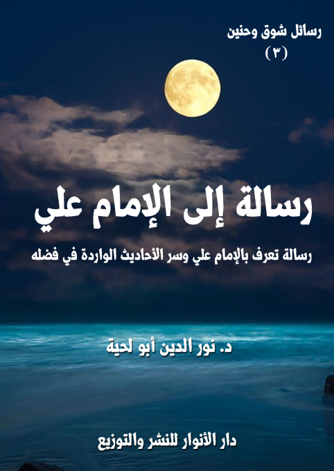

الكتاب: رسالة إلى الإمام علي
المؤلف: أ.د. نور الدين أبو لحية
الناشر: دار الأنوار للنشر والتوزيع
الطبعة: الأولى، 1438 هـ
عدد الصفحات: 235
ISBN: 978-620-2-34579-8
لمطالعة الكتاب من تطبيق مؤلفاتي المجاني وهو أحسن وأيسر: هنا

التعريف بالكتاب
تحاول هذه الرسالة ـ بحدود الطاقة ـ التعريف بجوانب مهمة من حياة وشخصية الإمام علي، باعتباره من الشخصيات التي حظيت بما لم يحظ بها غيرها من مناقب وفضائل في أحاديث كثيرة جدا اتفقت الأمة عليها، بل خصصت لها الكتب والرسائل من لدن فحول المحدثين المعتبرين لدى المدارس المختلفة.
وهي بذلك تحاول إثبات ما في تلك الأحاديث من دلائل صدق النبوة.. فالرسول صلى الله عليه وآله وسلم لم يكن ينطق عن الهوى، ولم يكن يجامل أحدا حينما كان يشيد بالإمام علي، ويذكر فضله، أو يدعو إلى توليه، أو يخبر أنه أخوه، أو أنه نفسه، أو أنه معه مثلما كان هارون من موسى، أو يعتبره دائرا مع الحق حيثما دار، أو أنه سلم لمن سالم، وحرب لمن حارب..
رسالة إلى الإمام علي (6)
تحاول هذه الرسالة ـ بحدود الطاقة ـ التعريف بجوانب مهمة من حياة وشخصية الإمام علي باعتباره من الشخصيات التي حظيت بما لم يحظ بها غيرها من مناقب وفضائل في أحاديث كثيرة جدا اتفقت الأمة عليها، بل خصصت لها الكتب والرسائل من لدن فحول المحدثين المعتبرين لدى المدارس المختلفة.
وهي بذلك تحاول إثبات ما في تلك الأحاديث من دلائل صدق النبوة.. فالرسول صلى الله عليه وآله وسلم لم يكن ينطق عن الهوى، ولم يكن يجامل أحدا حينما كان يشيد بالإمام علي، ويذكر فضله، أو يدعو إلى توليه، أو يخبر أنه أخوه، أو أنه نفسه، أو أنه معه مثلما كان هارون من موسى، أو يعتبره دائرا مع الحق حيثما دار، أو أنه سلم لمن سالم، وحرب لمن حارب..
فكل هذه النصوص الواردة في كتب السنة، وغيرها كثير، وكثير منها متواتر ومنقول في التراث الحديثي للمدارس المختلفة.. لا ينبغي أن نمر عليها مرور الكرام، ولا يصح أن نؤولها، ونعتبر رسول الله صلى الله عليه وآله وسلم متكلفا أو مجاملا أحدا من الناس.
وإنما الفهم الصحيح لها هو الدعوة للبحث عن هذه الشخصية، وأخلاقها وآدابها، لأن الولاية والمحبة والنصرة ناتجة عن المعرفة.. فلا يمكن أن نحب ولا أن نوالي ولا أن ننصر، ولا أن نقتدي بمن لا نعرفه، وإنما نكتفي بسماع بعض الأحاديث عنه.
وبذلك فإن الهدف الأول من هذه الرسالة ليس هو شخص الإمام علي، وإنما الهدف هو إثبات صدق رسول الله صلى الله عليه وآله وسلم في كل ما ذكره عنه.
فالإمام علي ـ بالإضافة إلى كونه من آل البيت ـ هو أكثر الصحابة ملازمة لرسول الله صلى الله عليه وآله وسلم.. فقد ربي في حجره مذ كان صبيا صغيرا جدا.. وصحبه في الشعب.. وفي كل مكان كان فيه.. وكان أكثر الناس له ملازمة.. ولذلك فإنه يعتبر النموذج الأمثل للصحابة السابقين
رسالة إلى الإمام علي (7)
الصادقين، ويعتبر النموذج الأمثل للتربية النبوية في قمة قمم كمالها.
ولذلك فإن العقل يقتضي منا البحث عن هذا النموذج، والتعرف على سيرته وهديه، حتى نخرج علمنا من الإجمال إلى التفصيل، ومن التقليد إلى التحقيق، ومن المعرفة العاطفية المجردة إلى المعرفة العقلية المحققة.
بناء على هذا حاولنا في هذه الرسالة أن نعرض ـ باختصار شديد ـ عشرة جوانب في شخصية الإمام علي المتميزة، وهي:
المريد الصادق: ونريد من خلاله إثبات تلمذة الإمام علي لرسول الله صلى الله عليه وآله وسلم الكاملة والخالصة، وإشادة رسول الله صلى الله عليه وآله وسلم به، وبصدقه، والأدلة الواقعية على ذلك.
الحاكم العادل: ونريد من خلاله إثبات الأسس الكبرى التي تقوم عليها العدالة عند الإمام علي، والتي تجلت في الفترة القصيرة التي ولي فيها الحكم، وأعطى فيها النموذج المثالي للخلافة على منهاج النبوة.
التقي الورع: ونريد من خلاله إثبات مفهوم التقوى عند الإمام علي، وصورة الشخصية المسلمة من كل جوانبها كما تصورها أحاديثه وخطبه، وكما تمثلها حياته وشخصيته.
العفيف الزاهد: ونريد من خلاله إثبات تلمذة الإمام علي لرسول الله صلى الله عليه وآله وسلم في عفته وزهده، سواء في الجانب النظري الذي تحدث عنه في خطبه ورسائله، أو في جانبه العملي، كما عاشه.
الأواب العابد: ونريد من خلاله إثبات تلمذة الإمام علي لرسول الله صلى الله عليه وآله وسلم في التعبد والخشوع والخضوع لله تعالى، وسنته في ذلك.
الولي العارف: ونريد من خلاله إثبات أنواع المعارف والحقائق التي عبر عنها الإمام علي، والتي تمثل الأساس الذي تقوم عليه المعرفة الصحيحة البعيدة عن الدجل
رسالة إلى الإمام علي (8)
والأسطورة.
العالم البصير: ونريد من خلاله إثبات صدق تلك الشهادات التي أخبر بها رسول الله صلى الله عليه وآله وسلم عن علم الإمام علي، وبصيرته النافذة في المجالات المتعددة.
الواعظ الناصح: ونريد من خلاله بيان المكانة الكبيرة التي احتلها الإمام علي ومواعظه، وتأثيرها الكبير على الواقع الإسلام في عصره أو ما بعده من العصور.
الحكيم المعلم: ونريد من خلاله إثبات حكمة الإمام علي، وكيف صاغها في قوالب جميلة لقيت ولا تزال تلقى إعجاب الجميع حتى من غير المسلمين.
الإنسان الكامل: ونريد من خلاله إثبات كون الإمام علي نموذجا مثاليا للشخصية الممثلة للإسلام في أرقى جوانبه، والشهادات الدالة على ذلك.
وقد حاولنا أن نعبر عن هذه الحقائق بمثل ما ذكرناه في أول هذه السلسلة، وهو التعبير العاطفي الممزوج باللغة العلمية.. لأن الحديث عن هذا الإمام يمتزج فيه كلا الجانبين.
أما المصادر التي اعتمدناها عليها، فهي مصادر متنوعة، وأهمها ما وصل إلينا من تراث الإمام علي نفسه من خطبه ورسائله وغيرها.. والتي جمعها الشريف الرضي وغيره من المحققين.
ولا يعنينا من يشكك في أمثال هذه المصادر، لأنه لايعتمد منهجا علميا ولا أخلاقيا.. ذلك أنه يضع كل الحوائل التي تحول بين ذلك التراث العظيم الذي تركه الإمام علي، وبين استفادة الأمة منه.. فهو يضع شرطا مستحيلا لقبول أحاديثه، وهو أن يكون رواة أحاديث الإمام علي من أصحاب الفئة الباغية، أو ممن ساندها ورضي عنها، أو ممن سكت عنها، ولم ينكر عليها، لأن ما عدا هؤلاء يعتبرون شيعة عند هؤلاء المنكرين.. ولذلك يرفضون حديثهم وأسانيدهم ورواياتهم.
رسالة إلى الإمام علي (9)
وهذه شروط لا تتسم بالعلمية، ذلك أنه من المستحيل أن يروي عن الشخص إلا من صحبه، وتأثر به، وعايشه.. أما البعيد عنه، أو الذي ينظر إليه نظرة سلبية، أو يخاف على نفسه من الاقتراب منه، فإنه يستحيل أن يسمع كلامه، فكيف بروايته.
ونحب أن ننبه إلى أن اعتبار نهج البلاغة أو غيره من المصادر التي حوت أحاديث الإمام علي من كتب الشيعة التي ينص التيار السلفي خصوصا على تكذيبها وحرمة الاقتراب منها، كذب محض، فالكثير من أعلم المدرسة السنية في القديم والحديث يقتبسون من هذه المصادر سواء كانوا من الصوفية، أو من المعتزلة أو من الأشاعرة أو غيرهم.
ومن أكبر الأدلة على ذلك أن أكبر شارح لنهج البلاغة وهو ابن أبي الحديد، وهو يتبنى مواقف المدرسة السنية من الصحابة.. ومن شراحها الشيخ صبحي الصالح، وهو من علماء الحديث المعاصرين.. من شراحها الشيخ محمد عبده.. وهو داعية التنوير المعروف.. ومنهم الشيخ محمد محيي الدين عبد الحميد، وهو العالم الأزهري المعروف.
بل إن الشيخ محمد عبده أشاد بها كثيرا، واعتبرها من المصادر الضرورية للثقافة الإسلامية الراقية، فقال في مقدمة شرحه له، وبداية علاقته به: (عرفت (نهج البلاغة) في صدر الصبا.. وبقيت نغمات في الأذن، ثم أخذت أسمع بعد ذلك - كلَّما لمع خطيب على منابر السياسة - قول الناس تعليقا على بلاغة الخطيب: لقد قرأ (نهج البلاغة) وامتلأ بفصاحته وها أنا أعيد القراءة هذه الأيام فإذا البلاغة قد ازدادت في الأذنين حلاوة، وإذا العبارات كأنما أضافت طلاوة إلى طلاوة..) (1)
ثم قال بعد إطناب شديد في وصفه: (فقلب معي الصفحات الرائعة الأدبيّة من (نهج البلاغة) وقل لي: أين ينتهي الأديب ليبدأ الفيلسوف، وأين ينتهي الفيلسوف ليبدأ الفارس، ثم أين ينتهي هذا ليبدأ السياسي إنّه لا فواصل ولا فوارق، ففي هذه المختارات خطب
__________
(1) انظر مقدمة الشيخ محمد عبده لشرحه على (نهج البلاغة).
رسالة إلى الإمام علي (10)
ورسائل وأحكام، وحجاج وشواهد امتزج فيها الأدب بالحكمة، والحكمة بالأريحيّة وهاتان بما نسميه اليوم سياسة يسوس بها الحاكم شعبه، أو يداور بها المفاوض خصمه.. وإنّ النصوص ليطول بنا نقلها إلى القارئ ما طال (نهج البلاغة) فخير للقارئ أن يرجع اليه ليطالع نفسا قد اجتمع فيها ما يصور عصرها من حيث الركون في إدراك حقائق الأمور إلى سلامة السليقة، وحضور البديهة، وصدق البصيرة بغير حاجة إلى تحليلات العقل وتعليلاته، ولا إلى طريقة المناطقة في جمع الشواهد وترتيب الشواهد على المقدمات)
ومثله قال الاستاذ محمد محي الدين عبد الحميد في مقدمة شرحه: (أوفى لي حكم القدر بالاطلاع على كتاب (نهج البلاغة) مصادفة بلا تعمل، فتصفحت بعض صفحاته، وتأملت جملا من عباراته، فكان يخيل لي في كل مقام أن حروبا شبت، وغارات شنت، وان للبلاغة دولة، وللفصاحة صولة.. ذلك الكتاب الجليل هو جملة ما اختاره السيد الشريف الرضي - رحمه الله - من كلام سيدنا ومولانا أمير المؤمنين علي بن أبي طالب كرم الله وجهه، جمع متفرقة وسماه (نهج البلاغة) ولا أعلم اسما أليق بالدلالة على معناه منه، وليس في وسعي أن أصف هذا الكتاب بأزيد مما دل عليه اسمه، ولا أن آتي بشيء في بيان مزيته فوق ما أتى به صاحب الإختيار)
وهكذا نجد أعلاما كبارا في المدرسة السنية يقبلون الكتاب، ويثنون عليه، بل يدعون إلى دراسته والاستفادة منه في كل الجوانب القيمية والأدبية.
ومنهم على سبيل المثال الشيخ محمود شكري الآلوسي الذي قال عنه: (نهج البلاغة، ذلك الكتاب الذي أقامه الله حجة واضحة على أن عليا كان أحسن مثال حي لنور القرآن وحكمته، وعلمه وهدايته، وإعجازه وفصاحته.. اجتمع لعلي في هذا الكتاب ما لم يجتمع لكبار الحكماء، وأفذاذ الفلاسفة، ونوابغ الربانيين، من آيات الحكمة السابغة، وقواعد السياسة المستقيمة، ومن كل موعظة باهرة، وحجة بالغة تشهد له بالفضل، وحسن الأثر..
رسالة إلى الإمام علي (11)
خاض علي في هذا الكتاب لجة العلم، والسياسة والدين، فكان في كل هذه المسائل نابغة مبرزا، ولئن سألت عن مكان كتابه من الادب بعد أن عرفت مكانه من العلم، فليس في وسع الكاتب المترسل، والخطيب المصقع، والشاعر المفلق أن يبلغ الغاية من وصفه، أو النهاية من تقريظه. وحسبنا أن نقول: أنه الملتقى الفذ الذي التقى فيه جمال الحضارة، وجزالة البداوة، والمنزل المفرد الذي اختارته الحقيقة لنفسها منزلا تطمئن فيه، وتأوي اليه بعد أن زلت بها المنازل في كل لغة) (1)
ومنهم عباس محمود العقاد الذي قال عنه: (نهج البلاغة: هو ما اختاره الشريف الرضي أبو الحسن محمد بن الحسين الموسوي من كلام أمير المؤمنين علي بن أبي طالب رضي الله عنه، وهو الكتاب الذي ضم بين دفتيه عيون البلاغة وفنونها، وتهيأت به للناظر فيه أسباب الفصاحة ودنا منه قطافها، إذ كان من كلام أفصح الخلق - بعد الرسول صلى الله عليه وآله وسلم - منطقا، وأشدهم اقتدارا، وأبرعهم حجة، وأملكهم للغة يديرها كيف شاء الحكيم الذي تصدر الحكمة عن بيانه، والخطيب الذي يملأ القلب سحر بيانه، والعالم الذي تهيأ له من خلاط الرسول، وكتابة الوحي، والكفاح عن الدين بسيفه ولسانه منذ حداثته ما لم يتهيأ لأحد سواه) (2)
وغيرهم كثير.. فكلهم شهد بذلك.. ما عدا المدرسة السلفية، والتي سيطرت بطرق مختلفة على مقاليد الأمة في هذا الزمان، واحتكرت السنة، وحرمت هذا الجيل وما قبله من الأجيال من الاستفادة من هذا التراث الجليل لهذا الإمام.. لتحوله عن صورته التي أشاد بها النبي صلى الله عليه وآله وسلم إلى صورة هشة ضعيفة.. وتجعل العلاقة معه مجرد علاقة عاطفية مجردة عن أي دليل علمي.. بدليل لو أنك سألتهم عن أحاديث الإمام علي، لما أتوك بشيء.. بل إن
__________
(1) جولات اسلامية للاستاذ محمد أمين النواوي ص (98).
(2) عبقرية الإمام ص (178).
رسالة إلى الإمام علي (12)
أحاديثهم التي يذكرونها عن غيره من صغار الصحابة والتابعين أكثر من أحاديثه التي يروونها عنه.
بل إن أحاديثهم عنه مملوءة بالتشويه والتضليل.. ولذلك تجنبنا في هذه الرسالة كل تلك النصوص التي وضعها النواصب عنه، والتي أرادوا من خلالها تشويه شخصه الشريف من أمثال كونه خطب ابنة أبي جهل، ونهي رسول الله صلى الله عليه وآله وسلم له عن ذلك.. لأن مثل هذا الحديث لا يشوه شخص الإمام علي فقط، وإنما يشوه رسول الله صلى الله عليه وآله وسلم قبل ذلك، ويجعله يعارض النص القرآني المجوز للتعدد.. بل يجعله لا يرضى لابنته ما يرضاه لسائر البنات.. ثم كيف يعقل أن يجمع الإمام علي بين فاطمة بنت حبيه رسول الله صلى الله عليه وآله وسلم وبين ابنة عدوه أبي جهل؟
وهكذا بعض الأحاديث التي نتوسم فيها البعد الأموي الذي كان يستعمل كل الوسائل لتشويه هذا الإمام وصرف المسلمين عنه.. بل إنه شرع سبه على المنابر لعقود طويلة.
وبناء على ذلك كان تركيزنا على النصوص التي قالها هو.. فهو أحسن من يعبر عن نفسه.. وسيرى القارئ الكريم من خلال تلك التعابير ـ التي لم نختر إلا جزءا قليلا منها ـ ما يملؤه بالعجب.
هذه أغراض رسالتنا للإمام علي.. وهي نقطة من بحره العميق.. فمن ذا يطيق الحديث عنه.. ومن ذا يستطيع أن يلم بجميع مكارمه؟
رسالة إلى الإمام علي (13)
سيدي يا أمير المؤمنين وولي المتقين وحبيب الله ورسوله..
هذه رسالتي إليك في ذكرى استشهادك التي مر عليها مئات السنين، ومع ذلك لا تزال حية عالقة بجبين التاريخ، وألما وحرقة في قلب كل حر على هذه الأرض..
ماذا عساي أقول لك، وقد مر على استشهادك كل تلك السنين الطوال العجاف، ومر بنا فيها مئات المآسي والآلام والمصائب، وتخلفت أمتنا عن ركب الأمم، بعد أن استولى أصحاب الملك العضوض على زمام أمر الأمة، وملأوها بالدجل والخرافة والاستبداد.
لقد حولوا التوحيد الذي كنت تدعو إليه تجسيما.. والعدالة التي عشتها ورسمت معالمها جورا.. والعلم الذي ظللت طول عمرك تدعو إليه جهلا وخرافة..
ولم يكتفوا بذلك، بل راحوا إلى تلك القيم النبيلة التي عشت حياتك كلها تمثلها وتدعو إليها قيما مملوءة بالتناقضات.
لقد حول أبناء الملك العضوض بعدك الشخصية المسلمة التي وصفتها في موعظتك لهمام، والممتلئة بالسلام والمحبة والتواضع إلى شخصية ممتلئة بالعنف والبغض والكبرياء.. حتى صارت صورة المسلم لا تختلف عن صورة الوحش الكاسر، الذي لا ترى منه إلا أنيابه وشدته وحدته.
وكيف لا يحصل لنا ذلك سيدي.. وكيف لا يحيق بهذه الأمة ما نزل بها، وقد عزلتك، وعزلت معك أولئك السابقين الصادقين، وعزلت بعدهم سيدا شباب أهل الجنة، وأبناءهم من العترة الطاهرة، ليتولى أمرها الطلقاء وأبناء الطلقاء، وليعيثوا فيها ما شاءت لهم شياطينهم وأهواؤهم من ألوان الفساد.
في هذه الأيام أتذكر ضرارا.. ذلك الصاحب الوفي الذي استطاع أن يقهر كل
رسالة إلى الإمام علي (14)
المخاوف، وأن ينطق بصفاتك أمام ألد أعدائك، مثلما فعل مؤمن آل فرعون حينما راح يذب عن موسى عليه السلام..
لقد قال في مجلسهم عندما طلبوا منه وصفك: (كان والله! بعيد المدى، شديد القوى، يقول فصلا، ويحكم عدلا، يتفجّر العلم من جوانبه، وتنطق الحكمة من لسانه، يستوحش من الدنيا وزخرفها، ويستأنس بالليل ووحشته، وكان غزير الدمعة، طويل الفكرة، يعجبه من اللباس ما خشن، ومن الطعام ما جشب، وكان فينا كأحدنا، يجيبنا إذا سألناه، وينبئنا إذا استنبأناه، ونحن ـ والله! ـ مع تقرّبه لنا وقربه منّا لا نكاد نكلّمه هيبة له، يعظّم أهل الدين، ويقرّب المساكين، لا يطمع القويّ في باطله، ولا ييأس الضعيف من عدله، وإنّي أشهد بالله لقد رأيته في بعض مواقفه ـ وقد أرخى الليل سدوله وغارت نجومه ـ قابضا على لحيته يتململ تململ السليم ويبكي بكاء الحزين وهو يقول: (يا دنيا غرّي غيري، إليّ تعرّضت أم إليّ تشوّقت؟ هيهات هيهات، قد باينتك ثلاثا لا رجعة فيها، فعمرك قصير، وخطرك كبير، وعيشك حقير، آه! من قلّة الزّاد، وبعد السّفر، ووحشة الطّريق) (1)
وعندما سئل بعد نعته هذا عن مقدار حزنه عليك، قال: (حُزن من ذُبحَ ولدها في حجرها فلا ترقَأ عبرتها، ولا يَسكُن حُزنها)
ونحن مثله ـ سيدي ـ لا يقل حزننا عن حزنه، وألمنا عن ألمه.. وكيف لا يكون حزننا وألمنا كذلك.. وقد عشنا المآسي بعدك، ولا زال نعيشها.. فكل تحريف وقع في الإسلام، وكل دم سفك فيه.. هو بسبب ذلك التهور الذي وقع فيه من عزلك وأبعدك، وعزل معك كل تلك الوصايا النبوية التي دعت إليك، واعتبرتك إماما قمت أو قعدت.. واعتبرت الحق معك.. بل يدور معك حيثما درت.
__________
(1) لاستيعاب 3: 107، حلية الأولياء 1: 84.
رسالة إلى الإمام علي (15)
في هذه الأيام أتذكر ـ سيدي ـ أمك فاطمة التي كان رسول الله صلى الله عليه وآله وسلم يناديها أمي.. لقد كانت تسير بجنب الكعبة، وهي حامل بك، وشاء الله أن تولد في الكعبة (1)، كما شاء أن تستشهد في مسجد الكوفة.. وبين ولادتك واستشهادك كانت حياتك كلها مسجدا وعبادة وتقوى، وكأنها تردد بلسان حالها قوله تعالى: {قُلْ إِنَّ صَلاَتِي وَنُسُكِي وَمَحْيَايَ وَمَمَاتِي لِلّهِ رَبِّ الْعَالَمِين} [الأنعام:162]
في هذه الأيام، وفي كل الأيام، أتذكر ـ سيدي ـ تلك الضائقة المباركة التي نزلت بوالدك، وأنت لا تزال في صباك الباكر، حينها طلب رسول الله صلى الله عليه وآله وسلم من عمّيه وعميك حمزة والعباس أن يتحمّلا ما نزل بأخيهما، حينها أخذ العباس أخاك طالبا، وأخذ حمزة أخاك جعفرا.. أما رسول الله صلى الله عليه وآله وسلم، فقد أخذك أنت، لأنه يعلم من تكون، وإلام يصير إليه أمرك.
ومنذ ذلك الوقت وإلى آخر يوم من حياته صلى الله عليه وآله وسلم، وأنت بجانبه، وهو لك مقام الوالد والأخ والأستاذ والمربي.. وكل شيء..
وحتى عندما أمر بغلق الأبواب المفتوحة إلى المسجد أمر بترك بابك مفتوحا، وكيف لا يتركه، وفيه أنت.. وفيه ابنته الزهراء.. وفيه عترته الطاهرة وريحانتاه وسيدا شباب أهل الجنة؟
لقد ورد في الحديث الذي حاول الكثير التشكيك فيه، لا من باب البحث العلمي،
__________
(1) يشكك البعض في ولادة الإمام علي في الكعبة، ويتصور أن ذلك قول الشيعة، وهذا غير صحيح، فالمصادر السنية والشيعة تذكر ذلك، ومن علماء السنة الذي نصوا على هذا، الحاكم النيسابوري صاحب المستدرك، حيث قال: (وقد تواترت الأخبار ان فاطمة بنت أسد ولدت أمير المؤمنين علي بن أبي طالب كرّم الله وجهه في جوف الكعبة) (المستدرك 3/ 483)
ومنهم العلامة المحدث شاه ولي الله أحمد الدهلوي في (إزالة الخفاء)، حيث قال: (قد تواترت الاخبار ان فاطمة بنت أسد ولدت أمير المؤمنين علياً في جوف الكعبة)
رسالة إلى الإمام علي (16)
وإنما رغبة عنك، ما يدل كل عاقل على ذلك، فعن زيد بن أرقم، وغيره من الصحابة قال: (كانت لنفر من أصحاب رسول الله صلى الله عليه وآله وسلم أبواب شارعة في المسجد، فقال صلى الله عليه وآله وسلم يوماً: سدّوا هذه الأبواب الاّ باب عليّ قال: فتكلّم في ذلك ناس، فقام رسول الله صلى الله عليه وآله وسلم فحمد الله وأثنى عليه، ثم قال: (أما بعد، فاني أمرت بسدّ هذه الأبواب غير باب علي، فقال فيه قائلكم، والله ما سددت شيئاً ولا فتحته، ولكن أمرت بشيء فاتبعته) (1)
وهكذا روى الحرث بن مالك، قال: (أتيت مكة فلقيت سعد بن أبي وقاص، فقلت له: هل سمعت لعلّي منقبة؟ قال: كنا مع رسول الله صلى الله عليه وآله وسلم في المسجد فنودي فينا لسدّه ليخرج من في المسجد الا آل رسول الله صلى الله عليه وآله وسلم، قال: فخرجنا، فلما أصبح أتاه عمّه، فقال: يا رسول الله، أخرجت أصحابك وأعمامك وأسكنت هذا الغلام؟ فقال رسول الله صلى الله عليه وآله وسلم: ما أنا أمرت بإخراجكم ولا بإسكان هذا الغلام، ان الله هو أمر به) (2)
لقد ذكرتَ ذلك ـ سيدي ـ لأعدائك الذي جهلوا مقامك، وراحوا يضعونك في محل واحد مع الطلقاء والبغاة والظلمة.. لقد كنت تقول لهم بكل تواضع، وأنت تذكر الحقيقة التي لم ولن يستطيع أحد إنكارها: (وقد علمتم موضعي من رسول الله صلى الله عليه وآله وسلم بالقرابة القريبة، والمنزلة الخصيصة. وضعني في حجره وأنا وليد، يضمّني إلى صدره، ويكنفني في فراشه، ويمسّني جسده، ويشمّني عرفه. وكان يمضغ الشّيء ثمّ يلقمنيه، وما وجد لي كذبة في قول،
__________
(1) رواه الترمذي، وقال عقبه: هذا حديث حسن غريب لا نعرفه إلا من هذا الوجه، وقد سمع مني محمد بن إسماعيل ـ يعني البخاري ـ هذا الحديث، سنن الترمذي ج 5 ص 305، ورواه ابن المغازلي في المناقب ص 260 الحديث 308 وابن عساكر في ترجمة الإمام علي بن أبي طالب من تاريخ مدينة دمشق ج 1 ص 258.
ومثلهم رواه أحمد في المسند (2/ 26)، وفي الفضائل (955)، وقال الحافظ ابن حجر: (هو حديث مشهور له طرق متعددة كل طريق منها على انفراده لا تقصر عن رتبة الحسن، ومجموعه مما يقطع بصحته على طريق كثير من أهل الحديث) [القول المسدد (20)]
(2) خصائص أميرالمؤمنين للنسائي، ص 13.
رسالة إلى الإمام علي (17)
ولا خطلة في فعل. وكنت أتّبعه اتّباع الفصيل أثر أمّه، يرفع لي في كلّ يوم من أخلاقه علما، ويأمرني بالاقتداء به) (1)
وذكرت لهم تلك الحقيقة التي لا يعقلها إلا من يقدر النبوة حق قدرها، فقلت: (ولقد قرن الله به صلى الله عليه وآله وسلم من لدن أن كان فطيما أعظم ملك من ملائكته، يسلك به طريق المكارم ومحاسن أخلاق العالم ليله ونهاره، ولقد كنت أتبعه اتباع الفصيل أثر أمه، يرفع لي في كل يوم من أخلاقه علما ويأمرني بالاقتداء به) (2)
أذكر جيدا ـ سيدي ومولاي ـ أنك في تلك السنوات التي سبقت البعثة، حيث كان رسول الله صلى الله عليه وآله وسلم متوجها توجها كليا إلى ربه.. كنت أنت ترى ذلك منه، وتتأثر به.. وكنت ـ إذا ما ذهب إلى غار حراء ليتعبد لربه ـ توصل له الطعام، وتلبث معه.
لقد ذكرت ذلك كله لمن جهل مقدارك، فقلت: (ولقد كان يجاور في كل سنة بحراء، فأراه ولا يراه غيري، ولم يجتمع بيت واحد يومئذ في الإسلام، غير رسول الله صلى الله عليه وآله وسلم وخديجة، وأنا ثالثهما، أرى نور الوحي والرسالة، وأشم ريح النبوة، ولقد سمعت رنة الشيطان حين نزل الوحي عليه صلى الله عليه وآله وسلم، فقلت: يا رسول الله! ما هذه الرنة؟ فقال: هذا الشيطان أيس من عبادته، إنك تسمع ما أسمع وترى ما أرى، إلا أنك لست بنبي، ولكنك وزير، وإنك لعلى خير) (3)
وقلت: (لقد عبدت الله تعالى قبل أن يعبده أحد من هذه الأمّة) (4)، وقلت: (إني عبدالله وأخو رسوله، وأنا الصديق الأكبر، لا يقولها بعدي الاّ كاذب، صلّيت قبل الناس بسبع سنين قبل
__________
(1) نهج البلاغة، الخطبة 192.
(2) نهج البلاغة، الخطبة 192.
(3) نهج البلاغة، الخطبة 190.
(4) صفة الصفوة 1: 162.
رسالة إلى الإمام علي (18)
أن يعبده أحدٌ من هذه الأمة) (1)
ولذلك لم تدنسك الجاهلية بأدناسها، وكيف تدنسك وأنت تربية رسول الله صلى الله عليه وآله وسلم الخالصة.. وهل يمكن لأحد ربي في أحضان رسول الله صلى الله عليه وآله وسلم أن يلم بما يلم به أهل الجاهلية من الشرك والفسوق والعصيان؟
وقد ظللت ـ سيدي ـ ملتزما بتلك التربية النبوية لا تحيد عنها إلى آخر لحظة من حياتك، أذكر جيدا ذلك اليوم الذي عوتبت فيه على تقلّلك من الدنيا وشدّة عيشك.. حينها بكيت بحرقة.. ثم قلت: (كان رسول الله صلى الله عليه وآله وسلم يبيت اللّيالي طاوياً وما شبع من طعام أبداً، ولقد رأى يوماً ستراً موشى على باب فاطمة فرجع ولم يدخل وقال: مالي ولهذا غَيِّبوه عنّي، ومالي وللدنيا، وكان يجوع فيشدّ الحجر على بطنه وكنتُ أشدّه معه، فهَل أكرمَهُ الله بذلك أم أهَانهُ؟ فاِن قال قائل اَهانَهُ كذب ومرق، وان قال اكرَمَهُ فيعلم ان الله قد أهان غيره حيث بسَط له الدنيا وزوَاها عن أقرب الناس اليه وأعزّهُم عليه حيث خرَجَ منها خميصاً وورَدَ الآخرة سليماً، لم يرفع حجراً على حجر، ولا لبنة على لبنة، ولقد سَلكنا سبيله بعده، والله لقد رَفعتُ مدرعتي هذه حتى استحييتُ من راقعها، ولقد قيل لي الا تستبدل بها غيرها، فقلت للقائل ويحك اعزُب، فعند الصباح يحمد القوم السرى) (2)
ولهذا، فإنه لا غرابة أن تكون أول الناس إسلاما.. لأنك أسلمت نفسك لرسول الله صلى الله عليه وآله وسلم قبل ذلك، فكنت فانيا فيه، وفي كل ما جاء به.. وهل يمكن لأحد في مثل عقلك وأدبك، يعيش مع رسول الله صلى الله عليه وآله وسلم، ويتربى على يديه الشريفين، ثم يعرض عنه، أو يسبقه أحد إليه؟
__________
(1) المستدرك على الصّحيحين ج 3 ص 112.
(2) تذكرة الخواص: ص 117.
رسالة إلى الإمام علي (19)
ولم تكتف بإعلان إسلامك فقط، ولا بصلاتك مع حبيبك صلى الله عليه وآله وسلم فقط.. بل كنت معه في كل المحال تتلقى بخضوع مطلق كل ما يتنزل عليه من أوامر إلهية.. فعندما تنزل عليه الأمر بقيام الليل، كما قال تعالى: {يَاأَيُّهَا الْمُزَّمِّل (1) قُمِ اللَّيْلَ إِلاَّ قَلِيلاً (2) نِصْفَهُ أَوِ انقُصْ مِنْهُ قَلِيلاً (3) أَوْ زِدْ عَلَيْهِ وَرَتِّلِ الْقُرْآنَ تَرْتِيلاً (4) إِنَّا سَنُلْقِي عَلَيْكَ قَوْلاً ثَقِيلاً (5) إِنَّ نَاشِئَةَ اللَّيْلِ هِيَ أَشَدُّ وَطْءًا وَأَقْوَمُ قِيلاً} [المزمل:1 - 6] كنت معه في ذلك.. وظللت طول عمره معه في ذلك.
وعندما نزل عليه قوله تعالى: {وَأَنذِرْ عَشِيرَتَكَ الأَقْرَبِين} [الشعراء:214] دعاك رسول الله صلى الله عليه وآله وسلم، وطلب منك أن تقف معه في هذا الموقف الذي لا يزال خصومك يتسترون عليه، بل يتمنون لو قدروا أن يحذفوه من دواوين المؤرخين.
لكنه مع ذلك وصلنا بالأسانيد الكثيرة، لأن الباطل لا يمكن أن يقاوم الحق، ونور الله لا يمكن أن تطفئه أفواه البشر.. لقد بلغنا حديثك عن ذلك المشهد، لقد بلغنا قولك: (لما نزلت هذه الآية على رسول الله صلى الله عليه وآله وسلم: {وَأَنذِرْ عَشِيرَتَكَ الأَقْرَبِين} [الشعراء:214]، دعانى رسول الله صلى الله عليه وآله وسلم فقال لي: يا علي، إن الله أمرني أن أنذر عشيرتي الأقربين.. فاصنع لنا صاعا من طعام، واجعل عليه رحل شاة، واملأ لنا عسا من لبن، ثم اجمع لي بني عبد المطلب حتى أكلمهم، وأبلغهم ما أمرت به، ففعلت ما أمرني به ثم دعوتهم له، وهم يومئذ أربعون رجلا، يزيدون رجلا أو ينقصونه، فلما اجتمعوا إليه دعاني بالطعام الذي صنعت لهم، فجئت به، فلما وضعته تناول رسول الله صلى الله عليه وآله وسلم حذية من اللحم، فشقها بأسنانه، ثم ألقاها في نواحي الصحفة ثم قال: خذوا بسم الله، فأكل القوم حتى ما لهم بشيء حاجة وما أرى إلا موضع أيديهم، وأيم الله الذي نفس علي بيده، وإن كان الرجل الواحد منهم ليأكل ما قدمت لجميعهم ثم قال: اسق القوم، فجئتهم بذلك العس، فشربوا منه حتى رووا منه جميعا، وأيم الله إن كان الرجل الواحد منهم ليشرب مثله، فلما أراد رسول الله صلى الله عليه وآله وسلم أن يكلمهم بدره أبو
رسالة إلى الإمام علي (20)
لهب إلى الكلام، فقال: لهدما سحركم صاحبكم! فتفرق القوم ولم يكلمهم رسول الله صلى الله عليه وآله وسلم، فقال: الغد يا علي، إن هذا الرجل سبقني إلى ما قد سمعت من القول، فتفرق القوم قبل أن أكلمهم، فعد لنا من الطعام بمثل ما صنعت، ثم اجمعهم إلي، قال: ففعلت، ثم جمعتهم ثم دعاني بالطعام فقربته لهم، ففعل كما فعل بالأمس، فأكلوا حتى ما لهم بشيء حاجة ثم قال: اسقهم، فجئتهم بذلك العس، فشربوا حتى رووا منه جميعا، ثم تكلم رسول الله صلى الله عليه وآله وسلم، فقال: يا بني عبد المطلب، إني والله ما أعلم شابا في العرب جاء قومه بأفضل مما قد جئتكم به، إني قد جئتكم بخير الدنيا والآخرة، وقد أمرني الله تعالى أن أدعوكم إليه، فأيكم يؤازرني على هذا الأمر على أن يكون أخي ووصيي وخليفتي فيكم؟ قال: فأحجم القوم عنها جميعا، وقلت: وإني لأحدثهم سنا، وأرمصهم عينا، وأعظمهم بطنا، وأحمشهم ساقا، أنا يا نبي الله، أكون وزيرك عليه فأخذ برقبتي، ثم قال: (إن هذا أخي ووصى وخليفتي فيكم، فاسمعوا له وأطيعوا)، فقام القوم يضحكون، ويقولون لأبي طالب: قد أمرك أن تسمع لابنك وتطيع) (1)
وهكذا كنت معه عندما نزل عليه قوله تعالى: {فَاصْدَعْ بِمَا تُؤْمَرُ وَأَعْرِضْ عَنِ الْمُشْرِكِين} [الحجر:94]، حينها تعرض رسول الله صلى الله عليه وآله وسلم هو والسابقون من الصحابة لكل أصناف الأذى، وكنت معه في ذلك كله تعاني مثلما يعاني، وتصد عنه مثلما كان أبوك يصد عنه.
فعندما حوصر في الشعب الذي دام ثلاث سنوات كاملة، كنت معه في الشعب، وفي ذلك الحصار الشديد.. ولم يكن معك أحد من الصحابة إلا من آمن من بني هاشم وأبو سلمة وزوجه أم سلمة.. وهذه السنوات والمعاناة التي كنت تعاني فيها، وتتربى على يدي رسول الله صلى الله عليه وآله وسلم، وتستمع إلى القرآن الكريم، وهو ينزل غضا طريا كفيلة لأن تعطيك من المرتبة
__________
(1) تاريخ الطبري، (2/ 319)
رسالة إلى الإمام علي (21)
ما لا تناطحه الجوزاء، وما لا يدانيك فيه أحد.
وهكذا ظللت مع رسول الله صلى الله عليه وآله وسلم إلى أن أخرجه أبو سفيان وحزبه، والذين حولتهم الأمة بعدك إلى صحابة أجلاء، وقرنتهم بك وبالسابقين من أصحابك، وحينها قدمت درسا من دروس الفداء العظيمة، حين خلفته في فراشه، وحين اتشحت ببردته الخضراء لتوهم أولئك المشركين المتربصين برسول الله صلى الله عليه وآله وسلم أنك هو.. وكنت حينها مصداقا لقوله تعالى: {وَمِنَ النَّاسِ مَن يَشْرِي نَفْسَهُ ابْتِغَاء مَرْضَاتِ الله وَاللّهُ رَؤُوفٌ بِالْعِبَاد} [البقرة:207]
لقد قال بعض الشعراء يعبر عن تضحيتك العظيمة تلك:
ومواقف لك دون أحمد... بمقامك التّعريف والتّحديدا... جاوزت
فعلى الفراش مبيت ليلك والعدى... تهدي إليك بوارقا ورعودا
فرقدت مثلوج الفؤاد كأنّما... يهدي القراع لسمعك التّغريدا
فكفيت ليلته وقمت معارضا... بالنّفس لا فشلا ولا رعديدا
واستصبحوا فرأوا دوين مرادهم... جبلا أشمّ وفارسا صنديدا
رصدوا الصّباح لينفقوا كنز الهدى... أوما دروا كنز الهدى مرصودا
وعندما ذهب رسول الله صلى الله عليه وآله وسلم للمدينة، كنت سنده فيها، كما كنت سنده في مكة المكرمة، بل كنت تتولى أصعب المهام وأشدها وأخطرها، ولذلك فليس غريبا أن يتخذك رسول الله صلى الله عليه وآله وسلم أخا له عندما آخى بين المهاجرين والأنصار.. بل إنه آخى بينك وبينه قبل ذلك في مكة المكرمة، كما حدث بذلك المحدثون الثقاة.
فقد حديث ابن عمر قال: إن رسول الله صلى الله عليه وآله وسلم آخى بين أصحابه، فآخى بين أبي بكر وعمر، وبين طلحة والزبير، وبين عثمان بن عفان وعبد الرحمن بن عوف، فقال علي: يا رسول الله: إنك قد آخيتَ بين أصحابك، فمن أخي؟، قال رسول الله صلى الله عليه وآله وسلم: (أما ترضى يا
رسالة إلى الإمام علي (22)
علي أن أكون أخاك؟.. أنت أخي في الدنيا والآخرة) (1)
بل إن في قوله صلى الله عليه وآله وسلم: (أنت مني بمنزلة هارون من موسى إلا أنه لا نبي بعدي) (2) ما يدل دلالة واضحة على تلك الأخوة، التي لم تكن أخوة عاطفية فقط، بل كانت أخوة مشاركة في تنفيذ المهام العظيمة التي تتطلبها الرسالة الإلهية الخاتمة، والتي عبر عنها قوله تعالى: {إِنَّا سَنُلْقِي عَلَيْكَ قَوْلاً ثَقِيلاً} [المزمل:5]
ولذلك كنت سند رسول الله صلى الله عليه وآله وسلم في كل ما مر به وبالدعوة الإسلامية من شدائد ومحن.. لعل أعظمها تلك الحروب التي ووجه بها الإسلام في المدينة المنورة.. فالتاريخ يحفظ لك بطولاتك العظيمة.. فليس هناك معركة ولا غزوة إلا كنت بطلها الذي ترتعد منه قلوب الأعداء.. وكنت بحق سيف الله المسلول على أعدائه.
أذكر جيدا موقفك يوم بدر، وفي أول معركة جمعت معسكر الإيمان مع معسكر الشيطان.. حينها طلب صناديد المشركين من يبارزهم.. وكنت حينها شابا يافعا، وكان يمكنك أن تختبئ في أي محل، أو تنشغل بأي شيء، لتحفظ حياتك.. لكنك لم تفعل، وتعرضت لصناديد المشركين، وأبطالهم الكبار، وجرعتهم مرارة سيفك.
وهكذا كان حالك في كل المواقف.. لقد قال ابن أبي الحديد يصف شجاعتك: (وأمّا الشجاعة فإنّه أنسى الناس فيها ذكر من كان قبله، ومحا اسم من يأتي بعده، ومقاماته في الحرب مشهورة تضرب بها الأمثال إلى يوم القيامة. وهو الشجاع الذي ما فرّ قطّ، ولا ارتاع من كتيبة، ولا بارز أحدا إلاّ قتله، ولا ضرب ضربة قطّ فاحتاجت الأولى إلى الثانية) (3)
__________
(1) المستدرك للحاكم 3/ 14، سنن الترمذي (6/ 80)
(2) هذا الحديث من الأحاديث المتواترة التي نقلها الفريقان بأسنادهم الكثيرة عن رسول الله (عند توجّهه إلى غزوة تبوك. وهو مذكور في أغلب المجاميع السنيّة والشيعية.
(3) شرح نهج البلاغة ـ ابن أبي الحديد 1/ 20.
رسالة إلى الإمام علي (23)
وقد شهد لك أعداؤك بتلك الشجاعة والبطولة، فقد روي أنه لمّا دعوت معاوية إلى المبارزة ليستريح الناس من الحرب بقتل أحدكما، قال له عمرو: لقد أنصفك، فقال معاوية: ما غششتني منذ صحبتني إلاّ اليوم، أتأمرني بمبارزة أبي الحسن وأنت تعلم أنّه الشجاع المطرق، أراك طمعت في امارة الشام بعدي (1)..
بل إن أعداءك كانو يفتخرون بأنك أنت الذي قتلتهم.. فقد روي أن أخت عمرو بن عبد ودّ قالت ترثيه (2):
لو كان قاتل عمرو غير قاتله... بكيته ما أقام الرّوح في جسدي
لكنّ قاتله من لا نظير له... وكان يدعى أبوه بيضة البلد
وما تلك الشجاعة والبطولة التي وهبك الله إياها من دون كثير من الناس إلا لما كان في قلبك من قوة الإيمان التي زرعها فيك وتعهدها حبيك محمد صلى الله عليه وآله وسلم.. لذلك كنت تخرج في أيام صفّين وحدك بغير حماية، ولما قيل لك: تقتل أهل الشام بالغداة وتظهر بالعشي في إزار ورداء؟ قلت: (بالموت تخوّفوني؟ فو الله ما أبالي سقطت على الموت أم سقط عليّ!) (3)
أذكر جيدا موقفك يوم الخندق.. إن صورتك يومها لا تبرح بالي، لأنها عجيبة من عجائبك، فقد وصف الله تلك الأيام الشديدة التي اجتمع فيها الشرك والنفاق واليهودية لضرب الإسلام بقوله: {إِذْ جَاؤُوكُم مِّن فَوْقِكُمْ وَمِنْ أَسْفَلَ مِنكُمْ وَإِذْ زَاغَتْ الأَبْصَارُ وَبَلَغَتِ الْقُلُوبُ الْحَنَاجِرَ وَتَظُنُّونَ بِاللَّهِ الظُّنُونَا} [الأحزاب:10]
في ذلك اليوم الذي ارتعدت فيه القلوب، وبلغت الحناجر، وقال {الْمُنَافِقُونَ وَالَّذِينَ فِي قُلُوبِهِم مَّرَضٌ مَّا وَعَدَنَا الله وَرَسُولُهُ إِلاَّ غُرُورًا} [الأحزاب:12] كان قلبك ثابتا ممتلئا
__________
(1) شرح نهج البلاغة 1/ 20 و5/ 217، محاضرات الاُدباء للجاحظ 1/ 131.
(2) شرح نهج البلاغة ـ ابن أبي الحديد 1/ 20.
(3) العقد الفريد 1/ 102.
رسالة إلى الإمام علي (24)
قوة وإيمانا.
في ذلك اليوم خرج عمرو بن عبد ود، ونادى بكل كبرياء: هل من مبارز؟ فلم يجبه أحد من المسلمين، فاستأذنت حينها رسول الله صلى الله عليه وآله وسلم، فقال لك: (إنّه عمرو).. ثم كرّر النداء ثانية وثالثة، وأنت في كل حين تستأذن رسول الله صلى الله عليه وآله وسلم، فيجيبك بمثل ذلك، إلى أن اكتشف من كان حاضرا في تلك المعركة أنه لا يمكن لأحد أن يبرز له، حينها أذن لك رسول الله صلى الله عليه وآله وسلم.. ولم يؤخرك حرصا عليك، وإنما أخرك ليعرف الجمع مقامك.
وعندما برزت له، ونظر رسول الله صلى الله عليه وآله وسلم إليك، وإلى الأنوار التي تشع منك، قال: (برز الايمان كلّه إلى الشرك كلّه) (1)
وعندما دنوت من عدوك اللدود صاحب القوة والبطش، لم تستعجل بضربه، وإنما رحت تدعوه إلى الله، وتقول له: (يا عمرو إنّك كنت تقول: لا يدعوني أحد إلى ثلاث إلاّ قبلتها أو واحدة منها)، قال: أجل، فقلت: (إنّي أدعوك إلى شهادة أن لا إله إلاّ الله، وأنّ محمداً رسول الله، وأن تسلم لربّ العالمين)، فقال: أخّر هذا عنّي، فقلت: (أما أنّها خير لك لو أخذتها)، ثمّ قلت له: ها هنا أخرى، قال: وما هي؟ قلت: ترجع من حيث أتيت، قال: لا، تحدّث نساء قريش عنّي بذلك أبداً، فقلت: ها هنا أخرى، قال: وما هي؟ قلت: أبارزك وتبارزني.
حينها تعجب عمرو من جرأتك، وضحك ضحكة سخرية، وقال: إنّ هذه الخصلة ما كنت أظنّ أحداً من العرب يطلبها منّي، وأنا أكره أن أقتل الرجل الكريم مثلك، وقد كان أبوك نديماً لي، فقلت: وأنا كذلك، ولكنّي أحبّ أن أقتلك ما دمت أبيّاً للحق.
بعدها حصل ما عبر عنه جابر بن عبد الله بقوله: (وتجاولا وثارت بينهما فترة، وبقيا
__________
(1) كشف الغمة: 1/ 205، وإعلام الورى ص 194، ومناقب آل أبي طالب: 3/ 136.
رسالة إلى الإمام علي (25)
ساعة طويلة لم أرهما ولا سمعت لهما صوتاً، ثمّ سمعنا التكبير فعلمنا أنّ علياً قد قتله) (1)
لم يكن ذلك موقفك الوحيد.. بل كانت له أخوات كثيرة..
من بينها موقفك يوم خيبر ذلك الذي شهد له التاريخ، وحفظه الرواة، ونقلوه بالأسانيد الكثيرة التي لا مجال للشك فيها، منها ما حدث به عبد الرحمان بن أبي ليلى، قال: كان علي يخرج في الشتاء في إزار ورداء، ثوبين خفيفين، وفي الصيف في القباء المحشو، والثوب الثقيل، فقال: الناس لعبد الرحمان: لو قلت لأبيك فإنه يسهر معه، فسألت أبي، فقلت: إن الناس قد رأوا من أمير المؤمنين شيئا استنكروه، قال: وما ذاك؟ قال: يخرج في الحر الشديد في القباء المحشو، والثوب الثقيل، ولا يبالي ذلك، ويخرج في البرد الشديد في الثوبين الخفيفين، والملاءتين، لا يبالي ذلك، ولا يتقي بردا، فهل سمعت في ذلك شيئا؟ فقد أمروني أن أسألك أن تسأله إذا سمرت عنده، فسمر عنده، فقال: يا أمير المؤمنين، إن الناس قد تفقدوا منك شيئا، قال: وما هو؟ قال: تخرج في الحر الشديد في القباء المحشو، والثوب الثقيل، وتخرج في البرد الشديد في الثوبين الخفيفين، وفي الملاءتين، لا تبالي ذلك ولا تتقي بردا، قال: وما كنت معنا يا أبا ليلى بخيبر؟ قال: قلت: بلى، والله قد كنت معكم، قال: فإن رسول الله صلى الله عليه وآله وسلم بعث أبا بكر، فسار بالناس فانهزم، حتى رجع إليه، وبعث عمر، فانهزم بالناس، حتى انتهى إليه، فقال رسول الله صلى الله عليه وآله وسلم: لأعطين الراية رجلا يحب الله ورسوله، ويحبه الله ورسوله، يفتح الله له، ليس بفرار، فأرسل إلي فدعاني، فأتيته وأنا أرمد لا أبصر شيئا، فتفل في عيني، وقال: اللهم اكفه الحر والبرد، قال: فما آذاني بعد حر ولا برد (2).
لقد شهد الكثير من الصحابة ذلك الموقف، وكلهم تمنوا أن يحصل لهم مثله.. لقد
__________
(1) انظر: البيهقي في دلائل النبوة، السيرة النبوية لابن كثير ج 3 ص 204.
(2) رواه أحمد 1/ 99 (778) و1/ 133 (1117)، وابن ماجة 117، ورواه البخاري: 4/ 64 (2975) و5/ 23 (3702) وفي 5/ 171 (4209)، ومسلم: 7/ 122 (6303)
رسالة إلى الإمام علي (26)
ورد في الحديث عن سعد بن وقاص قوله، وهو يذكر مناقبك: (وسمعته يقول يوم خيبر: (لأعطين الراية رجلاً يحب الله ورسوله، ويحبه الله ورسوله، فتطاولنا لها فقال: ادعو لى عليًا، فأتى به أرمد، فبصق فى عينه، ودفع الراية إليه، ففتح الله عليه) (1)
وهكذا كان رسول الله صلى الله عليه وآله وسلم يشيد بك في كل محل، ليعرفوك، وليقتدوا بك في تقواك وإخلاصك وشجاعتك وتسليمك التام لله ورسوله.. بل إن الله تعالى هو الذي كان يتولى ذلك.
لقد ذكرت ذلك، فقلت: لما نزلت عشر آيات من براءة على النبى صلى الله عليه وآله وسلم دعا النبى صلى الله عليه وآله وسلم أبا بكر فبعثه بها ليقرأها على أهل مكة، ثم دعانى النبى صلى الله عليه وآله وسلم فقال: أدرك أبا بكر فحيثما لحقته، فخذ الكتاب منه، فاذهب إلى أهل مكة فاقرأه عليهم، فلحقته بالجحفة، فأخذت الكتاب منه، ورجع أبو بكر إلى النبى صلى الله عليه وآله وسلم، فقال: يا رسول الله نزل فى شيء، قال: (لا، ولكن جبريل جاءنى، فقال: لن يؤدى عنك إلا أنت أو رجل منك) (2)
وقد وصلنا بالأسانيد الصحيحة أنك قلت حينها لرسول الله صلى الله عليه وآله وسلم، وكأنك تعتذر له: (يا نبي الله إني لست باللسن ولا بالخطيب)، فقال: (ما بد أن أذهب بها أنا، أو تذهب بها أنت)، فقلت حينها: (فإن كان ولا بد، فسأذهب أنا)، فقال صلى الله عليه وآله وسلم: (فانطلق، فإن الله يثبت لسانك ويهدي قلبك)، ثم وضع يده الشريفة على فمك الشريف (3).
وهكذا اختارك رسول الله صلى الله عليه وآله وسلم بأمر من ربه سبحانه وتعالى لتكون معه يوم المباهلة
__________
(1) رواه الترمذى فى المناقب: مناقب على بن أبى طالب، وقال: هذا حديث حسن صحيح غريب من هذا الوجه. صحيح الترمذى: 5/ 638؛ وأخرجه مسلم من الطريقين جميعًا فى فضائل الصحابة: من فضائل على بن أبى طالب: 5/ 268.
(2) رواه أحمد (1/ 151، رقم 1296)، وعبد الله فى زوائده على المسند، وأبو الشيخ، وابن مردويه، [كنز العمال 4400]
(3) انظر الحديث في: مسند أحمد 1 ص 150.
رسالة إلى الإمام علي (27)
التي ذكرها الله تعالى، فقال: {فَمَنْ حَاجَّكَ فِيهِ مِنْ بَعْدِ مَا جَاءَكَ مِنَ الْعِلْمِ فَقُلْ تَعَالَوْا نَدْعُ أَبْنَاءَنَا وَأَبْنَاءَكُمْ وَنِسَاءَنَا وَنِسَاءَكُمْ وَأَنْفُسَنَا وَأَنْفُسَكُمْ ثُمَّ نَبْتَهِلْ فَنَجْعَلْ لَعْنَتَ الله عَلَى الْكَاذِبِينَ} [آل عمران: 61]
ففي الحديث الذي رواه جابر بن عبد الله، قال: قدم على النبي صلى الله عليه وآله وسلم العاقب والطيب، فدعاهما إلى الملاعنة فواعداه على أن يلاعناه الغداة. قال: فغدا رسول الله صلى الله عليه وآله وسلم، فأخذ بيد علي وفاطمة والحسن والحسين، ثم أرسل إليهما فأبيا أن يجيئا، وأقرا بالخراج، قال: فقال رسول الله صلى الله عليه وآله وسلم: (والذي بعثني بالحق لو قالا لا لأمطر عليهم الوادي نارا)، قال جابر: فيهم نزلت {تَعَالَوْا نَدْعُ أَبْنَاءَنَا وَأَبْنَاءَكُمْ وَنِسَاءَنَا وَنِسَاءَكُمْ وَأَنْفُسَنَا وَأَنْفُسَكُمْ}
وقد قال جابر في تفسير الآية الكريمة: {وَأَنْفُسَنَا وَأَنْفُسَكُمْ}، رسول الله صلى الله عليه وآله وسلم وعلي بن أبي طالب {نَدْعُ أَبْنَاءَنَا} الحسن والحسين {وَنِسَاءَنَا} فاطمة (1).
وهكذا قال يوم سار صلى الله عليه وآله وسلم إلى تبوك، حينها تركك في المدينة.. وذكر لك ولجميع من حضر تبوك أنك منه بمنزلة هارون من موسى.. ولا فارق بينكما إلا في النبوة، لأن النبوة ختمت برسول الله صلى الله عليه وآله وسلم.
ففي الحديث عن سعيد بن المسيب، قال: قلت لسعد بن مالك: إني أريد أن أسألك عن حديث، وأنا أهابك أن أسألك عنه، فقال: لا تفعل يا ابن أخي، إذا علمت أن عندي علما فسلني عنه، ولا تهبني، قال: فقلت: قول رسول الله صلى الله عليه وآله وسلم لعلي حين خلفه بالمدينة في غزوة تبوك، فقال سعد: خلف النبي صلى الله عليه وآله وسلم عليا بالمدينة في غزوة تبوك، فقال: يا رسول الله، أتخلفني في الخالفة في النساء والصبيان؟ فقال: أما ترضى أن تكون مني بمنزلة هارون من موسى؟ قال: بلى يا رسول الله، قال: فأدبر علي مسرعا كأني أنظر إلى غبار قدميه يسطع (2).
__________
(1) مسلم 97/ 119 (6295 و6296)، والنسائي في الكبرى: 8381، وغيرهم كثير.
(2) مسلم 97/ 119 (6295 و6296)، والنسائي في الكبرى: 8381، وغيرهم كثير.
رسالة إلى الإمام علي (28)
فقد كان رسول الله صلى الله عليه وآله وسلم ينتهز أي مناسبة لبيان فضلك، ولترغيب المؤمنين في ولايتك ومحبتك ونصرتك لأنه يعلم المصير الذي ينتظرك من طرف الطلقاء والمنافقين ومرضى القلوب.
ومن تلك المناسبات ما صار يسمى [حديث الطير]، والذي اجتهد كل مناوئيك على إنكاره على الرغم من أسانيده الكثيرة (1).. ولو أن أحدها فقط كان في أعدائك، لطاروا به فرحا، ولحفظوه كما يحفظون السورة من القرآن.
لقد حدث أنس بن مالك قال: كنت أخدم رسول الله صلى الله عليه وآله وسلم، فقدم لرسول الله صلى الله عليه وآله وسلم فرخ مشوي، فقال: (اللهم ائتني بأحب خلقك إليك يأكل معي من هذا الطير) قال: فقلت: اللهم اجعله رجلا من الأنصار فجاء علي، فقلت: إن رسول الله صلى الله عليه وآله وسلم على حاجة، ثم جاء، فقلت: إن رسول الله صلى الله عليه وآله وسلم على حاجة ثم جاء، فقال رسول الله صلى الله عليه وآله وسلم: (افتح) فدخل، فقال رسول الله صلى الله عليه وآله وسلم: (ما حبسك علي) فقال: (إن هذه آخر ثلاث كرات يردني أنس يزعم إنك على حاجة)، فقال: (ما حملك على ما صنعت؟) فقلت: يا رسول الله، سمعت دعاءك، فأحببت أن يكون رجلا من قومي، فقال رسول الله: (إن الرجل قد يحب قومه) (2)
بل إنه صلى الله عليه وآله وسلم لم يكتف بذلك، وخاصة عندما كان يرى المنافقين ومرضى القلوب وهم ينظرون بحقد شديد إلى مواقفك وبطولاتك ونصرتك للإسلام وحب رسول الله صلى الله عليه وآله وسلم لك.. فلذلك أخبر صلى الله عليه وآله وسلم ـ وهو الذي لا ينطق عن الهوى ـ أن بغضك علامة من علامات النفاق.
ففي الحديث عنك قلت: (والذي فلق الحبة وبرأ النسمة إنه لعهد النبي الأمي صلى الله عليه وآله وسلم:
__________
(1) رواه من الصحابة: أنس بن مالك، وعلي، وابن عباس، وجابر بن عبد الله، وأبي رافع، ويعلى بن مرة، وسفينة.. ولذلك فإنه يكاد يصير من الأحاديث من المتواترة، بل هناك من صرح بتواتره.. قد ذكر ابن كثير: أنّ الحافظ الذهبي ألف جزءا في طرق الحديث، فبلغ عدد من رواه عن أنس: بضعة وتسعين نفسا [البداية والنهاية (4/ 416)]، وقال الذهبي: (له طرق كثيرة جدا قد أفردتُها بمصنَّف، ومجموعها يوجب أن يكون الحديث له أصل) [تذكرة الحفاظ (3/ 1043)]
(2) المستدرك على الصحيحين للحاكم (3/ 141)،وقال: هذا حديث صحيح على شرط الشيخين، ولم يخرجاه.
رسالة إلى الإمام علي (29)
(ألا يحبني إلا مؤمن ولا يبغضني إلا منافق) (1)
وحدث ابن عمر قال: (ما كنا نعرف المنافقين على عهد النبي صلى الله عليه وآله وسلم إلا ببغضهم عليا ً)
وحدث جابر قال: (ما كنا نعرف منافقينا معشر الأنصار إلا ببغضهم لعلي) (2)
وحدث أبو سعيد الخدري قال: (إنما كنا نعرف منافقي الأنصار ببغضهم عليا) (3)
وحدث أبو عثمان النهدي، قال: قال رجل لسلمان: ما أشد حبك لعلي؟ قال سمعت رسول الله صلى الله عليه وآله وسلم يقول: (من أحب عليا ً فقد أحبني، ومن أحبني فقد أحب الله عز وجل، ومن أبغض عليا ً فقد أبغضني، ومن أبغضني فقد أبغض الله عز وجل) (4)
لقد اتفق هؤلاء وغيرهم كثير على ما لك من منزلة، وعلى أن الله تعالى شاء، ولا راد لاختياره أن تكون ميزانا توزن به القلوب، ويميز به بين المؤمنين والمنافقين، كما شاء قبل ذلك أن يجعل آدم عليه السلام محكا لتمييز المستكبرين عن المتواضعين المخلصين.
بل كما شاء أن يجعل ناقة ثمود معيارا يميز به المؤمنون الخالصون من أصحاب الأهواء والقلوب المريضة.. فالله يخلق ما يشاء.. ويختار ما يشاء... وويل لمن يعارض اختيار الله، أو يجادل فيه، أو يستكبر عليه..
لقد ذكر الله تعالى ذلك عن سائر الأمم، وأنها لم تبتل فقط بأنبيائها، وإنما ابتليت أيضا بأبنائهم وأحفادهم، قال تعالى: {أَمْ يَحْسُدُونَ النَّاسَ عَلَى مَا آتَاهُمُ الله مِن فَضْلِهِ فَقَدْ آتَيْنَا آلَ
__________
(1) مسلم في صحيحه (78)، والترمذي (5/ 306) وقال: حسن صحيح، وابن ماجه (114) والنسائي (8/ 117) وفي خصائص علي (100 - 102)، وعبد الله بن أحمد في زياداته على الفضائل (1102) وأبو نعيم في الحلية (4/ 185)
(2) البزار (كشف الأستار 3/ 169)، وعبد الله في زيادات الفضائل (1086)
(3) أحمد في فضائل الصحابة بإسناده على شرط البخاري.
(4) انظر: المستدرك (3/ 130) الطبراني في المعجم الكبير (23/ 380/901) عن أم سلمة، وقال الهيثمي في المجمع (9/ 132): (وإسناده حسن)، وقد علق عليه الشيخ ممدوح بقوله: (فهذا طريقان للحديث كلاهما حسن لذاته، فالحديث: صحيح بهما)
رسالة إلى الإمام علي (30)
إِبْرَاهِيمَ الْكِتَابَ وَالْحِكْمَةَ وَآتَيْنَاهُم مُّلْكًا عَظِيمًا} [النساء:54]
ولهذا ورد في الحديث عن رسو الله صلى الله عليه وآله وسلم قوله: (عليّ قسيم الجنة والنار) (1)
وقد فسره أحمد بن حنبل، الذي يدعي الكثير ممن يناصبونك العداء نسبتهم إليه، فقد حدث محمد بن منصور الطوسي قال: كنّا عند أحمد بن حنبل فقال له رجل: يا أبا عبد الله، ما تقول في هذا الحديث الذي يروى أنّ علياً قال: (أنا قسيم النار)؟ فقال: وما تنكرون من ذا؟ أليس روينا أنّ النبي صلى الله عليه وآله وسلم قال لعلي: (لايحبّك إلاّ مؤمن ولا يبغضك إلاّ منافق)؟ قلنا: بلى. قال: فأين المؤمن؟ قلنا: في الجنة. قال: وأين المنافق؟ قلنا: في النار، قال: فعليٌّ قسيم النار (2).
بل إن أحمد نفسه أقام الحجة على من يدعي نسبته إليه من أنه لم يرد في حق أحد من الصحابة ما ورد في فضلك، فقد روي عنه قوله: (ما جاء لأحد من أصحاب رسول الله صلى الله عليه وآله وسلم من الفضائل ما جاء لعلي) (3)
بل إنه اعتبر كل ما ورد في فضل أعدائك مدسوسا ومكذوبا على رسول الله صلى الله عليه وآله وسلم ليجعلوك وأعداءك في مرتبة واحدة، فقد حدث عبد الله بن أحمد بن حنبل قال: سألت أبي فقلت: ما تقول في علي ومعاوية؟ فأطرق ثم قال: إيش أقول فيهما؟ إنّ علياً كان كثير الأعداء، ففتش أعداؤه له عيباً فلم يجدوا، فجاءوا إلى رجل قد حاربه وقاتله فأطرَوه كياداً منهم له (4).
وقد علق ابن حجر على هذه الرواية بقوله: (فأشار بهذا إلى ما اختلقوه لمعاوية من
__________
(1) مستدرك الصحيحين للحاكم النيسابوري 3/ 127..
(2) رواه ابن أبي يعلى في الطبقات (358/ 2)
(3) المستدرك على الصحيحين:3/ 107.
(4) الموضوعات لابن الجوزي: 2/ 24..
رسالة إلى الإمام علي (31)
الفضائل ممّا لا أصل له، وقد ورد في فضائل معاوية أحاديث كثيرة لكن ليس فيها ما يصحّ من طريق الإسناد، وبذلك جزم إسحاق بن راهويه والنسائي وغيرهما) (1)
لقد قرأت سيدي بشغف وشوق وحنين تلك الكلمات المقدسة التي نطق بها رسول الله صلى الله عليه وآله وسلم، وهو يتحدث عنك، وعن فضلك، وعن الدور العظيم الذي كلفت به في هذه الأمة، والذي لا يختلف أبدا عن دور هارون مع أخيه موسى عليهما السلام.
لكني لم أجد موقفا ممتلئا بالعبر لمن يعتبر مثل موقفه في غدير خم.. فقد كان موقفا عجيبا واضحا.. ولست أدري كيف غيب، ولا كيف طمس، ولا كيف أهيلت عليه كل ألوان الكتمان والتحريف، مع كونه قد روي بكل صيغ التواتر التي يؤمنون بها، فقد رواه مائة وعشرة من الصحابة كما ذكر ذللك المحققون الصادقون، لا المحققون المتلاعبون (2).
دعني سيدي أستعيد تلك المشاهد التي كافأك الله بها على صدقك وإخلاصك وتحققك بالإسلام المحمدي الأصيل الذي لم يمزج بأي جاهلية، ولا مرض، ولا نفاق.. ولا أي غرض من الأغراض، أو شائبة من الشوائب.
بعد أن قضى رسول الله صلى الله عليه وآله وسلم مناسكه (3) وقفل راجعا إلى المدينة، فلمّا انتهى إلى غدير خم، في اليوم الثامن عشر من ذي الحجة نزل عليه قوله تعالى: {يَاأَيُّهَا الرَّسُولُ بَلِّغْ مَا أُنزِلَ إِلَيْكَ مِن رَّبِّكَ وَإِن لَّمْ تَفْعَلْ فَمَا بَلَّغْتَ رِسَالَتَهُ وَاللّهُ يَعْصِمُكَ مِنَ النَّاسِ إِنَّ الله لاَ يَهْدِي الْقَوْمَ الْكَافِرِين} [المائدة:67]
حينها طلب رسول الله صلى الله عليه وآله وسلم أن يقام له من حدائج الإبل، فصعد عليه، ثم قال: (إنّي
__________
(1) فتح الباري:7/ 104.
(2) انظر موسوعة الغدير، المحقّق الأميني: 1: 14 ـ 61.
(3) ما أورده هنا هو من روايات متفرقة وردت في الصحاح والسنن وغيرها.
رسالة إلى الإمام علي (32)
أوشك أن أدعى فأجيب، وإنّي مسئول، وأنتم مسئولون، فما ذا أنتم قائلون؟)، فقالوا: نشهد أنّك قد بلّغت، ونصحت وجهدت فجزاك الله خيرا.
ثم قال لهم رسول الله صلى الله عليه وآله وسلم: (ألستم تشهدون أن لا إله إلاّ الله، وأنّ محمّدا عبده ورسوله، وأنّ جنّته حقّ، وأنّ ناره حقّ، وأنّ الموت حقّ، وأنّ السّاعة آتية لا ريب فيها، وأنّ الله يبعث من في القبور...)، فقالوا: بلى نشهد بذلك، فقال صلى الله عليه وآله وسلم: (اللهمّ اشهد)
ثم قال صلى الله عليه وآله وسلم: (إنّي فرط على الحوض، وأنتم واردون عليّ الحوض، وإنّ عرضه ما بين صنعاء وبصرى، فيه أقداح عدد النّجوم من فضّة، فانظروا كيف تخلّفوني في الثّقلين؟.. الثّقل الأكبر كتاب الله، طرف بيد الله عزّ وجلّ، وطرف بأيديكم فتمسّكوا به لا تضلّوا، والآخر الأصغر عترتي، وإنّ اللّطيف الخبير نبّأني أنّهما لن يتفرّقا حتّى يردا عليّ الحوض، فسألت ذلك لهما ربّي، فلا تقدّموهما فتهلكوا، ولا تقصروا عنهما فتهلكوا) (1)
ثمّ أخذ صلى الله عليه وآله وسلم يده الشريفة بيدك الشريفة، ثم رفعها، حتى بان بياض إبطيهما، ثم قال مخاطبا الجموع الكثيرة التي احتشدت لتشهد تتويجك بتلك المكرمة العظيمة: (أيّها النّاس، من أولى النّاس بالمؤمنين من أنفسهم؟)، فأجابوا: الله ورسوله أعلم.
فقال صلى الله عليه وآله وسلم: (إنّ الله مولاي، وأنا مولى المؤمنين، وأنا أولى بالمؤمنين من أنفسهم، فمن كنت مولاه فعليّ مولاه)
وكرر ذلك وأكده، ثم ختمه بقوله: (اللهمّ وال من والاه، وعاد من عاداه، وأحبّ من أحبّه، وأبغض من أبغضه، وانصر من نصره، واخذل من خذله، وأدر الحقّ معه حيث دار، ألا فليبلّغ الشّاهد الغائب...) (2)
__________
(1) صحيح مسلم (2408) والترمذي (3788) واللفظ له. وغيرهما كثير.
(2) الشطر الأول من الحديث ـ كما ينص المحدثون ـ: متواتر، نص على تواتره عدد من الحفاظ، وأما الزيادة الواردة في الحديث، وهي قوله (: (اللهم وال من والاه، وعاد من عاداه) فهي صحيحة، وقد وردت عن عدد من الصحابة، وصححها عدد من الحفاظ من رواية أنس بن مالك، وأبي سعيد الخدري، وزيد بن أرقم، وسعد بن أبي وقاص.. وقد خصص الحافظ ابن عقدة لها مصنفا مستقل، استوعب فيه طرقها، ومثله السيد أحمد بن الصديق الغماري في: (الإعلام بطرق المتواتر من حديثه عليه السلام)، بل إن الإمام أحمد نفسه ذكر في (الفضائل)، والنسائي في (الخصائص)، وابن الجزري في (المناقب)، والهيثمي في (المجمع) روايات كثيرة في الدلالة عليه وعلى معناه.
رسالة إلى الإمام علي (33)
لكن هذا الموقف مع وضوحه وجلائه لم يزد أعداءك إلا رغبة عنك.. فراحوا يشككون فيه، ويؤولونه.. بل يحولونه إلى مذمة، بدل أن يكون منقبة.
وأحسنهم حالا من زعم أن الولاء لك لا يختلف عن الولاء لسائر المؤمنين، من المحبة والنصرة وإلقاء السلام.. وكأن رسول الله صلى الله عليه وآله وسلم كان عابثا عندما جمع كل تلك الجموع، وأوقفها ليخبرها بذلك البلاغ الخطير الذي نفذ به قوله تعالى:: {يَاأَيُّهَا الرَّسُولُ بَلِّغْ مَا أُنزِلَ إِلَيْكَ مِن رَّبِّكَ وَإِن لَّمْ تَفْعَلْ فَمَا بَلَّغْتَ رِسَالَتَهُ وَاللّهُ يَعْصِمُكَ مِنَ النَّاسِ إِنَّ الله لاَ يَهْدِي الْقَوْمَ الْكَافِرِين} [المائدة:67]
بل إن بعضهم راح يفسر ذلك تفسيرا عجيبا يسيء إليك، حين زعم أن النبي صلى الله عليه وآله وسلم أراد الرفع من شأنك، والذب عنك لأن بعض أهل اليمن وقع فيك، وتنقصك لأجل بعض متاع الدنيا القليل..
وقد نسي هؤلاء الذين يزعمون لأنفسهم العلم أن أهل اليمن قد عادوا من مكة إلى اليمن، وأن ما حصل لا يحتاج لجمع الناس وإيقافهم تحت الشمس بعد أن اقتربوا من المدينة..
ونسوا أكثر من ذلك أنهم يستدركون على رسول الله صلى الله عليه وآله وسلم.. فهو ذكر كل ذلك مطلقا من دون تحديد.. فلم يأتِ على ذكر اليمنيين أصلاً، وإنما كان كلامه عن المستقبل، فقد أخبر أنه سيأتي داعي ربه فيجيبه.. وداعي ربه هو الموت..
لم تقتصر ـ سدي ـ إساءتهم إليك في ذلك.. بل إنهم ـ بالحقد الذي يعمر قلوبهم ـ راحوا يشيعون بين الناس أنك رغبت عن فاطمة الزهراء بنت رسول الله صلى الله عليه وآله وسلم، وأردت أن
رسالة إلى الإمام علي (34)
تتزوج بنت أبي جاهلة.. ويلهم كيف يتجاسرون عليك، وعلى مقامك الرفيع.. وهل يمكن لمن يكون في بيته سيدة نساء العالمين أن يضم إليها بنت عدوه اللدود؟
وهل يمكن لمثلك، وأنت العاشق لرسول الله صلى الله عليه وآله وسلم الفاني في حبه، أن تؤذيه وتؤذي ابنته، وأنت تعلم مكانتها ودرجتها عند الله؟
لا يمكنني لك ـ سيدي ـ وأنا أعيش في رحاب ذكراك أن أذكر لك كل ما أساءوا به إليك.. ولا يمكنني أن أذكر لك كيف حولوا من سبك شريعة ودينا، وعلموه الصبيان.. وحفظوه لأولادهم كما يحفظونهم القرآن.. حتى صار من يذكرك متهما، ومن يحبك زنديقا ومجوسيا.
حتى أنهم في ذلك الزمان الذي انتصر فيه الطلقاء، وأقاموا دولتهم صار التسمي باسمك سبة وعارا.. بل صاروا يحاكمون من يفعل ذلك.. وكأنهم يريدون أن يخمدوا ذكرك.. بل يخمدوا كل شيء فيك حتى اسمك.. وينسون أنهم حين يفعلون ذلك.. إنما يحاربون الله.. و{يُرِيدُونَ أَن يُطْفِؤُوا نُورَ الله بِأَفْوَاهِهِمْ وَيَأْبَى الله إِلاَّ أَن يُتِمَّ نُورَهُ وَلَوْ كَرِهَ الْكَافِرُون} [التوبة:32].. {يُرِيدُونَ لِيُطْفِؤُوا نُورَ الله بِأَفْوَاهِهِمْ وَاللَّهُ مُتِمُّ نُورِهِ وَلَوْ كَرِهَ الْكَافِرُون} [الصف:8]
لكنك.. ومع كل ما ورد في شأنك.. كنت في منتهى السلام والمحبة مع كل من خالفك.. لأنك لم تكن تعيش لنفسك.. وإنما كنت تعيش لربك ولدينك وللمهمة العظيمة التي كلفت بها.
لقد وردت الأحاديث الكثيرة الصحيحة التي تعبر عن تلك المهمة، وأنها امتداد للنبوة، وتصحيح لمسارها، بعد أن يتلاعب المحرفون والمتأولون بها، مثلما تلاعب أصحاب
رسالة إلى الإمام علي (35)
موسى بعد غياب موسى عليه السلام عنهم.
ومن تلك الأحاديث ما حدث به أبو سعيد الخدري قال: كنا جلوسا ننتظر رسول الله صلى الله عليه وآله وسلم، فخرج علينا من بعض بيوت نسائه، قال: فقمنا معه، فانقطعت نعله، فتخلف عليها علي يخصفها، فمضى رسول الله صلى الله عليه وآله وسلم ومضينا معه، ثم قام ينتظره، وقمنا معه، فقال: (إن منكم من يقاتل على تأويل هذا القرآن، كما قاتلت على تنزيله)، فاستشرفنا وفينا أبو بكر وعمر، فقال: لا، ولكنه خاصف النعل. يعني عليا، قال: فجئنا نبشره، فلم يرفع رأسه، كأنه قد كان سمعه من رسول الله صلى الله عليه وآله وسلم) (1)
كان في إمكان كل الذين يناصبونك العداء أن يكتفوا بهذا الحديث الذي هو نبوءة من نبوءات رسول الله صلى الله عليه وآله وسلم.. ونبوءاته صلى الله عليه وآله وسلم يستحيل أن تتخلف، فهو الصادق المصدوق.
لكنهم أبوها، وأعرضوا عنها.. وأعرضوا معها على كل تلك الأحاديث التي تضع العلامات الدالة على الفئة الصادقة المحافظة على نور النبوة، وهديها.
ومن بينها إشادته صلى الله عليه وآله وسلم بكل أولئك الذين وقفوا معك، وكانوا في صفك في كل ما حل بك.. فقد ورد في الحديث قوله صلى الله عليه وآله وسلم: (إن الله أوحى إلي أنه يحب أربعة من أصحابي، وأمرني بحبهم، فقيل له من هم يا رسول الله؟ قال: علي سيدهم، وسلمان، والمقداد، وأبو ذر) (2)
فمع أن رسول الله صلى الله عليه وآله وسلم يخبر في هذا الحديث على أن هذا الأمر وحي أوحي إليه من ربه إلا أن كل الحجب أسدلت عليه، وكتم لئلا يسمع به أحد.. فإن سمع.. راحوا إلى ما تعلموه من الطلقاء الدهاة الذين انقلبوا عليك، يصبغون على كل ألوان التأويل والتحريف والتبديل.
__________
(1) رواه النسائي في خصائص علي (ص 29) وابن حبان (2207) وأحمد (3/ 33 و82) وأبو يعلى (1/ 303 - 304) وأبو نعيم في الحلية (1/ 67) وابن عساكر (12/ 179 / 2 - 180/ 2)، والحاكم (3/ 122 - 123)، وقال: صحيح على شرط الشيخين.
(2) رواه أحمد في المسند (5/ 351)، والترمذي (3718)، وابن ماجه في مقدمة سننه (149)
رسالة إلى الإمام علي (36)
فهكذا فعلوا مع حبيبك وصاحبك والمخلص لك عمار بن ياسر.. الذي عاش حياته كلها مواليا لرسول الله صلى الله عليه وآله وسلم.. ومواليا لك.. إلى أن ختم حياته بالشهادة.
لقد كان صلى الله عليه وآله وسلم يشيد به كل حين.. لأنه يعلم أنه سيكون علامة لمن أصابت أعينهم الغشاوة.. فلم يعرفوك إلا بغيرك.
ومن تلك الأحاديث قوله صلى الله عليه وآله وسلم: (ويح عمار تقتله الفئة الباغية، يدعوهم إلى الجنة، ويدعونه إلى النار) (1)
ومنها قوله: (ابن سمية ما خير بين أمرين إلا اختار أرشدهما) (2)، وقوله: (ابن سمية ما عرض عليه أمران قط إلا أخذ بالأرشد منهما) (3)
بل إنه صلى الله عليه وآله وسلم لم يكتف بالتلميح، فراح إلى التصريح، حتى يرفع كل الذرائع على من تخلف عنك.. فقد ورد في الحديث أن النبي صلى الله عليه وآله وسلم نظر إلى علي وفاطمة والحسن والحسين، ثم قال: (أنا حرب لمن حاربكم، وسلم لمن سالمكم) (4)
وقال في حديث آخر غاضبا بعدما رأى بعضهم يؤذيك: (ما تريدون من علي؟ إن عليا مني، وأنا منه، وهو ولي كل مؤمن بعدي) (5)
__________
(1) رواه أحمد (5/ 306، رقم 22663)، ومسلم (4/ 2235، رقم 2915)، والبيهقى (8/ 189، رقم 16566)، وأبو نعيم فى الحلية (7/ 198)، وغيرهم كثير.
(2) ابن أبى شيبة (6/ 385، رقم 32246)
(3) أحمد (1/ 389، رقم 3693)، والحاكم (3/ 438، رقم 5664) وقال: صحيح على شرط الشيخين. ووافقه الذهبى.
(4) فضائل الصحابة (1350)، ورواه الحاكم في المستدرك (3/ 149) وقال: (هذا حديث حسن من حديث أبي عبد الله أحمد بن حنبل)، وله شواهد عند الترمذي (5/ 699)، وابن ماجه (1/ 52)، والطبراني في الكبير (3/ 149)، والحاكم في المستدرك (3/ 149) وغيرهم.
(5) رواه الطيالسي (829)، وابن أبي شيبة (12/ 79). وأحمد في المسند (4/ 437)، وفي الفضائل (1035)،والترمذي (5/ 269)، والنسائي في الخصائص (88)،وابن حبان (6929)،والحاكم (3/ 110)
رسالة إلى الإمام علي (37)
وقال في حديث آخر: (رحم الله علياًً، اللهم أدر الحق معه حيث دار) (1)
وقد شهد لك بذلك الكثير من الصحابة.. منهم ميمونة بنت الحارث زوج رسول الله صلى الله عليه وآله وسلم، فعن جري بن كليب العامري قال: لما سار علي إلى صفين كرهت القتال، فأتيت المدينة، فدخلت على ميمونة بنت الحارث فقالت: ممن أنت؟، قلت: من أهل الكوفة، قالت: منأيهم؟، قلت: من بني عامر، قالت: رحبا على رحب، وقربا على قرب، تجيء ما جاءبك؟، قال: قلت: سار علي إلى صفين وكرهت القتال، فجئنا إلاها هنا، قالت: أكنت بايعته؟، قال: قلت: نعم، قالت: (فارجع إليه، فكن معه، فوالله ما ضل، ولا ضل به) (2)
ومنهم أم سلمة، زوج رسول الله صلى الله عليه وآله وسلم.. فقد روى محمد بن إبراهيم التميمي، قال: (إن فلاناً دخل المدينة حاجاً، فأتاه الناس يسلمون عليه فدخل سعد فسلم فقال: وهذا لم يعنا على حقنا على باطل غيرنا. قال: فسكت. فقال: ما لك لا تتكلم؟ فقال ك هاجت فتنة وظلمة، فقال لبعيري: إخ إخ، فانحنت حتى انجلت. فقال رجل: إني قرأت كتاب الله من أوله إلى آخره فلم أر فيه إخ إخ. فقال: أما إذا قلت، فاني سمعت رسول الله صلى الله عليه وآله وسلم يقول: (علي مع الحق، أو الحق مع علي حيث كان)، قال: من سمع ذلك؟. قال: قاله في بيت أم سلمه، قال: فأرسل إلى أم سلمه فسألها. فقالت: قد قاله رسول الله في بيتي، فقال الرجل لسعد: ما كنت عندي ألوم منك الآن. فقال: ولم؟ قال: لو سمعت هذا من الرسول صلى الله عليه وآله وسلم لم أزل خادماً لعلي حتى أموت) (3)
ومنهم أبو سعيد الخدرى، فقد قال: كنا عند بيت النبي صلى الله عليه وآله وسلم في نفر من المهاجرين
__________
(1) مستدرك الحاكم، حديث رقم: (4686)، وقال: حديث صحيح على شرط مسلم ولم يخرجاه.
(2) مستدرك الحاكم، حديث رقم: (4735)، وقال: حديث صحيح على شرط الشيخين، ولم يخرجاه.
(3) مجمع الزوائد: ج 9، ص 134.
رسالة إلى الإمام علي (38)
والأنصار فقال: ألا أخبركم بخياركم قالوا: بلى، قال: الموفون المطيبون، إن الله يحب الخفى التقى، قال: ومر علي بن أبى طالب فقال: (الحق مع ذا الحق مع ذا) (1)
__________
(1) رواه أبو يعلي ورجاله ثقات، انظر: مجمع الزوائد: 7/ 234.
رسالة إلى الإمام علي (39)
في هذه الأيام تمر على خاطري ـ سيدي ـ ذكريات كثيرة ممتلئة بالجمال عن الفترة التي مثلت فيها الخلافة النبوية خير تمثيل، على الرغم من كل تلك الحروب التي أعلنت عليك.. وبالرغم من كل ذلك الشغب الذي أثير ضدك..
لقد عملت فيها بكل ما تتطلبه الخلافة من قيم العدالة والرحمة والإنسانية.. فوقفت في صف الفقراء والمستضعفين لتخلصهم من جشع المستكبرين، ولتضمن لهم العيشة الرغدة السعيدة المتناسبة مع كرامة الإنسان.. وما كان لك أن تفعل ذلك لولا تلك التربية النبوية والقرآنية التي غرست في نفسك، ومنذ صباك الباكر، كل قيم الزهد والعفاف والعدالة والرحمة.
لقد شهد لك بهذا العدو والصديق.. بل كان هذا هو سبب تلك المؤامرت التي حيكت ضدك، والتي ختمت بشهادتك.. فلم يكن للمستكبرين أن يتركوا سند المستضعفين دون أن يعلنوا عليه الحرب.
لقد قال فضيل بن الجعد، يذكر السبب الحقيقي لتلك الحرب التي أعلنت عليك: (آكد الأسباب في تقاعد العرب عن أمير المؤمنين، أمر المال، فإنه لم يكن يفضل شريفا على مشروف ولا عربيا على عجمي، ولا يصانع الرؤساء وامراء القبائل كما يصنع الملوك، ولا يستميل أحدا إلى نفسه، وكان معاوية بخلاف ذلك فترك الناس عليا والتحقوا بمعاوية) (1)
وذكر ابن عبد البر بعض مشاهد عدلك، فقال: (كان علي إذا ورد عليه مال لم يبق منه شيئا إلا قسمه، ولا يترك في بيت المال منه إلا ما يعجز عن قسمته في يومه ذلك، ويقول: يا دنيا غري غيري، ولم يكن يستأثر من الفي ء بشي ء، ولا يخص به حميما ولا قريبا،
__________
(1) شرح نهج البلاغة: 1/ 488.
رسالة إلى الإمام علي (40)
ولا يخص بالولايات إلا أهل الديانات والأمانات، وإذا بلغه عن أحدهم خيانة كتب إليه: (قد جاءتكم موعظة من ربكم، فأوفوا الكيل والميزان بالقسط، ولا تبخسوا الناس أشياءهم، ولا تعثوا في الأرض مفسدين، بقية الله خير لكم إن كنتم مؤمنين وما أنا عليكم بحفيظ.. إذا أتاك كتابي هذا فاحتفظ بما في يديك من عملنا حتى نبعث إليك من يتسلمه منك) ثم يرفع طرفه إلى السماء فيقول: (اللهم إنك تعلم أني لم آمرهم بظلم خلقك ولا بترك حقك) (1)
وقال سيد قطب بعد تتبعه لأسباب انهيار العدالة في المجتمع الإسلامي عبر التاريخ: (لقد جاء علي ليدخل نظرية الإسلام في الحكم في قلوب القادة والناس من جديد، وليطبقها عمليا.. جاء ليأكل خبز الشعير الذي طحنته زوجته بيديه، ويختم على جرابه ويقول: (لا أحب أن آكل ما لا أعلم)... وربما باع سيفه ليشتري بثمنه غذاء ولباس، وأبى أن يسكن القصور الزاهية الفخمة) (2)
وقال شبلي شميل ـ وهو أبعد الناس عن الدين ـ عندما قرأ عن عدالتك: (إن علي بن أبي طالب إمام بني الانسان ومقتداهم، ولم ير الشرق والغرب نموذجا يطابقه أبدا لا في الغابر ولا في الحاضر) (3)
وكل هذه الشهادات وغيرها لا يمكن أن تعبر عن حقيقتك، وحقيقة العدالة التي أقمتها ودعوت إليها، ورسمت معالمها.
وكان أول غيث عدالتك ـ سيدي ـ أنك لم تتول على الناس إلا برضاهم، وبعد
__________
(1) الاستيعاب: 3/ 48.
(2) العدالة الاجتماعية في الاسلام لسيد قطب.
(3) انظر الإمام علي صوت العدالة الانسانية، 1/ 70.
رسالة إلى الإمام علي (41)
إلحاحهم في الطلب.. لقد ذكرت ذلك، فقلت: (فما راعني إلا والناس إلي كعرف الضبع، ينثالون علي من كل جانب، حتى لقد وطاء الحسنان، وشق عطفاي، مجتمعين حولي كربيضة الغنم.. فلما نهضت بالأمر نكثت طائفة، ومرقت أخرى، وقسط آخرون، كأنهم لم يسمعوا الله سبحانه يقول: {تِلْكَ الدَّارُ الآخِرَةُ نَجْعَلُهَا لِلَّذِينَ لاَ يُرِيدُونَ عُلُوًّا فِي الأَرْضِ وَلاَ فَسَادًا وَالْعَاقِبَةُ لِلْمُتَّقِين} [القصص:83].. بلى! والله لقد سمعوها ووعوها، ولكنهم حليت الدنيا في أعينهم، وراقهم زبرجها! أما والذي فلق الحبة، وبرأ النسمة، لولا حضور الحاضر، وقيام الحجة بوجود الناصر، وما أخذ الله على العلماء ألا يقاروا على كظة ظالم، ولا سغب مظلوم، لألقيت حبلها على غاربها، ولسقيت آخرها بكأس أولها، ولألفيتم دنياكم هذه أزهد عندي من عفطة عنز) (1)
هذه هي مقاصدك في تولي أمر المسلمين.. لا ما ذكر أعداؤك الذين نصبوا لك العداء.. والذين تصوروا لجهلهم بك أنك خرجت لأجل الدنيا، وأن زهدك لم يكتمل فيها (2).
وكيف تفعل ذلك.. وقد عرض عليك بعد وفاة رسول الله صلى الله عليه وآله وسلم أن تتولى أمر المسلمين، وجاءك العباس وأبوسفيان، وطلبا أن يبايعاك بالخلافة، بعد أن تمت البيعة لأبي بكر في السقيفة.. وكان يمكنك أن تقبلها، وأن تجد من يعينك عليها، ويساندك فيها.. لكنك هربت من الفتنة..
__________
(1) نهج البلاغة، خطبه 3 ص 48.
(2) ومنهم ابن تيمية الذي قال في كتابه [الخلافة والملك: ص 28]: (ويستفاد من هذا أن مافعله عثمان وعلي من الاجتهاد الذي سبقهما بما هو أفضل منه أبوبكر وعمر، ودلت النصوص وموافقه جمهور الأمه على رجحانه، وكان سببه افتراق الأمه لايؤمر بالاقتداء بهما فيه، إذ ليس ذلك سنة الخلفاء، وذلك أن أبابكر وعمر ساسا الأمه بالرغبه والرهبه وسلما من التأويل في الدماء والأموال، وعثمان غلب الرغبه وتأول في الأموال، وعلي غلب الرهبه وتأول في الدماء، وأبوبكر وعمر كمل زهدهما في المال والرياسه، وعثمان كمل زهده في الرياسه، وعلي كمل زهده في المال)
رسالة إلى الإمام علي (42)
لقد قلت مخاطبا لمن جاءك بذلك: (أيها الناس، شقوا أمواج الفتن بسفن النجاة، وعرجوا عن طريق المنافرة، وضعوا تيجان المفاخرة. أفلح من نهض بجناح، أو استسلم فأراح، ماء آجن، ولقمة يغص بها آكلها، ومجتني الثمرة لغير وقت إيناعها كالزارع بغير أرضه، فإن أقل يقولوا: حرص على الملك، وإن أسكت يقولوا: جزع من الموت! هيهات بعد اللتيا والتي، والله لابن أبي طالب آنس بالموت من الطفل بثدي أمه، بل اندمجت على مكنون علم لو بحت به لاضطربتم اضطراب الأرشية في الطوي البعيدة!) (1)
لقد ذكر المؤرخون كيف توافد عليك الناس من كل حدب وصوب.. وكيف جاءك المهاجرون والأنصار.. كلهم يرغب في أن تتولى أمر المسلمين.. وهم يقولون لك: يا أبا الحسن هلم نبايعك؟..
وكنت تقول لهم: لا حاجة لي في أمركم، فقالوا: ما نختار غيرك.. فاختلفوا إليك مرارا، وأصرّوا عليك إصرارا، واضطروك إلى القبول اضطرارا (2)..
فلم تجد إلا أن التكليف الشرعي أصبح ملزما لك بالقبول.. فقبلت.. فقد كنت تقول: (الواجب في حكم الله وحكم الإسلام على المسلمين، بعدما يموت إمامهم، أو يقتل ضالّا أو مهديا، أن لا يعملوا عملا، ولا يقدموا يدا ولا رجلا قبل أن يختاروا لأنفسهم إماما عفيفا، عالما، ورعا، عارفا بالقضاء والسّنّة يجبي فيئهم ويقيم حجمهم، وجمعهم، ويجبي صدقاتهم) (3)، ولم يكن أحد من الناس تتوفر فيه هذه الصفات غيرك.
لكنك كنت تدرك جيدا صعوبة حمل الناس على المبادئ.. وكنت تدرك أكثر من ذلك مؤامرات الشيطان التي سيحيكها لك عن طريق أولئك الذين لم يفهموا الإسلام، ولا
__________
(1) نهج البلاغة: خطبة 5 ص 52.
(2) السبيل إلى إنهاض المسلمين: ص 429.
(3) كتاب سليم بن قيس: ص 182.
رسالة إلى الإمام علي (43)
عرفوا مقاصده..
لقد عبرت عن ذلك، فقلت ـ عندما جاؤوا إليك بعد مقتل عثمان ـ: (دعوني والتمسوا غيري، فإنّا مستقبلون أمرا له وجوه وألوان، لا تقوم له القلوب، ولا تثبت عليه العقول وإن الآفاق قد أغامت، والحجّة قد تنكّرت. واعلموا أنّي إن أجبتكم، ركبت بكم ما أعلم (أي طبقت فيكم الحق بلا تمييز) ولم أصغ إلى قول القائل، وعتب العاتب، وإن تركتموني، فأنا كأحدكم، ولعلّي أسمعكم وأطوعكم لمن ولّيتموه أمركم، وأنا لكم وزيرا خير لكم منّي أميرا) (1)
وقد حصل كل ما ذكرته لأولئك الذين رغبوا في بيعتك.. ولذلك ذكرتهم قائلا: (والله ما كانت لي في الخلافة رغبة، ولا في الولاية إربة، ولكنكم دعوتموني إليها، وحملتموني عليها، فلما أفضت إليّ نظرت إلى كتاب الله وما وضع لنا، وأمرنا بالحكم به فاتّبعته، وما استنّ النبي صلى الله عليه وآله وسلم فاقتديته) (2)
وقد صدقك الكل في قولك هذا، لأنهم رأوا بأعينهم كيف أنك لم تتعرض لكل أولئك الذين توقفوا عن بيعتك.. فلم تتعرض لا لعبد الله بن عمر، ولا لغيره ممن رفضوا بيعتك (3)..
بل إنك سيدي رفضت تلك البيعات الخاصة التي بويعت بها.. بل طلبت أن تبايع علانية وفي المسجد.. ليكون الخيار للناس فيها، يقبلون أو يرفضون..
لقد ذكر ابنك محمد بن الحنفية ذلك، قال: كنت مع أبي حين قتل عثمان، فقام فدخل منزله، وأغلق بابه، فأتاه أصحاب رسول الله صلى الله عليه وآله وسلم، فقالوا: إن هذا الرجل قد قتل، ولا بد
__________
(1) الكامل: ج 3، ص 193.
(2) نهج البلاغة: الخطب، ص 205.
(3) قال أبو عمرو: (واجتمع على بيعته المهاجرون والأنصار، وتخلف عن بيعته نفر. فلم يكرههم) (الإستيعاب ج 3 ص 1121 وذخائر العقبى ص 111).
رسالة إلى الإمام علي (44)
للناس من إمام، ولا نجد (أو لا نعلم) اليوم أحداً أحق بهذا الأمر منك، لا أقدم سابقةً، ولا أقرب من رسول الله صلى الله عليه وآله وسلم، فقال: لا تفعلوا، فإني أكون وزيراً خير من أن أكون أميراً.. فقالوا: والله، لا نعلم أحق بها منك.. لا والله، ما نحن بفاعلين حتى نبايعك.. قال: ففي المسجد، فإن بيعتي لا تكون خفياً، ولا تكون إلا عن رضا المسلمين.. فمن شاء أن يبايعني بايعني.. قال: فخرج إلى المسجد فبايعه الناس (1).
لقد كنت ـ سيدي ـ تدرك المخاطر التي تنجر على بيعتك في المسجد.. وكنت تعرف المشاغبين وأصحاب القلوب المريضة.. لكنك مع ذلك أصررت أن تكون بيعتك علانية وفي المسجد ومن غير إكراه أحد.
لقد قال عبد الله بن عباس يذكر موقفه حينها: (فلقد كرهت أن يأتي المسجد مخافة أن يشغب عليه؛ وأبى هو إلا المسجد، فلما دخل دخل المهاجرون والأنصار فبايعوه، ثم بايعه الناس) (2)
وقال أبو بشير العابدي: كنت بالمدينة حين قتل عثمان، واجتمع المهاجرون والأنصار، فيهم طلحة والزبير، فأتوا علياً فقالوا: يا أبا الحسن؛ هلم نبايعك.. فقال: لا حاجة لي في أمركم، أنا معكم فمن اخترتم فقد رضيت به، فاختاروا.. فقالوا: والله ما نختار غيرك؛ واختلفوا إليه بعد قتل عثمان مراراً، ثم أتوه في آخر ذلك، فقالوا له: إنه لا يصلح الناس إلا بإمرة، وقد طال الأمر.. فقال لهم: إنكم قد اختلفتم إلي وأتيتم، وإني قائل لكم قولاً إن قبلتموه قبلت أمركم، وإلّا لا حاجة لي فيه.. قالوا: ما قلت من شيء قبلناه إن شاء الله. فجاء فصعد المنبر، فاجتمع الناس إليه، فقال: إني قد كنت كارهاً لأمركم، فأبيتم إلا أن أكون عليكم؛ ألا وليس لي أمر دونكم، إلا أن مفاتيح مالكم معي، ألا وإنه ليس لي أن آخذ
__________
(1) تاريخ الأمم والملوك ج 4 ص 427، الكامل في التاريخ: ج 3 ص 190.
(2) جواهر المطالب لابن الدمشقي ج 1 ص 293 وذخائر العقبى ص 111.
رسالة إلى الإمام علي (45)
درهماً دونكم. رضيتم؟! قالوا: نعم.. قال: اللهم اشهد عليهم. ثم بايعوه على ذلك (1).
وقد ذكر المؤرخون نص البيعة، وما تحمله من معان سامية، فقد ذكروا أن الذي كان يأخذ البيعة عمار بن ياسر، وأبو الهيثم بن التيهان، وهما يقولان: (نبايعكم على طاعة الله وسنة رسوله صلى الله عليه وآله وسلم، وإن لم نف لكم، فلا طاعة لنا عليكم، ولا بيعة في أعناقكم. والقرآن إمامنا وإمامكم) (2)
هكذا كانت بيعتك ـ سيدي ـ واضحة نقية شرعية.. ليس فيها إكراه ولا خداع ولا تكليف للرعية بما لا تطيق.. وهكذا كان الأمر بعد مبايعة الناس لك..
فقد كان يمكنك أن تمارس ما يمارسه غيرك من استعمال الوسائل المختلفة التي تهيئ لك أمرك، وتيسر عليك المضي في حكمك..
كان يمكنك في ذلك الحين الصعب أن تشتري أصحاب القلوب المريضة، والنيات الفاسدة، والانتهازيين ليتحولوا إلى صفك.. ولتستعملهم بعد ذلك كما تشاء.. لكنك لم تفكر أبدا في مصالحك الآنية.. وإنما كنت تفكر فقط في مبادئك وقيمك التي رباك عليها رسول الله صلى الله عليه وآله وسلم..
لقد ذكرت ذلك، فقلت: (أيّها النّاس: إن الوفاء توأم الصدق، ولا أعلم جنّة أوقى منه، وما يغدر من علم كيف المرجع، ولقد أصبحنا في زمان قد اتّخذ أكثر أهله الغدر كيسا، ونسبهم أهل الجهل إلى حسن الحيلة.. ما لهم؟! قاتلهم اللّه!. قد يرى الحوّل القلّب (البصير بتحولات الأمور وتقلباتها) وجه الحيلة ودونها مانع من أمر الله ونهيه، فيدعها رأي العين
__________
(1) تاريخ الأمم والملوك ج 4 ص 427 و428، والكامل في التاريخ ج 3 ص 190.
(2) فضائل أمير المؤمنين لابن عقدة ص 91.
رسالة إلى الإمام علي (46)
بعد القدرة عليها، وينتهز فرصتها من لا حريجة له في الدّين) (1)
هذه هي سيرتك سيدي التي واجهت بها خصومك الكثيرين الذين عبر معاوية عنهم، فقال: (و الله لأغلبنّ بدنياي دين علي)
لكنك كنت تقول لمن يتهمك بقلة الحيلة والدهاء: (واللّه ما معاوية بأدهى منّي ولكنه يغدر ويفجر، ولو لا كراهية الغدر لكنت أدهى الناس، ولكن كلّ غدرة فجرة، وكل فجرة كفرة، ولكل غادر لواء يعرف به يوم القيامة! (والله ما استغفل بالمكيدة، ولا أستغمز بالشديدة) (2)
وكنت تقول: (و الله إني لأعلم بدائكم ودوائكم ولكن هيهات أن أصلحكم بخراب نفسي)
وكنت تقول: (أتأمروني أن أطلب النصر بالجور، واللّه لا أطور به ما سمر سمير وما أمّ نجم في السماء نجما) (3)
وكنت تقول: (اللهم إنك تعلم أنه لم يكن الذي كان منا منافسة في سلطان، ولا التماس شي ء من فضول الحطام، ولكن لنرد المعالم من دينك، ونظهر الأصلاح في بلادك، فيأمن المظلومون من عبادك، وتقام المعطلة من حدودك) (4)
لقد توفرت لك ـ سيدي ـ فرص كثيرة لتقضي على ألد أعدائك، لكنك لم تفعل.. لا حبا لهم، ولا حرصا عليهم، وإنما حرصا على أخلاقك ومبادئك وقيمك.. لقد ذكر المؤرخون أنه بعد أن كثر القتل والقتال في صفّين علوت فوق التل، وناديت بأعلى صوتك: (يا معاوية.. علام يقتتل الناس؟ ابرز إليّ ودع الناس فيكون الأمر لمن غلب).. وكررت
__________
(1) نهج البلاغة: الخطب 41 - ورسائل الجاحظ: ص 125.
(2) نهج البلاغة: الكلام 200 ص 319.
(3) نهج البلاغة: الخطب 126.
(4) نهج البلاغة: (ك 131)
رسالة إلى الإمام علي (47)
ذلك مرارا، فهاب معاوية منك.. وكيف لا يهاب، وهو يعلم ما فعل سيفك بأبطال العرب.. حينها خرج عمرو إليك.. ولم يطل الأمر بسيفك حتى طعنه فصرعه، وحينها أدرك عمرو أنه لن يستطيع مواجهتك.. فراح يستغل تقواك وعفتك وحياءك.. فكشف عن عورته.. حينها لم تملك إلا أن تصرف وجهك عنه.. وتتركه يعود من حيث أتى.
أذكر جيدا أن بعضهم عاتبك حينها، وقال: (أفلت الرجل يا أمير المؤمنين)، فقلت: (تلقّاني بعورته، فصرفت وجهي عنه) (1)
ولم تكن تكتفي بذلك لنفسك، بل كنت تكتب إلى عمالك قائلا: (فلا تغدرنّ بذمّتك، ولا تخيّسن بعهدك، ولا تختّلن عدوّك، فإنه لا يجترى ء على الله إلّا جاهل شقي، وقد جعل الله عهده وذمّته أمنا أفضاه بين العباد برحمته، وحريما يسكنون إلى منعته، ويستفيضون إلى جواره فلا ادغال، ولا مدالسة، ولا خداع فيه، ولا يدعونّك ضيق أمر لزمك فيه عهد الله إلى طلب انفساخه بغير الحق، فإن صبرك على ضيق أمر ترجو انفراجه، وفضل عاقبته خير من غدر تخاف تبعته، وإن تحيط بك من الله فيه طلبه) (2)
وهكذا كانت كتبك إلى عمالك، أو من وليته أي أمر من أمور المسلمين، فقد كانت كلها أمر بالمعروف ونهي عن المنكر، ونصيحة للمؤمنين.. فقد كتبت لبعضهم تقول: (أمّا بعد، فإنّ المرء ليفرح بالشّي ء الّذي لم يكن ليفوته، ويحزن على الشّي ء الّذي لم يكن ليصيبه، فلا يكن أفضل ما نلت في نفسك من دنياك: بلوغ لذّة، أو شفاء غيظ، ولكن إطفاء باطل،
__________
(1) لفصول المهمة لابن الصباغ المالكي ص 70، وعلي وعصره: ج 4، ص 258، وقد روي أن عمرا حدث معاوية بما وقع له مع الإمام، فقال له معاوية: (احمد اللّه، وعورتك)، ثم قال شعرا يزري بعمرو، فقال عمرو: (ما أشدّ تعظيمك عليا في أمري هذا. وهل هو إلّا رجل لقيه ابن عمه فصرعه! فترى أن السماء قاطرة لذلك دما)؟. قال معاوية: (لا.. ولكنّها معقبة لك خزيا)
(2) نهج البلاغة: الخطب 53.
رسالة إلى الإمام علي (48)
أو إحياء حقّ. وليكن سرورك بما قدّمت، وأسفك على ما خلّفت، وهمّك فيما بعد الموت) (1)
وكتبت لآخر تقول: (و تمسّك بحبل القرآن واستنصحه، وأحلّ حلاله وحرّم حرامه، وصدّق بما سلف من الحقّ، واعتبر بما مضى من الدّنيا لما بقي منها، فإنّ بعضها يشبه بعضا، وآخرها لاحق بأوّلها، وكلّها حائل مفارق. وعظّم اسم اللّه أن تذكره إلّا على حقّ، وأكثر ذكر الموت، وما بعد الموت، ولا تتمنّ الموت إلّا بشرط وثيق، واحذر كلّ عمل يرضاه صاحبه لنفسه، ويكره لعامّة المسلمين، واحذر كلّ عمل يعمل به في السّرّ، ويستحى منه في العلانية، واحذر كلّ عمل إذا سئل عنه صاحبه أنكره، أو اعتذر منه.. ولا تجعل عرضك غرضا لنبال القول، ولا تحدّث النّاس بكلّ ما سمعت به، فكفى بذلك كذبا، ولا تردّ على النّاس كلّ ما حدّثوك به، فكفى بذلك جهلا.. واكظم الغيظ، وتجاوز عند المقدرة، واحلم عند الغضب، واصفح مع الدّولة، تكن لك العاقبة، واستصلح كلّ نعمة أنعمها اللّه عليك، ولا تضيّعنّ نعمة من نعم اللّه عندك، ولير عليك أثر ما أنعم اللّه به عليك. واعلم أنّ أفضل المؤمنين أفضلهم تقدمة من نفسه وأهله وماله، فإنّك ما تقدّم من خير يبق لك ذخره، وما تؤخّره يكن لغيرك خيره، واحذر صحابة من يفيل رأيه، وينكر عمله، فإنّ الصّاحب معتبر بصاحبه) (2)
وهكذا كانت رسائلك ـ وفي ذلك الجو الممتلئ بالفتن ـ دعوة للأخلاق، لأنك تربية من بعث ليتمم مكارم الأخلاق.. فقد كنت تشعر أن الله ما ابتلاك بما ابتلاك به من أنواع البلاء إلا ليقيم حجته على خلقك في أخلاقهم وتقواهم وتمسكهم بالقيم القرآنية في أحلك الأوقات وأشدها.
ولذلك كان في إمكانك سيدي ـ بعد أن توليت أمر المسلمين ـ أن توافق على ولاية
__________
(1) نهج البلاغة: الكتاب رقم (66)
(2) نهج البلاغة: الكتاب رقم (69)
رسالة إلى الإمام علي (49)
معاوية، وتثبته على الشام، لتضمن ولاءه وولاء من تبعه لك.. لكنك لم تفعل.. ولم تسمع لمن نصحك بذلك.. لأنك تعلم أن الطلقاء أبعد الناس عن فهم الإسلام.. ومن كان كذلك لا يحق له أن يتولى أمر المسلمين.
لقد جاءك في تلك الأيام العصيبة المغيرة بن شعبة بعد مبايعته، فقال لك: (إن لك حق الطاعة والنصيحة، وإن الرأي اليوم تحرز به ما في غد، وإن الضياع اليوم تضيع به ما في غد، أقرر معاوية على عمله، وأقرر العمال على أعمالهم، حتى إذا أتتك طاعتهم وبيعة الجنود استبدلت أو تركت)، لكنك أبيت بشدة، وقلت: (لا أداهن في ديني، ولا أعطي الدنيئة في أمري) (1)
حينها عرض عليك المغيرة عرضا آخر، فقال: (فإن كنت أبيت عليّ فانزع من شئت واترك معاوية، فإنّ في معاوية جرأة، وهو في أهل الشام يستمع له ولك حجّة في إثباته.. إذ كان عمر قد ولّاه الشام)
لكنك قلت بكل قوة: (لا واللّه.. لا أستعمل معاوية يومين)
وفي موضع آخر، قال لك: إن أردت أن يستقيم لك الأمر، فاستعمل طلحة بن عبيد الله على الكوفة، والزبير بن العوام على البصرة، وابعث معاوية بعهده على الشام، فقلت له: أتضمن لي عمري يا مغيرة فيما بين توليته إلى خلعه؟! قال: لا.. فقلت: لا يسألني الله عز وجل عن توليته على رجلين من المسلمين ليلة سوداء أبداً {وَمَا كُنْتُ مُتَّخِذَ المُضِلِّينَ عَضُداً} [الكهف: 51]، لكن أبعث إليه، وأدعوه إلى ما في يدي من الحق، فإن أجاب فرجل من المسلمين، له ما لهم وعليه ما عليهم، وإن أبى حاكمته إلى الله (2).
__________
(1) تاريخ الأمم والملوك ج 4 ص 440 و441 والفصول المهمة لابن الصباغ ج 1 ص 358 والكامل في التاريخ ج 3 ص 197 و198.
(2) الفصول المهمة لابن الصباغ ج 1 ص 358 والكامل في التاريخ ج 3 ص 198 وتاريخ الأمم والملوك ج 3 ص 460.
رسالة إلى الإمام علي (50)
لقد كنت تعلم ما سيفعله بك.. وكنت موقنا تماما من غدره.. لكنك مع ذلك لم تداهنه.. لسبب بسيط عبرت عنه بقولك: (الوفاء لأهل الغدر غدر عند اللّه، والغدر بأهل الغدر وفاء عند اللّه) (1)
وعبرت عنه بقولك ـ بعد بيعتك ـ: (ذمّتي بما أقول رهينة، وأنا به زعيم، إنّ من صرّحت له العبر عمّا بين يديه من المثلات، حجزته التّقوى عن تقحّم الشّبهات، ألا وإنّ بليّتكم قد عادت كهيئتها يوم بعث الله نبيّه صلى الله عليه وآله وسلم، والّذي بعثه بالحقّ لتبلبلنّ بلبلة، ولتغربلنّ غربلة، ولتساطنّ سوط القدر، حتّى يعود أسفلكم أعلاكم، وأعلاكم أسفلكم، وليسبقنّ سابقون كانوا قصّروا، وليقصّرنّ سبّاقون كانوا سبقوا. واللّه، ما كتمت وشمة، ولا كذبت كذبة، ولقد نبّئت بهذا المقام وهذا اليوم.. ألا وإنّ الخطايا خيل شمس، حمل عليها أهلها، وخلعت لجمها، فتقحّمت بهم في النّار.. ألا وإنّ التّقوى مطايا ذلل، حمل عليها أهلها، وأعطوا أزمّتها، فأوردتهم الجنّة، حقّ وباطل ولكلّ أهل، فلئن أمر الباطل لقديما فعل، ولئن قلّ الحقّ فلربّما ولعلّ، ولقلّما أدبر شي ء فأقبل) (2)
هذه هي التقوى والورع الذي رباك عليه رسول الله صلى الله عليه وآله وسلم.. والذي صحبك طول حياتك.. فلم تختر إلا الصراط المستقيم الذي لا يزيغ لا ذات اليمين، ولا ذات الشمال، كما عبرت عن ذلك بلسانك البليغ بقولك: (اليمين والشّمال مضلّة، والطّريق الوسطى هي الجادّة، عليها باقي الكتاب، وآثار النّبوّة، ومنها منفذ السّنّة، وإليها مصير العاقبة، هلك من ادّعى، وخاب من افترى، من أبدى صفحته للحقّ هلك، وكفى بالمرء جهلا أن لا يعرف قدره.. لا يهلك على التّقوى سنخ أصل، ولا يظمأ عليها زرع قوم، فاستتروا في بيوتكم، وأصلحوا ذات بينكم، والتّوبة من ورائكم، ولا يحمد حامد إلّا ربّه، ولا يلم لائم إلّا
__________
(1) روض الأخيار: ص 139.
(2) نهج البلاغة: الخطبة رقم (16)، والإرشاد: ج 1 ص 239 - 240..
رسالة إلى الإمام علي (51)
نفسه) (1)
بل إنك ـ سيدي ـ لم تكتف بهذا السلوك لنفسك، وإنما رحت تبينه كتشريع يقوم عليه بنيان السياسة الشرعية في الإسلام، وكأنك كنت تعلم من سيخلفك على هذه الأمة، وكيف يزيح كل تلك المعاني السامية ليحل بدلها الأهواء والمصالح، ويلبسها لباس الدين والشريعة.
لقد عبرت عن ذلك بقولك في وصف من يتصدى للحكم بين الأمّة وليس لذلك بأهل: (إنّ أبغض الخلائق إلى الله رجلان: رجل وكله الله إلى نفسه، فهو جائر عن قصد السّبيل، مشغوف بكلام بدعة، ودعاء ضلالة، فهو فتنة لمن افتتن به، ضالّ عن هدي من كان قبله، مضلّ لمن اقتدى به في حياته، وبعد وفاته حمّال خطايا غيره، رهن بخطيئته.. ورجل قمش جهلا، موضع في جهّال الأمّة، عاد في أغباش الفتنة، عم بما في عقد الهدنة، قد سمّاه أشباه النّاس عالما وليس به، بكّر فاستكثر من جمع، ما قلّ منه خير ممّا كثر، حتّى إذا ارتوى من ماء آجن، واكتثر من غير طائل، جلس بين النّاس قاضيا، ضامنا لتخليص ما التبس على غيره) (2)
ثم وصفت هذا الجاهل المحتال المخادع، الذي لبس لباس الدين ليشوهه، وليقضي مصالحه من خلاله، فقلت: (فإن نزلت به إحدى المبهمات هيّأ لها حشوا رثّا من رأيه ثمّ قطع به، فهو من لبس الشّبهات في مثل نسج العنكبوت، لا يدري أصاب أم أخطأ؟ فإن أصاب خاف أن يكون قد أخطأ، وإن أخطأ رجا أن يكون قد أصاب، جاهل خبّاط جهالات، عاش ركّاب عشوات، لم يعضّ على العلم بضرس قاطع، يذرو الرّوايات ذرو الرّيح الهشيم. لا مليّ واللّه بإصدار ما ورد عليه، ولا أهل لما قرّظ به، لا يحسب العلم في شي ء ممّا أنكره،
__________
(1) نهج البلاغة: الكلام 16 ص 58.
(2) نهج البلاغة: الخطبة رقم (17)
رسالة إلى الإمام علي (52)
ولا يرى أنّ من وراء ما بلغ مذهبا لغيره، وإن أظلم عليه أمر اكتتم به لما يعلم من جهل نفسه، تصرخ من جور قضائه الدّماء، وتعجّ منه المواريث) (1)
وهكذا قلت، وأنت تحدد أسباب الفتن وجذورها: (إنما بدء وقوع الفتن أهواء تتبع، وأحكام تبتدع، يخالف فيها كتاب الله، ويتولى عليها رجال رجالا، على غير دين الله) (2)
لقد درس الصادقون من المحققين فعلك وقولك، وراحوا يقارنونه بسلوك من حاربك، وحارب مبادئك.. فلم يملكوا إلا أن يشيدوا بك، فأنت الممثل الحقيقي للمسلم الممتلئ بالصدق والعدالة..
ومن أولئك سيد قطب أثناء ذكره لأسباب انتصار البغاة المحرفين للعدالة على مشروعك، فقد قال: (إن معاوية وزميله عمراً لم يغلبا علياً لأنهما أعرف منه بدخائل النفوس، وأخبر منه بالتصرف النافع في الظرف المناسب. ولكن لأنهما طليقان في استخدام كل سلاح، وهو مقيد بأخلاقه في اختيار وسائل الصراع. وحين يركن معاوية وزميله عمرو إلى الكذب والغش والخديعة والنفاق والرشوة وشراء الذمم لا يملك على أن يتدلى إلى هذا الدرك الأسفل. فلا عجب ينجحان ويفشل، وإنه لفشل أشرف من كل نجاح. على أن غلبة معاوية على علي، كانت لأسباب أكبر من الرجلين: كانت غلبة جيل على جيل، وعصر على عصر، واتجاه على اتجاه. كان مد الروح الإسلامي العالي قد أخذ ينحسر. وارتد الكثيرون من العرب إلى المنحدر الذي رفعهم منه الإسلام، بينما بقي علي في القمة لا يتبع هذا الانحسار، ولا يرضى بأن يجرفه التيار. من هنا كانت هزيمته، وهي هزيمة أشرف من كل انتصار) (3)
__________
(1) نهج البلاغة: الخطبة رقم (17)
(2) نهج البلاغة: (ك 50)
(3) كتب وشخصيات، ص 242 – 243.
رسالة إلى الإمام علي (53)
ومنهم الدكتور طه حسين الذي قال مقارنا بينك وبين خصومك: (كان الفرق بين علي ومعاوية عظيماً في السيرة والسياسة، فقد كان علي مؤمناً بالخلافة ويرى أن من الحق عليه أن يقيم العدل بأوسع معانيه بين الناس، أما معاوية فإنه لا يجد في ذلك بأساً ولا جناحاً، فكان الطامعون يجدون عنده ما يريدون، وكان الزاهدون يجدون عند علي ما يحبون) (1)
وشهد لك بذلك عبد الرحمن الشرقاوي، فقال ـ واصفا لك ـ (الإمام عليّ رجل دولة بصير بسياسة أمور الرعية، ولكنه يريد أن يقيم سياسته على دعائم من مكارم الأخلاق، ولا يضيره ما يعاني وهو يشقّ الطريق الوعر إلى الحقيقة، ليقيم العدل، ويحقق للناس المساواة، ويدفع الظلم، ولو أنه عدل عن نهجه السوي لحظة، لتهدّمت قيم نبيلة، وانهارت مثل عليا.. الإمام عليّ يرى أن صلاح الغاية لا يتم إلّا بصلاح الوسيلة، وغايته مصلحة الأمة، وصلاحها، ولأن يخسر أمنه، وراحته، خير من أن يهدر قيمه.. ولأن يهدي به الله رجلا واحدا، خير له من الدنيا وما فيها.. الإمام علي استقى من منبع النبوّة، وتربّى بخلق النبوة، فكان رباني هذه الأمة) (2)
وهكذا قال قبلهما الجاحظ عندما قارن بينك وبين البغاة والظلمة: (كان عليٌّ لايستعمل في حربه إلا ماعدّله ووافق فيه الكتاب والسنة، وكان معاوية يستعمل خلاف الكتاب والسنة، ويستعمل جميع المكايد، وجميع الخدع، حلالها وحرامها، ويسير في الحرب سيرة ملك الهند إذا لاقى كسرى، وخاقان إذا لاقى زنبيل، وفنغور إذا لاقى المهراج، وعليّ يقول: لاتبدؤوهم بقتل حتى يبدؤوكم، ولاتتبعوا مدبراً ولا تجهزوا على جريح، ولا تفتحوا
__________
(1) علي وبنوه: ص 59.
(2) علي إمام المتّقين: ج 2، ص 330.
رسالة إلى الإمام علي (54)
باباً مغلقاً) (1)
بل هكذا شهد لك غير المسلمين ممن بهرتهم عدالتك وزهدك وعفافك وكل شيء فيك، فقد قال الكاتب والأديب المسيحي جبران خليل جبران، يذكرك: (قتل علي في محراب عبادته لشدة عدله) (2)
وهكذا ـ سيدي ـ سرت في حكمك لرعيتك بعدما شاء الله أن تتولى أمر المسلمين برضاهم ورغبتهم.. فأنت لم تطبق فيهم إلا سنة حبيبك صلى الله عليه وآله وسلم الذي رباك على يديه.. والذي قال الله له: {فَبِمَا رَحْمَةٍ مِّنَ الله لِنتَ لَهُمْ وَلَوْ كُنتَ فَظًّا غَلِيظَ الْقَلْبِ لاَنفَضُّوا مِنْ حَوْلِكَ فَاعْفُ عَنْهُمْ وَاسْتَغْفِرْ لَهُمْ وَشَاوِرْهُمْ فِي الأَمْرِ فَإِذَا عَزَمْتَ فَتَوَكَّلْ عَلَى الله إِنَّ الله يُحِبُّ الْمُتَوَكِّلِين} [آل عمران:159]
لقد كانت هذه الآية الكريمة.. وكان تنفيذ رسول الله صلى الله عليه وآله وسلم لها هو دستورك الذي سرت عليه في حياتك جميعا، وفي الفترة التي تنعمت فيها الأمة بحكمك لها.
لقد قلت معبرا عن سنتك في ذلك: (ألا وإن لكم عندي ألّا أحتجز دونكم سرا إلّا في حرب، ولا أطوي دونكم أمرا إلّا في حكم، ولا أؤخّر لكم حقا عن محله، ولا أقف به دون مقطعه) (3)
لا أزال أذكر جيدا تلك الفترة العصيبة التي قام فيها البغاة بإعلان بغيهم وتمردهم.. وحينها لم تصدر أمرا ملكيا، ولا قرارا رئاسيا، تفرضه على رعيتك فرضا، وتعاقب كل من يخالفه، مثلما فعل أعداؤك، ولا زالوا يفعلون.. وإنما رحت تخبرهم عما حصل، وتستشيرهم
__________
(1) رسائل الجاحظ ص 365 (الرسائل السياسية)
(2) علي: صوت العدالة الإنسانية، جورج جرداق.
(3) نهج البلاغة: الكتب، 50.
رسالة إلى الإمام علي (55)
في الرأي المناسب.. وإن كان الله قد آتاك من العلم والحكمة والبصيرة ما يغنيك عن ذلك كله.
لقد ذكر الرواة الثقاة أنك جمعت في ذلك الحين من معك من المهاجرين والأنصار، ثم حمدت الله وأثنيت عليه، ثم قلت: (أما بعد فإنكم ميامين الرأي، مقاويل بالحق، أهل الحلم، مباركو الفعل والأمر، وقد أردنا المسير إلى عدوّنا وعدوّكم فأشيروا علينا برأيكم)
حينها قام عمار بن ياسر، فحمد الله وأثنى عليه، ثم قال: (يا أمير المؤمنين إن استطعت ألّا تقيم يوما واحدا فافعل، اشخص بنا قبل استعار نار الفجرة واجتماع رأيهم على العدوان والفرقة، وادعهم إلى رشدهم، فإن قبلوا سعدوا، فإن أبوا إلّا حربنا فو الله إن سفك دماءهم، والجدّ في جهادهم لقربة عند اللّه)
وخاطبته حينها بقولك: (لله درّك يا عمّار. سمعت رسول الله صلى الله عليه وآله وسلم يقول: (إن عمارا ملئ إيمانا إلى مشاشه)، وكان عمار إذا استأذن على النبي صلى الله عليه وآله وسلم يقول: (ائذنوا له)، فإذا دخل استقبله صلى الله عليه وآله وسلم بقوله: (مرحبا بالطيب المطيب)
بعدها قام سعد بن قيس بن عبادة، فقال: (يا أمير المؤمنين.. عجّل بنا إلى عدوّنا، فو الله لجهادهم أحب إليّ من جهاد الترك والروم لإدهانهم في دين الله، واستذلالهم أولياء الله من أصحاب محمد صلى الله عليه وآله وسلم من المهاجرين والأنصار والتابعين بإحسان.. إذا غضبوا على رجل حبسوه أو ضربوه أو حرموه أو سيّروه (نفوه)، وفيئنا لهم في أنفسهم حلال، ونحن لهم فيما يزعمون قطين (أي رقيق وعبيد)
ثم قام سهل بن حنيف، فقال: (يا أمير المؤمنين. نحن سلم لمن سالمت وحرب لمن حارب، ورأينا رأيك، ونحن كفّ يمينك، وقد رأينا أن تقوم بهذا الأمر في أهل الكوفة، فتأمرهم بالشخوص، وتخبرهم بما صنع الله لهم في ذلك من الفضل، فإنهم هم أهل البلد وهم الناس، فإن استقاموا لك استقام لك الذي تريد وتطلب، وأما نحن صحابة رسول
رسالة إلى الإمام علي (56)
الله صلى الله عليه وآله وسلم، فليس عليك منّا خلاف، متى دعوتنا أجبناك، ومتى أمرتنا أطعناك) (1)
وهكذا أحييت نفس ما فعله رسول الله صلى الله عليه وآله وسلم يوم بدر، حين استشار أصحابه في المسير إلى المشركين.. وحينها كانت نفس الإجابات، ونفس الصدق، ونفس العزيمة.
ولم تكتف سيدي بما أشير عليك لتتخذه ذريعة لسن القوانين التي تفرضها على رعيتك.. وإنما رحت تتيح لهم كل الحرية في المشاركة وعدم المشاركة.. فقد رأيت قوما لا يرغبون في الحرب، فقلت لهم: (خذوا عطاءكم، واخرجوا إلى الدّيلم) (2).. أي إلى حدود البلاد لحماية ثغور المسلمين.
وأتتك جماعة، وهم يومئذ أربعمائة رجل ـ وكنت بحاجة شديدة إليهم ـ فقالوا: (إنا شككنا في هذا القتال على معرفتنا بفضلك، ولا غنى بنا ولا بك ولا المسلمين عمن يقاتل العدو، فدعنا لبعض الثغور فنكون به ثم نقاتل عن أهله)، فلم تملك إلا أن تتركهم، وما أرادوا، ثم وجهتهم إلى ثغر الري (3).
هذه مجرد أمثلة بسيطة عن مشاركتك لرعيتك في الحكم، ولها أخوات كثيرات لا يمكن إحصاؤها.. حتى أنهم ـ وبسبب استشارتك لهم في كل محل ـ بالغوا في ذلك حتى قلت ـ مخاطبا لهم ـ: (أفسدتم عليّ رأيي حتى قالت قريش: إن ابن أبي طالب رجل شجاع ولكن لا علم له بالحرب.. للّه أبوّهم! وهل أحد منهم أشدّ لها مراسا، وأقدم فيها مقاما منّي؟ لقد نهضت فيها وما بلغت العشرين، وها أنا ذا قد ذرفت على الستّين. ولكن لا رأي لمن لا يطاع) (4)
وقلت مخاطبا لهم غاضبا منهم: (أما والّذي نفسي بيده، ليظهرنّ هؤلاء القوم عليكم،
__________
(1) وقعة صفين (ص: 92)
(2) احمد بن يحيى بن جابر البلاذري، فتوح البلدان، ج 2، ص 395.
(3) وقعة صفين، ص 115.
(4) نهج البلاغة: خطبة 27.
رسالة إلى الإمام علي (57)
ليس لأنّهم أولى بالحقّ منكم، ولكن لإسراعهم إلى باطل صاحبهم، وإبطائكم عن حقّي.. ولقد أصبحت الأمم تخاف ظلم رعاتها، وأصبحت أخاف ظلم رعيّتي، استنفرتكم للجهاد فلم تنفروا، وأسمعتكم فلم تسمعوا، ودعوتكم سرّا وجهرا فلم تستجيبوا، ونصحت لكم فلم تقبلوا. أشهود كغيّاب، وعبيد كأرباب؟! أتلو عليكم الحكم فتنفرون منها، وأعظكم بالموعظة البالغة فتتفرّقون عنها، وأحثّكم على جهاد أهل البغي فما آتي على آخر قولي حتّى أراكم متفرّقين أيادي سبا، ترجعون إلى مجالسكم، وتتخادعون عن مواعظكم، أقوّمكم غدوة، وترجعون إليّ عشيّة، كظهر الحنيّة، عجز المقوّم وأعضل المقوّم) (1)
وكنت تقارن بأصحاب معاوية الذين يطيعونه في معصية الله، وتقول: (أيّها القوم الشّاهدة أبدانهم، الغائبة عنهم عقولهم، المختلفة أهواؤهم، المبتلى بهم أمراؤهم، صاحبكم يطيع اللّه وأنتم تعصونه، وصاحب أهل الشّام يعصي اللّه وهم يطيعونه؟! لوددت واللّه أنّ معاوية صارفني بكم صرف الدّينار بالدّرهم، فأخذ منّي عشرة منكم وأعطاني رجلا منهم) (2)
لقد كنت تقول لهم هذا وغيره.. ولا أزال أذكر ذلك الموقف الذي أحترق كلما ذكرته، وينشق قلبي حزنا كلما خطر على بالي.. موقفك من (التحكيم) في صفّين، حين لاحت علامات النصر، ولم يبق بينك وبين هزيمة البغاة إلا القليل.. حينها دبر الشيطان للفئة الباغية حيلة التحكيم.. ورفع أصحاب معاوية المصاحف على الرماح داعين إلى كتاب الله.
في ذلك الحين رأيت أنت والثلة الصادقة معك أن تستمر الحرب، خاصة وأن الأشتر كان على مقربة من موقع معاوية.. لكن بعض من كان معك ممن لم يعرفوا منزلتك، خدعتهم
__________
(1) نهج البلاغة: الخطبة رقم (97)، والإمامة والسياسة: ج 1 ص 171 - 172.
(2) نهج البلاغة: الخطبة رقم (97)، والإمامة والسياسة: ج 1 ص 171 - 172.
رسالة إلى الإمام علي (58)
تلك الحيلة.. فحاولت إقناعهم بكل ما أوتيت من حجج.. لكن الشيطان لعب بعقولهم.. وأصروا على مخالفتك.
حينها لم تملك إلا أن تتنازل لهم، لا قناعة بما قالوا.. وإنما رعاية لمبادئك التي تجعلك خاضعا لها حتى لو وقفت في وجه مصالحك..
لقد فعلت معهم مثلما فعل هارون عليه السلام عندما غلب على أمره مع بني إسرائيل الذين أبوا طاعتك، كما قال تعالى: {وَلَقَدْ قَالَ لَهُمْ هَارُونُ مِنْ قَبْلُ يَاقَوْمِ إِنَّمَا فُتِنْتُمْ بِهِ وَإِنَّ رَبَّكُمُ الرَّحْمَنُ فَاتَّبِعُونِي وَأَطِيعُوا أَمْرِي (90) قَالُوا لَنْ نَبْرَحَ عَلَيْهِ عَاكِفِينَ حَتَّى يَرْجِعَ إِلَيْنَا مُوسَى (91) قَالَ يَاهَارُونُ مَا مَنَعَكَ إِذْ رَأَيْتَهُمْ ضَلُّوا (92) أَلَّا تَتَّبِعَنِ أَفَعَصَيْتَ أَمْرِي (93) قَالَ يَبْنَؤُمَّ لَا تَأْخُذْ بِلِحْيَتِي وَلَا بِرَأْسِي إِنِّي خَشِيتُ أَنْ تَقُولَ فَرَّقْتَ بَيْنَ بَنِي إِسْرَائِيلَ وَلَمْ تَرْقُبْ قَوْلِي (94)} [طه: 90 - 94]
لقد ذكر الحادثة بعض من حضرها، فقال: (كنت عنده حين بعث إلى الأشتر أن يأتيه، وقد كان الأشتر أشرف على معسكر معاوية ليدخله، فأرسل إليه علي يزيد بن هانى ء: أن ائتني.. فأتاه فبلغه فقال الأشتر: (ائت أمير المؤمنين فقل له: ليس هذه بالساعة التي ينبغي لك أن تزيلني فيها عن موقفي. إني قد رجوت الله أن يفتح لي فلا تعجلني)، فرجع يزيد بن هانى ء إلى عليّ فأخبره، فما هو أن انتهى إلينا حتى ارتفع الرهج وعلت الأصوات من قبل الأشتر، وظهرت دلائل الفتح والنصر لأهل العراق، ودلائل الخذلان، والإدبار على أهل الشام. فقال له القوم: واللّه ما نراك إلّا أمرته بقتال القوم. قال: (أرأيتموني ساررت رسولي إليه؟! أ ليس إنما كلّمته على رؤوسكم علانية وأنتم تسمعون؟)، قالوا: (فابعث إليه فليأتك، وإلّا فو الله اعتزلناك)، قال: (ويحك يا يزيد بن هانى ء. قل للأشتر أقبل إليّ فإن الفتنة قد وقعت)، فأتاه فأخبره، فقال الأشتر: ألرفع هذه المصاحف؟! قال: نعم. قال: أما واللّه لقد ظننت أنها حين رفعت ستوقع اختلافا وفرقة! إنها مشورة ابن النابغة- يعني ابن
رسالة إلى الإمام علي (59)
العاص- ثم قال ليزيد: ويحك! ألا ترى إلى ما يلقون؟ ألا ترى إلى الذي يصنع الله لنا؟ أينبغي أن ندع هذا وننصرف عنه؟! فقال له يزيد: أتحب أنك ظفرت ها هنا وأن أمير المؤمنين بمكانه الذي هو به يسلّم إلى عدوّه؟. قال: سبحان اللّه! لا واللّه ما أحب ذلك. فأقبل الأشتر حتى انتهى إليهم فصاح فيهم: يا أهل الذلّ والوهن، أحين علوتم على القوم فظنّوا أنكم لهم قاهرون، ورفعوا المصاحف يدعونكم إلى ما فيها؟! قد واللّه تركوا ما أمر الله به فيها وتركوا سنّة من أنزلت عليه، فلا تجيبوهم أمهلوني فواقا (ما بين الحلبتين للناقة) فإني قد أحسست بالفتح.. قالوا: لا.. قال: فأمهلوني عدوة الفرس فإني قد طمعت في النصر.. قالوا: لا، إذن ندخل معك في خطيئتك.. قال: فحدّثوني عنكم- وقد قتل أماثلكم وبقي أراذلكم- متى كنتم محقّين؟ أحين كنتم تقتلون أهل الشام؟ فأنتم الآن حين أمسكتم عن القتال مبطلون؟ أم أنتم الآن في إمساككم عن القتال محقّون؟ فقتلاكم إذن الّذين لا تنكرون فضلهم وكانوا خيرا منكم، في النار.. قالوا: دعنا منك يا أشتر. قاتلناهم في الله وندع قتالهم في اللّه. إنّا لسنا نطيعك فاجتنبنا.. قال: خدعتم واللّه فانخدعتم، ودعيتم إلى وضع الحرب فأجبتم. يا أصحاب الجباه السود، كنّا نظن أن صلاتكم زهادة في الدنيا وشوق إلى لقاء اللّه، فلا أرى فراركم إلّا إلى الدنيا من الموت، ألا فقبحا لكم، ما أنتم برائين بعدها عزّا أبدا، فابعدوا كما بعد القوم الظالمون) (1)
في ذلك الحين أرسلت إلى معاوية كتابا تقول فيه: (من عبد الله أمير المؤمنين إلى معاوية بن أبي سفيان أما بعد، فإن أفضل ما شغل به المرء نفسه اتّباع ما يحسن به فعله، ويستوجب فضله، ويسلم من عيبه، وإن البغي والزور يزريان بالمرء في دينه ودنياه.. فاحذر الدنيا! لا فرح في شي ء وصلت إليه منها، وقد علمت أنك غير مدرك ما قضى فواته. وقد رام قوم أمرا بغير الحقّ فتأوّلوا على الله تعالى، فأكذبهم، ومتّعهم قليلا ثم اضطرهم إلى
__________
(1) وَقعَة النَهرَوانْ، أو الخَوارج، عَلي بنِ الحُسَيْن الهَاشِميّ، ص 22.
رسالة إلى الإمام علي (60)
عذاب غليظ، فاحذر يوما يغتبط فيه من أحمد عاقبة عمله، ويندم فيه من أمكن الشيطان من قياده ولم يحاده، فغرّته الدنيا واطمأن إليها. ثم إنّك دعوتني إلى حكم القرآن، ولقد علمت أنك لست من أهل القرآن، ولست حكمه تريد، واللّه المستعان. وقد أجبنا القرآن إلى حكمه ولسنا إياك أجبنا، ومن لم يرض بحكم القرآن فقد ضلّ ضلالا بعيدا) (1)
وبعد أن تم هذا رغم إرادتك.. أشار عليك أصحاب القلوب المريضة، بأن ترسل أبا موسى الأشعري، ليكون ممثلا لك، فقلت لهم: (قد عصيتموني في أول هذا الأمر فلا تعصوني الآن، إني لا أرى أن أولي أبا موسى الأشعري)
حينها قام أولئك المرضى، وقالوا: (لا نرضى إلا بأبي موسى)
فقلت لهم محتجا عليهم: (ويحكم! هو ليس لي بثقة! لقد فارقني وخذل الناس عنّي، ثم إنه هرب شهورا إلى مكة حتى أمنته، لكن هذا عبد الله بن عباس أولّيه ذلك)
حينها تحركت أمراض الجاهلية في أولئك الذين زعموا صحبتهم لك، وصاح صائحهم: (و الله لا يحكم فيها مضريان) (2)
وحين طرحوا هذا قلت لهم: (إن أبيتم ابن عباس، فالأشتر).. والأشتر قحطاني مثلهم.. لكنهم رفضوا، وقالوا: (وهل سعر الأرض، وهاج هذا الأمر، وأشعل ما نحن فيه إلّا الأشتر؟ لا نرضى بغير أبي موسى الأشعري.. فإنه حذّرنا ما وقعنا فيه)
حينها قلت لهم: (إن معاوية لم يكن ليضع لهذا الأمر أحدا هو أوثق برأيه في نظره من عمرو بن العاص، وإنّه لا يصحّ للقرشي إلّا مثله. فعليكم بعبد الله بن عباس فارموا به، فإن عمرو بن العاص لا يعقد عقدة إلّا حلها عبد الله، ولا يحلّ عقدة إلّا عقدها) (3)
__________
(1) وقعة صفين (ص: 493)
(2) يقصدون أن ابن العاص وابن عباس من قريش فهما مضريان، أما أغلب الخوارج فمن قحطان، وبين مضر وقحطان عداء قديم وتنافس منذ الجاهلية.
(3) شرح نهج البلاغة: 2/ 224، ووقعة صفين (ص: 493)
رسالة إلى الإمام علي (61)
لكنهم أصروا على عنادهم وكبريائهم.. ولم تجد إلا أن تنفذ لهم رغبتهم، مع علمك بما سيؤول إليه أمرهم.. لكنك لم تكن لتتنازل عن مبادئك في سبيل أي مصلحة من المصالح.
أما عدوك اللدود فرعون هذه الأمة.. فقد عمل مع أهل الشام بمثل ما عمل به سلفه فرعون، كما قال تعالى: {فَاسْتَخَفَّ قَوْمَهُ فَأَطَاعُوهُ إِنَّهُمْ كَانُوا قَوْمًا فَاسِقِين} [الزخرف:54]، ولذلك لم يكن ليستشيرهم، وإنما كان يقابل كل من يتوسم فيه مخالفته له بقتله أمام الملأ، أو بدس السم له في العسل.
وهكذا ـ سيدي ـ كنت أحرص الناس على تطبيق سنة رسول الله صلى الله عليه وآله وسلم في علاقتك مع رعيتك، وفي علاقة رعيتك بك.. لقد كنت حريصا على أن تبلغهم حقوقهم، كما كنت حريصا على أن تطلب منهم أداء واجباتهم.. وكنت أمينا في ذلك غاية الأمانة، منظما غاية التنظيم.
فعلى الرغم من كل أنواع البلاء التي عصفت بك، وبالزمن الذي توليت فيه، والذي هرعت فيه كل الشياطين لصدك عن أداء وظيفتك التي انتدبتك لها العناية الإلهية إلا أن الورع والتقوى والحكمة هي التي كانت تسوقك لكل كلمة تقولها، أو قرار تصدره.
لقد قلت مخاطبا رعيتك تبصرها بحقوقها وواجباتها: (أمّا بعد فقد جعل الله سبحانه لي عليكم حقّا بولاية أمركم، ولكم عليّ من الحقّ مثل الذي لي عليكم.. فالحقّ أوسع الأشياء في التواصف وأضيقها في التناصف، لا يجري لأحد إلّا جرى عليه، ولا يجري عليه إلّا جرى له، ولو كان لأحد أن يجري له ولا يجري عليه لكان ذلك خالصا للّه سبحانه دون خلقه، لقدرته على عباده، ولعدله في كلّ ما جرت عليه صروف قضائه، ولكنّه جعل حقّه
رسالة إلى الإمام علي (62)
على العباد أن يطيعوه، وجعل جزاءهم عليه مضاعفة الثواب تفضّلا منه وتوسّعا بما هو من المزيد أهله. ثم جعل سبحانه من حقوقه حقوقا افترضها لبعض الناس على بعض، فجعلها تتكافأ في وجوهها ويوجب بعضها بعضا، ولا يستوجب بعضها إلّا ببعض) (1)
ثم شرعت توضح لهم العلاقة بين الراعي والرعية، والواجبات المنظمة لأدوار كليهما، فقلت: (و أعظم ما افترض الله سبحانه من تلك الحقوق حقّ الوالي على الرعيّة، وحقّ الرعيّة على الوالي، فريضة فرضها الله سبحانه لكلّ على كلّ، فجعلها نظاما لإلفتهم وعزّا لدينهم، فليست تصلح الرعية إلّا بصلاح الولاة، ولا تصلح الولاة إلّا باستقامة الرعيّة، فإذا أدّت الرعيّة إلى الوالي حقّه وأدّى الوالي إليها حقّها، عزّ الحقّ بينهم، وقامت مناهج الدين، واعتدلت معالم العدل، وجرت على أذلالها السنن، فصلح بذلك الزمان وطمع في بقاء الدولة، ويئست مطامع الأعداء.. وإذا غلبت الرعيّة واليها أو أجحف الوالي برعيّته اختلفت هنالك الكلمة، وظهرت معالم الجور، وكثر الإدغال في الدين، وتركت محاجّ السنن، فعمل بالهوى وعطّلت الأحكام، وكثرت علل النفوس؛ فلا يستوحش لعظيم حقّ عطّل، ولا لعظيم باطل فعل، فهنالك تذلّ الأبرار وتعزّ الأشرار، وتعظم تبعات الله سبحانه عند العباد)
ثم بينت لهم ما عليهم فعله لتستقيم الأمور، ولتنتظم الأحوال، فقلت: (فعليكم بالتناصح في ذلك، وحسن التعاون عليه، فليس أحد- وإن اشتدّ على رضا الله حرصه، وطال في العمل اجتهاده- ببالغ حقيقة ما الله سبحانه أهله من الطاعة له.. ولكن من واجب حقوق الله سبحانه على العباد النصيحة بمبلغ جهدهم، والتعاون على إقامة الحقّ بينهم، وليس امرؤ- وإن عظمت في الحق منزلته، وتقدّمت في الدين فضيلته- بفوق أن يعان على ما حمله الله من حقّه، ولا امرؤ- وإن صغّرته النفوس، واقتحمته العيون- بدون أن يعين
__________
(1) نهج البلاغة: الخطب، ص 216.
رسالة إلى الإمام علي (63)
على ذلك أو يعان عليه) (1)
وقد كنت سيدي دائم التذكير لهم بحقوقهم ليطالبوا بها، كما كنت دائم التذكير لهم بواجباتهم ليؤدوها.. ومن كلماتك التي لا نزال نحفظها قولك: (أيّها الناس إن لي عليكم حقّا، ولكم عليّ حق، فأمّا حقّكم عليّ فالنصيحة لكم، وتوفير فيئكم عليكم، وتعليمكم كيلا تجهلوا، وتأديبكم كيما تعلموا.. وأمّا حقّي عليكم فالوفاء بالبيعة، والنصيحة في المشهد والمغيب، والإجابة حين أدعوكم، والطاعة حين آمركم) (2)
هذه كلماتك سيدي.. ولا نعجب منها.. فقد كنت ملازما لحبيبك رسول الله صلى الله عليه وآله وسلم، وكنت تحضر عقوده الاجتماعية التي يتعامل بها مع مختلف الأصناف، فاستننت به في ذلك، وجعلت ذلك سنة لمن يريد أن يحيي الخلافة الراشدة التي تسير على منهاج النبوة.
ولم يكن ما قلته ـ سيدي ـ مجرد كلمات، بل كانت حياتك كلها تنفيذا لها.. فأنت مع ما ابتليت به من أصناف الناكثين والقاسطين والمارقين إلا أنك لم تتجاوز ما تمليه عليك التقوى والأخلاق الرفيعة والمثل العليا التي رباك عليها رسول الله صلى الله عليه وآله وسلم.
لقد كنت مثالا حقيقيا حيا لقوله تعالى: {يَاأَيُّهَا الَّذِينَ آمَنُوا كُونُوا قَوَّامِينَ لِلّهِ شُهَدَاء بِالْقِسْطِ وَلاَ يَجْرِمَنَّكُمْ شَنَآنُ قَوْمٍ عَلَى أَلاَّ تَعْدِلُوا اعْدِلُوا هُوَ أَقْرَبُ لِلتَّقْوَى وَاتَّقُوا اللّهَ إِنَّ اللّهَ خَبِيرٌ بِمَا تَعْمَلُون} [المائدة:8]
لقد فسرت كلماتك وحكمك حياته هذه الآية الكريمة خير تفسير.. لقد كنت تقول: (أعدل الناس من أنصف من ظلمه)، وتقول: (أجور الناس من ظلم من أنصفه)، وتقول: (أعدل الناس من أنصف عن قوّة)، وتقول: (الاستصلاح للأعداء بحسن المقال، وجميل
__________
(1) نهج البلاغة: الخطب، ص 216.
(2) نهج البلاغة: الخطب 34.
رسالة إلى الإمام علي (64)
الأفعال، أهون من ملاقاتهم ومغالبتهم بمضيض القتال) (1)
وهكذا أوصيت ابنك الحسن، فقلت له: (أوصيك بتقوى الله في الغنى والفقر.. وبالعدل على الصديق والعدوّ)، وقلت في وصية أخرى: (أوصيك يا بني بالصلاة عند وقتها.. والعدل في الرضى والغضب) (2)
ولهذا، فإنك قبل أن تواجه أي عدو من أعدائك بمبارزة أو غيرها كنت تقيم عليه الحجة أولا، وتدعوه إلى الحق، قبل أن تبادر إلى ما أمرك الله به من تكاليف.. حتى ذلك المشرك المتكبر عمرو بن ودّ العامري لم تبارزه إلا بعد أن أقمت عليه الحجة.
وهكذا فعلت قبل معركة الجمل.. حينما دعوت طلحة والزبير لتناقشهما، وتقيم الحجة عليهما، وقلت لهما: (لعمري لقد أعددتما سلاحا وخيلا ورجالا!! لا تكونا {كَالَّتِي نَقَضَتْ غَزْلَهَا مِن بَعْدِ قُوَّةٍ أَنكَاثًا} [النحل:92]، ألم أكن أخاكما في دينكما تحرّمان دمي وأحرّم دماءكما: فهل من حدث أحل دمي)
حينها قال طلحة: (الانتظار على دم عثمان)، فقلت له مستغربا: (يا طلحة! أهو أنت من يطلب دم عثمان؟! فلعن الله قتلة عثمان.. يا طلحة، أتيت بامرأة رسول الله صلى الله عليه وآله وسلم تقاتل بها، وخبّأت امرأتك في البيت!)
ثم قلت لهما: (إنكما ممن أرادني وبايعني، فإن كنتما بايعتماني طائعين فارجعا وتوبا إلى الله من قريب، وإن كنتما بايعتماني كارهين، فقد جعلتما لي عليكما السبيل، بإظهاركما الطاعة، وإسراركما المعصية.. ولعمري ما كنتما بأحق المهاجرين بالتقية والكتمان، وإن دفعكما هذا الأمر من قبل أن تدخلا فيه كان أوسع عليكما، من خروجكما منه، بعد إقراركما به، وقد زعمتما أني قتلت عثمان، فبيني وبينكما من تخلّف عنّي وعنكما من أهل المدينة، ثم يلزم كل
__________
(1) غرر الحكم ودرر الكلم.
(2) كشف الغمة للأربلي نقلا عن القطرة من بحار النبي والعترة للمستنبط 1/ 46.
رسالة إلى الإمام علي (65)
امرى ء بقدر ما احتمل، فارجعا أيها الشيخان عن رأيكما فإن الآن أعظم العار، من قبل أن يجتمع العار والنار)
وقلت لهما: (استحلفا عائشة بحق الله وبحق رسوله على خصال أن تصدّق فيها: هل تعلم رجلا من قريش أولى مني باللّه ورسوله؟ وإسلامي قبل كافّة الناس أجمعين؟ وكفايتي رسول الله صلى الله عليه وآله وسلم كفار العرب بسيفي ورمحي، وعلى براءتي من دم عثمان، وعلى أني لم أستكره أحدا على بيعة، وعلى أنّي لم أكن أحسن قولا في عثمان منكما) (1)
وهكذا كنت ترسل بالحجة تلو الحجة لعدوك اللدود فرعون هذه الأمة عساه يتعظ، ويترك ما هو فيه من بغي وظلم.. لقد كتبت تقول له: (أما بعد.. فإن الله سبحانه قد جعل الدّنيا لما بعدها، وابتلى فيها أهلها، ليعلم أيّهم أحسن عملا، ولسنا للدنيا خلقنا، ولا بالسعي فيها أمرنا، وإنّما وضعنا فيها لنبتلى بها. وقد ابتلاني الله بك، وابتلاك بي، فجعل أحدنا حجّة على الآخر، فعدوت على الدّنيا بتأويل القرآن، فطلبتني بما لم تجن يدي ولا لساني، وعصيته أنت وأهل الشام بي، وألبّ عالمكم جاهلكم، وقائمكم قاعدكم. فاتّق الله في نفسك، ونازع الشيطان قيّادك، واصرف إلى الآخرة وجهك، فهي طريقنا وطريقك. واحذر أن يصيبك الله منه بعاجل قارعة تمسّ الأصل، وتقطع الدابر) (2)
وهكذا فعلت مع الخوارج.. فقد كنت تقيم عليهم الحجج، وتذكرهم بالله، وكان مما قلت لهم: (.. ألم تعلموا أني نهيتكم عن الحكومة (التحكيم)، وأخبرتكم أن طلب القوم إياها منكم دهن ومكيدة لكم، ونبّأتكم أن القوم ليسوا بأصحاب دين ولا قرآن، وأني أعرف بهم منكم، عرفتهم أطفالا ورجالا، فهم أهل المكر والغدر، وإنكم إن فارقتم رأيي جانبتم الحزم، فعصيتموني، حتى أقررت بأن حكّمت، فلما فعلت شرطت واستوثقت،
__________
(1) الإمامة والسياسة: ج 1، ص 70.
(2) الطراز: ج 2، ص 393.
رسالة إلى الإمام علي (66)
فأخذت على محكمين أن يحييا ما أحيا القرآن، وأن يميتا ما أمات القرآن، فاختلفا وخالفا حكم الكتاب والسّنّة، فنبذنا أمرهما، ونحن على أمرنا الأوّل. فما الذي بكم، ومن أين أتيتم؟) (1)
وقلت لهم: (يا هؤلاء.. إن أنفسكم قد سوّلت لكم فراق هذه الحكومة التي أنتم ابتدأتموها، وسألتموها وأنا لها كاره، فأبيتم عليّ إباء المخالفين، وعدلتم عنّي عدول النكداء العاصين حتى صرفت رأيي إلى رأيكم.. فلم آت لا أبا لكم حراما، واللّه ما خبلتكم عن أموركم، ولا أخفيت شيئا من هذا الأمر عنكم.. فبيّنوا لنا بماذا تستحلّون قتالنا والخروج عن جماعتنا، أن تضعوا أسيافكم على عواتقكم، ثم تستعرضون الناس تضربون رقابهم، وتسفكون دماءهم إن هذا لهو الخسران المبين) (2)
وقلت لهم: (فإن أبيتم إلّا أن تزعموا أني أخطأت وضللت، فلم تضلّلون عامّة أمة محمد صلى الله عليه وآله وسلم بضلالي، وتأخذونهم بخطئي، وتكفّرونهم بذنوبي، سيوفكم على عواتقكم تضعونها مواضع البرّ والسقم، وتخلطون من أذنب بمن لم يذنب، وقد علمتم أن رسول الله صلى الله عليه وآله وسلم قتل القاتل وورّث ميراثه أهله. وقطع السارق وجلد الزاني، ثم قسّم عليهما من الفي ء ونكحا المسلمات، فأخذهم رسول الله صلى الله عليه وآله وسلم بذنوبهم، وأقام حق الله فيهم، ولم يمنعهم سهمهم من الإسلام، ولم يخرج أسماءهم من بين أهله.. ثم أنتم شرار الناس، ومن رمى به الشيطان مراميه، وضرب به تيهه، وسيهلك فيّ صنفان: محبّ مفرط يذهب به الحب إلى غير الحق، ومبغض مفرط يذهب به البغض إلى غير الحق، وخير الناس فيّ حالا النّمط الأوسط فالزموه..) (3)
__________
(1) تاريخ الطبري: ج 5، ص 85.
(2) تاريخ الطبري: ج 5، ص 85.
(3) معدن الجواهر: للكراجكي، ص 226.
رسالة إلى الإمام علي (67)
و هكذا كان دورك مع الجميع، لا تأخذ بالظنة، ولا تغدر حتى بمن غدر بك.. أذكر جيدا ذلك الرجل الذي جاءك، فقال: (يا أمير المؤمنين: في أصحابك رجال قد خشيت أن يفارقوك فما ترى فيهم؟)، فقلت له: (إني لا آخذ على التهمة، ولا أعاقب على الظنّ، ولا أقاتل إلّا من قاتلني، وناصبني وأظهر لي العداوة، ولست مقاتله حتى أدعوه، وأعذر إليه، فإن تاب ورجع إلينا قبلنا منه، وهو أخونا، وإن أبى إلّا الاعتزام على حربنا استعنا عليه اللّه، وناجزناه) (1)
وهكذا ـ سيدي ـ كنت أحرص الناس على حرية الناس.. فقد علمك القرآن الكريم، وعلمك رسول الله صلى الله عليه وآله وسلم أن الحرية قيمة إنسانية عليا، وأن أكبر الجرائم مصادرتها تحت أي اسم من الأسماء.
لقد كنت تقول مخاطبا رعيتك، والأجيال معها: (لا تكن عبد غيرك، وقد جعلك الله سبحانه حرا) (2)
وكنت تقول: (أيها الناس.. إنّ آدم لم يلد عبدا، ولا أمة، وأن الناس كلهم أحرار) (3)
وكنت تقول لهم ـ وأنت تدعوهم للقتال في صفين ـ: (سيروا إلى قوم يقاتلونكم كيما يكونوا في الأرض جبارين ملوكا، يتخذهم المؤمنون أربابا، ويتخذون عباد الله خولا) (4)
ولذلك كنت تنهاهم أن ينظروا إليك كما ينظرون إلى الجبابرة والطغاة، فيمتنعوا عن المطالبة بحقوقهم خوفا ورهبة.. لقد كنت تقول لهم كل حين: (فلا تكلّموني بما تكلّم به
__________
(1) شرح نهج البلاغة (3): (148).
(2) غرر الحكم ودرر الكلم.
(3) نهج السعادة، ج 1، ص 198.
(4) ابن قتيبة الدنيوري، الامام والسياسة، ج 1، ص 166.
رسالة إلى الإمام علي (68)
الجبابرة، ولا تتحفّظوا منّي بما يتحفّظ به عند أهل البادرة، ولا تخالطوني بالمصانعة، ولا تظنّوا بي استثقالا في حقّ قيل لي، ولا التماس إعظام لنفسي، فإنّه من استثقل الحقّ أن يقال له، أو العدل أن يعرض عليه، كان العمل بهما أثقل عليه، فلا تكفّوا عن مقالة بحقّ، أو مشورة بعدل، فإنّي لست في نفسي بفوق أن أخطئ، ولا آمن ذلك من فعلي، إلّا أن يكفي اللّه من نفسي ما هو أملك به منّي، فإنّما أنا وأنتم عبيد مملوكون لربّ لا ربّ غيره، يملك منّا ما لا نملك من أنفسنا، وأخرجنا ممّا كنّا فيه إلى ما صلحنا عليه، فأبدلنا بعد الضّلالة بالهدى، وأعطانا البصيرة بعد العمى) (1)
وكنت تصحح لهم تلك المفاهيم التي أشاعها بعض الولاءة بينهم، فتقول: (إنّ من أسخف حالات الولاة عند صالح النّاس: أن يظنّ بهم حبّ الفخر، ويوضع أمرهم على الكبر، وقد كرهت أن يكون جال في ظنّكم أنّي أحبّ الإطراء، واستماع الثّناء، ولست- بحمد اللّه- كذلك، ولو كنت أحبّ أن يقال ذلك، لتركته انحطاطا للّه سبحانه عن تناول ما هو أحقّ به من العظمة والكبرياء.. وربّما استحلى النّاس الثّناء بعد البلاء، فلا تثنوا عليّ بجميل ثناء، لإخراجي نفسي إلى اللّه سبحانه وإليكم، من التّقيّة في حقوق لم أفرغ من أدائها، وفرائض لا بدّ من إمضائها) (2)
ولم يكن ذلك مجرد مواعظ أو شعارات.. بل كانت حقيقة تسير بها في رعيتك.. فقد كنت تدعوهم لذكر مواقفهم وآرائهم في كل ما يرتبط بشؤون الدولة.. لقد كنت تقول لهم: (فلا تكفّوا عن مقالة بحق، أو مشورة بعدل، فإنّي لست في نفسي بفوق أن أخطى ء، ولا آمن ذلك من فعلي، إلّا أن يكفي الله من نفسي ما هو أملك به منّي فإنما أنا وأنتم عبيد مملوكون لربّ لا ربّ غيره، يملك منّا ما لا، نملك من أنفسنا.. ولا تظنّوا بي استثقالا في
__________
(1) نهج البلاغة: الخطبة رقم (216)
(2) نهج البلاغة: الخطبة رقم (216)
رسالة إلى الإمام علي (69)
حقّ قيل لي، ولا التماس إعظام لنفسي، فإنه من استثقل الحقّ أن يقال له، أو العدل أن يعرض عليه، كان العمل بهما أثقل عليه) (1)
وكنت تطالبهم بالمطالبة بحقوقهم، وقد روى المؤرخون أنك خطبت في الناس قائلا: (أيها الناس، هل فيكم أحد يدّعي قبلي جورا في حكم، أو ظلما في نفس أو مال، فليقم به أنصفه من ذلك؟)، فقام رجل من القوم فأثنى عليك ثناء حسنا، وأطراك، وذكر مناقبك، فقلت ردا عليه: (أيها العبد المتكلم، ليس هذا حين إطراء، وما أحب أن يحضرني أحد في هذا المحضر بغير النصيحة، واللّه الشاهد على من رأى شيئا يكرهه، فلم يعلمنيه، فإني أحب أن أستعتب من نفسي قبل أن تفوت نفسي) (2)
وكنت تقول لهم: (أيها الناس، أنا أحب أن أشهد عليكم، أن لا يقوم أحد فيقول: أردت أن أقول فخفت، فقد أعذرت فيما بيني وبينكم، اللهم إلّا أن يكون أحد يريد ظلمي، والدّعوى عليّ بما لم أجن، أما إني لم أستحلّ من أحد مالا، ولم أستحلّ من أحد دما بغير حلّه، وجاهدت مع رسول اللّه صلى الله عليه وآله وسلم بأمر اللّه وأمر رسوله، فلما قبض اللّه رسوله صلى الله عليه وآله وسلم، جاهدت من أمرني بجهاده من أهل البغي، وسمّاهم لي رجلا رجلا، وحضّني على جهادهم وقال: (يا علي، تقاتل الناكثين وسمّاهم لي، والقاسطين وسمّاهم لي، والمارقين)، فلا تكثر منكم الأقوال، فإن أصدق ما يكون المرء عند هذا الحال) (3)
لقد كانت الحرية التي تؤمن بها، والتي وهبتها لرعيتك، كما تعلمت ذلك من رسول الله صلى الله عليه وآله وسلم هي القيمة التي حاول أعداؤك استثمارها لضرب مشروع دولتك الإلهية، فقد روى المؤرخون أن الحجاج بن الضمّة دخل على معاوية في بداية تمرده عليك، فقال له: (إني
__________
(1) نهج البلاغة: الخطب، ص 216.
(2) مسند الإمام علي: 7/ 376.
(3) نهج السعادة في مستدرك نهج البلاغة: 8/ 320.
رسالة إلى الإمام علي (70)
أخبرك يا أمير المؤمنين إنك تقوى على عليّ بدون ما يقوى به عليك، لأن معك قوما لا يقولون إذا قلت، ولا يسألون إذا أمرت. وإن مع عليّ قوما يقولون إذا قال، ويسألون إذا أمر، فقليل ممّن معك خير من كثير ممّن معه) (1)
ولم تكن تلك الحرية التي أعطيتها لرعيتك، وتعاملت بها معها على أساسها خاصة بالمسلمين، بل شملت غيرهم أيضا من أهل الأديان، فقد كنت تقول: (لو استقامت لي الإمرة، وثنيت لي الوسادة لحكمت لاهل التوراة بما انزل الله في التوراة... ولحكمت لاهل الانجيل بما انزل الله في الانجيل.. ولحكمت لاهل القرآن بما انزل الله في القرآن) (2)
وفي الوقت الذي كان يردد فيه بعضهم قوله: (إذا دق بالناقوس اشتد غضب الرحمن عز وجل، فتنزل الملائكة، فتأخذ بأقطار الأرض) (3)، كنت تقول خلاف ذلك، وكنت تستمع من صوت الناقوس خلاف ما يستمع.
فقد حدث بعض أصحابك قال: بينا أنا أسير مع أميرالمؤمنين علي بن أبي طالب في الحيرة إذا نحن بديراني يضرب بالناقوس، قال: فقال علي بن أبي طالب: يا حارث أتدري ما يقول هذا الناقوس؟ قلت: الله ورسوله وابن عم رسوله أعلم. قال: إنه يضرب مثل الدنيا وخرابه ويقول: لاإله إلا الله حقا حقا، صدقا صدقا، إن الدنيا قد غرتنا وشغلتنا واستهوتنا واسستغوتنا، ياابن الدنيا مهلا مهلا، يا ابن الدنيا دقا دقا، يا ابن الدنيا جمعا جمعا، تفني الدنيا قرنا قرنا، ما من يوم يمضي عنا، إلا وهي أوهى منا ركنا، قد ضيعنا دارا تبقى، واستوطنا دارا تفنى، لسنا ندري ما فرطنا، فيها إلا لوقد متنا) (4)
__________
(1) الأخبار الطوال ص 155.
(2) تفسير العياشي، ص 15.
(3) أحكام أهل الذمة، 1/ 169. وقد ذكر ابن القيم أن عمر بن عبد العزيز كتب ألا يضرب بالناقوس خارجا من الكنيسة..
(4) جواهر المطالب في مناقب الامام علي، 127..
رسالة إلى الإمام علي (71)
وهكذا كنت تسمح لهم بكل ما يمارسونه من شعائرهم من غير أن تضيق عليهم، بل من غير أن تظهر لهم أي حرج أو عتاب أو توبيخ..
وقد روى المؤرخون أن محمد بن أبي بكر كتب إليك يسألك عن رجل مسلم فجر بامرأة نصرانية، وعن قوم زنادقة فيهم من يعبد الشمس والقمر، ومنهم من يعبد غير ذلك.. فرددت عليه: (أن أقم الحد فيهم على المسلم الذي فجر بالنصرانية، وادفع النصرانية إلى النصارى يقضون فيها ما شاؤوا)، ثم أمرته في الزنادقة أن يتركوا يعملون ما شاءوا (1).
وهكذا روي أنك أتيت بهدية النيروز، فقلت: ما هذا؟ فقالوا: يا أمير المؤمنين، اليوم النيروز، فقلت مازحا: (اصنعوا لنا كل يوم نيروزا) (2)
وروي أنك مررت على بعض المجوس، فراحوا يستقبلونك بحفاوة، فسألتهم: (ما هذه الدواب التى معكم؟ وما أردتم بهذا الذى صنعتم؟) فقالوا: (أما هذا الذى صنعنا فهو خلق منا نعظم به الأمراء. وأما هذه البراذين فهدية لك. وقد صنعنا لك وللمسلمين طعاما، وهيأنا لدوابكم علفا كثيرا)
حينها أجبتهم بقولك: (أما هذا الذى زعمتم أنه منكم خلق تعظمون به الأمراء فوالله ما ينفع هذا الأمراء، وإنكم لتشقون به على أنفسكم وأبدانكم، فلا تعودوا له. وأما دوابكم هذه، فإن أحببتم أن نأخذها منكم فنحسبها من خراجكم أخذناها منكم. وأما طعامكم الذى صنعتم لنا فإنا نكره أن نأكل من أموالكم شيئا إلا بثمن)
فقالوا لك متعجبين: (يا أمير المؤمنين، نحن نقومه ثم نقبل ثمنه)، فقلت لهم: (إذا لا تقومونه قيمته، نحن نكتفي بما دونه)، فقالو لك: يا أمير المؤمنين فإن لنا من العرب موالى ومعارف، فتمنعنا أن نهدى لهم وتمنعهم أن يقبلوا منا؟ فقلت لهم: (كل العرب لكم موال،
__________
(1) الغارات 1: 230..
(2) من لا يحضره الفقيه، 3/ 300.
رسالة إلى الإمام علي (72)
وليس ينبغى لأحد من المسلمين أن يقبل هديتكم. وإن غصبكم أحد فأعلمونا)
لم يملكوا حينها إلا أن يقولوا: (يا أمير المؤمنين، إنا نحب أن تقبل هديتنا وكرامتنا)، فقلت لهم: (ويحكم، نحن أغنى منكم) (1)
وكنت ـ لما وهبك الله من رحمة وعدالة ـ تغضب إذا ما رأيت أي نوع من أنواع الأذى يصب على هؤلاء المخالفين لدينك، والذين يعيشون تحت سلطتك، وقد روى المؤرخون أنك مررت بشيخ نصراني مكفوف يسأل الناس، فقلت: (ما هذا)، فقالوا: (يا أمير المؤمنين نصراني)، فقلت غاضبا: (استعملتموه حتى إذا كبر، وعجز منعتموه)، التفت إلى مسؤولي بيت المال، وقلت: (أنفقوا عليه من بيت المال) (2)
ليس ذلك فقط، وإنما كنت تتعامل معهم بكل ما تقتضيه العدالة والرحمة من قيم، وقد روى المؤرخون أنّك افتقدت درعك، ثم وجدتها عند نصراني، فلم تأخذها منه، ولم تعاقبه على جرمه، وإنما ذهبت به إلى القاضي، ثم جلست إلى جانب خصمك، وقلت: إنها درعي لم أبع ولم أهب.. فقال القاضي للنصراني: ما تقول فيما يقول أمير المؤمنين؟.. فقال النصراني: ما الدرع إلّا درعي، وما أمير المؤمنين بكاذب.. فالتفت القاضي إليك يسألك عن البينة، فضحكت، وقلت: ما لي بيّنة.. فلم يملك القاضي إلا أن يحكم للنصراني.
بعدها مشيت من غير أن تؤنب النصراني، أو تعاتب القاضي.. فإذا بالنصراني يخطو خطوات قليلة، ثم يعود قائلا: (أمير المؤمنين قدمني إلى قاضيه، وقاضيه يقضي عليه، أشهد أن هذا الدين على الحق، وأشهد أن لا إله إلاّ الله وأن محمداً عبده ورسوله وأن الدرع درعك يا أمير المؤمنين، سقطت منك ليلاً) (3)
__________
(1) وقعة صفين (ص: 144)
(2) الوسائل: ج 11، ص 49.
(3) أخبار القضاة 2/ 200، 2/ 201، 2/ 194. حياة الصحابة، محمد الكاندهلوي: ج 1 ص 235، نقلاً عن الحاكم في الكنى.
رسالة إلى الإمام علي (73)
وقد روى لنا المؤرخون أنك قبل توليك أمر المسلمين وقفت موقفا لا يقل عن هذا، فقد روى ابن عباس قال: استعدى رجل على علي بن أبي طالب إلى عمر بن الخطاب، وكان علي جالسا في مجلس عمر بن الخطاب، فالتفت عمر إلى علي، فقال: قم يا أبالحسن، فاجلس مع خصمك. فقام علي، فجلس مع خصمه فتناظر، وانصرف الرجل، ورجع علي إلى مجلسه فجلس فيه، فتبين عمر التغير في وجهه، فقال له: يا أبا الحسن، مالي أراك متغيرا، أكرهت ما كان؟ قال: نعم، قال: ولم ذاك؟ قال: لأنك كنيتني بحضرة خصمي، فهلا قلت: قم يا علي فاجلس مع خصمك؟ فأخذ عمر رأس علي، فقبل بين عينيه، ثم قال: (بأبي أنتم، بكم هدانا الله، وبكم أخرجنا من الظلمات إلى النور) (1)
هذه بعض مواقفك سيدي، وهي لا تستغرب منك.. فأنت قد ربيت في حجر النبوة، وتأدبت بآداب القرآن الكريم.. وعرفت من قيم من الدين ما تخلف عنه غيرك.. ولذلك فأنت مثالنا الأعلى، كما أنك حجتنا الأسمى..
أتذكر جيدا ـ سيدي ـ في ذلك العالم الممتلئ بالجور والظلم، كل تلك التعاليم التي كنت تبثها بين رعيتك، والتي لا نزال نحن إليها، وإلى ما امتلأت به من قيم العدالة والإنسانية..
لقد كنت تردد عليهم ببيانك وفعلك ما دعا إليه القرآن الكريم من عدالة، فتقول لهم: (العدل أساس به قوام العالم).. وتقول لهم: (العدل ميزان الله الذي وضعه للخلق ونصبه لإقامة الحقّ).. وتقول لهم: (حسبكم دلالة على فضيلة العدل أن الجور الذي هو ضدّه لا يقوم إلّا به، وذلك أن اللّصوص إذا أخذوا الأموال واقتسموها بينهم، احتاجوا
__________
(1) المناقب: ص 98، ح.99، شرح ابن أبي الحديد، ج 17، ص.65.
رسالة إلى الإمام علي (74)
إلى استعمال العدل في اقتسامهم، وإلّا أضرّ ذلك بهم) (1)
وتقول لهم: (فاللّه عزّ وجلّ، جعل العدل قواما للأنام، وتنزيها من المظالم والآثام، وتسنية للإسلام).. وتقول: (عدل السلطان خير من خصب الزمان)، وتقول لهم: (الأرض لتزين في أعين الناس إذا كان عليها إمام عادل، وتقبح إذا كان عليها إمام جائر).. وتقول لهم: (عدل ساعة خير من عبادة سبعين سنة، قيام ليلها وصيام نهارها، وجور ساعة في حكم، أشدّ عند الله من معاصي ستين سنة) (2)
وتقول لهم: (يجب على السلطان أن يلتزم العدل في ظاهر أفعاله لإقامة أمر سلطانه، وفي باطن ضميره لإقامة أمر دينه، فإذا فسدت السياسة ذهب السلطان، ومدار السياسة كلها على العدل والإنصاف، فلا يقوم سلطان لأهل الإيمان والكفر إلّا بهما، والإمام العادل كالقلب بين الجوارح تصلح الجوارح بصلاحه، وتفسد بفساده) (3)
وعندما سئلت: (أيّهما أفضل: العدل أو الجود؟)، أجبت سائلك بقولك: (العدل يضع الأمور مواضعها، والجود يخرجها عن جهتها. والعدل سائس عام، والجود عارض خاص، فالعدل أشرفهما) (4)
وفي أوّل خطبة ألقيتها بعد مبايعة الناس لك، قلت لهم: (أيها الناس الدنيا دار حق وباطل، ولكلّ أهل، ألا ولئن غلب الباطل فقديما كان وفعل، ولئن قل الحق فلربما ولعل، ولقلّما أدبر شي ء وأقبل، ولئن ردّ عليكم أمركم إنكم لسعداء. إن الله عزّ وجلّ أدب هذه الأمة بالسيف والسوط فاستتروا في بيوتكم، وأصلحوا ذات بينكم، فإن التوبة من ورائكم، وما عليّ إلّا الجهد، ألا وإن الخطايا خيل شمس حمل عليها أهلها وخلعت لجمها، فتقحمت
__________
(1) ميزان الحكمة: ج 6، ص 78.
(2) ميزان الحكمة: ج 6، ص 78.
(3) قاموس الحكم والأمثال: ص 433.
(4) نهج البلاغة: الحكم، 437.
رسالة إلى الإمام علي (75)
بهم إلى النار. ألا وإن التقوى مطايا ذلل حمل عليها أهلها وأعطوا أزمّتها، فأوردتهم الجنّة، وفتحوا لهم أبوابا، ووجدوا ريحها وطيبها وقيل لهم: {ادْخُلُوهَا بِسَلاَمٍ آمِنِين} [الحجر:46].. اليمين والشمال مضلّة والطريق الوسطى هي الجادة عليها يأتي الكتاب وآثار النبوّة، إن على الإمام الاستقامة، وعلى الرعية التسليم. ليس أمري وأمركم واحدا، وإني أريدكم للّه وأنتم تريدونني لأنفسكم! وأيم الله لأنصحن للخصم، ولأنصفنّ للمظلوم.. ذمّتي بما أقول رهينة وأنا به زعيم، إن من صرّحت له العبر عمّا بين يديه من المثلّات، حجزته التقوى عن تقحّم الشبهات) (1)
ولم تكن تلك التعاليم مجرد كلمات، وإنما كانت أفعالا كلفتك عداوات كثيرة.. فالمستكبرون والانتهازيون الذين ملأوا جيوبهم من أموال المستضعفين وعرقهم لم يقبلوا منك ذلك.. فلذلك وقفت في خيارات صعبة بين إرضائهم أو إرضاء العدالة التي كلفك الله بها.
لكن تربية رسول الله صلى الله عليه وآله وسلم لك.. وقرآن ربك الذي كان هاديك في كل حركة تقوم بها، وضعاك على الصراط المستقيم، ولم تبال بكل تلك المعارضات التي عارضت ما اقتضته العدالة.
أذكر جيدا موقفك من أولئك الذين استغلوا ما فعله مروان أيام عثمان من إعطاء من لا يستحق من أموال المسلمين.. فلم ترض بذلك، وصحت بعد توليك أمر المسلمين من غير تردد، ولا مداراة، ولا مداهنة: (ألا وإن كل ما أقطعه عثمان من مال الله مردود إلى بيت مال المسلمين، فإن الحق قديم لا يبطله شي ء، وو الله لو وجدته تفرّق في البلدان وتزوّج به النساء وملك به الإماء، لرددته! فإن في العدل سعة، ومن ضاق عليه العدل، فالجور عليه
__________
(1) نهج البلاغة: خطبة 16، البيان والتبيين: ج 2، ص 65.
رسالة إلى الإمام علي (76)
أضيق، أقول قولي هذا وأستغفر الله لي ولكم) (1)
بل قد حدث ابن عباس عن أن موقفك هذا لم يكن وليدا للولاية التي وليتها، وإنما كان سابقا معك، وما كان لك أن تسكت عن منكر قدرت على تغييره أو لم تقدر..
لقد ذكر ذلك الموقف، فقال: (شهدت عتاب عثمان لعلي يوما فقال له في بعض ما قاله: (نشدتك باللّه يا أبا الحسن، أن تفتح للفرقة بابا)، فقال علي: (أمّا الفرقة فمعاذ الله أن أفتح لها بابا، وأسهّل إليه سبيلا، ولكنّي أنهاك عمّا ينهاك الله ورسوله عنه، ألا تنهى سفهاء بني أمية عن إعراض المسلمين وأبشارهم، وأموالهم.. واللّه لو ظلم عامل من عمّالك حيث تغرب الشمس لكان إثمه مشتركا بينه وبينك)، قال ابن عباس، فقال عثمان: (لك العتبى، وافعل واعزل من عمّالي كل من تكرهه ويكرهه المسلمون)، ثم افترقا فصدّه مروان بن الحكم عن ذلك، وقال: يجترى ء عليك الناس فلا تفعل ولا تعزل أحدا. ففعل عثمان ما أوصاه به مروان، لا ما أوصاه) (2)
وهكذا سرت بين الرعية تأخذ للمظلوم حقه، وتعتبر ذلك مسؤوليتك، حتى لو انجر عن ذلك ما انجر من تعاون الظلمة والمفسدين عليك..
لقد كنت تردد كل حين بين رعيتك: (إنّ الله عزّ وجلّ أنزل كتابا هاديا يبيّن فيه الخير والشر، فخذوا بالخير ودعوا الشر. الفرائض أدّوها إلى الله سبحانه يؤدّكم إلى الجنة. إن الله حرّم حرما غير مجهولة، وفضل حرمة المسلم على الحرم كلها، وشدّ بالإخلاص والتوحيد المسلمين، والمسلم من سلم الناس من لسانه ويده إلّا بالحق، لا يحلّ أذى المسلم إلّا بما يجب. بادروا أمر العامة.. اتّقوا الله عبادة في عباده وبلاده. إنكم مسؤولون حتى عن البقاع والبهائم، أطيعوا الله عزّ وجلّ ولا تعصوه، وإذا رأيتم الخير فخذوا به، وإذا رأيتم الشرّ
__________
(1) دعائم الإسلام: ج 1، ص 396.
(2) شرح نهج البلاغة: ج 9، ص 15 - 16، الإمامة والسياسة، ابن قتيبة 1/ 11.
رسالة إلى الإمام علي (77)
فدعوه، واذكروا إذ أنتم قليلون مستضعفون في الأرض..) (1)
وكنت تقول لهم، وكأنك تشجعهم على طلب الإنصاف من ظالميهم: (و أيم الله لأنصفنّ المظلوم من ظالمه، ولآخذنّ الظالم بخزامته حتى أورده منهل الحق وإن كان كارها) (2)
وكنت تقول لهم بكل قوة: (ما ضعفت ولا جبنت! فلأنقبنّ الباطل حتى يخرج الحق من خاصرته)، وتقول: (ظلم الضعيف أفحش الظلم)، وتقول: (الظلم في الدنيا بوار، وفي الآخرة دمار)، وتقول: (من ظلم عباد الله كان الله خصمه دون عباده)، وتقول: (أقدموا على الله مظلومين، ولا تقدموا عليه ظالمين) (3)
وكنت تقول لهم معبرا عن نفسك، وما تمتلئ به مواجيدك: (و اللّه.. لأن أبيت على حسّك السعدان مسهّدا، أو أجرّ في الأغلال مصفدا، أحبّ إليّ من أن ألقى الله ورسوله يوم القيامة، ظالما لبعض العباد، وغاصبا لشي ء من الحطام، وكيف أظلم أحدا لنفس إلى البلي قفولها، ويطول في الثرى حلولها.. واللّه لو أعطيت الأقاليم السبعة- بما تحت أفلاكها- على أن أعصي الله في نملة أسلبها جلب شعيرة ما فعلته.. ما لعليّ ولنعيم يفنى، ولذة لا تبقى.. نعوذ باللّه من سبات العقل، وقبّح الزلل وبه نستعين) (4)
وقد سألك بعضهم: أي ذنب أعجل عقوبة؟ فقلت: (من ظلم من لا ناصر له، إلّا اللّه، وجاور النعمة بالتقصير، واستطال بالبغي على الفقير) (5)
وكنت تروي لهم: (أن الله تعالى قال: وعزّتي وجلالي، لا يجوزني ظلم ظالم، ولو كفّ
__________
(1) الكامل في التاريخ: 3/ 193.
(2) النهاية لابن الأثير، ج 3، ص 467.
(3) ميزان الحكمة: ج 5، ص 595.
(4) ربيع الأبرار: باب الخير والصلاح.
(5) بحار الأنوار: ج 75، ص 320.
رسالة إلى الإمام علي (78)
بكف، ولو مسحة بكف، ونطحة ما بين الشاة القرناء إلى الشاة الجمّاء فيقتصّ الله للعباد بعضهم من بعض حتى لا يبقى لأحد عند أحد مظلمة ثم يبعثهم الله للحساب)
بل إنك كنت تعتبر (العامل بالظلم، والمعين عليه، والراضي به شركاء ثلاثة) (1)
وتعتبر (من أعان ظالما على ظلمه جاء يوم القيامة وعلى جبهته مكتوب آيس من رحمة اللّه) (2) و(من مشى مع ظالم ليعينه وهو يعلم أنه ظالم فقد خرج من الإسلام) (3)
لقد شهد لك أعداؤك بذلك، وأنه لن يظلم عندك حتى ظالميك أنفسهم كانوا مطمئنين إلى عدالتك.. لقد روى المؤرخون أنه في الوقت الذي كدت أن تنتصر فيه على عدوك اللدود فرعون هذه الأمة.. في تلك الليلة قال معاوية لمستشاره عمرو بن العاص: (يا عمرو، إنما هي الليلة حتى يغدو علينا بالفيصل! فما ترى)، فقال عمرو: (إن رجالك لا يقومون لرجاله. ولست مثله! هو يقاتلك على أمر وأنت تقاتله على غيره. أنت تريد البقاء وهو يريد الفناء، وأهل العراق يخافونك إن ظفرت بهم، وأهل الشام لا يخافون عليّا إن ظفر بهم) (4)
ومن تجليات عدلك ـ سيدي ـ قسمتك العادلة لمال الأمة، فلم تكن تعتبر المال مالك، تتحكم فيه كما تشاء، تصل به من تشاء، وتقطع من تشاء كما يفعل خصومك، وإنما كنت تعتبره مال الله، وأنك خليفة فيه، وأن من واجبك إعطاءه لمستحقيه من غير تفريق بينهم.
لقد سألك بعضهم أن تصله، فقلت له: (إنّ هذا المال ليس لي ولا لك، وإنّما هو في ء للمسلمين وجلب أسيافهم، فإن شركتهم في حربهم كان لك مثل حظّهم، وإلّا فجناة
__________
(1) ميزان الحكمة: ج 5، ص 612.
(2) كنز العمال: خ 14950.
(3) كنز العمال: خ 14955.
(4) شرح نهج البلاغة لابن أبي الحديد: 2/ 206.
رسالة إلى الإمام علي (79)
أيديهم لا تكون لغير أفواههم) (1)
وقد حفظ لنا التاريخ من كتبك ما أرسلته إلى بعض ولاتك تقول له فيه: (انظر إلى ما اجتمع عندك من مال اللّه، فاصرفه إلى من قبلك (عندك) من ذوي العيال والمجاعة، مصيبا به مواضع الفاقة والخلّات (الحاجات) وما فضل عن ذلك فاحمله إلينا لنقسمه فيمن قبلنا) (2)
وكتبت لآخر تقول: (بلغني عنك أمر، إن كنت فعلته فقد أسخطت إلهك، وعصيت إمامك: إنك تقسّم في ء المسلمين الذي حازته رماحهم وخيولهم، وأريقت عليه دماؤهم، فيمن اعتامك (اختارك) من أعراب قومك.. فو الذي فلق الحبة، وبرأ النسمة، لئن كان ذلك حقّا لتجدنّ لك عليّ هوانا، ولتخفّن عندي ميزانا، فلا تستهن بحق ربّك، ولا تصلح دنياك بمحق دينك، فتكون من الأخسرين أعمالا.. ألا وإنّ حق من قبلك وقبلنا من المسلمين في قسمة هذا الفي ء سواء يردّون عندي عليه، ويصدرون عنه) (3)
وكتبت إلى آخر تقول: (إني أقسم باللّه صادقا، لئن بلغني أنك خنت من في ء المسلمين شيئا صغيرا أو كبيرا لأشدنّ عليك شدّة تدعك قليل الوفر، ثقيل الظهر، ضئيل الأمر والسّلام) (4)
وقد كتبت إلى بعض عمالك تقول: (وإن عملك ليس لك بطعمة ولكنه في عنقك أمانة، وأنت مسترعى لمن فوقك. ليس لك أن تفتات في رعية، ولا تخاطر إلا بوثيقة، وفي يديك مال من مال الله عز وجل، وأنت من خزانه حتى تسلمه إلي، ولعلي ألا أكون شر
__________
(1) مناقب آل أبي طالب: ج 1، ص 312.
(2) نهج البلاغة: الكتاب 62 ص 452.
(3) نهج البلاغة: رسائل 43، زالتاريخ لابن واضح، ج 2، ص 190.
(4) نهج البلاغة: رسائل 20.
رسالة إلى الإمام علي (80)
ولاتك لك، والسلام) (1)
بل إن الله تعلى ابتلاك في ذلك بأقرب الناس إليك.. فقد جاءك أخوك عقيل من المدينة إلى الكوفة، وقال لك: (تأخّر العطاء عنّا، وغلاء السعر ببلدنا، وركبني دين عظيم، فجئت لتصلني)، فقلت له: (و الله ما لي مما ترى شيئا إلّا عطائي، فإذا خرج فهو لك)، فقال: (أشخوصي من الحجاز إليك من أجل عطائك؟ وماذا يبلغ مني عطاؤك؟! وما يدفع من حاجتي؟)، فقلت له: (هل تعلم لي مالا غيره؟ أم تريد أن يحرقني الله في نار جهنم في صلتك بأموال المسلمين؟ وما بقي من نفقتنا في ينبع غير دراهم مضرورة. واللّه يا أخي إني لأستحي من الله أن يكون ذنب أعظم من عفوي أو جهل أعظم من حلمي، أو عورة لا يواريها ستري، أو خلّة لا يسدّها جودي)
فلما ألحّ عليك لم تملك إلا أن قلت لبعض من حضر: (خذ بيد أخي عقيل وانطلق به إلى حوانيت أهل السوق، فقل له: دق هذه الأقفال. وخذ ما في هذه الحوانيت)
حينها قال عقيل: (أتأمرني أن أكسر صناديق قوم قد توكّلوا على الله وجعلوا فيها أموالهم، أتريد أن تتخذني سارقا؟!)
فقلت له: (أتأمرني أن أفتح بيت مال المسلمين فأعطيك أموالهم، وقد توكّلوا على الله وأقفلوا عليها، وأنت تريد أن تتّخذني سارقا.. أن آخذ من أموال المسلمين، فأعطيكها دونهم)
ثم قلت له: (إن شئت أخذت سيفي، وأخذت سيفك، وخرجنا جميعا إلى الحيرة فإن بها تجّارا مياسير فدخلنا على بعضهم فأخذنا ماله)، فقال عقيل: (أو سارقا جئت؟)، فقلت له: (تسرق من واحد خير لك من أن تسرق من المسلمين جميعا) (2)
__________
(1) نهج البلاغة: الكلام 224 ص 346.
(2) المناقب: ج 2 ص 108 - 109.
رسالة إلى الإمام علي (81)
حينها لم يملك عقيل إلا أن قال لك: (و الله لأخرجنّ إلى رجل هو أوصل لي منك.. لآتيّن معاوية)، فقلت له بكل هدوء وتؤدة: (أنت وذاك، راشدا مهديا)
وقد ذكر المؤرخون أنه لما قدم على معاوية، رحّب به وقال: (مرحبا وأهلا بك يا عقيل بن أبي طالب، ما أقدمك عليّ؟!)، فقال: (قدمت عليك لدين عظيم ركبني، فخرجت إلى أخي ليصلني فزعم أنه ليس له مما يلي إلّا عطاؤه، فلم يقع ذلك مني موقعا، ولم يسدّ مني مسدا، فأخبرته أني سأخرج إلى رجل هو أوصل منه لي، فجئتك)، فازداد معاوية فيه رغبة، وقال للناس: (يا أهل الشام هذا سيد قريش وابن سيّدها، عرف الذي فيه أخوه من الغواية والضلالة، فجاءني، ولكني أزعم أن جميع ما تحت يدي لي، فما أعطيت فقربة إلى اللّه، وما أمسكت فلا جناح لي عليه)، ثم قال لعقيل: (يا عقيل بن أبي طالب: هذه مائة ألف تقضي بها ديونك، ومائة ألف تصل بها رحمك، ومائة ألف توسّع بها على نفسك)
فوقف عقيل، فقال: (صدقت، لقد خرجت من عند أخي على هذا القول، وقد عرفت من في عسكره، لم أفقد والله رجلا من أهل بدر ولا المهاجرين والأنصار، ولا واللّه ما رأيت في معسكر معاوية رجلا من أصحاب النبي صلى الله عليه وآله وسلم.. أيها الناس، إني أردت أخي عليّا على دينه فاختار دينه، وإني أردت معاوية على دينه، فاختارني على دينه) (1)
وقد ذكرت ـ سيدي ـ بعض ما حصل بينك وبين أخيك عقيل في بعض خطبك، فقلت: (والله لقد رأيت عقيلا وقد أملق حتى استماحني من بركم صاعا، ورأيت صبيانه شعث الشعور، غبر الألوان من فقرهم، كأنما سودت وجوههم بالعظلم، وعاودني مؤكدا، وكرر علي القول مرددا، فأصغيت إليه سمعي، فظن أني أبيعه ديني، وأتبع قياده مفارقا طريقتي، فأحميت له حديدة، ثم أدنيتها من جسمه ليعتبر بها، فضج ضجيج ذي دنف من ألمها، وكاد أن يحترق من ميسمها، فقلت له: ثكلتك الثواكل، يا عقيل أ تئن من حديدة
__________
(1) المرتضى: الأمالي (1) / (199)، تاريخ مدينة دمشق (41) / (22)، شرح نهج البلاغة (4) / (92).
رسالة إلى الإمام علي (82)
أحماها إنسانها للعبه، وتجرني إلى نار سجرها جبارها لغضبه أتئن من الأذى ولا أئن من لظى وأعجب من ذلك طارق طرقنا بملفوفة في وعائها، ومعجونة شنئتها، كأنما عجنت بريق حية أو قيئها، فقلت: أصلة، أم زكاة، أم صدقة فذلك محرم علينا أهل البيت فقال، لا ذا ولا ذاك، ولكنها هدية. فقلت: هبلتك الهبول أعن دين الله أتيتني لتخدعني أمختبط أنت أم ذو جنة، أم تهجر والله لو أعطيت الأقاليم السبعة بما تحت أفلاكها، على أن أعصي الله في نملة أسلبها جلب شعيرة ما فعلته، وإن دنياكم عندي لأهون من ورقة في فم جرادة تقضمها. ما لعلي ولنعيم يفنى، ولذة لا تبقى نعوذ بالله من سبات العقل، وقبح الزلل. وبه نستعين) (1)
لم يكن كل ما سبق ـ سيدي ـ سوى نفحة من نفحات شخصك المليئ بالمكارم والمعاني السامية.. لكنها جميعا لا تساوي ما امتلأ به قلبك من رحمة.. فلذلك كان حكمك حكم رحمة، والرحمة فوق العدل.
لقد ورثت تلك الرحمة من رسول الله صلى الله عليه وآله وسلم الذي جعله الله رحمة للعالمين.. وعشت معه في صحبة المستضعفين تخدمهم، وتصبر على كل بلاء في صحبتهم، كما قال تعالى: {وَاصْبِرْ نَفْسَكَ مَعَ الَّذِينَ يَدْعُونَ رَبَّهُم بِالْغَدَاةِ وَالْعَشِيِّ يُرِيدُونَ وَجْهَهُ وَلاَ تَعْدُ عَيْنَاكَ عَنْهُمْ تُرِيدُ زِينَةَ الْحَيَاةِ الدُّنْيَا وَلاَ تُطِعْ مَنْ أَغْفَلْنَا قَلْبَهُ عَن ذِكْرِنَا وَاتَّبَعَ هَوَاهُ وَكَانَ أَمْرُهُ فُرُطًا} [الكهف:28]
ولذلك كان أول أصحابك بعد رسول الله صلى الله عليه وآله وسلم هم أولئك المستضعفون.. وعندما توليت الحكم كنت معهم أيضا.. ووقفتم جميعا في وجه المستكبرين.
لقد كنت تعتبر العدل قاصرا إن لم يقف في وجه المظلومين والمتألمين والمستضعفين.. وكنت تقول: (أحسن العدل إعانة المظلوم)، وتقول: (إذا رأيت مظلوما فأعنه على الظالم)،
__________
(1) نهج البلاغة: خطبة 216، ص 335.
رسالة إلى الإمام علي (83)
وتقول: (ما من مؤمن يعين مؤمنا مظلوما، إلّا كان أفضل من صيام شهر واعتكافه في المسجد الحرام، وما من مؤمن ينصر أخاه وهو يقدر على نصرته إلّا نصره الله في الدنيا والآخرة، وما من مؤمن يخذل أخاه وهو يقدر على نصرته إلّا خذله الله في الدنيا والآخرة) (1)
وقلت في وصيتك للحسن والحسين قبل استشهادك: (أوصيكما بتقوى اللّه، وأن لا تبغيا الدّنيا وإن بغتكما، ولا تأسفا على شي ء منها زوي عنكما، وقولا بالحقّ، واعملا للأجر، وكونا للظّالم خصما، وللمظلوم عونا) (2)
وقلت لهم: (اللّه، اللّه في الأيتام! فلا تغبّوا أفواههم، ولا يضيعوا بحضرتكم.. واللّه، اللّه في جيرانكم! فإنّهم وصيّة نبيّكم، ما زال يوصي بهم حتّى ظننّا أنّه سيورّثهم.. واللّه، اللّه في القرآن! لا يسبقكم بالعمل به غيركم) (3)
وقد حذرتهم بشدة قبل استشهادك من أن يوقعوا العقوبة بمن لا يستحقها، فقلت: (يا بني عبد المطّلب، لا ألفينّكم تخوضون دماء المسلمين خوضا، تقولون: قتل أمير المؤمنين، ألا لا تقتلنّ بي إلّا قاتلي.. انظروا إذا أنا متّ من ضربته هذه، فاضربوه ضربة بضربة، ولا تمثّلوا بالرّجل؛ فإنّي سمعت رسول اللّه صلى الله عليه وآله وسلم يقول: (إيّاكم والمثلة! ولو بالكلب العقور)
بل إنك تركت الأمر لأهلك، فإن شاءوا أن يعفوا عن القاتل فعلوا، وإن شاءوا القصاص فعلوا.. فقد قلت في وصيتك للحسنين: (إني مقبوض في ليلتي هذه ولا حق برسول اللّه صلى الله عليه وآله وسلم، فاسمعا قولي وعياه. أنت يا حسن، وصيّي والقائم بالأمر بعدي.. وأنت يا حسين، شريكه في الوصيّة، فأنصت ما نطق، وكن لأمره تابعا ما بقي، فإذا خرج من الدنيا
__________
(1) ميزان الحكمة: ج 5، ص 615.
(2) نهج البلاغة: الكتاب رقم (47)
(3) نهج البلاغة: الكتاب رقم (47)
رسالة إلى الإمام علي (84)
فأنت الناطق بعده والقائم بالأمر.. وعليكما بتقوى اللّه، الذي لا ينجو إلّا من أطاعه، ولا يهلك إلّا من عصاه، واعتصما بحبله وهو الكتاب العزيز، الذي {لاَ يَأْتِيهِ الْبَاطِلُ مِن بَيْنِ يَدَيْهِ وَلاَ مِنْ خَلْفِهِ تَنزِيلٌ مِّنْ حَكِيمٍ حَمِيد} [فصلت:42]) (1)
ثم قلت مخاطبا ابنك الحسن: (إنك وليّ الأمر بعدي، فإن عفوت عن قاتلي فذاك، وإن قتلت فضربة مكان ضربة، وإيّاك والمثلة! فإن رسول اللّه صلى الله عليه وآله وسلم نهى عنها ولو بكلب عقور.. واعلم أن الحسين وليّ الدم معك يجري فيه مجراك، وقد جعل اللّه تبارك وتعالى له على قاتلي سلطانا كما جعل لك، وإن ابن ملجم ضربني ضربة فلم تعمل فثنّاها فعملت؛ فإن عملت فيه ضربتك فذاك، وإلّا فمر أخاك الحسين وليضربه أخرى بحق ولايته، فإنها ستعمل فيه.. وإيّاك أن تقتل بي غير قاتلي؛ فإن اللّه عزّ وجل يقول: {وَلاَ تَزِرُ وَازِرَةٌ وِزْرَ أُخْرَى} [الزمر:7])
وهكذا كان من وصاياك لبعض أصحابك قولك: (أنصف الناس من نفسك ومن خاصة أهلك، ومن لك فيه هوى من رعيتك فإنك إن لم تفعل تظلم) (2)
ولهذا فقد كثرت وصاياك لولاتك وغيرهم برعاية المظلومين والمستضعفين، وقد كتبت في عهدك إلى مالك الأشتر: (ولا تكونن عليهم سبعا ضاريا تغتنم أكلهم، فإنهم صنفان إمّا أخ لك في الدين، أو نظير لك في الخلق. يفرط منهم الزلل وتعرض لهم العلل، ويؤتي على أيديهم في العمد والخطأ، فأعطهم من عفوك وصفحك مثل الذي تحب وترضى أن يعطيك الله من عفوه وصفحه، فإنك فوقهم ووليّ الأمر عليك فوقك، واللّه فوق من ولّاك) (3)
__________
(1) مستدرك نهج البلاغة للمحمودي: ج 2 ص 740 - 743 الكتاب رقم (387) عن كتاب الدر النظيم: الورقة 127.
(2) نهج البلاغة: الكتب، ص 53.
(3) نهج البلاغة: الكتب، ص 53.
رسالة إلى الإمام علي (85)
وقلت له: (إيّاك ومساماة الله في عظمته، والتشبّه به في جبروته، فإن الله يذلّ كل جبّار، ويهين كل مختال، وإيّاك والإعجاب بنفسك، والثقة بما يعجبك منها، وحبّ الإطراء، فإنّ ذلك من أوثق فرص الشيطان في نفسه ليمحق ما يكون من إحسان المحسنين) (1)
وقلت له فيه: (وليكن أبعد رعيتك منك، وأشنأهم عندك، أطلبهم لمعايب الناس فإن في الناس عيوبا، الوالي أحق من سترها، فلا تكشفن عما غاب عنك منها، فإنما عليك تطهير ما ظهر لك، والله يحكم على ما غاب عنك، فاستر العورة ما استطعت يستر الله منك ما تحب ستره من رعيتك. أطلق عن الناس عقدة كل حقد، واقطع عنك سبب كل وتر، وتغاب عن كل ما لا يضح لك، ولا تعجلن إلى تصديق ساع، فإن الساعي غاش، وإن تشبه بالناصحين) (2)
وقلت له فيه: (ولا يكونن المحسن والمسي ء عندك بمنزلة سواء، فإن في ذلك تزهيدا لأهل الإحسان في الإحسان، وتدريبا لأهل الإساءة على الإساءة وألزم كلا منهم ما ألزم نفسه. واعلم أنه ليس شي ء بأدعى إلى حسن ظن راع برعيته من إحسانه إليهم، وتخفيفه المئونات عليهم، وترك استكراهه إياهم على ما ليس له قبلهم. فليكن منك في ذلك أمر يجتمع لك به حسن الظن برعيتك، فإن حسن الظن يقطع عنك نصبا طويلا. وإن أحق من حسن ظنك به لمن حسن بلاؤك عنده، وإن أحق من ساء ظنك به لمن ساء بلاؤك عنده) (3)
وقلت له فيه: (ولا تنقض سنة صالحة عمل بها صدور هذه الأمة، واجتمعت بها الألفة، وصلحت عليها الرعية. ولا تحدثن سنة تضر بشي ء من ماضي تلك السنن، فيكون الأجر لمن سنها، والوزر عليك بما نقضت منها) (4)
__________
(1) نهج البلاغة: الكتب، ص 53.
(2) نهج البلاغة: الكتب، ص 53.
(3) نهج البلاغة: الكتب، ص 53.
(4) نهج البلاغة: الكتب، ص 53.
رسالة إلى الإمام علي (86)
إلى آخر كتابك له، والذي يمثل الفقه السياسي الإسلامي بأجمل صوره، وأرفع قيمه.
وهكذا كتبت لآخر تقول: (إذا أحدث لك ما أنت فيه من سلطانك أبّهة، أو مخيلة، فانظر إلى عظم ملك الله فوقك، وقدرته منك على ما لا تقدر عليه من نفسك، فإنّ ذلك يطامن إليك من طماحك، ويكفّ عنك من غربك، ويفي ء إليك بما غرب عنك من عقلك) (1)
وكتبت إلى آخر تقول: (أما بعد، فإن دهاقين أهل بلدك شكوا منك غلظة وقسوة، واحتقارا وجفوة، ونظرت فلم أرهم أهلا لأن يدنوا لشركهم، ولا أن يقصوا ويجفوا لعهدهم، فالبس لهم جلبابا من اللين تشوبه بطرف من الشدة، وداول لهم بين القسوة والرأفة، وامزج لهم بين التقريب والإدناء، والإبعاد والإقصاء) (2)
وكتبت إلى آخر تقول: (فدع الإسراف مقتصدا، واذكر في اليوم غدا، وأمسك من المال بقدر ضرورتك، وقدم الفضل ليوم حاجتك. أ ترجو أن يعطيك الله أجر المتواضعين وأنت عنده من المتكبرين وتطمع- وأنت متمرغ في النعيم، تمنعه الضعيف والأرملة- أن يوجب لك ثواب المتصدقين وإنما المرء مجزي بما أسلف وقادم على ما قدم، والسلام) (3)
وكتبت إلى آخر تقول: (أما بعد، فإنك ممن أستظهر به على إقامة الدين، وأقمع به نخوة الأثيم، وأسد به لهاة الثغر المخوف. فاستعن بالله على ما أهمك، واخلط الشدة بضغث من اللين، وارفق ما كان الرفق أرفق، واعتزم بالشدة حين لا تغني عنك إلا الشدة، واخفض للرعية جناحك، وابسط لهم وجهك، وألن لهم جانبك، وآس بينهم في اللحظة والنظرة، والإشارة والتحية، حتى لا يطمع العظماء في حيفك، ولا ييأس الضعفاء من عدلك،
__________
(1) نهج البلاغة: الكتب، ص 53.
(2) نهج البلاغة: الكتاب 5 ص 366.
(3) نهج البلاغة: الكتاب 20 ص 377.
رسالة إلى الإمام علي (87)
والسلام) (1)
ولهذا كنت تنهى عمالك أن يحتجبوا عن رعيتهم، أو يضعوا العوائق بينهم وبين الوصول إليهم، وقد كتبت في عهدك إلى مالك الأشتر تقول: (أما بعد.. فلا تطولن احتجابك عن رعيتك، فإنّ احتجاب الولاة عن الرّعية شعبة من الضّيق وقلّة علم بالأمور، والاحتجاب منهم يقطع عنهم علم ما احتجبوا دونه فيصغر عندهم الكبير، ويعظم الصغير، ويقبح الحسن، ويحسن القبيح، ويشاب الحق بالباطل، وإنما الوالي بشر لا يعرف ما تواري عنه الناس به من الأمور، وليست على الحق سمات تعرف بها ضروب الصدق من الكذب. وإنما أنت أحد رجلين: إمّا امرؤ سخت نفسك بالبذل في الحق، ففيم احتجابك من واجب حقّ تعطيه، أو فعل كريم تسديه، أو مبتلى بالمنع، فما أسرع كفّ الناس عن مسألتك إذا أيسوا من بذلك! مع أن أكثر حاجات الناس إليك مما لا مؤونة فيه عليك من شكاة مظلمة، أو طلب إنصاف في معاملة) (2)
وكتبت إلى آخر تقول: (ولا يكن لك إلى الناس سفير إلّا لسانك، ولا حاجب إلّا وجهك، ولا تحجبنّ ذا حاجة عن لقائك بها، فإنها إن زيدت عن أبوابك في أول وردها، لم تحمد فيما بعد على قضائها) (3)
هذه بعض تجليات عدلك، كما حفظته لنا الدواوين، وإلا فإنه يستحيل على أي كان أن يسجل حقيقته، وكيف يطيق ذلك.. وأنت القرآن الناطق.. وأنت تربية رسول الله صلى الله عليه وآله وسلم.. وأنت الصراط المستقيم.
__________
(1) نهج البلاغة: الكتاب 21 ص 377.
(2) نهج البلاغة: الكتب، ص 53.
(3) مستدرك الوسائل: ج 2، ص 144.
رسالة إلى الإمام علي (88)
رسالة إلى الإمام علي (89)
سيدي أمير المؤمنين.. وحبيب الله ورسوله..
ألقابك كثيرة.. وأحبها إلى نفسي ذلك اللقب الذي عرفت به.. والذي آثره الكاتب الكبير عبد الرحمن الشرقاوي.. حين سمى كتابه عنك [علي إمام المتقين].. فأنت ـ سيدي ـ حقيقة لا زورا إمام المتقين ظاهرا باطنا..
لقد نلت هذه الخصلة العظيمة من صحبتك لرسول الله صلى الله عليه وآله وسلم، وتلمذتك الطويلة على يديه.. ومن البيئة الطاهرة التي ولدت فيها.. ومن الجبلة الطيبة التي جبلت عليها.. ومن حبك للقرآن الكريم، وفنائك في حقائقه القدسية.. ولذلك صرت معبرا عن معانيه.. بل صرت قرآنا ناطقا تنطق حركاتك وسكناتك بأخلاقه وآدابه وقيمه.
ولذلك كنت تدعو كل حين إلى التقوى.. فلا تخلو خطبة من خطبك من التعريف بها، وبأهميتها، وكيفية التحقق بها، وبمصير أهلها.. فلا تزال في أذني يتردد صدى قولك: (أوصيكم عباد اللّه بتقوى اللّه، فإنّها الزّمام والقوام، فتمسّكوا بوثائقها، واعتصموا بحقائقها، تؤل بكم إلى أكنان الدّعة، وأوطان السّعة، ومعاقل الحرز، ومنازل العزّ، في يوم تشخص فيه الأبصار، وتظلم له الأقطار، وتعطّل فيه صروم العشار، وينفخ في الصّور، فتزهق كلّ مهجة، وتبكم كلّ لهجة، وتذلّ الشّمّ الشّوامخ، والصّمّ الرّواسخ، فيصير صلدها سرابا رقرقا، ومعهدها قاعا سملقا، فلا شفيع يشفع، ولا حميم ينفع، ولا معذرة تدفع) (1)
ولا يزال يتردد في أذني صدى قولك: (إنّ تقوى اللّه مفتاح سداد، وذخيرة معاد، وعتق من كلّ ملكة، ونجاة من كلّ هلكة، بها ينجح الطّالب، وينجو الهارب، وتنال
__________
(1) نهج البلاغة: الخطبة رقم (195)
رسالة إلى الإمام علي (90)
الرّغائب، فاعملوا والعمل يرفع، والتّوبة تنفع، والدّعاء يسمع، والحال هادئة، والأقلام جارية.. وبادروا بالأعمال عمرا ناكسا، أو مرضا حابسا، أو موتا خالسا، فإنّ الموت هادم لذّاتكم، ومكدّر شهواتكم، ومباعد طيّاتكم، زائر غير محبوب، وقرن غير مغلوب، وواتر غير مطلوب. قد أعلقتكم حبائله، وتكنّفتكم غوائله، وأقصدتكم معابله، وعظمت فيكم سطوته، وتتابعت عليكم عدوته، وقلّت عنكم نبوته، فيوشك أن تغشاكم دواجي ظلله، واحتدام علله، وحنادس غمراته، وغواشي سكراته، وأليم إرهاقه، ودجوّ أطباقه، وجشوبة مذاقه. فكأن قد أتاكم بغتة، فأسكت نجيّكم، وفرّق نديّكم، وعفّى آثاركم، وعطّل دياركم، وبعث ورّاثكم يقتسمون تراثكم، بين حميم خاصّ لم ينفع، وقريب محزون لم يمنع، وآخر شامت لم يجزع) (1)
ومع كل تلك الخطب الكثيرة الممتلئة بالمعاني، لا أزال أتذكر ما حييت ذلك اليوم الذي وقف فيه صاحبك المخلص الصادق همام بن عبادة (2)، وطلب منك أن تحدثه عن صفات المتقين بعد أن رآك تكثر الحديث عنهم.. وقال لك: (يا أمير المؤمنين، صف لي المتّقين حتّى كأنّي أنظر إليهم؟) (3)
لقد كان سؤالا مهما جدا في ذلك الواقع.. وفي كل الواقع.. ذلك أن المتقين هم الصفوة الخالصة التي أرادها الله من عباده.. وقد تعرضوا لتشويه كبير.. فالكل صار يدعيها لنفسه ولمذهبه وطائفته.. فلذلك احتاجت إلى تحديد دقيق ليتميز الصافي من المزيف، والحقيقي من الوهمي.
لقد كنت تعرف صاحبك هماما.. وتعرف مدى تقواه وصلاحه وصدقه.. وتعرف
__________
(1) نهج البلاغة: الخطبة رقم (230)
(2) هو همام بن عبادة بن خيثم، وهو من الصادقين المشهورين بحبهم وموالتهم للإمام علي، وقد توفي في عهده بين عام 37 هجرية الى عام 40.
(3) نهج البلاغة: الخطبة رقم (193)
رسالة إلى الإمام علي (91)
فوق ذلك كله همته العلية.. وتعرف فوق ذلك كله حساسيته الشديدة عند سماع المواعظ المؤثرة.. فاكتفيت بأن قلت له: (يا همّام، اتّق اللّه وأحسن فـ {إِنَّ اللّهَ مَعَ الَّذِينَ اتَّقَوا وَّالَّذِينَ هُم مُّحْسِنُون} [النحل:128])
لكن هماما لم تقنعه هذه الإجابة.. فراح يلح عليك أن تصفهم له وصفا دقيقا يحيط بهم من كل الجوانب، وينفي كل التحريفات والتلبيسات التي أصابت التقوى وأهلها.
حينها أخذت ـ بما آتاك الله من بلاغة وبيان ـ تريه مشاهد المتقين حية متحركة، ولم تكن تصف في الحقيقة إلا نفسك.. فلم تكن تلك المشاهد إلا تعبيرا حيا عنك، وعن شخصيتك الفذة، ونفسك الطاهرة، وروحك السامية.
لقد بدأت خطبتك سيدي بالحقائق العرفانية الممتلئة بالعبودية.. فأول صفة في المتقين هي عبوديتهم الخالصة لله، وافتقارهم التام إليه، ومعرفتهم بأن الله أغنى الأغنياء.. فلا تنفعه طاعة من أطاعه، ولا تضره معصية من عصاه..
لقد قلت له: (إنّ اللّه سبحانه وتعالى خلق الخلق- حين خلقهم- غنيّا عن طاعتهم، آمنا من معصيتهم، لأنّه لا تضرّه معصية من عصاه، ولا تنفعه طاعة من أطاعه، فقسم بينهم معايشهم، ووضعهم من الدّنيا مواضعهم) (1)
ثم رحت سيدي تحلل صفاتهم وشخصيتهم من خلال تربية رسول الله صلى الله عليه وآله وسلم لك، ومن خلال تدبرك للقرآن الكريم.. فقلت له ـ بعبارات جامعة ـ: (فالمتّقون فيها هم أهل الفضائل: منطقهم الصّواب، وملبسهم الاقتصاد، ومشيهم التّواضع، غضّوا أبصارهم عمّا حرّم اللّه عليهم، ووقفوا أسماعهم على العلم النّافع لهم، نزّلت أنفسهم منهم في البلاء كالّتي
__________
(1) نهج البلاغة: الخطبة رقم (193)
رسالة إلى الإمام علي (92)
نزّلت في الرّخاء، ولو لا الأجل الّذي كتب اللّه عليهم، لم تستقرّ أرواحهم في أجسادهم طرفة عين، شوقا إلى الثّواب، وخوفا من العقاب) (1)
هذه أول صفات المتقين.. وهي سعيهم وراء الفضائل.. ومسارعتهم لتحصيلها كما قال تعالى: {وَسَارِعُوا إِلَى مَغْفِرَةٍ مِّن رَّبِّكُمْ وَجَنَّةٍ عَرْضُهَا السَّمَاوَاتُ وَالأَرْضُ أُعِدَّتْ لِلْمُتَّقِين} [آل عمران:133]، ولذلك فإنهم يعمرون كل جارحة من جوارحهم بطاعة الله تعالى.. فكلامهم ذكر.. وصمتهم فكر.. ولباسهم لباس المقتصدين، لا المترفين.. ومشيهم مشي المتواضعين، لا المختالين.. وآذانهم لا تسمع غيبة ولا نميمة.. وإنما أوقفوها على طلب العالم النافع.. وهممهم تطير بهم إلى العالم الآخر.. لا رغبة لها في الدنيا، ولا تثاقل منها إليها.
ثم ذكرت المحرك لكل تلك الكمالات.. فقلت: (عظم الخالق في أنفسهم، فصغر ما دونه في أعينهم،، فهم والجنّة كمن قد رآها، فهم فيها منعّمون، وهم والنّار كمن قد رآها، فهم فيها معذّبون) (2)
هذه هي الدوافع الكبرى التي حركت فيهم كل تلك الكمالات.. وأولها تعظيم الله، والذي تنشأ عنه كل المعارف والمواجيد الإيمانية التي تجعل المتقي لا يرمي من كل عمل يعمله إلا الله، والتقرب إليه.. وهو لذلك يعيش في صحبته، مكتفيا به، راضيا عنه، مطمئنا إليه، متيقنا بما عنده.
لقد ذكرت سيدي هذا الدافع العظيم كثيرا، واعتبرته الأصل، بل اعتبرت صاحبه حرا من كل غرض، فذكرت عند تصنيفك لأنواع العباد: (أن قوماً عبدوا الله رغبةً، فتلك عبادة التجار، وأن قوماً عبدوا الله رهبة، فتلك عبادة العبيد، وأن قوماً عبدوا الله شكراً،
__________
(1) نهج البلاغة: الخطبة رقم (193)
(2) نهج البلاغة: الخطبة رقم (193)
رسالة إلى الإمام علي (93)
فتلك عبادة الأحرار) (1)
وفي دعائك المشهور الذي لا يزال محبوك يرددونه كل حين قلت: (يا إلهي وربّي، وسيّدي ومولاي، لأيّ الأمور إليك أشكو، ولم منها أضجّ وأبكي؟ لأليم العذاب وشدّته، أم لطول البلاء ومدّته؟ فلئن صيّرتني للعقوبات مع أعدائك، وجمعت بيني وبين أهل بلائك، وفرّقت بيني وبين أحبّائك وأوليائك، فهبني يا إلهي وسيّدي، ومولاي وربّي، صبرت على عذابك، فكيف أصبر على فراقك؟ وهبني يا إلهي صبرت على حرّ نارك، فكيف أصبر عن النظر إلى كرامتك؟ أم كيف أسكن في النار ورجائي عفوك؟ فبعزتك يا سيدي ومولاي أقسم صادقا، لئن تركتني ناطقا، لأضجّنّ إليك بين أهلها ضجيج الآملين، ولأصرخنّ إليك صراخ المستصرخين، ولأبكينّ إليك بكاء الفاقدين، ولأنادينّك أين كنت يا وليّ المؤمنين، يا غاية آمال العارفين، يا غياث المستغيثين، يا حبيب قلوب الصادقين، ويا إله العالمين؟) (2)
ولكن ذلك لا يعني تجاهل المتقين لما رغبهم الله فيه من الجنة، ولا لما رهبهم منه من النار.. ولذلك لا تراهم يأبهون للدنيا، لأنهم يعيشون الآخرة، فهم كمن دخل الجنة ورأى نعيمها، فهم ساعون جهدهم لتحصيله.. وهم كمن دخل النار، ورأى عذابها، فهم يفرون منها بفرارهم من معاصي الله.
لقد كنت تردد ذلك مرارا، لتملأ القلوب وجلا وهيبة ورغبة ورهبة.. وتملأ الجوارح بعدها حركة وتأثرا وتفاعلا..
ومن كلماتك التي وصلتنا، والتي لا نزال نسمعها ونتأدب بآدابها، قولك: (أيّها النّاس، اتّقوا اللّه الّذي إن قلتم سمع، وإن أضمرتم علم، وبادروا الموت الّذي إن هربتم
__________
(1) تذكرة الخواص لبسط ابن الجوزي ص 144..
(2) وهو جزء من دعاء له معروف بدعاء (كميل)، انظر: مستدرك نهج البلاغة للمحمودي: ج 6 ص 148 - 161.
رسالة إلى الإمام علي (94)
منه أدرككم، وإن أقمتم أخذكم، وإن نسيتموه ذكركم) (1)
ومنها قولك في خطبتك في أول خلافتك: (الفرائض، الفرائض! أدّوها إلى اللّه تؤدّكم إلى الجنّة، إنّ اللّه حرّم حراما غير مجهول، وأحلّ حلالا غير مدخول، وفضّل حرمة المسلم على الحرم كلّها، وشدّ بالإخلاص والتّوحيد حقوق المسلمين في معاقدها، فالمسلم من سلم المسلمون من لسانه ويده إلّا بالحقّ، ولا يحلّ أذى المسلم إلّا بما يجب.. بادروا أمر العامّة وخاصّة أحدكم وهو الموت، فإنّ النّاس أمامكم، وإنّ السّاعة تحدوكم من خلفكم، تخفّفوا تلحقوا، فإنّما ينتظر بأوّلكم آخركم) (2)
ومنها قولك في هذه الخطبة البليغة: (عباد اللّه، أوصيكم بتقوى اللّه، فإنّها حقّ اللّه عليكم، والموجبة على اللّه حقّكم، وأن تستعينوا عليها باللّه، وتستعينوا بها على اللّه، فإنّ التّقوى في اليوم الحرز والجنّة، وفي غد الطّريق إلى الجنّة، مسلكها واضح، وسالكها رابح، ومستودعها حافظ، لم تبرح عارضة نفسها على الأمم الماضين منكم، والغابرين لحاجتهم إليها غدا، إذا أعاد اللّه ما أبدى، وأخذ ما أعطى، وسأل عمّا أسدى، فما أقلّ من قبلها، وحملها حقّ حملها، أولئك الأقلّون عددا، وهم أهل صفة اللّه سبحانه، إذ يقول: {وقَلِيلٌ مِنْ عِبادِيَ الشَّكُورُ} [سبأ: 13]
فأهطعوا بأسماعكم إليها، وألظّوا بجدّكم عليها، واعتاضوها من كلّ سلف خلفا، ومن كلّ مخالف موافقا، أيقظوا بها نومكم، واقطعوا بها يومكم، وأشعروها قلوبكم، وارحضوا بها ذنوبكم، وداووا بها الأسقام، وبادروا بها الحمام، واعتبروا بمن أضاعها، ولا يعتبرنّ بكم من أطاعها.. ألا فصونوها وتصوّنوا بها، وكونوا عن الدّنيا نزّاها، وإلى الآخرة ولّاها، ولا تضعوا من رفعته التّقوى، ولا ترفعوا من رفعته الدّنيا، ولا تشيموا بارقها، ولا
__________
(1) نهج البلاغة: الحكمة (203)
(2) نهج البلاغة: الخطبة رقم (167)
رسالة إلى الإمام علي (95)
تسمعوا ناطقها، ولا تجيبوا ناعقها، ولا تستضيؤوا بإشراقها، ولا تفتنوا بأعلاقها، فإنّ برقها خالب، ونطقها كاذب، وأموالها محروبة، وأعلاقها مسلوبة.. ألا وهي المتصدّية العنون، والجامحة الحرون، والمائنة الخؤون، والجحود الكنود، والعنود الصّدود، والحيود الميود، حالها انتقال، ووطأتها زلزال، وعزّها ذلّ، وجدّها هزل، وعلوها سفل) (1)
ثم ذكرت علامات هؤلاء المتقين، فقلت: (قلوبهم محزونة، وشرورهم مأمونة، وأجسادهم نحيفة، وحاجاتهم خفيفة، وأنفسهم عفيفة، صبروا أيّاما قصيرة، أعقبتهم راحة طويلة، تجارة مربحة يسّرها لهم ربّهم، أرادتهم الدّنيا فلم يريدوها، وأسرتهم ففدوا أنفسهم منها) (2)
وهذا وصف طبيعي لمن امتلأ قلبه بتعظيم الله، وعظم شوقه للجنة، وما فيها من نعيم، وعظمت رهبته من النار، وما فيها من العذاب والحجاب.. فلا يمكن لقلب وعى تلك الحقائق، وعاشها، وشاهدها رأي العين، أن يستقر قلبه أو يتثاقل لأي متاع من متاع الدنيا.. بل قلبه دائما في حركة وشوق وألم وحزن، تتجاذبه جميعا لتملأه بالمكارم.
وبما أن الجسد تبع للقلب.. فإن جسد المتقين جسد نحيف.. لأنه لا يأكل من الدنيا إلا ما اضطر إليه.. فحاجاته فيها خفيفة، ونفسه عفيفة..
لقد ذكرت ذلك عن نفسك ـ سيدي ـ عندما لاحظوا عليك ذلك الزهد الشديد في متاع الدنيا، وأنت أمير المؤمنين، وبين يديك خزائن الأموال، فقلت لهم: (أأقنع من نفسي بأن يقال: هذا أمير المؤمنين، ولا أشاركهم في مكاره الدّهر؟ أو أكون أسوة لهم في جشوبة
__________
(1) نهج البلاغة: الخطبة رقم (191).
(2) نهج البلاغة: الخطبة رقم (193)
رسالة إلى الإمام علي (96)
العيش، فما خلقت ليشغلني أكل الطّيّبات، كالبهيمة المربوطة همّها علفها، أو المرسلة شغلها تقمّمها، تكترش من أعلافها وتلهو عمّا يراد بها، أو أترك سدى أو أهمل عابثا، أو أجرّ حبل الضّلالة، أو أعتسف طريق المتاهة.. وكأنّي بقائلكم يقول: إذا كان هذا قوت ابن أبي طالب، فقد قعد به الضّعف عن قتال الأقران، ومنازلة الشّجعان؟! ألا وإنّ الشّجرة البرّيّة أصلب عودا، والرّواتع الخضرة أرقّ جلودا، والنّابتات العذية أقوى وقودا، وأبطأ خمودا!) (1)
ثم أخذت ـ سيدي ـ تصف ليل المتقين، وكيف يعمرونه بطاعة الله، فقلت: (أمّا اللّيل فصافّون أقدامهم، تالين لأجزاء القرآن، يرتّلونها ترتيلا، يحزنون به أنفسهم، ويستثيرون به دواء دائهم، فإذا مرّوا بآية فيها تشويق ركنوا إليها طمعا، وتطلّعت نفوسهم إليها شوقا، وظنّوا أنّها نصب أعينهم، وإذا مرّوا بآية فيها تخويف أصغوا إليها مسامع قلوبهم، وظنّوا أنّ زفير جهنّم وشهيقها في أصول آذانهم، فهم حانون على أوساطهم، مفترشون لجباههم وأكفّهم، وركبهم وأطراف أقدامهم، يطلبون إلى اللّه تعالى في فكاك رقابهم) (2)
وهذا الوصف في الحقيقة لم يكن وصفا إلا لليك وليل الصادقين من أصحاب رسول الله الممتلئ بالعبادة.. والذين وصفتهم وصفا بليغا في خطبة من خطبك، فقلت: (لقد رأيت أصحاب محمّد صلى الله عليه وآله وسلم، فما أرى أحدا يشبههم منكم! لقد كانوا يصبحون شعثا غبرا، وقد باتوا سجّدا وقياما، يراوحون بين جباههم وخدودهم، ويقفون على مثل الجمر من ذكر معادهم! كأنّ بين أعينهم ركب المعزى من طول سجودهم! إذا ذكر اللّه هملت أعينهم حتّى تبلّ جيوبهم، ومادوا كما يميد الشّجر يوم الرّيح العاصف، خوفا من العقاب، ورجاء للثّواب) (3)
__________
(1) نهج البلاغة: الكتاب رقم (45)
(2) نهج البلاغة: الخطبة رقم (193)
(3) نهج البلاغة: الخطبة رقم (97)
رسالة إلى الإمام علي (97)
وقد وصف أبو الدرداء بعض ما رأى من عبادتك، فقال: (شهدت علي بن أبي طالب بشويحطات النجار، وقد اعتزل عن مواليه، واختفى ممن يليه، واستتر بمغيلات النخل، فافتقدته، وبعد عن مكانه، فقلت الحق بمنزله فإذا أنا بصوت حزين ونغم شجي، وهو يقول: (إلهي كم من موبقة حملت عن مقابلتها بنقمتك، وكم من جريرة تكرمت عن كشفها بكرمك.. إلهي إن طال في عصيانك عمري، وعظم في الصحف ذنبي، فما أنا مؤمل غير غفرانك، ولا أنا براج غير رضوانك).. فشغلني الصوت، واقتفيت الأثر، فإذا هو علي بن أبي طالب بعينه، فاستترت له وأخملت الحركة، فركع ركعات في جوف الليل الغامر، ثم فرغ إلى الدعاء والبكاء، والبث والشكوى، فكان مما ناجى به الله تعالى أن قال: (إلهي أفكر في عفوك، فتهون علي خطيئتي، ثم أذكر العظيم من أخذك، فتعظم علي بليتي)، ثم قال (آه إن أنا قرأت في الصحف سيئة أنا ناسيها، وأنت محصيها، فتقول: خذوه، فيا له من مأخوذ لاتنجيه عشيرته، ولا تنفعه قبيلته ولا يرحمه الملأ إذا أذن فيه بالنداء)، ثم قال (آه من نار تنضج الأكباد والكلى، آه من نار نزاعة للشوى، آه من لهبات لظى)، ثم أمعن في البكاء (1).
وحدث صاحبك نوف البكالى قال: (بت ليلة عند أمير المؤمنين، فكان يصلي الليل كله، ويخرج ساعة بعد ساعة، فينظر إلى السماء، ويتلو القرآن، فمر بي بعد هدوء من الليل فقال: يا نوف أراقد أنت أم رامق؟ قلت: بل رامق أرمقك ببصري يا أمير المؤمنين.. قال: يا نوف طوبى للزاهدين في الدنيا، الراغبين في الآخرة، أولئك الذين اتخذوا الأرض بساطاً، وترابها فراشاً، وماءها طيباً، والقرآن دثاراً، والدعاء شعاراً، وقرضوا من الدنيا تقريضاً على منهاج عيسى بن مريم..) (2)
أما قيام الليل، فقد حدثت عن نفسك قلت: (ما تركت صلاة الليل منذ سمعت
__________
(1) مناقب آل أبي طالب ج 1 ص 389..
(2) نهج البلاغة باب الحكم رقم 104.
رسالة إلى الإمام علي (98)
قول النبي صلى الله عليه وآله وسلم: (صلاة الليل نور)، فقال ابن الكواء: ولا ليلة الهرير!؟ فقلت: (ولا ليلة الهرير) (1)
ثم رحت ـ سيدي ـ تصف نهار المتقين، وهو نهار ممتلئ بالحياة والإيجابية والتأثير، فقلت: (وأمّا النّهار فحلماء علماء، أبرار أتقياء، قد براهم الخوف بري القداح، ينظر إليهم النّاظر فيحسبهم مرضى، وما بالقوم من مرض، ويقول: لقد خولطوا، ولقد خالطهم أمر عظيم. لا يرضون من أعمالهم القليل، ولا يستكثرون الكثير، فهم لأنفسهم متّهمون، ومن أعمالهم مشفقون، إذا زكّي أحد منهم، خاف ممّا يقال له، فيقول: أنا أعلم بنفسي من غيري، وربّي أعلم بي منّي بنفسي، اللّهمّ لا تؤاخذني بما يقولون، واجعلني أفضل ممّا يظنّون، واغفر لي ما لا يعلمون) (2)
لا يمكنني ـ سيدي ـ أن أعبر عن مقاصد كل كلمة من هذه الكلمات، فكل كلمة منها بحر من بحار العلم.. وفيض من فيوضات الحكمة.. بل هي ترجمة لما ورد في القرآن الكريم من أوصف عباد الله الممتلئين بالتواضع، كما قال تعالى: {وَعِبَادُ الرَّحْمَنِ الَّذِينَ يَمْشُونَ عَلَى الأَرْضِ هَوْنًا وَإِذَا خَاطَبَهُمُ الْجَاهِلُونَ قَالُوا سَلاَمًا (63) وَالَّذِينَ يَبِيتُونَ لِرَبِّهِمْ سُجَّدًا وَقِيَامًا (64) وَالَّذِينَ يَقُولُونَ رَبَّنَا اصْرِفْ عَنَّا عَذَابَ جَهَنَّمَ إِنَّ عَذَابَهَا كَانَ غَرَامًا (65)} [الفرقان:63 - 65]
ثم رحت ـ سيدي ـ تصحح تلك المفاهيم الخاطئة التي تصور المتقين بصورة الضعفاء الذين لا أثر لهم في الحياة ولا تأثير.. فقلت: (فمن علامة أحدهم: أنّك ترى له قوّة في دين،
__________
(1) البحار ج 41 ص 17.
(2) نهج البلاغة: الخطبة رقم (193)
رسالة إلى الإمام علي (99)
وحزما في لين، وإيمانا في يقين، وحرصا في علم، وعلما في حلم، وقصدا في غنى، وخشوعا في عبادة، وتجمّلا في فاقة، وصبرا في شدّة، وطلبا في حلال، ونشاطا في هدى، وتحرّجا عن طمع) (1)
الله.. الله.. ما كل هذه الحكمة.. وهل يطيق أي لسان أن يشرحها، ويعبر عن الحقائق العظيمة التي تختزنها؟
إنها كتاب كامل في السلوك والتوازن والتربية.. فالشخصية المسلمة تجمع القوة بجميع معانيها.. قوة الدين.. وقوة الإيمان.. وقوة العلم.. وقوة الأخلاق.. وقوة التأثير.
إن حديثك هذا هو أحسن شرح وبيان لقوله تعالى: {وَأَعِدُّوا لَهُم مَّا اسْتَطَعْتُم مِّن قُوَّةٍ} [الأنفال:60]، فالقوة في الآية الكريمة لا تعني قوة الجسد فقط.. بل تعني قوة الروح والعقل والنفس وكل الملكات التي وهبها الله الإنسان.
وحديثك هذا شرح وتفسير وتطبيق لقوله صلى الله عليه وآله وسلم: (المؤمن القوي خير وأحب إلى الله من المؤمن الضعيف، وفي كل خير، احْرِصْ على ما يَنْفَعُكَ واسْتَعِنْ بِالله ولا تَعْجِزْ، وإن أصابك شيء فلا تقل: لو أني فعلت كان كذا وكذا، ولكن قل: قَدَّرَ الله وما شاء فَعَلَ، فإنَّ لَوْ تَفْتَحُ عَمَلَ الشيطان) (2)
وقد كنت ـ سيدي ـ رمزا ومثالا لهذه القوة العجيبة التي اجتمع لها كل أنواع القوى.. فقد كنت عالما حكيما حليما زاهدا.. صاحب تؤدة وأناة.. وكنت في نفس الوقت شجاعا بطلا يهابك الفرسان، ولا يقدرون على مواجهتك..
ثم رحت سيدي تفصل نواحي القوة في الشخصية المسلمة، فذكرت أن صاحبها (يعمل الأعمال الصّالحة، وهو على وجل، يمسي وهمّه الشّكر، ويصبح وهمّه الذّكر، يبيت حذرا، ويصبح فرحا، حذرا لما حذّر من الغفلة، وفرحا بما أصاب من الفضل والرّحمة، إن
__________
(1) نهج البلاغة: الخطبة رقم (193)
(2) رواه مسلم (2664).
رسالة إلى الإمام علي (100)
استصعبت عليه نفسه فيما تكره، لم يعطها سؤلها فيما تحبّ، قرّة عينه فيما لا يزول، وزهادته فيما لا يبقى) (1)
وهذا نفسه وصف الله تعالى للمتقين، فقد قال تعالى: {وَالَّذِينَ يُؤْتُونَ مَا آتَوا وَّقُلُوبُهُمْ وَجِلَةٌ أَنَّهُمْ إِلَى رَبِّهِمْ رَاجِعُون} [المؤمنون:60]
وقد كان هذا هو قلبك ـ سيدي ـ فمع كل أعمالك الصالحة التي تنوء بها الجبال، كنت تردد: (اللّهمّ إنّي أسألك سؤال خاضع متذلّل خاشع، أن تسامحني وترحمني، وتجعلني بقسمك راضيا قانعا، وفي جميع الأحوال متواضعا.. اللّهمّ وأسألك سؤال من اشتدّت فاقته، وأنزل بك عند الشدائد حاجته، وعظم فيما عندك رغبته.. اللّهمّ عظم سلطانك، وعلا مكانك، وخفي مكرك، وظهر أمرك، وغلب قهرك، وجرت قدرتك، ولا يمكن الفرار من حكومتك.. اللّهمّ لا أجد لذنوبي غافرا، ولا لقبائحي ساترا، ولا لشي ء من عملي القبيح بالحسن مبدّلا غيرك، لا إله إلّا أنت، سبحانك وبحمدك، ظلمت نفسي، وتجرّأت بجهلي، وسكنت إلى قديم ذكرك لي، ومنّك عليّ.. اللّهمّ مولاي، كم من قبيح سترته، وكم من فادح من البلاء أقلته، وكم من عثار وقيته، وكم من مكروه دفعته، وكم من ثناء جميل لست أهلا له نشرته.. اللّهمّ عظم بلائي، وأفرط بي سوء حالي، وقصرت بي أعمالي، وقعدت بي أغلالي، وحبسني عن نفعي بعد آمالي، وخدعتني الدنيا بغرورها، ونفسي بجنايتها، ومطالي يا سيدي، فأسألك بعزتك ألّا يحجب عنك دعائي سوء عملي وفعالي، ولا تفضحني بخفيّ ما اطّلعت عليه من سرّي، ولا تعاجلني بالعقوبة على ما عملته في خلواتي، من سوء فعلي وإساءتي، ودوام تفريطي وجهالتي، وكثرة شهواتي وغفلتي، وكن اللّهمّ بعزتك لي في كلّ الأحوال رءوفا، وعليّ في جميع الأمور عطوفا) (2)
__________
(1) نهج البلاغة: الخطبة رقم (193)
(2) وهو جزء من دعاء له معروف بدعاء (كميل)، انظر: مستدرك نهج البلاغة للمحمودي: ج 6 ص 148 - 161.
رسالة إلى الإمام علي (101)
ثم رحت ـ سيدي ـ تبين من علامات المتقين ذلك السلوك الرفيع الذي يسلكونه مع نفوسهم أو مع الناس.. وهو سلوك في قمة قمم الأدب والروحانية والتسامي.. فالمتقي ـ كما تصوره ـ هو من (يمزج الحلم بالعلم، والقول بالعمل، تراه قريبا أمله، قليلا زلله، خاشعا قلبه، قانعة نفسه، منزورا أكله، سهلا أمره، حريزا دينه، ميّتة شهوته، مكظوما غيظه، الخير منه مأمول، والشّرّ منه مأمون، إن كان في الغافلين كتب في الذّاكرين، وإن كان في الذّاكرين لم يكتب من الغافلين) (1)
وهو في سلوكه الاجتماعي مع الناس (يعفو عمّن ظلمه، ويعطي من حرمه، ويصل من قطعه، بعيدا فحشه، ليّنا قوله، غائبا منكره، حاضرا معروفه، مقبلا خيره، مدبرا شرّه، في الزّلازل وقور، وفي المكاره صبور، وفي الرّخاء شكور، لا يحيف على من يبغض، ولا يأثم فيمن يحبّ، يعترف بالحقّ قبل أن يشهد عليه) (2)
وهو بعيد عن كل تلك الرذائل التي يقع فيها غيره، فهو (لا يضيع ما استحفظ، ولا ينسى ما ذكّر، ولا ينابز بالألقاب، ولا يضارّ بالجار، ولا يشمت بالمصائب، ولا يدخل في الباطل، ولا يخرج من الحقّ، إن صمت لم يغمّه صمته، وإن ضحك لم يعل صوته، وإن بغي عليه صبر حتّى يكون اللّه هو الّذي ينتقم له) (3)
أما نفسه فهي (منه في عناء، والنّاس منه في راحة، أتعب نفسه لآخرته، وأراح النّاس من نفسه، بعده عمّن تباعد عنه زهد ونزاهة، ودنوّه ممّن دنا منه لين ورحمة، ليس تباعده
__________
(1) نهج البلاغة: الخطبة رقم (193)
(2) نهج البلاغة: الخطبة رقم (193)
(3) نهج البلاغة: الخطبة رقم (193)
رسالة إلى الإمام علي (102)
بكبر وعظمة، ولا دنوّه بمكر وخديعة) (1)
وهكذا كان سلوكك سيدي.. فأنت لم تكن تصف سوى شخصيتك النبيلة الممتلئة بالمكارم.. لقد حدثنا المؤرخون أنك كنت بعد أن تصلي الفجر تظل تذكر الله إلى أن تطلع الشمس، فإذا طلعت اجتمع إليك الفقراء والمساكين وغيرهم من الناس، فتعلّمهم الفقه والقرآن..
وذات يوم مر على مجلسك رجل، فرماك بما تعود النواصب أن يرموك به من كلمات شديدة، هي بنات ضغائن قلوبهم.. لكنك سيدي.. وأنت أمير المؤمنين.. لم تتأثر، وإنما قمت، وقلت: (أيّها الناس إنّه ليس شي ء أحبّ إلى الله ولا أعمّ نفعا من حلم إمام وفقهه، ولا شي ء أبغض إلى الله ولا أعمّ ضررا من جهل إمام وخرقه، ألا وإنّه من لم يكن له من نفسه واعظ لم يكن له من الله حافظ. ألا وإنّه من أنصف من نفسه لم يزده الله إلّا عزّا. ألا وإنّ الذلّ في طاعة الله أقرب إلى الله من التعزّز في معصيته) (2)
وهكذا كان حلمك مع أعدائك الذين يحاربونك، وينازعونك الأمر، فقد ذكر المؤرخون أنه في معركة صفين غلب معاوية على ماء الفرات، ومنع جيشك من الماء، لكنك بعد أن ان انتصرت عليه، وصار الماء في يدك، وكان في إمكانك أن تمنعه عنهم، لم تفعل، وإنما خاطبت جيشك قائلا: (خذوا من الماء حاجتكم وخلوا عنهم فإنَّ الله نصركم ببغيهم وظلمهم) (3)
وهكذا كان حلمك مع الجماعة التي دبرت لقتلك.. فأنت لم تحكم عليهم جميعا بالقتل، وإنما رحت، وأنت في غمرات الموت تحذر من أن يقتل بك غير قاتلك.. لقد قلت
__________
(1) نهج البلاغة: الخطبة رقم (193)
(2) بحار الأنوار: ج 41 ص 132.
(3) تاريخ ابن الأثير: 3/ 167.
رسالة إلى الإمام علي (103)
لهم: (يا بني عبد المطّلب، لا ألفينّكم تخوضون دماء المسلمين خوضا، تقولون: قتل أمير المؤمنين، ألا لا تقتلنّ بي إلّا قاتلي.. انظروا إذا أنا متّ من ضربته هذه، فاضربوه ضربة بضربة، ولا تمثّلوا بالرّجل؛ فإنّي سمعت رسول اللّه صلى الله عليه وآله وسلم يقول: (إيّاكم والمثلة! ولو بالكلب العقور) (1)
وكما كنت حليما لا يضيق صدرك، فقد كنت كريما لا يضيق جيبك بأي سائل، ففي الوقت الذي اغتنى فيه الكثير، وصارت أموالهم لا تعد ولا تحصى، بل صار ذهبهم يقسم بالفؤوس كنت أنت لا تزال على حالك القديم الذي تركك عليه رسول الله صلى الله عليه وآله وسلم..
لأنك سيدي كنت لا تمسك شيئا من مال يأتيك.. وقد حدث سالم الجحدري قال: (شهدت عليّ بن أبي طالب أتي بمال عند المساء، فقال: اقتسموا هذا المال، فقالوا: قد أمسينا يا أمير المؤمنين فأخّره إلى غد. فقال لهم: تقبلون لي أن أعيش إلى غد؟ قالوا: ما ذا بأيدينا؟ فقال: لا تؤخّروه حتّى تقسّموه) (2)
بل إنك تجاوزت الكرم بمراحل عديدة.. فأنت صاحب الإيثار الذي يحرم نفسه ليطعم المحتاجين.. وقد نزل فيك وفي أهل بيتك (3) قوله تعالى: {وَيُطْعِمُونَ الطَّعَامَ عَلَى حُبِّهِ مِسْكِينًا وَيَتِيمًا وَأَسِيرًا (8) إِنَّمَا نُطْعِمُكُمْ لِوَجْهِ اللَّهِ لاَ نُرِيدُ مِنكُمْ جَزَاء وَلاَ شُكُورًا} [الإنسان:8 - 9]
__________
(1) نهج البلاغة: الكتاب رقم (47)
(2) بحار الأنوار: ج 40، ص 321.
(3) أسد الغابة: 5/ 530..
رسالة إلى الإمام علي (104)
سيدي ومولاي.. حبيب الله ورسوله..
من المعاني العظيمة التي أتذكرها في هذه الأيام.. أيام شهادتك.. عفتك وزهادتك.. فقد كان من أكبر ثمار التربية النبوية والقرآنية لشخصك الكريم ذلك العفاف والزهد الذي ملأ حياتك من صغرك الباكر إلى أن قبضك الله شهيدا..
وما كان لمثلك في تقواه وورعه وأخلاقه العالية ومعارفة السامية ألا يكون زاهدا.. فالزهد ثمرة لمعرفة حقيقة الحياة الدنيا، وهوانها على الله.. وقد كنت أدرى الناس بذلك، وأدرى الناس بما عند الله من الفضل العظيم.. ولذلك كنت تستغرب ذلك التثاقل الذي يقع فيه محبو الدنيا، الذين باعوا آخرتهم بدنياهم، مع أنهم يقرؤون قوله تعالى: {قُلْ مَتَاعُ الدُّنْيَا قَلِيلٌ وَالْآخِرَةُ خَيْرٌ لِمَنِ اتَّقَى وَلَا تُظْلَمُونَ فَتِيلًا (77)} (النساء)
ولذلك كنت تذكرهم بنفس ما كان يذكرهم به رسول الله صلى الله عليه وآله وسلم حين يقول: (لو كانت الدنيا تعدل عند الله جناح بعوضة ما سقى كافراً منها شربة ماء) (1)، أو حين يقول: (ما الدنيا في الآخرة إلا كما يجعل أحدكم أصبعه في اليم، فلينظر بماذا ترجع) (2)، أو حين يقول: (ما لى وللدنيا وما للدنيا وما لى والذى نفسى بيده ما مثلى ومثل الدنيا إلا كراكب سار فى يوم صائف فاستظل تحت شجرة ساعة من نهار ثم راح وتركها) (3)
والزهد هو التربة الطيبة التي تنتج كل الأخلاق الطاهرة، فما يستطيع راغب في الدنيا الحريص على شهواتها أن يملأ قلبه بأخلاق الطاهرين، وهو يلوث نفسه بشهوات
__________
(1) رواه الترمذي وابن ماجة.
(2) رواه مسلم.
(3) رواه أحمد وهناد والترمذى – وقال: حسن صحيح - وابن ماجه وابن سعد والطبرانى والحاكم والبيهقى فى شعب الإيمان.
رسالة إلى الإمام علي (105)
الملطخين.
ولهذا اعتبر القرآن الكريم التثاقل إلى الدنيا، والرغبة فيها والرغبة عن فضل الله سبب الانتكاسة الإنسانية، قال تعالى: {وَاتْلُ عَلَيْهِمْ نَبَأَ الَّذِيَ آتَيْنَاهُ آيَاتِنَا فَانسَلَخَ مِنْهَا فَأَتْبَعَهُ الشَّيْطَانُ فَكَانَ مِنَ الْغَاوِين (175) وَلَوْ شِئْنَا لَرَفَعْنَاهُ بِهَا وَلَكِنَّهُ أَخْلَدَ إِلَى الأَرْضِ وَاتَّبَعَ هَوَاهُ فَمَثَلُهُ كَمَثَلِ الْكَلْبِ إِن تَحْمِلْ عَلَيْهِ يَلْهَثْ أَوْ تَتْرُكْهُ يَلْهَث ذَّلِكَ مَثَلُ الْقَوْمِ الَّذِينَ كَذَّبُوا بِآيَاتِنَا فَاقْصُصِ الْقَصَصَ لَعَلَّهُمْ يَتَفَكَّرُون (176) سَاء مَثَلاً الْقَوْمُ الَّذِينَ كَذَّبُوا بِآيَاتِنَا وَأَنفُسَهُمْ كَانُوا يَظْلِمُون} [الأعراف:175 - 177]
وقد كنت ـ سيدي ـ ترى بعينيك كيف تشتري الفئة الباغية ذمم الناس بأموالها وبهرجها وزخارفها.. لذلك كنت تدعو إلى الزهد، وتربي أصحابك عليه، كما كان صلى الله عليه وآله وسلم يربيك عليه.
ولهذا كنت تردد بين أصحابك وأتباعك، كل الحكم والمواعظ الداعية للترفع عن الدنيا.. فلا يمكن أن تنبت شجرة المكارم في أرض غرس فيها حب الدنيا..
وقد حفظ لنا التاريخ من كلماتك البليغة في هذا قولك: (إليك عنّي يا دنيا، فحبلك على غاربك، قد انسللت من مخالبك، وأفلتّ من حبائلك، واجتنبت الذّهاب في مداحضك، أين القرون الّذين غررتهم بمداعبك؟ أين الأمم الّذين فتنتهم بزخارفك؟ فها هم رهائن القبور، ومضامين اللّحود! واللّه لو كنت شخصا مرئيّا، وقالبا حسّيّا، لأقمت عليك حدود اللّه في عباد غررتهم بالأمانيّ، وأمم ألقيتهم في المهاوي، وملوك أسلمتهم إلى التّلف، وأوردتهم موارد البلاء إذ لا ورد ولا صدر.. هيهات من وطئ دحضك زلق، ومن ركب لججك غرق، ومن ازورّ عن حبائلك وفّق، والسّالم منك لا يبالي إن ضاق به مناخه،
رسالة إلى الإمام علي (106)
والدّنيا عنده كيوم حان انسلاخه) (1)
وكنت تصيح فيها كل حين: (اعزبي عنّي، فو اللّه لا أذلّ لك فتستذلّيني، ولا أسلس لك فتقوديني، وايم اللّه- يمينا أستثني فيها بمشيئة اللّه- لأروضنّ نفسي رياضة تهشّ معها إلى القرص، إذا قدرت عليه مطعوما، وتقنع بالملح مأدوما، ولأدعنّ مقلتي كعين ماء نضب معينها، مستفرغة دموعها، أ تمتلئ السّائمة من رعيها فتبرك؟ وتشبع الرّبيضة من عشبها فتربض؟ ويأكل عليّ من زاده فيهجع، قرّت إذا عينه إذا اقتدى بعد السّنين المتطاولة بالبهيمة الهاملة، والسّائمة المرعيّة!) (2)
وكنت تخطب فيهم، وتقول: (و أحذّركم الدّنيا فإنّها منزل قلعة، وليست بدار نجعة، قد تزيّنت بغرورها، وغرّت بزينتها. دارها هانت على ربّها، فخلط حلالها بحرامها، وخيرها بشرّها، وحياتها بموتها، وحلوها بمرّها. لم يصفها اللّه تعالى لأوليائه، ولم يضنّ بها على أعدائه. خيرها زهيد، وشرّها عتيد، وجمعها ينفد، وملكها يسلب، وعامرها يخرب. فما خير دار تنقض نقض البناء، وعمر يفنى فيها فناء الزّاد، ومدّة تنقطع انقطاع السّير. اجعلوا ما افترض اللّه عليكم من طلبكم، واسألوه من أداء حقّه ما سألكم، وأسمعوا دعوة الموت آذانكم قبل أن يدعى بكم) (3)
وكنت تبين لهم آثار حب الدنيا على قلوبهم وعلاقاتهم، وأنها هي السبب في كل ما حل بهم من انحرافات، فتقول: (قد غاب عن قلوبكم ذكر الآجال، وحضرتكم كواذب الآمال، فصارت الدّنيا أملك بكم من الآخرة، والعاجلة أذهب بكم من الآجلة. وإنّما أنتم إخوان على دين اللّه، ما فرّق بينكم إلّا خبث السّرائر، وسوء الضّمائر، فلا توازرون ولا
__________
(1) نهج البلاغة: الكتاب 45 ص 417.
(2) نهج البلاغة: الكتاب 45 ص 417.
(3) نهج البلاغة: الخطبة رقم (113)
رسالة إلى الإمام علي (107)
تناصحون، ولا تباذلون ولا توادّون.. ما بالكم تفرحون باليسير من الدّنيا تدركونه، ولا يحزنكم الكثير من الآخرة تحرمونه، ويقلقكم اليسير من الدّنيا يفوتكم، حتّى يتبيّن ذلك في وجوهكم، وقلّة صبركم عمّا زوي منها عنكم، كأنّها دار مقامكم، وكأنّ متاعها باق عليكم.. وما يمنع أحدكم أن يستقبل أخاه بما يخاف من عيبه، إلّا مخافة أن يستقبله بمثله، قد تصافيتم على رفض الآجل، وحبّ العاجل، وصار دين أحدكم لعقة على لسانه، صنيع من قد فرغ من عمله، وأحرز رضا سيّده) (1)
ولكنك مع ذلك كله سيدي كنت تفرق بين دنيا الصالحين المترفعين، ودنيا العابثين المتثاقلين.. وقد روي أنك رأيت قوما يذمون الدنيا ذما مطلقا، فرحت تقول لهم: (ما بال أقوام يذمّون الدنيا وقد انتحلوا الزهد فيها؟!، الدنيا منزل صدق لمن صدّقها، ومسكن عافية لمن فهم عنها، ودار غنى لمن تزوّد منها، مسجد أنبياء اللّه، ومهبط وحيه، ومصلّى ملائكته، ومسكن أحبّائه، ومتجر أوليائه، اكتسبوا فيها الرحمة، وربحوا منها الجنّة. فمن ذا يذم الدنيا- يا جابر- وقد آذنت ببينها؟! ونادت بانقطاعها، ونعت نفسها بالزوال، ومثّلت ببلائها البلاء، وشوّقت بسرورها إلى السرور، وراحت بفجيعة، وابتكرت بنعمة وعافية، ترهيبا وترغيبا، فذمّها قوم غداة الندامة، وحمدها آخرون، خدمتهم جميعا فصدقتهم، وذكّرتهم فاذّكّروا، ووعظتهم فاتّعظوا، وخوّفتهم فخافوا، وشوقتهم فاشتاقوا) (2)
وسمعت آخر يذم الدنيا ذما مطلقا، فرحت تصحح له، وتقول: (فأيّها الذامّ للدنيا المغترّ بغرورها! متى استذمّت إليك؟ بل متى غرّتك بنفسها؟ أ بمصارع آبائك من البلى؟! أم بمضاجع أمّهاتك من الثرى؟ كم مرّضت بيديك، وعلّلت بكفّيك؟ تستوصف لهم الدواء، وتطلب لهم الأطباء، لم تدرك فيه طلبتك، ولم تسعف فيه بحاجتك. بل مثّلت الدنيا
__________
(1) الخطبة 111 ص 164.
(2) مستدرك نهج البلاغة للمحمودي: ج 1 ص 352 - 357 الخطبة رقم (117)
رسالة إلى الإمام علي (108)
به نفسك، وبحاله حالك، غداة لا ينفعك أحباؤك، ولا يغني عنك نداؤك، يشتد من الموت أعالين المرضى، وأليم لوعات المضض، حين لا ينفع الأليل، ولا يدفع العويل، حين يحفز بها الحيزوم، ويغصّ بها الحلقوم، حين لا يسمعه النداء، ولا يروعه الدعاء، فيا طول الحزن عند انقطاع الأجل. ثمّ يراح به على شرجع تقلّه أكفّ أربع، فيضجع في قبره في لبث، وضيق جدث، فذهبت الجدّة، وانقطعت المدة، ورفضته العطفة، وقطعته اللطفة، لا تقاربه الإخلاء، ولا تلمّ به الزوّار، ولا اتّسقت به الدار. انقطع دونه الأثر، واستعجم دونه الخبر، وبكّرت ورثته، فأقسمت تركته، ولحقه الحوب، وأحاطت به الذنوب، فإن يكن قدّم خيرا طاب مكسبه، وإن يكن قدّم شرّا تبّ منقلبه، وكيف ينفع نفسا قرارها، والموت قصارها، والقبر مزارها؟ فكفى بهذا واعظا كفى) (1)
وقد كان حرصك سيدي على إحياء قيم الزهد والترفع عن الدنيا لما علمت من آثاره على السلوك والأخلاق، وعلى التوجه الصادق لله تعالى، والتسليم المطلق له.. فيستحيل على من انغمس في الدنيا، وركن إلى أهوائها أن تحن نفسه للملأ الأعلى، أو أن يتحقق بأخلاق الطاهرين.
ولذلك امتلأت كل خطبك وكتبك من بيان ثمار الزهد الطيبة اليانعة.. ومن ذلك قولك: (إنّ الزّاهدين في الدّنيا تبكي قلوبهم وإن ضحكوا، ويشتدّ حزنهم وإن فرحوا، ويكثر مقتهم أنفسهم وإن اغتبطوا بما رزقوا) (2)
وإن نسيت من كلماتك ما نسيت.. فلن أنسى رسالتك الرقيقة التي كتبتها إلى عاملك
__________
(1) مستدرك نهج البلاغة للمحمودي: ج 1 ص 352 - 357 الخطبة رقم (117)
(2) نهج البلاغة: الخطبة 111 ص 164.
رسالة إلى الإمام علي (109)
على البصرة عثمان بن حنيف الأنصاري، بعد أن بلغك أنه دعي إلى وليمة قوم من أهلها فمضى إليها..
فقد كتبت له رسالة تبين فيها غرضا كريما من أغراض الزهد.. وهو العدالة.. فلا يمكن للحريص أن يعيش العدالة، ولا أن يفهمها، ولا أن يطبقها..
لقد كتبت تقول له: (أمّا بعد يا ابن حنيف، فقد بلغني أنّ رجلا من فتية أهل البصرة، دعاك إلى مأدبة فأسرعت إليها، تستطاب لك الألوان، وتنقل إليك الجفان، وما ظننت أنّك تجيب إلى طعام قوم عائلهم مجفوّ، وغنيّهم مدعوّ، فانظر إلى ما تقضمه من هذا المقضم، فما اشتبه عليك علمه فالفظه، وما أيقنت بطيب وجوهه فنل منه) (1)
ثم رحت تصف له حالك، ليأتم بك، ولتأتم بك الأجيال من بعده، فقلت: (ألا وإنّ لكلّ مأموم إماما يقتدي به، ويستضي ء بنور علمه، ألا وإنّ إمامكم قد اكتفى من دنياه بطمريه، ومن طعمه بقرصيه، ألا وإنّكم لا تقدرون على ذلك، ولكن أعينوني بورع واجتهاد، وعفّة وسداد.. فو اللّه ما كنزت من دنياكم تبرا، ولا ادّخرت من غنائمها وفرا، ولا أعددت لبالي ثوبي طمرا، ولا حزت من أرضها شبرا، ولا أخذت منه إلّا كقوت أتان دبرة، ولهي في عيني أوهى وأوهن من عفصة مقرة)
ثم ذكرت له أن زهدك في الدنيا ليس ناشئا من جهلك بها، وإنما ناشئ من زهدك فيها، ورغبتك فيما عند الله.. ولتستوي أنت وأبسط مستضعف من رعيتك.. فلا يمكن أن يدرك عوز المعوزين، ولا فقر الفقراء من أتخم نفسه، وأعطاها كل ما تشتهي.
لقد كتبت له تقول: (و لو شئت لاهتديت الطّريق إلى مصفّى هذا العسل، ولباب هذا القمح، ونسائج هذا القزّ، ولكن هيهات أن يغلبني هواي، ويقودني جشعي إلى تخيّر الأطعمة، ولعلّ بالحجاز أو اليمامة من لا طمع له في القرص، ولا عهد له بالشّبع!! أو أبيت
__________
(1) نهج البلاغة: الكتاب رقم (45)
رسالة إلى الإمام علي (110)
مبطانا وحولي بطون غرثى، وأكباد حرّى!! أو أكون كما قال القائل:
وحسبك داء أن تبيت ببطنة... وحولك أكباد تحنّ إلى القدّ!
وكتبت له تقول: (أأقنع من نفسي بأن يقال: هذا أمير المؤمنين، ولا أشاركهم في مكاره الدّهر؟ أو أكون أسوة لهم في جشوبة العيش، فما خلقت ليشغلني أكل الطّيّبات، كالبهيمة المربوطة همّها علفها، أو المرسلة شغلها تقمّمها، تكترش من أعلافها وتلهو عمّا يراد بها، أو أترك سدى أو أهمل عابثا، أو أجرّ حبل الضّلالة، أو أعتسف طريق المتاهة)
ثم بينت له ـ سيدي ـ أن الزهد لا يعني العجز، ولا الضعف، فقلت: (و كأنّي بقائلكم يقول: إذا كان هذا قوت ابن أبي طالب، فقد قعد به الضّعف عن قتال الأقران، ومنازلة الشّجعان؟! ألا وإنّ الشّجرة البرّيّة أصلب عودا، والرّواتع الخضرة أرقّ جلودا، والنّابتات العذية أقوى وقودا، وأبطأ خمودا!)
ثم ختمت رسالتك له بهذا الشعار الذي لا نزال نردده: (فاتّق اللّه يا ابن حنيف، ولتكفف أقراصك، ليكون من النّار خلاصك)
ومن خطبك في هذا، والتي تأسر القلوب ببلاغتها وبيانها وحقائقها قولك ـ وأنت تستعرض الأنبياء وزهدهم في الدنيا ـ: (و لقد كان في رسول اللّه صلى الله عليه وآله وسلم كاف لك في الأسوة، ودليل لك على ذمّ الدّنيا وعيبها، وكثرة مخازيها ومساويها، إذ قبضت عنه أطرافها، ووطّئت لغيره أكنافها، وفطم عن رضاعها، وزوي عن زخارفها.. وإن شئت ثنّيت بموسى كليم اللّه عليه السّلام حيث يقول: {رَبِّ إِنِّي لِما أَنْزَلْتَ إِلَيَّ مِنْ خَيْرٍ فَقِيرٌ} [القصص: 24]، واللّه ما سأله إلّا خبزا يأكله، لأنّه كان يأكل بقلة الأرض، ولقد كانت خضرة البقل ترى من شفيف صفاق بطنه، لهزاله وتشذّب لحمه.. وإن شئت ثلّثت بداود عليه السّلام صاحب المزامير، وقارئ أهل الجنّة، فلقد كان يعمل سفائف الخوص بيده، ويقول لجلسائه: أيّكم يكفيني بيعها؟ ويأكل قرص الشّعير من ثمنها.. وإن شئت قلت في عيسى ابن مريم عليه
رسالة إلى الإمام علي (111)
السّلام فلقد كان يتوسّد الحجر، ويلبس الخشن، ويأكل الجشب، وكان إدامه الجوع، وسراجه باللّيل القمر، وظلاله في الشّتاء مشارق الأرض ومغاربها، وفاكهته وريحانه ما تنبت الأرض للبهائم، ولم تكن له زوجة تفتنه، ولا ولد يحزنه، ولا مال يلفته، ولا طمع يذلّه، دابّته رجلاه، وخادمه يداه) (1)
ثم ختمت خطبتك بذكر حبيتك صلى الله عليه وآله وسلم، الذي رباك على عينه، فقلت: (فتأسّ بنبيّك الأطيب الأطهر صلى الله عليه وآله وسلم فإنّ فيه أسوة لمن تأسّى، وعزاء لمن تعزّى، وأحبّ العباد إلى اللّه المتأسّي بنبيّه، والمقتصّ لأثره.. قضم الدّنيا قضما، ولم يعرها طرفا، أهضم أهل الدّنيا كشحا، وأخمصهم من الدّنيا بطنا، عرضت عليه الدّنيا فأبى أن يقبلها، وعلم أنّ اللّه سبحانه أبغض شيئا فأبغضه، وحقّر شيئا فحقّره، وصغّر شيئا فصغّره.. ولو لم يكن فينا إلّا حبّنا ما أبغض اللّه ورسوله، وتعظيمنا ما صغّر اللّه ورسوله، لكفى به شقاقا للّه، ومحادّة عن أمر الله)
ثم رحت تصف حاله صلى الله عليه وآله وسلم، وزهده في الدنيا، وتواضعه فيها، فقلت: (و لقد كان صلى الله عليه وآله وسلم يأكل على الأرض، ويجلس جلسة العبد، ويخصف بيده نعله، ويرقع بيده ثوبه، ويركب الحمار العاري، ويردف خلفه. ويكون السّتر على باب بيته، فتكون فيه التّصاوير فيقول: يا فلانة- لإحدى أزواجه- غيّبيه عنّي، فإنّي إذا نظرت إليه ذكرت الدّنيا وزخارفها. فأعرض عن الدّنيا بقلبه، وأمات ذكرها من نفسه، وأحبّ أن تغيب زينتها عن عينه، لكيلا يتّخذ منها رياشا، ولا يعتقدها قرارا، ولا يرجو فيها مقاما، فأخرجها من النّفس، وأشخصها عن القلب، وغيّبها عن البصر، وكذلك من أبغض شيئا أبغض أن ينظر إليه، وأن يذكر عنده)
ثم رحت تخاطب عقولهم، وتقول: (لقد كان في رسول اللّه صلى الله عليه وآله وسلم ما يدلّك على مساوئ الدّنيا وعيوبها، إذ جاع فيها مع خاصّته، وزويت عنه زخارفها مع عظيم زلفته، فلينظر ناظر بعقله، أكرم اللّه محمّدا بذلك أم أهانه؟.. فإن قال: أهانه فقد كذب واللّه العظيم بالإفك
__________
(1) نهج البلاغة: الخطبة رقم 160.
رسالة إلى الإمام علي (112)
العظيم.. وإن قال: أكرمه، فليعلم أنّ اللّه قد أهان غيره حيث بسط الدّنيا له، وزواها عن أقرب النّاس منه.. فتأسّى متأسّ بنبيّه، واقتصّ أثره، وولج مولجه، وإلّا فلا يأمن الهلكة، فإنّ اللّه جعل محمّدا صلى الله عليه وآله وسلم علما للسّاعة، ومبشّرا بالجنّة، ومنذرا بالعقوبة، خرج من الدّنيا خميصا، وورد الآخرة سليما، لم يضع حجرا على حجر حتّى مضى لسبيله، وأجاب داعي ربّه.. فما أعظم منّة اللّه عندنا حين أنعم علينا به، سلفا نتّبعه، وقائدا نطأ عقبه)
وقد كان سلوكك سيدي في حياتك جميعا مطابقا لقولك.. وقد روي في الروايات الكثيرة من أحبابك وأعدائك ما يثبت ذلك..
فقد ذكرك الأرقم، فقال: (رأيت علي بن أبي طالب يعرض سيفا له في رحبة الكوفة ويقول: (من يشتري مني سيفي هذا والله لقد جلوت به غير مرة عن وجه رسول الله صلى الله عليه وآله وسلم ولو كان عندي أربعة دراهم ثمن إزار لم أبعه) (1)
وذكرك سفيان، فقال: (إن عليا لم يبن آجرة على آجرة ولا لبنة على لبنة ولا قصبة على قصبة وان كان ليؤتى بحبوبه من المدينة في جراب.. وكان يختم على الجراب الذي يأكل منه ويقول: لا احب أن يدخل بطني إلا ما اعلم) (2)
وذكرك عمر بن قيس، فقال: (رئي على علي إزار مرقوع فقيل له فقال: (يقتدى به المؤمن ويخشع به القلب) (3)
وذكرك ابنك الحسن، فقال: (في صبيحة الليلة التي قتل فيها أمير المؤمنين والله ما ترك صفراء ولا بيضاء إلا ثلاثمائه درهم فضلت من عطائه) (4)
__________
(1) الكامل لابن الأثير ج 3 ص 201.
(2) الكامل لابن الأثير ج 3 ص 201.
(3) منتخب الكنز ج 3 ص 57.
(4) الإمامة والسياسة ج 1 ص 170.
رسالة إلى الإمام علي (113)
سيدي ومولاي.. حبيب الله ورسوله..
من المعاني العظيمة التي أتذكرها في هذه الأيام.. أيام شهادتك.. تلك المظاهر الكثيرة التي تجلت فيها عبوديتك لربك.. والتي شملت جميع نواحي الحياة.. فقد كانت حياتك كلها لله.. مخبتا ومتبتلا وخاشعا وخاضعا في كل لحظة من لحظات حياتك الممتلئة بالقداسة والطهر.
ولذلك لا يمكن لأحد أن يتحدث عنك، كأواب عابد إلا إذا استعرض كل لحظة من لحظات حياتك سواء مع رسول الله صلى الله عليه وآله وسلم، وأنت تؤدي دور المريد الصادق.. أو بعده، وأنت تؤدي دور الإمام الناصح، والولي المرشد، والمجاهد البطل، الساعي لحفظ الدين من التأويل والتحريف والدجل إلى أن ختمت حياتك بالشهادة.
لكني مع ذلك، سأرطب لساني، بذكر بعض تجليات عبوديتك لله.. وذلك في تينك العبادتين اللتين أعطيت الأسوة بهما، ومثلتهما أحسن تمثيل، لتكون فيهما أسوة لغيرك، يقتدون بك، ويهتدون بهديك.
أما أولاهما، فتلك الصلاة الخاشعة التي رباك عليها رسول الله صلى الله عليه وآله وسلم، ودربك عليها، فقضيت حياتك كلها تعلم الغافلين مناسك الخشوع والإخبات والحضور الدائم مع الله.
وأما الثانية، فتلك الدعوات الرقيقة التي كنت ترددها في كل محل.. فحفظتها لنا الدواوين لترددها الأجيال بعدك.. فتنال منها معرفة بالله وقربا منه وخضوعا له، وتنال فوق ذلك حاجاتها من خيرات الدنيا والآخرة.
أما الصلاة.. فقد كنت تدعو إليها بلسانك وحالك وفعلك كل حين..
رسالة إلى الإمام علي (114)
أما دعوتك إليها بلسانه، فقد كنت تذكرها في خطبك، وتسجلها في رسائلك، وتوصي بها أصحابك وأهلك.. وتعلمهم كيف يقومون بحقوقها، وكيف يؤدوها كما طلب منهم أن يؤدوها..
ومن وصاياك في ذلك لأصحابك وأحبابك على مدار التاريخ قولك: (تعاهدوا أمر الصّلاة، وحافظوا عليها، واستكثروا منها، وتقرّبوا بها، فإنّها {كانَتْ عَلَى الْمُؤْمِنِينَ كِتاباً مَوْقُوتاً}.. ألا تسمعون إلى جواب أهل النّار حين سئلوا: {ما سَلَكَكُمْ فِي سَقَرَ (42) قالُوا لَمْ نَكُ مِنَ الْمُصَلِّينَ}.. وإنّها لتحتّ الذّنوب حتّ الورق، وتطلقها إطلاق الرّبق، وشبّهها رسول اللّه صلى الله عليه وآله وسلم بالحمّة تكون على باب الرّجل، فهو يغتسل منها في اليوم واللّيلة خمس مرّات، فما عسى أن يبقى عليه من الدّرن.. وقد عرف حقّها رجال من المؤمنين، الّذين لا تشغلهم عنها زينة متاع، ولا قرّة عين من ولد ولا مال، يقول اللّه سبحانه: {رِجالٌ لا تُلْهِيهِمْ تِجارَةٌ ولا بَيْعٌ عَنْ ذِكْرِ اللَّهِ وإِقامِ الصَّلاةِ وإِيتاءِ الزَّكاةِ} [طه: 132].. وكان رسول اللّه صلى الله عليه وآله وسلم نصبا بالصّلاة بعد التّبشير له بالجنّة، لقول اللّه سبحانه: {وأْمُرْ أَهْلَكَ بِالصَّلاةِ واصْطَبِرْ عَلَيْها}، فكان يأمر بها أهله ويصبر عليها نفسه) (1)
ومن وصيتك لأبنائك وأنت تحتضر قولك: (اللّه، اللّه في القرآن! لا يسبقكم بالعمل به غيركم.. واللّه، اللّه في الصّلاة! فإنّها عمود دينكم.. واللّه، اللّه في بيت ربّكم! لا تخلّوه ما بقيتم؛ فإنّه إن ترك لم تناظروا) (2)
ومن وصية لك أخرى قلت فيها: (وليكن في خاصة ما تخلص به لله دينك: إقامة فرائضه التي هي له خاصة، فأعط الله من بدنك في ليلك ونهارك، ووف ما تقربت به إلى الله من ذلك كاملا غير مثلوم ولا منقوص، بالغا من بدنك ما بلغ. وإذا قمت في صلاتك
__________
(1) نهج البلاغة: الخطبة رقم (199)
(2) نهج البلاغة: الكتاب رقم (47)
رسالة إلى الإمام علي (115)
للناس، فلا تكونن منفرا ولا مضيعا، فإن في الناس من به العلة وله الحاجة. وقد سألت رسول الله صلى الله عليه وآله وسلم حين وجهني إلى اليمن كيف أصلي بهم فقال: (صل بهم كصلاة أضعفهم، وكن بالمؤمنين رحيما) (1)
وكنت ـ سيدي ـ لا تكتفي بالدعوة للفرائض، بل كنت تدعو بلسانك وحالك إلى الفرائض والنوافل، وخاصة قيام الليل، والتهجد فيه لله عز وجل، وكلماتك في هذا كثيرة جدا، ومنها قولك ـ وأنت تدعوهم إلى التأسي بالسابقين الصادقين ـ: (أين القوم الذين دعوا إلى الإسلام فقبلوه، وقرؤوا القرآن فأحكموه، وهيجوا إلى الجهاد فولهوا وله اللقاح إلى أولادها، وسلبوا السيوف أغمادها، وأخذوا بأطراف الأرض زحفا زحفا، وصفا صفا. بعض هلك، وبعض نجا. لا يبشرون بالأحياء، ولا يعزون عن الموتى. مره العيون من البكاء، خمص البطون من الصيام، ذبل الشفاه من الدعاء صفر الألوان من السهر. على وجوههم غبرة الخاشعين. أولئك إخواني الذاهبون. فحق لنا أن نظمأ إليهم، ونعض الأيدي على فراقهم) (2)
وقلت في خطبة أخرى، تتحدث عن أولياء الله وأصفيائه: (عباد الله، إن تقوى الله حمت أولياء الله محارمه، وألزمت قلوبهم مخافته، حتى أسهرت لياليهم، وأظمأت هواجرهم فأخذوا الراحة بالنصب، والري بالظمإ، واستقربوا الأجل، فبادروا العمل، وكذبوا الأمل فلاحظوا الأجل) (3)
وفي خطبة أخرى، قلت: (فاتقوا الله عباد الله تقية ذي لب شغل التفكر قلبه، وأنصب الخوف بدنه، وأسهر التهجد غرار نومه، وأظمأ الرجاء هواجر يومه، وظلف الزهد
__________
(1) نهج البلاغة، رسائل: 53.
(2) نهج البلاغة، خطب 121.
(3) نهج البلاغة، خطب 114.
رسالة إلى الإمام علي (116)
شهواته، وأوجف الذكر بلسانه، وقدم الخوف لأمانه) (1)
وفي خطبة أخرى، وصفت فيها أهل الجنة وأعمالهم، رحت تقول: (و سيق الذين اتقوا ربهم إلى الجنة زمرا.. قد أمن العذاب، وانقطع العتاب وزحزحوا عن النار، واطمأنت بهم الدار، ورضوا المثوى والقرار. الذين كانت أعمالهم في الدنيا زاكية، وأعينهم باكية، وكان ليلهم في دنياهم نهارا، تخشعا واستغفارا وكان نهارهم ليلا، توحشا وانقطاعا. فجعل الله لهم الجنة مآبا، والجزاء ثوابا، (و كانوا أحق بها وأهلها) في ملك دائم، ونعيم قائم) (2)
وفي خطبة أخرى من خطبك التي تصف فيها الأولياء والمقربين، قلت: (وإني لمن قوم لا تأخذهم في الله لومة لائم، سيماهم سيما الصديقين، وكلامهم كلام الأبرار، عمار الليل ومنار النهار. متمسكون بحبل القرآن يحيون سنن الله وسنن رسوله لا يستكبرون ولا يعلون، ولا يغلون ولا يفسدون. قلوبهم في الجنان، وأجسادهم في العمل) (3)
وفي خطبتك التي وصفت فيها أصحاب رسول الله صلى الله عليه وآله وسلم السابقين الصادقين، قلت: (لقد رأيت أصحاب محمد صلى الله عليه وآله وسلم، فما أرى أحدا يشبههم منكم لقد كانوا يصبحون شعثا غبرا، وقد باتوا سجدا، وقياما يراوحون بين جباههم وخدودهم، ويقفون على مثل الجمر من ذكر معادهم كأن بين أعينهم ركب المعزى من طول سجودهم إذا ذكر الله هملت أعينهم حتى تبل جيوبهم ومادوا كما يميد الشجر يوم الريح العاصف، خوفا من العقاب، ورجاء للثواب أما الليل فصافون أقدامهم، تالين لأجزاء القرآن يرتلونها ترتيلا. يحزنون به أنفسهم ويستثيرون به دواء دائهم. فإذا مروا بآية فيها تشويق ركنوا إليها طمعا، وتطلعت نفوسهم إليها شوقا، وظنوا أنها نصب أعينهم. وإذا مروا بآية فيها تخويف أصغوا إليها مسامع
__________
(1) نهج البلاغة، خطب 83.
(2) نهج البلاغة، خطب 192.
(3) نهج البلاغة، خطب 192.
رسالة إلى الإمام علي (117)
قلوبهم، وظنوا أن زفير جهنم وشهيقها في أصول آذانهم، فهم حانون على أوساطهم، مفترشون لجباههم وأكفهم وركبهم، وأطراف أقدامهم، يطلبون إلى الله تعالى في فكاك رقابهم. وأما النهار فحلماء علماء، أبرار أتقياء) (1)
وفي خطبة أخرى، قلت: (طوبى لنفس أدت إلى ربها فرضها، وعركت بجنبها بؤسها، وهجرت في الليل غمضها، حتى إذا غلب الكرى عليها افترشت أرضها، وتوسدت كفها، في معشر أسهر عيونهم خوف معادهم، وتجافت عن مضاجعهم جنوبهم، وهمهمت بذكر ربهم شفاههم، وتقشعت بطول استغفارهم ذنوبهم، (أولئك حزب الله ألا إن حزب الله هم المفلحون) (2)
وفي خطبة أخرى قلت: (فاسعوا في فكاك رقابكم من قبل أن تغلق رهائنها. أسهروا عيونكم، وأضمروا بطونكم واستعملوا أقدامكم) (3)
وفي حديث نقله لنا نوف البكالي عنك، قال: رأيت أمير المؤمنين ذات ليلة، وقد خرج من فراشه، فنظر في النجوم فقال لي: يا نوف، أراقد أنت أم رامق؟ فقلت: بل رامق قال يا نوف، طوبى للزاهدين في الدنيا، الراغبين في الآخرة، أولئك قوم اتخذوا الأرض بساطا، وترابها فراشا، وماءها طيبا، والقرآن شعارا، والدعاء دثارا، ثم قرضوا الدنيا قرضا على منهاج المسيح.. يا نوف، إن داود عليه السلام: قام في مثل هذه الساعة من الليل فقال: إنها لساعة لا يدعو فيها عبد إلا استجيب له، إلا أن يكون عشارا أو عريفا أو شرطيا، أو صاحب عرطبة (و هي الطنبور) أو صاحب كوبة (و هي الطبل. وقد قيل أيضا: إن العرطبة الطبل والكوبة الطنبور) (4)
__________
(1) نهج البلاغة، العهد 27 ص 383.
(2) نهج البلاغة: خطب 217.
(3) نهج البلاغة: خطبه 182 ص 262.
(4) نهج البلاغة: حكم 104.
رسالة إلى الإمام علي (118)
هذه دعواتك للصلاة، وتعظيمك لها بلسان مقالك، أما دعواتك لها بلسان حالك.. فهي من أعجب العجب.. وقد رويت لنا في الأخبار عنك من ذلك الكثير.
واسمح لي ـ سيدي ـ أن أذكر لك ما وصلنا من كيفية استعدادك للصلاة، واهتمامك بشأنها، وتعظيمك لشعائرها.
ونبدأ ذلك بالوضوء الذي كنت تملؤه بذكر الله.. فلا تتوضأ وضوء الغافلين، وإنما تتوضأ وضوء المخبتين الخاشعين..
وقد روى لنا الرواة أنك كنت تقول عند المضمضة: (اللهمّ لقّني حجّتك يوم ألقاك، وأطلق لساني بذكرك) (1)
وكنت تقول عند الاستنشاق: (اللهمّ لا تحرّم عليّ ريح الجنّة، واجعلني ممّن يشمّ ريحها وروحها وطيبها)
وكنت تقول عند غسل الوجه: (اللهمّ بيّض وجهي يوم تسودّ فيه الوجوه، ولا تسوّد وجهي يوم تبيضّ فيه الوجوه)
وكنت تقول عند غسل اليد اليمنى: (اللهمّ أعطني كتابي بيميني، والخلد في الجنان بيساري، وحاسبني حسابا يسيرا)
وكنت تقول عند غسل اليد اليسرى: (اللهمّ لا تعطني كتابي بشمالي ولا من وراء ظهري، ولا تجعلها مغلولة إلى عنقي، وأعوذ بك من مقطّعات النّيران)
وكنت تقول عند مسح الرأس: (اللهمّ غشّني برحمتك وبركاتك وعفوك)
وكنت تقول عند مسح الرجلين: ((اللهمّ ثبّتني على الصّراط يوم تزلّ فيه الأقدام، واجعل سعيي فيما يرضيك عنّي يا ذا الجلال والإكرام)
وهكذا كنت في وضوئك ـ سيدي ـ ممتلئا عبودية وإخباتا وخشوعا.
__________
(1) وسائل الشيعة 1: 292.
رسالة إلى الإمام علي (119)
وهكذا حالك إذا ذهبت إلى الصلاة، وقد وصفها صاحبك الصادق عديّ بن حاتم الطائي، فقال: دخلت على عليّ فوجدته قائما يصلّي متغيّرا لونه، فلم أر مصلّيا بعد رسول الله صلى الله عليه وآله وسلم أكثر ركوعا ولا سجودا منه، فسعيت نحوه، فلمّا سمع بحسّي أشار إليّ بيده، فوقفت حتى صلّى ركعتين أوجزهما، وأكملهما، ثمّ سلّم وسجد سجدة أطالها فقلت في نفسي: نام والله، فرفع رأسه، ثمّ قال: (لا إله إلاّ الله حقّا حقّا، لا إله إلاّ الله إيمانا وتصديقا، لا إله إلاّ الله تعبّدا ورقّا. يا معزّ المؤمنين بسلطانه، يا مذلّ الجبّارين بعظمته، أنت كهفي حين تعييني المذاهب عند حلول النّوائب، فتضيق عليّ الأرض برحبها، أنت خلقتني يا سيّدي رحمة منك لي، ولو لا رحمتك لكنت من الهالكين، وأنت مؤيّدي بالنّصر على أعدائي، ولو لا نصرك لكنت من المغلوبين. يا منشئ البركات من مواضعها، ومرسل الرّحمة من معادنها، ويا من خصّ نفسه بالعزّ والرّفعة، فأولياؤه بعزّه يعتزّون، ويا من وضع له الملوك نير المذلّة على أعناقهم، فهم من سطواته خائفون، أسألك بكبريائك الّتي شققتها من عظمتك، وبعظمتك الّتي استويت بها على عرشك، وعلوت بها في خلقك، فكلّهم خاضع ذليل لعزّتك، صلّ على محمّد وآله، وافعل بي أولى الأمرين بك تباركت يا أرحم الرّاحمين) (1)
وقد روى لنا الرواة الكثير من الأدعية والابتهالات الخاضعة التي كنت تعمر بها صلاتك الخاشعة، منها قولك قبل أن تشرع بتكبيرة الإحرام: (يا محسن قد أتاك المسيء، وقد أمرت المحسن أن يتجاوز عن المسيء، وأنت المحسن وأنا المسيء، فبحقّ محمّد وآل محمّد صلّ على محمّد وآل محمّد، وتجاوز عن قبيح ما تعلم منّي) (2)
ومنها قولك في سجودك: (أناجيك يا سيّدي كما يناجي العبد الذّليل مولاه، وأطلب إليك طلب من يعلم أنّك تعطي، ولا ينقص ممّا عندك شيء، وأستغفرك استغفار من يعلم
__________
(1) الصحيفة العلوية الثانية: 170.
(2) الصحيفة العلوية الثانية: 143.
رسالة إلى الإمام علي (120)
أنّه لا يغفر الذّنوب إلاّ أنت، وأتوكّل عليك توكّل من يعلم أنّك على كلّ شيء قدير) (1)
وكنت تقول فيه: (اللهمّ إنّي أعوذ بك أن تبتليني ببليّة تدعوني ضرورتها على أن أتلوّث بشيء من معاصيك.. اللهمّ ولا تجعل لي حاجة إلى أحد من شرار خلقك ولئامهم، فإن جعلت لي حاجة إلى أحد من خلقك فاجعلها إلى أحسنهم وجها، وخلقا، وخلقا، وأسخاهم بها نفسا، وأطلقهم بها لسانا، وأسمحهم بها كفّا، وأقلّهم بها عليّ امتنانا)
وكنت تقول فيه: (اللهمّ ارحم ذلّي بين يديك، وتضرّعي إليك، ووحشتي من النّاس، وانسي بك يا كريم، فإنّي عبدك أتقلّب في قبضتك، يا ذا المنّ والفضل والجود والغناء والكرم، ارحم ضعفي وشيبتي من النّار يا كريم) (2)
وكنت تقول في قنوت صلاة الفجر: (اللهمّ إنّا نستعينك، ونستغفرك، ونستهديك، ونؤمن بك، ونتوكّل عليك، ونثني عليك بالخير كلّه، ونخلع ونترك من ينكرك. اللهمّ إيّاك نعبد، ولك نصلّي ونسجد، وإليك نسعى ونحفد، ونرجو رحمتك، ونخشى عذابك، إنّ عذابك كان بالكافرين محيطا. اللهمّ اهدنا فيمن هديت، وعافنا فيمن عافيت، وتولّنا فيمن تولّيت، وبارك لنا فيما أعطيت، وقنا شرّ ما قضيت، إنّك تقضي ولا يقضى عليك، إنّه لا يذلّ من واليت، ولا يعزّ من عاديت، تباركت ربّنا وتعاليت، أستغفرك وأتوب إليك. ربّنا لا تؤاخذنا إن نسينا أو أخطأنا، ربّنا ولا تحمل علينا إصرا كما حملته على الّذين من قبلنا، ربّنا ولا تحمّلنا ما لا طاقة لنا به، وأعف عنّا، واغفر لنا، وارحمنا، أنت مولانا فانصرنا على القوم الكافرين) (3)
وكنت تقول عقب صلاة الفجر: (اللهمّ إنّي أسألك يا مدرك الهاربين، ويا ملجأ
__________
(1) أمالي الصدوق: 255.
(2) فقه الرضا: 141.
(3) الصحيفة العلوية الثانية: 74.
رسالة إلى الإمام علي (121)
الخائفين، ويا غياث المستغيثين. اللهمّ إنّي أسألك بمعاقد العزّ من عرشك، ومنتهى الرّحمة من كتابك، وباسمك العظيم الأعظم، الكبير الأكبر، الطّاهر المطهّر، القدّوس المبارك، ولو أنّ ما في الأرض من شجرة أقلام والبحر يمدّه من بعده سبعة أبحر ما نفدت كلمات الله إنّ الله عزيز حكيم، يا الله، يا ربّاه يا مولاه، يا غاية رغبتاه، يا هو، يا من هو، يا من لا يعلم ما هو إلاّ هو، ولا كيف هو إلاّ هو، يا ذا الجلال والإكرام والإفضال والإنعام، يا ذا الملك والملكوت، يا ذا العزّ والكبرياء، والعظمة والجبروت، يا حيّ لا يموت، يا من علا فقهر، يا من ملك فقدر، يا من عبد فشكر، يا من عصي فستر، يا من لا يحيط به الفكر، يا رازق البشر، يا مقدّر القدر، يا محصي قطر المطر، يا دائم الثّبات، يا مخرج النّبات، يا قاضي الحاجات، يا منجح الطّلبات، يا جاعل البركات، يا محيي الأموات، يا رافع الدّرجات، يا راحم العبرات، يا مقيل العثرات، يا كاشف الكربات، يا نور الأرض والسّماوات، يا صاحب كلّ غريب، يا شاهدا لا يغيب، يا مؤنس كلّ وحيد، يا ملجأ كلّ طريد، يا راحم الشّيخ الكبير، يا عصمة الخائف المتسجير، يا مغني البائس الفقير، يا فاكّ العاني الأسير، يا من لا يحتاج إلى التّفسير، يا من هو بكلّ شيء خبير، يا من هو على كلّ شيء قدير، يا عالي المكان، يا شديد الأركان، يا من ليس له ترجمان، يا نعم المستعان، يا قديم الإحسان، يا من هو كلّ يوم في شأن، يا من لا يخلو منه مكان، يا أجود الأجودين، يا أكرم الأكرمين، يا أسمع السّامعين، يا أبصر النّاظرين، يا أسرع الحاسبين، يا وليّ المؤمنين، يا يد الواثقين، يا ظهر اللاّجئين، يا غياث المستغيثين، وجار المستجيرين، يا ربّ الأرباب، يا مسبّب الأسباب، يا مفتّح الأبواب، يا معتق الرّقاب، يا منشئ السّحاب، يا وهّاب، يا توّاب، يا من حيث ما دعي أجاب، يا فالق الإصباح، يا باعث الأرواح، يا من بيده كلّ مفتاح، يا سابغ النّعم، يا دافع النّقم، يا بارئ النّسم، يا جامع الأمم، يا ذا الجود والكرم، يا عماد من لا عماد له، يا سند من لا سند له، يا عزّ من لا عزّ له، يا حرز من لا حرز له، يا غياث من لا غياث له، يا جزيل العطاء، يا جميل
رسالة إلى الإمام علي (122)
الثّناء، يا حليما لا يعجل، يا عليما لا يجهل، يا جوادا لا يبخل، يا قريبا لا يغفل، يا صاحبي في وحدتي، يا عدّتي في شدّتي، يا كهفي حين تعييني المذاهب، وتخذلني الأقارب، ويسلمني كلّ صاحب، يا رجائي في المضيق، يا ركني الشّديد، يا إلهي بالتّحقيق، يا ربّ البيت العتيق، يا شفيق يا رفيق، اكفني ما اطيق وما لا اطيق، وفكّني من حلق الضّيق إلى فرجك القريب، واكفني ما أهمّني وما لا يهمّني من أمر دنياي وآخرتي برحمتك يا أرحم الرّاحمين) (1)
إلى آخر الأدعية الكثيرة التي كنت تعمر بها صلاتك وما بعدها.
تلك هي حالك ـ سيدي ـ في الصلاة.. أما حالك في الدعاء والمناجاة والتضرع إلى الله، فهي من أعجب الأحوال.. ولا زلنا إلى اليوم ننهل من بركات أدعيتك، ونمتلئ شوقا لتلك الروح التي كانت ترددها..
فقد كنت ـ سيدي ـ مثلما كنت تدعو إلى الصلاة بلسان حالك ومقالك.. كنت تدعو أيضا إلى الدعاء بلسان حالك ومقالك.
أما لسان مقالك.. فقد كنت ترغب في الدعاء في كل محل، وتقول: (جعل الله في يديك مفاتيح خزائنه بما أذن لك فيه من مسألته، فمتى شئت استفتحت بالدّعاء أبواب نعمته، واستمطرت شآبيب رحمته، لا يقنّطنّك إبطاء إجابته، فإنّ العطيّة على قدر النّيّة، وربّما أخّرت عنك الإجابة ليكون ذلك أعظم لأجر السّائل، وأجزل لعطاء الآمل، وربّما سألت الشّيء فلا تؤتاه، وأوتيت خيرا منه عاجلا أو آجلا، أو صرف عنك لما هو خير لك، فلربّ أمر قد طلبته فيه هلاك دينك لو أوتيته. رحب واديك، وعزّ ناديك، ولا ألمّ بك ألم، ولا
__________
(1) البلد الأمين: 494 و495.
رسالة إلى الإمام علي (123)
طاف بك عدم) (1)
وكنت تقول مخاطبا أصحابك ومن بعدهم من مواليك وأحبابك عبر التاريخ: (لا تعجزوا عن الدّعاء، فإنّه لا يهلك مع الدّعاء أحد) (2)
وكنت تقول: (الدّعاء سلاح المؤمن، وعماد الدّين، ونور السّماوات والأرض) (3)
وكنت تقول: (الدّعاء ترس المؤمن، ومتى تكثر قرع الباب يفتح لك) (4)
وكنت تقول: (الدّعاء مفاتيح النّجاح، ومقاليد الفلاح، وخير الدّعاء ما صدر عن صدر نقيّ، وقلب تقيّ، وفي المناجاة سبب النّجاة، وبالإخلاص يكون الخلاص، فإذا اشتدّ الفزع فإلى الله المفزع) (5)
وكنت تقول: (ما كان الله ليفتح باب الدّعاء ويغلق عليه باب الإجابة) (6) (من اعطي الدّعاء لم يحرم الإجابة)
وكنت تذكر لهم من وصايا رسول الله صلى الله عليه وآله وسلم لك قوله: (يا عليّ! أوصيك بالدّعاء؛ فإنّ معه الإجابة، وبالشّكر؛ فإنّ معه المزيد، وأنهاك عن أن تخفر عهدا وتعين عليه، وأنهاك عن المكر؛ فإنّه لا يحيق المكر السّيّئ إلاّ بأهله، وأنهاك عن البغي، فإنّه من بغي عليه لينصرنّه الله) (7)
وكنت تعلمهم بالأوقات التي يستجاب فيها الدعاء، ليحرصوا عليها، وتقول:
__________
(1) ربيع الأبرار 2: 218 ـ 219.
(2) ربيع الأبرار 2: 208.
(3) أصول الكافي 2: 468.
(4) أصول الكافي 2: 468.
(5) وسائل الشيعة 7: 64.
(6) وسائل الشيعة 7: 27..
(7) وسائل الشيعة 7: 27..
رسالة إلى الإمام علي (124)
(اغتنموا الدّعاء عند أربع: عند قراءة القرآن، وعند الأذان، وعند نزول الغيث، وعند التقاء الصّفّين للشّهادة) (1)
وكنت تعلمهم آداب الدعاء، وتدربهم عليها.. ومن ذلك تعليمهم وتعليمنا معهم الثناء على الله قبل الدعاء، فقد روي عنك أنك كنت تقول: (إنّ المدحة قبل المسألة، فإذا دعوت الله عزّ وجلّ فمجّده)، فقيل لك: كيف يمجّد؟ فقلت: (تقول: يا من هو أقرب إليّ من حبل الوريد! يا فعّالا لما يريد! يا من يحول بين المرء وقلبه! يا من هو بالمنظر الأعلى! يا من هو ليس كمثله شيء) (2)
وكنت تقول: (السّؤال بعد المدح، فامدحوا الله عزّ وجلّ ثمّ اسألوا الحوائج، اثنوا على الله عزّ وجلّ وامدحوه قبل طلب الحوائج) (3)
وكنت تعلمهم وتعلمنا معهم أهمية الصلاة على النبيّ صلى الله عليه وآله وسلم قبل الدعاء، فتقول: (إذا كانت لك إلى الله حاجة فابدأ بمسألة الصّلاة على النبيّ صلى الله عليه وآله وسلم، ثمّ سل حاجتك، فإنّ الله أكرم من أن يسأل حاجتين فيقضي إحداهما ويمنع الاخرى) (4)
وكنت تقول: (كلّ دعاء محجوب عن السّماء حتّى يصلّى على محمّد وآله) (5)
هذه دعواتك سيدي للحرص على الدعاء وآدابه بلسان مقالك.. أما دعواتك له بلسان حالك.. فهي كثيرة جدا.. بل هي مدرسة من المدارس.. فأدعيتك ومناجياتك وتضرعاتك إلى الله تمثل تراثا عرفانيا وإيمانيا كبيرا لكل من يريد أن يسلك سبيلك، ويستن بسنتك، التي هي سنة حبيبك صلى الله عليه وآله وسلم.
__________
(1) وسائل الشيعة 7: 64.
(2) وسائل الشيعة 7: 80..
(3) وسائل الشيعة 7: 83. الخصال 2: 169.
(4) وسائل الشيعة 7: 97.
(5) ثواب الأعمال: 85.
رسالة إلى الإمام علي (125)
ومن تلك الأدعية قولك: (إلهي! درست الآمال، وتغيّرت الأحوال، وكذبت الألسن، واخلفت العدة إلاّ عدتك، فإنّك وعدت مغفرة وفضلا.. اللهمّ صلّ على محمّد وآله وأعطني من فضلك، وأعذني من الشّيطان الرّجيم. سبحانك وبحمدك ما أعظمك! وأحلمك! وأكرمك! وسع بفضل حلمك تمرّد المستكبرين، واستغرقت نعمتك شكر الشّاكرين، وعظم حلمك عن إحصاء المحصين، وجلّ طولك عن وصف الواصفين، كيف ـ لو لا فضلك ـ حلمت عمّن خلقته من نطفة ولم يك شيئا، فربّيته بطيّب رزقك، وأنشأته في تواتر نعمك، ومكّنت له في مهاد أرضك، ودعوته إلى طاعتك، فاستنجد على عصيانك بإحسانك، وجحدك وعبد غيرك في سلطانك؟... كيف ـ لو لا حلمك ـ أمهلتني، وقد شملتني بسترك، وأكرمتني بمعرفتك، وأطلقت لساني بشكرك، وهديتني السّبيل إلى طاعتك، وسهّلتني المسلك إلى كرامتك، وأحضرتني سبيل قربتك، فكان جزاؤك منّي أن كافأتك عن الإحسان بالإساءة، حريصا على ما أسخطك، متنقّلا فيما أستحقّ به المزيد من نقمتك، سريعا إلى ما هو أبعد عن رضاك، مغتبطا بغرّة الأمل، معرضا عن زواجر الأجل، لم ينفعني حلمك عنّي، وقد أتاني توعّدك بأخذ القوّة منّي، حتّى دعوتك على عظيم الخطيئة، أستزيدك في نعمك غير متأهّب لما قد أشرفت عليه من نقمتك، مستبطئا لمزيدك، ومتسخّطا لميسور رزقك، مقتضيا جوائزك بعمل الفجّار، كالمراصد رحمتك بعمل الأبرار، مجتهدا أتمنّى عليك العظائم كالمدلّ الآمن من قصاص الجرائم، فإنّا لله وإنّا إليه راجعون) (1)
وفيه قلت متضرعا: (مصيبة عظم رزؤها، وجلّ عقابها، بل كيف ـ لو لا أملي، ووعدك الصّفح عن زللي ـ أرجو إقالتك، وقد جاهرتك بالكبائر، مستخفيا عن أصاغر خلقك؟ فلا أنا راقبتك وأنت معي، ولا راعيت حرمة سترك عليّ. بأيّ وجه ألقاك؟ وبأيّ لسان اناجيك؟ وقد نقضت العهود والأيمان بعد توكيدها، وجعلتك عليّ كفيلا، ثمّ دعوتك
__________
(1) انظر الدعاء بطوله في: مهج الدعوات: 111 ـ 114.
رسالة إلى الإمام علي (126)
مقتحما في الخطيئة فأجبتني، ودعوتني وإليك فقري؟ فوا سوأتاه وقبح صنيعاه! سبحانك أيّة جرأة تجرّأت، وأيّ تغرير غرّرت نفسي؟ سبحانك! فبك أتقرّب إليك، وبحقّك أقسم عليك، ومنك أهرب إليك، بنفسي استخففت عند معصيتي لا بنفسك، وبجهلي اغتررت لا بحلمك، وحقّي أضعت لا عظيم حقّك، ونفسي ظلمت، ولرحمتك الآن رجوت، وبك آمنت، وعليك توكّلت، وإليك أنبت وتضرّعت، فارحم إليك فقري وفاقتي، وكبوتي لحرّ وجهي وحيرتي في سوأة ذنوبي، إنّك أرحم الرّاحمين)
ثم رحت تقول: (يا أسمع مدعوّ! وخير مرجوّ! وأحلم مغض! وأقرب مستغاث! أدعوك مستغيثا بك، استغاثة المتحيّر المستيئس من إغاثة خلقك، فعد بلطفك على ضعفي، واغفر لي بسعة رحمتك كبائر ذنوبي، وهب لي عاجل صنعك، إنّك أوسع الواهبين، لا إله إلاّ أنت، سبحانك إنّي كنت من الظّالمين، يا الله يا أحد، يا الله يا صمد، يا من لم يلد ولم يولد، ولم يكن له كفوا أحد. اللهمّ! أعيتني المطالب، وضاقت عليّ المذاهب، وأقصاني الأباعد، وملّني الأقارب، وأنت الرّجاء إذا انقطع الرّجاء، والمستعان إذا عظم البلاء، واللّجاء في الشّدّة والرّخاء، فنفّس كربة نفس إذا ذكّرها القنوط مساوئها أيست من رحمتك، ولا تؤيسني من رحمتك يا أرحم الرّاحمين)
ومن أدعيتك ـ سيدي ـ التي لا تزال تردد قولك: (اللهمّ إنّي أسألك سؤال وجل من عقابك، حذر من نقمتك، فزع إليك منك، لم يجد لفاقته مجيرا غيرك، ولا لخوفه أمنا غير فنائك وتطوّلك.. سيّدي ومولاي! على طول معصيتي لك أقصدني إليك، وإن كانت سبقتني الذّنوب، وحالت بيني وبينك؛ لأنّك عماد المعتمد، ورصد المرتصد، لا تنقصك المواهب، ولا تغيظك المطالب، فلك المنن العظام، والنّعم الجسام.. يا من لا تنقص خزائنه، ولا يبيد ملكه، ولا تراه العيون، ولا تعزب منه حركة ولا سكون، لم تزل سيّدي ولا تزال، لا يتوارى عنك متوار في كنين أرض ولا سماء ولا تخوم، تكفّلت بالأرزاق يا رزّاق،
رسالة إلى الإمام علي (127)
وتقدّست عن أن تتناولك الصّفات، وتعزّزت عن أن تحيط بك تصاريف اللّغات، ولم تكن مستحدثا فتوجد متنقّلا عن حالة إلى حالة، بل أنت الفرد الأوّل والآخر، وذو العزّ القاهر، جزيل العطاء، سابغ النّعماء، أحقّ من تجاوز وعفا عمّن ظلم وأساء بكلّ لسان.. إلهي إليك أتهجّد، وفي الشّدائد عليك يعتمد، فلك الحمد والمجد لأنّك المالك الأبد، والرّبّ السّرمد، أتقنت إنشاء البرايا فأحكمتها بلطف التّدبير والتّقدير، وتعاليت في ارتفاع شأنك عن أن ينفذ فيك حكم التّغيير، أو يحتال منك بحال يصفك به الملحد إلى تبديل، أو يوجد في الزّيادة والنّقصان مساغ في اختلاف التّحويل، أو تلتثق سحائب الإحاطة بك في بحور همم الأحلام، أو تمتثل لك منها جبلّة تضلّ فيها رويّات الأوهام، فلك الحمد مولاي! انقاد الخلق مستخذئين بإقرار الرّبوبيّة، ومعترفين خاضعين لك بالعبوديّة) (1)
إلى آخر الدعاء الممتلئ بتعظيم الله والعبودية له، والذي ختمته بقولك: (اللهمّ اجعل خير أيّامي يوم ألقاك، واغفر لي خطاياي فقد أوحشتني، وتجاوز عن ذنوبي فقد أوبقتني، فإنّك مجيب منيب رقيب قريب قادر غافر قاهر رحيم كريم قيّوم، وذلك عليك يسير، وأنت أحسن الخالقين. اللهمّ افترضت عليّ للآباء والأمّهات حقوقا فعظّمتهنّ، وأنت أولى من حطّ الأوزار وخفّفها، وأدّى الحقوق عن عبيده، فاحتملهنّ عنّي إليهما، واغفر لهما كما رجاك كلّ موحّد مع المؤمنين والمؤمنات والإخوان والأخوات، وألحقنا وإيّاهم بالأبرار، وأبح لنا ولهم جنّاتك مع النّجباء الأخيار، إنّك سميع الدّعاء، وصلّى الله على النّبيّ محمّد وعترته الطّيّبين، وسلّم تسليما)
ومن أدعيتك التي لا تزال تردد قولك بعد حمد الله وتعظيمه: (أنت يا ربّ موضع كلّ شكوى، وشاهد كلّ نجوى، وحاضر كلّ ملإ، ومنتهى كلّ حاجة، وفرج كلّ حزين، وغنى كلّ فقير مسكين، وحصن كلّ هارب، وأمان كلّ خائف. حرز الضّعفاء، كنز الفقراء،
__________
(1) البلد الأمين: 92 ـ 94.
رسالة إلى الإمام علي (128)
مفرّج الغمّاء، معين الصّالحين، ذلك الله ربّنا لا إله إلاّ هو، تكفي من عبادك من توكّل عليك، وأنت جار من لاذ بك وتضرّع إليك. عصمة من اعتصم بك من عبادك، ناصر من انتصر بك. تغفر الذّنوب لمن استغفرك، جبّار الجبابرة، عظيم العظماء، كبير الكبراء، سيّد السّادات، مولى الموالي، صريخ المستصرخين، منفّس عن المكروبين، مجيب دعوة المضطرّين، أسمع السّامعين، أبصر النّاظرين، أحكم الحاكمين، أسرع الحاسبين، أرحم الرّاحمين، خير الغافرين، قاضي حوائج المؤمنين، مغيث الصّالحين) (1)
وقد ختمته بقولك: (أنت الله لا إله إلاّ أنت ربّ العالمين، أنت الخالق وأنا المخلوق، وأنت المالك وأنا المملوك، وأنت الرّبّ وأنا العبد، وأنت الرّازق وأنا المرزوق، وأنت المعطي وأنا السّائل، وأنت الجواد وأنا البخيل، وأنت القويّ وأنا الضّعيف، وأنت العزيز وأنا الذّليل، وأنت الغنيّ وأنا الفقير، وأنت السيّد وأنا العبد، وأنت الغافر وأنا المسيء، وأنت العالم وأنا الجاهل، وأنت الحليم وأنا العجول، وأنت الرّاحم وأنا المرحوم، وأنت المعافي وأنا المبتلى، وأنت المجيب وأنا المضطرّ، وأنا أشهد بأنّك أنت الله لا إله إلاّ أنت الواحد الفرد وإليك المصير، وصلّى الله على محمّد وأهل بيته الطّيّبين الطّاهرين)
ومن أدعيتك التي لا تزال تردد قولك: (اللهمّ أنت ربّي وأنا عبدك، آمنت بك مخلصا لك على عهدك ووعدك ما استطعت، وأتوب إليك من سوء عملي، وأستغفرك للذّنوب الّتي لا يغفرها غيرك، أصبح ذلّي مستجيرا بعزّتك، وأصبح فقري مستجيرا بغناك، وأصبح جهلي مستجيرا بحلمك، وأصبحت قلّة حيلتي مستجيرة بقدرتك، وأصبح خوفي مستجيرا بأمانك، وأصبح دائي مستجيرا بدوائك، وأصبح سقمي مستجيرا بشفائك، وأصبح حيني مستجيرا بقضائك، وأصبح ضعفي مستجيرا بقوّتك، وأصبح ذنبي مستجيرا بمغفرتك،
__________
(1) البلد الأمين: 380 ـ 381.
رسالة إلى الإمام علي (129)
وأصبح وجهي الفاني البالي مستجيرا بوجهك الباقي الدّائم الّذي لا يبلى ولا يفنى) (1)
ومن أدعيتك التي لا تزال تردد قولك: (اللهمّ يا من برحمته يستغيث المذنبون، ويا من إلى إحسانه يفزع المضطرّون، ويا من لخيفته ينتحب الخاطئون، يا انس كلّ مستوحش غريب، يا فرج كلّ مكروب حريب، يا عون كلّ مخذول فريد، يا عاضد كلّ محتاج طريد، أنت الّذي وسعت كلّ شيء رحمة وعلما، وأنت الّذي جعلت لكل مخلوق في نعمتك سهما، وأنت الّذي عفوه أعلى من عقابه، وأنت الّذي رحمته أمام غضبه، وأنت الّذي إعطاؤه أكبر من منعه، وأنت الّذي وسع الخلائق كلّهم بعفوه، وأنت الّذي لا يرغب في غنى من أعطاه، وأنت الّذي لا يفرّط في عقاب من عصاه) (2)
وبعد أن ذكرت سيدك ومولاك وربك، ومجدته وعظمته وحمدته رحت تذكر نفسك، فتقول: (وأنا يا سيّدي عبدك الّذي أمرته بالدّعاء فقال: لبّيك وسعديك، وأنا يا سيّدي عبدك الّذي أوقرت الخطايا ظهره، وأنا الّذي أفنت الذّنوب عمره، وأنا الّذي بجهله عصاك ولم يكن أهلا منه لذلك، فهل أنت يا مولاي راحم من دعاك فأجتهد في الدّعاء، أم أنت غافر لمن بكى لك فأسرع في البكاء، أم أنت متجاوز عمّن عفّر لك وجهه متذلّلا، أم أنت مغن من شكا إليك فقره متوكّلا. اللهمّ فلا تخيّب من لا يجد معطيا غيرك، ولا تخذل من لا يستغني عنك بأحد دونك. اللهمّ لا تعرض عنّي وقد أقبلت عليك، ولا تحرمني وقد رغبت إليك، ولا تجبهني بالرّدّ وقد انتصبت بين يديك، أنت الّذي وصفت نفسك بالرّحمة، وأنت الّذي سمّيت نفسك بالعفوّ فارحمني واعف عنّي، فقد ترى يا سيّدي فيض دموعي من خيفتك، ووجيب قلبي من خشيتك، وانتفاض جوارحي من هيبتك؛ كلّ ذلك حياء منك بسوء عملي، وخجلا منك لكثرة ذنوبي، قد كلّ لساني عن مناجاتك، وخمد صوتي عن
__________
(1) البلد الأمين: 378 ـ 380..
(2) شرح نهج البلاغة ـ ابن أبي الحديد 6: 180 ـ 182.
رسالة إلى الإمام علي (130)
الدّعاء إليك)
وفيه تقول بمنتهى التضرع والخضوع: (سبحانك فما أعجب ما أشهد به على نفسي، وأعدّده من مكنون أمري، وأعجب من ذلك أناتك عنّي، وإبطاؤك عن معاجلتي، وليس ذلك من كرمي عليك، بل تأتّيا منك بي، وتفضّلا منك عليّ لأن أرتدع عن خطيئتي، ولأنّ عفوك أحبّ إليك من عقوبتي، بل أنا يا إلهي أكثر ذنوبا، وأقبح آثارا، وأشنع أفعالا، وأشدّ في الباطل تهوّرا، وأضعف عند طاعتك تيقّظا، وأغفل لوعيدك انتباها من أن احصي لك عيوبي، وأقدر على تعديد ذنوبي، وإنّما أوبّخ بهذا نفسي طمعا في رأفتك الّتي بها إصلاح أمر المذنبين، ورجاء لعصمتك الّتي بها فكاك رقاب الخاطئين. اللهمّ وهذه رقبتي قد أرّقتها الذّنوب فأعتقها بعفوك، وقد أثقلتها الخطايا فخفّف عنها بمنّك. اللهمّ إنّي لو بكيت حتّى تسقط أشفار عينيّ، وانتحبت حتّى ينقطع صوتي، وقمت لك حتّى تنتشر قدماي، وركعت لك حتّى ينجذع صلبي، وسجدت لك حتّى تتفقّأ حدقتاي، وأكلت التّراب طول عمري، وشربت ماء الرّماد آخر دهري، وذكرتك في خلال ذلك حتّى يكلّ لساني، ثمّ لم أرفع طرفي إلى آفاق السّماء استحياء منك، لما استوجبت بذلك محو سيّئة واحدة من سيّئاتي، فإن كنت تغفر لي حين أستوجب مغفرتك، وتعفو عنّي حين أستحقّ عفوك، فإنّ ذلك غير واجب لي بالاستحقاق، ولا أنا أهل له على الاستيجاب؛ إذ كان جزائي منك من أوّل ما عصيتك النّار، فإن تعذّبني فإنّك غير ظالم)
وقد ختمت هذا الدعاء الشريف بقولك: (إلهي فإن تغمّدتني بسترك فلم تفضحني، وأمهلتني بكرمك فلم تعاجلني، وحلمت عنّي بتفضّلك فلم تغيّر نعمك عليّ، ولم تكدّر معروفك عندي، فارحم طول تضرّعي وشدّة مسكنتي وسوء موقفي. اللهمّ صلّ على محمّد وآل محمّد، وأنقذني من المعاصي، واستعملني بالطّاعة، وارزقني حسن الإنابة، وطهّرني بالتّوبة، وأيّدني بالعصمة، واستصلحني بالعافية، وارزقني حلاوة المغفرة، واجعلني طليق
رسالة إلى الإمام علي (131)
عفوك، واكتب لي أمانا من سخطك، وبشّرني بذلك في العاجل دون الآجل، بشرى أعرفها، وعرّفني له علامة أتبيّنها إنّ ذلك لا يضيق عليك في وجدك، ولا يتكاءدك في قدرتك، وأنت على كلّ شيء قدير)
ومن أدعيتك التي لا تزال تردد قولك: (إلهي إن حمدتك فبمواهبك، وإن مجّدتك فبمرادك، وإن سألتك فبقوّتك، وإن هلّلتك فبقدرتك، وإن نظرت فإلى رحمتك، وإن عضضت فعلى نعمتك. إلهي إنّه من لم يشغله الولوع بذكرك، ولم يزوه السّفه بقربك، كانت حياته عليه ميتة، وميتته عليه حسرة. إلهي تناهت أبصار النّاظرين إليك بسرائر القلوب، وطالت أسماع السّامعين لك بخفيّات الصّدور، فلم يلق أبصارهم ردّ ما يريدون، وهتكت بينك وبينهم حجب الغفلة فسكنوا في نورك، وتنفّسوا بروحك، فصارت قلوبهم مغارس لمحبّتك، وأبصارهم معاكف لقدرتك، وقرّبت أرواحهم من قدسك، فجالسوا اسمك بوقار المجالسة، وخضوع المخاطبة، فأقبلت إليهم إقبال الشّفيق، وأنصتّ إليهم إنصات الرّفيق، وأجبت لهم إجابات الأحبّاء، وناجيتهم مناجاة الأخلاّء. فابلغ بي المحلّ الّذي إليه وصلوا ولا تترك بيني وبين ملكوت عزّك بابا إلاّ فتحته، ولا حجابا من حجب الغفلة إلاّ هتكته، حتّى تقيم روحي بين ضياء عرشك، وتجعل لها مقاما نصب نورك، إنّك على كلّ شيء قدير)
وفيه تقول: (إلهي ما أوحش طريقا لا يكون رفيقي فيه أملي فيك، وأبعد سفرا لا يكون رجائي منه دليلي منك، خاب من اعتصم بحبل غيرك، وضعف ركن من استند إلى غير ركنك، فيما معلّم مؤمّليه الأمل فيذهب عنهم كآبة الوجل، لا تحرمني صالح العمل، واكلأني كلاءة من فارقته الحيل، فكيف يلحق مؤمّليك ذلّ الفقر وأنت الغنيّ عن مضارّ المذنبين؟ إلهي وإنّ كلّ حلاوة منقطعة، وحلاوة الإيمان تزداد حلاوتها اتّصالا بك. إلهي وإنّ قلبي قد بسط أمله فيك فأذقه من حلاوة بسطك إيّاه البلوغ لما أمّل، إنّك على كلّ شيء
رسالة إلى الإمام علي (132)
قدير. إلهي أسألك مسألة من يعرفك كنه معرفتك من كلّ خير ينبغي للمؤمن أن يسلكه، وأعوذ بك من كلّ شرّ وفتنة أعذت منها أحبّاءك من خلقك، إنّك على كلّ شيء قدير) (1) إلى آخر الدعاء الممتلئ بالعبودية.
هذا قليل من كثير من الأدعية التي حكاها لنا الرواة عنك، والتي تدل على نفسك الطاهرة، وروحك السامية الممتلئة بالعبودية لله.
__________
(1) ربيع الأبرار 2: 253..
رسالة إلى الإمام علي (133)
سيدي ومولاي.. حبيب الله ورسوله..
من المعاني العظيمة التي أتذكرها في هذه الأيام.. أيام شهادتك.. ولايتك ومعرفتك.. فأنت ولي الله والعارف به والهادي إليه.. وأنت الصراط المستقيم.. وأنت المثال النموذجي للشخصية المسلمة في أوج كمالها.. وكيف لا تكون كذلك أنت تربية رسول الله صلى الله عليه وآله وسلم الخالصة.. فقد رباك على عينه مذ كنت صبيا صغيرا.. ثم رباك القرآن الكريم الذي عشت حياتك كلها تدافع عن تنزيله وتأويله إلى أن استشهدت في سبيله.
وخير من عبر عن ولايتك سيدي هي كلماتك الشريفة التي تصف بها عباد الله المقربين، ولم تكن تصف في الحقيقة إلا نفسك، فأنت نموذجهم الأعلى، ومثلهم الأسمى، وقدوتهم الحسنة.
ومن تلك الكلمات قولك ـ في وصف أولياء الله ـ: (إنّ أولياء اللّه هم الّذين نظروا إلى باطن الدّنيا إذا نظر النّاس إلى ظاهرها، واشتغلوا بآجلها إذا اشتغل النّاس بعاجلها، فأماتوا منها ما خشوا أن يميتهم، وتركوا منها ما علموا أنّه سيتركهم، ورأوا استكثار غيرهم منها استقلالا، ودركهم لها فوتا، أعداء ما سالم النّاس، وسلم ما عادى النّاس، بهم علم الكتاب وبه علموا، وبهم قام الكتاب وبه قاموا، لا يرون مرجوّا فوق ما يرجون، ولا مخوفا فوق ما يخافون) (1)
ومنها قولك في وصف المؤمن: (المؤمن بشره في وجهه، وحزنه في قلبه، أوسع شي ء صدرا، وأذلّ شي ء نفسا، يكره الرّفعة، ويشنأ السّمعة، طويل غمّه، بعيد همّه، كثير صمته، مشغول وقته، شكور صبور، مغمور بفكرته، ضنين بخلّته، سهل الخليقة، ليّن العريكة،
__________
(1) نهج البلاغة: الحكمة (432)
رسالة إلى الإمام علي (134)
نفسه أصلب من الصّلد، وهو أذلّ من العبد) (1)
ومنها قولك، وأنت تصف أخا لك في الله لم تسمه: (كان لي فيما مضى أخ في اللّه، وكان يعظمه في عيني: صغر الدّنيا في عينه، وكان خارجا من سلطان بطنه، فلا يشتهي ما لا يجد، ولا يكثر إذا وجد، وكان أكثر دهره صامتا، فإن قال بذّ القائلين، ونقع غليل السّائلين، وكان ضعيفا مستضعفا، فإن جاء الجدّ فهو ليث غاب، وصلّ واد، لا يدلي بحجّة حتّى يأتي قاضيا، وكان لا يلوم أحدا على ما يجد العذر في مثله حتّى يسمع اعتذاره، وكان لا يشكو وجعا إلّا عند برئه، وكان يقول ما يفعل، ولا يقول ما لا يفعل، وكان إذا غلب على الكلام لم يغلب على السّكوت، وكان على ما يسمع أحرص منه على أن يتكلّم، وكان إذا بدهه أمران ينظر أيّهما أقرب إلى الهوى فيخالفه) (2)
ثم قلت لأصحابك واعظا: (فعليكم بهذه الخلائق فالزموها، وتنافسوا فيها، فإن لم تستطيعوها فاعلموا أنّ أخذ القليل خير من ترك الكثير)
وهكذا عرفت الولاية من خلال وصفك لأصحاب رسول الله صلى الله عليه وآله وسلم النجباء الذين أحسنوا الصحبة، وأعطوها حقها، وحافظوا على عهودهم لرسول الله صلى الله عليه وآله وسلم، ولم يبيعوها بمتاع من الدنيا قليل، فقد قلت في وصفهم: (لقد رأيت أصحاب محمّد صلى الله عليه وآله وسلم، فما أرى أحدا يشبههم منكم! لقد كانوا يصبحون شعثا غبرا، وقد باتوا سجّدا وقياما، يراوحون بين جباههم وخدودهم، ويقفون على مثل الجمر من ذكر معادهم! كأنّ بين أعينهم ركب المعزى من طول سجودهم! إذا ذكر اللّه هملت أعينهم حتّى تبلّ جيوبهم، ومادوا كما يميد الشّجر يوم الرّيح العاصف، خوفا من العقاب، ورجاء للثّواب) (3)
__________
(1) نهج البلاغة: الحكمة (333)
(2) نهج البلاغة: الحكمة (289)
(3) نهج البلاغة: خطبه 70 ص 99.
رسالة إلى الإمام علي (135)
وكنت تضرب لهم الأمثلة على هؤلاء الأولياء الأصفياء من أصحاب رسول الله صلى الله عليه وآله وسلم.. ومن ذلك قولك عند استشهاد عمار بن ياسر: (إن امرأ من المسلمين لم يعظم عليه قتل عمار، ولم يدخل عليه بقتله مصيبة موجوعة، لغير رشيد. رحم اللّه عمارا يوم أسلم، ورحم اللّه عمارا يوم قتل، ورحم اللّه عمارا يوم يبعث حيا. لقد رأيت عمارا ما يذكر من أصحاب رسول اللّه صلى الله عليه وآله وسلم أربعة إلا كان الرابع، ولا خمسة إلّا كان الخامس. وما كان أحد من أصحاب محمد صلى الله عليه وآله وسلم يشكّ في أن عمارا قد وجبت له الجنة في غير موطن ولا اثنين، فهنيئا لعمار الجنة، عمار مع الحق أين ما دار، وقاتل عمار في النار) (1)
أما معارفك سيدي، والمرتبطة بولايتك.. والتي هي هبة من الله لقلبك الطاهر الذي لم يزغ، ولم تنحرف به السبل عن منهاج رسول الله صلى الله عليه وآله وسلم.. فهي كثيرة جدا.. وهي كفيلة بأن تقضي على كل ذلك الدجل الذي حرفت به العقائد، فارتبطت بالخرافة والأسطورة، بقدر ابتعادك عنك، وبقدر ارتباطها بالدجالين والمحرفين الذين كلفت بحربهم ومواجهتهم.
لكني سأقتصر هنا على أربعة أنواع من المعارف الكبرى.. لو أن الأمة اعتصمت فيها بكلامك، لما وقع بينها الضلال في العقائد، ولما دخل التجسيم والخرافة والأسطورة لهذه الأمة، كما دخل على الأمم قبلها.
أما معرفتك ـ سيدي ـ بالله، وتعريفك به.. فهو في منتهى الجمال والقوة والعقلانية.. وهو يتوافق تماما مع كل المعارف القرآنية، بل لا يصطدم بأي حرف منها، وهل يمكن أن يتعارض القرآن الصامت مع القرآن الناطق.
__________
(1) مستدرك نهج البلاغة للمحمودي: ج 2 ص 238 - 239، عن أنساب الأشراف: ج 1 ص 174 ح 419، والطبقات الكبرى: ج 3 ص 262.
رسالة إلى الإمام علي (136)
ولا يمكنني هنا أن أسرد عليك ما وصلنا من أقوالك في المعارف الإلهية، ولكني سأشرف لساني بذكر بعضها..
فمن ذلك قولك في تلك الخطبة التي وضعت فيها الأسس الكبرى للمعرفة الإلهية، لتحميها من التجسيم والخرافة والشرك والاتحاد والحلول، فقلت: (أوّل الدّين معرفته، وكمال معرفته التّصديق به، وكمال التّصديق به توحيده، وكمال توحيده الإخلاص له، وكمال الإخلاص له نفي الصّفات عنه، لشهادة كلّ صفة أنّها غير الموصوف، وشهادة كلّ موصوف أنّه غير الصّفة. فمن وصف اللّه سبحانه فقد قرنه، ومن قرنه فقد ثنّاه، ومن ثنّاه فقد جزّأه، ومن جزّأه فقد جهله، ومن جهله فقد أشار إليه، ومن أشار إليه فقد حدّه، ومن حدّه فقد عدّه، ومن قال: (فيم؟) فقد ضمّنه، ومن قال: (على م؟) فقد أخلى منه. كائن لا عن حدث، موجود لا عن عدم، مع كلّ شي ء لا بمقارنة، وغير كلّ شي ء لا بمزايلة، فاعل لا بمعنى الحركات والآلة، بصير إذ لا منظور إليه من خلقه، متوحّد إذ لا سكن يستأنس به، ولا يستوحش لفقده) (1)
ثم رحت تصف فيها كيفية خلق العالم، لتنفي كل الضلالات المرتبطة بذلك، فقلت: (أنشأ الخلق إنشاء، وابتدأه ابتداء، بلا رويّة أجالها، ولا تجربة استفادها، ولا حركة أحدثها، ولا همامة نفس اضطرب فيها، أحال الأشياء لأوقاتها، ولأم بين مختلفاتها، وغرّز غرائزها، وألزمها أشباحها، عالما بها قبل ابتدائها، محيطا بحدودها وانتهائها، عارفا بقرائنها وأحنائها)
ومن كلامك في المعرفة الإلهية، والذي لا نزال نردده تلك الخطبة العظيمة التي رواها لنا تلميذ النجيب نوف البكاليّ، وقال ـ واصفا الحال التي كنت عليها حين ألقيتها ـ: خطبنا بهذه الخطبة أمير المؤمنين عليّ بالكوفة وهو قائم على حجارة، نصبها له جعدة بن هبيرة المخزوميّ، وعليه مدرعة من صوف، وحمائل سيفه ليف، وفي رجليه نعلان من ليف، وكأنّ
__________
(1) نهج البلاغة: الخطبة رقم 1.
رسالة إلى الإمام علي (137)
جبينه ثفنة من أثر السجود) (1)
ثم راح يسرد الخطبة بطولها، ومما ورد فيها مما يتعلق بالمعارف الإلهية قولك: (لم يولد سبحانه فيكون في العزّ مشاركا، ولم يلد فيكون موروثا هالكا، ولم يتقدّمه وقت ولا زمان، ولم يتعاوره زيادة ولا نقصان، بل ظهر للعقول بما أرانا من علامات التّدبير المتقن، والقضاء المبرم)
ثم رحت ـ سيدي ـ تسرد شواهد العظمة من خلال دعوتك للنظر في الكون.. فالكون هو دليل المكون، فقلت: (فمن شواهد خلقه خلق السّماوات موطّدات بلا عمد، قائمات بلا سند، دعاهنّ فأجبن طائعات مذعنات، غير متلكّئات ولا مبطئات، ولو لا إقرارهنّ له بالرّبوبيّة، وإذعانهنّ بالطّواعية، لما جعلهنّ موضعا لعرشه، ولا مسكنا لملائكته، ولا مصعدا للكلم الطّيّب، والعمل الصّالح من خلقه.. فسبحان من لا يخفى عليه سواد غسق داج، ولا ليل ساج، في بقاع الأرضين المتطأطئات، ولا في يفاع السّفع المتجاورات، وما يتجلجل به الرّعد في أفق السّماء، وما تلاشت عنه بروق الغمام، وما تسقط من ورقة، تزيلها عن مسقطها عواصف الأنواء، وانهطال السّماء، ويعلم مسقط القطرة ومقرّها، ومسحب الذّرّة ومجرّها، وما يكفي البعوضة من قوتها، وما تحمل الأنثى في بطنها)
ثم رحت تنزه الله عن المحل والمكان والزمان والآلة، وكل ما هو من شيم النقصان، فقلت: (الحمد للّه الكائن قبل أن يكون كرسيّ أو عرش، أو سماء أو أرض، أو جانّ أو إنس، لا يدرك بوهم، ولا يقدّر بفهم، ولا يشغله سائل، ولا ينقصه نائل، ولا ينظر بعين، ولا يحدّ بأين، ولا يوصف بالأزواج، ولا يخلق بعلاج ولا يدرك بالحواسّ، ولا يقاس بالنّاس، الّذي كلّم موسى تكليما، وأراه من آياته عظيما، بلا جوارح ولا أدوات، ولا نطق ولا لهوات)
ثم رحت لأولئك الذين جسموا الله وقيدوه وحدوه، وما أكثرهم في عصرك.. وما
__________
(1) نهج البلاغة: الخطبة رقم 182.
رسالة إلى الإمام علي (138)
أكثرهم في العصور التي تلتك، تتحداهم، وتقول: (بل إن كنت صادقا أيّها المتكلّف لوصف ربّك، فصف جبريل وميكائيل، وجنود الملائكة المقرّبين، في حجرات القدس مرجحنّين، متولّهة عقولهم، أن يحدّوا أحسن الخالقين. فإنّما يدرك بالصّفات، ذوو الهيئات والأدوات، ومن ينقضي إذا بلغ أمد حدّه بالفناء، فلا إله إلّا هو، أضاء بنوره كلّ ظلام، وأظلم بظلمته كلّ نور)
ومن كلماتك النيرة في المعرفة الإلهية، ما ذكرته في خطبتك المعروفة بالوسيلة، والتي قلت فيها: (الحمد لله الذي أعدم الأوهام أن تنال إلى وجوده، وحجب العقول أن تختال ذاته، لامتناعها من الشّبه والتشاكل، بل هو الذي لا تتفاوت ذاته، ولا تتبعّض بتجزئة العدد في كماله. فارق الأشياء لا باختلاف الأماكن، ويكون فيها لا على الممازجة، وعلمها لا بأداة لا يكون العلم إلّا بها، وليس بينه وبين معلومه علم غيره كان عالما لعلومه. إن قيل: كان، فعلى تأويل أزليّة الوجود. وإن قيل: لم يزل، فعلى تأويل نفي العدم، فسبحانه وتعالى عن قول من عبد سواه فاتّخذ إلها غيره علوّا كبيرا) (1)
ومن كلماتك النيرة في المعرفة الإلهية، قولك في القرب الإلهي ومعناه: (الحمد للّه الّذي بطن خفيّات الأمور، ودلّت عليه أعلام الظّهور، وامتنع على عين البصير، فلا عين من لم يره تنكره، ولا قلب من أثبته يبصره. سبق في العلوّ فلا شي ء أعلى منه، وقرب في الدّنوّ فلا شي ء أقرب منه، فلا استعلاؤه باعده عن شي ء من خلقه، ولا قربه ساواهم في المكان به. لم يطلع العقول على تحديد صفته، ولم يحجبها عن واجب معرفته، فهو الّذي تشهد له أعلام الوجود، على إقرار قلب ذي الجحود، تعالى اللّه عمّا يقوله المشبّهون به، والجاحدون له علوّا كبيرا) (2)
__________
(1) مستدرك نهج البلاغة للمحمودي: ج 1 ص 48 - 63 الخطبة رقم (13)
(2) نهج البلاغة: الخطبة رقم 49.
رسالة إلى الإمام علي (139)
ومن خطبك في المعرفة الإلهية هذه الخطبة التي نزهت الله فيها وقدسته عما لا يليق بجلاله، فقلت: (الحمد للّه المعروف من غير رؤية، والخالق من غير رويّة، الّذي لم يزل قائما دائما، إذ لا سماء ذات أبراج، ولا حجب ذات إرتاج، ولا ليل داج، ولا بحر ساج، ولا جبل ذو فجاج، ولا فجّ ذو اعوجاج، ولا أرض ذات مهاد، ولا خلق ذو اعتماد، ذلك مبتدع الخلق ووارثه، وإله الخلق ورازقه، والشّمس والقمر دائبان في مرضاته، يبليان كلّ جديد، ويقرّبان كلّ بعيد. قسم أرزاقهم، وأحصى آثارهم وأعمالهم، وعدد أنفاسهم، وخائنة أعينهم، وما تخفي صدورهم من الضّمير، ومستقرّهم ومستودعهم من الأرحام والظّهور، إلى أن تتناهى بهم الغايات. هو الّذي اشتدّت نقمته على أعدائه في سعة رحمته، واتّسعت رحمته لأوليائه في شدّة نقمته، قاهر من عازّه، ومدمّر من شاقّه، ومذلّ من ناواه، وغالب من عاداه، من توكّل عليه كفاه، ومن سأله أعطاه، ومن أقرضه قضاه، ومن شكره جزاه) (1)
ومن كلماتك في المعرفة الإلهية هذه الخطبة التي بينت فيها عظمة الله التي لا تحد ولا تقدر، فقلت: (الحمد للّه الّذي لم تسبق له حال حالا، فيكون أوّلا قبل أن يكون آخرا، ويكون ظاهرا قبل أن يكون باطنا. كلّ مسمّى بالوحدة غيره قليل، وكلّ عزيز غيره ذليل، وكلّ قويّ غيره ضعيف، وكلّ مالك غيره مملوك، وكلّ عالم غيره متعلّم، وكلّ قادر غيره يقدر ويعجز، وكلّ سميع غيره يصمّ عن لطيف الأصوات، ويصمّه كبيرها، ويذهب عنه ما بعد منها، وكلّ بصير غيره يعمى عن خفيّ الألوان، ولطيف الأجسام، وكلّ ظاهر غيره باطن، وكلّ باطن غيره غير ظاهر. لم يخلق ما خلقه لتشديد سلطان، ولا تخوّف من عواقب زمان، ولا استعانة على ندّ مثاور، ولا شريك مكاثر، ولا ضدّ منافر، ولكن خلائق مربوبون، وعباد داخرون. لم يحلل في الأشياء فيقال: هو فيها كائن. ولم ينأ عنها فيقال: هو منها بائن. لم يؤده خلق ما ابتدأ، ولا تدبير ما ذرأ، ولا وقف به عجز عمّا خلق، ولا ولجت
__________
(1) نهج البلاغة: الخطبة رقم 90.
رسالة إلى الإمام علي (140)
عليه شبهة فيما قضى وقدّر، بل قضاء متقن، وعلم محكم، وأمر مبرم، المأمول مع النّقم، المرهوب مع النّعم) (1)
ومنها خطبتك العظيمة المعروفة بـ (خطبة الأشباح) (2)، والتي أجبت فيها عمن طلب منك أن تصف الله تعالى حتى كأنه يراه عيانا، فقلت له: (الحمد للّه الّذي لا يفره المنع والجمود، ولا يكديه الإعطاء والجود، إذ كلّ معط منتقص سواه، وكلّ مانع مذموم ما خلاه، وهو المنّان بفوائد النّعم، وعوائد المزيد والقسم، عياله الخلائق، ضمن أرزاقهم، وقدّر أقواتهم، ونهج سبيل الرّاغبين إليه، والطّالبين ما لديه، وليس بما سئل بأجود منه بما لم يسأل. الأوّل الّذي لم يكن له قبل فيكون شي ء قبله، والآخر الّذي ليس له بعد فيكون شي ء بعده، والرّادع أناسيّ الأبصار عن أن تناله أو تدركه، ما اختلف عليه دهر فيختلف منه الحال، ولا كان في مكان فيجوز عليه الانتقال. ولو وهب ما تنفّست عنه معادن الجبال، وضحكت عنه أصداف البحار، من فلزّ اللّجين والعقيان، ونثارة الدّرّ وحصيد المرجان، ما أثّر ذلك في جوده، ولا أنفد سعة ما عنده، ولكان عنده من ذخائر الأنعام ما لا تنفده مطالب الأنام، لأنّه الجواد الّذي لا يغيضه سؤال السّائلين، ولا يبخله إلحاح الملحّين)
ثم رحت تحذره والأمة من بعده عن الرغبة عن المعارف القرآنية إلى المعارف البشرية الشيطانية التي تشوه الله في الوقت الذي تدعي تنزيهه وتعظيمه، فقلت له: (فانظر أيّها السّائل، فما دلّك القرآن عليه من صفته فائتمّ به، واستضئ بنور هدايته، وما كلّفك الشّيطان علمه، ممّا ليس في الكتاب عليك فرضه، ولا في سنّة النّبيّ صلى الله عليه وآله وسلم وأئمّة الهدى عليهم السّلام أثره، فكل علمه إلى اللّه سبحانه، فإنّ ذلك منتهى حقّ اللّه عليك)
ثم رحت تبين له صفة المعرفة الإلهية عند الراسخين في العلم، فقلت: (و اعلم أنّ
__________
(1) نهج البلاغة: الخطبة رقم.65.
(2) نهج البلاغة: الخطبة رقم 91.
رسالة إلى الإمام علي (141)
الرّاسخين في العلم، هم الّذين أغناهم عن اقتحام السّدد المضروبة دون الغيوب، الإقرار بجملة ما جهلوا تفسيره من الغيب المحجوب، فمدح اللّه تعالى اعترافهم بالعجز عن تناول ما لم يحيطوا به علما، وسمّى تركهم التّعمّق فيما لم يكلّفهم البحث عن كنهه رسوخا. فاقتصر على ذلك، ولا تقدّر عظمة اللّه سبحانه على قدر عقلك، فتكون من الهالكين)
ولو أن الأمة سيدي أخذت منك هذه النصيحة الغالية لما دب الخلاف بينها، ولما قام للخرافة والشرك فيها سوق.. ولكنها أعرضت عنها، وراحت إلى تراث الأمم الأخرى تنهل منه، بعد أن أعرضت عن سفينة نجاتها، وحبل الله الممدود إليها.
ثم رحت ـ سيدي ـ تبين استحالة معرفة الله من خلال الوهم أو الفكر أو أي سبيل.. فقلت: (هو القادر الّذي إذا ارتمت الأوهام لتدرك منقطع قدرته، وحاول الفكر المبرّأ من خطرات الوساوس أن يقع عليه في عميقات غيوب ملكوته، وتولّهت القلوب إليه لتجري في كيفيّة صفاته، وغمضت مداخل العقول في حيث لا تبلغه الصّفات لتناول علم ذاته، ردعها وهي تجوب مهاوي سدف الغيوب، متخلّصة إليه سبحانه، فرجعت إذ جبهت، معترفة بأنّه لا ينال بجور الاعتساف كنه معرفته، ولا تخطر ببال أولي الرّويّات خاطرة من تقدير جلال عزّته)
ثم رحت ترد على المجسمة الذي كانت الفئة الباغية تقربهم وتصلهم لينشروا سمومهم في الأمة، ويحرفوا عقائدها، فقلت: (كذب العادلون بك إذ شبّهوك بأصنامهم، ونحلوك حلية المخلوقين بأوهامهم، وجزّؤوك تجزئة المجسّمات بخواطرهم، وقدّروك على الخلقة المختلفة القوى بقرائح عقولهم، وأشهد أنّ من ساواك بشي ء من خلقك فقد عدل بك، والعادل بك كافر بما تنزّلت به محكمات آياتك، ونطقت عنه شواهد حجج بيّناتك، وإنّك أنت اللّه الّذي لم تتناه في العقول، فتكون في مهبّ فكرها مكيّفا، ولا في رويّات خواطرها فتكون محدودا مصرّفا)
رسالة إلى الإمام علي (142)
ثم رحت سيدي تسرد من نواحي القدرة الإلهية ما يملأ القلوب مهابة وتعظيما، فقلت: (قدّر ما خلق فأحكم تقديره، ودبّره فألطف تدبيره، ووجّهه لوجهته فلم يتعدّ حدود منزلته، ولم يقصر دون الانتهاء إلى غايته، ولم يستصعب إذ أمر بالمضيّ على إرادته، فكيف وإنّما صدرت الأمور عن مشيئته؟. المنشئ أصناف الأشياء بلا رويّة فكر آل إليها، ولا قريحة غريزة أضمر عليها، ولا تجربة أفادها من حوادث الدّهور، ولا شريك أعانه على ابتداع عجائب الأمور، فتمّ خلقه بأمره، وأذعن لطاعته، وأجاب إلى دعوته، لم يعترض دونه ريث المبطئ، ولا أناة المتلكّئ، فأقام من الأشياء أودها، ونهج حدودها، ولاءم بقدرته بين متضادّها، ووصل أسباب قرائنها، وفرّقها أجناسا مختلفات في الحدود والأقدار، والغرائز والهيئات، بدايا خلائق أحكم صنعها، وفطرها على ما أراد وابتدعها)
ومن كلماتك ـ سيدي ـ في المعرفة الإلهية هذه الكلمات التي تبين فيها علاقة الكائنات بباريها، وعلاقته بها، فقد قلت فيها: (كلّ شي ء خاشع له، وكلّ شي ء قائم به، غنى كلّ فقير، وعزّ كلّ ذليل، وقوّة كلّ ضعيف، ومفزع كلّ ملهوف، من تكلّم سمع نطقه، ومن سكت علم سرّه، ومن عاش فعليه رزقه، ومن مات فإليه منقلبه. لم ترك العيون فتخبر عنك، بل كنت قبل الواصفين من خلقك. لم تخلق الخلق لوحشة، ولا استعملتهم لمنفعة، ولا يسبقك من طلبت، ولا يفلتك من أخذت، ولا ينقص سلطانك من عصاك، ولا يزيد في ملكك من أطاعك، ولا يردّ أمرك من سخط قضاءك، ولا يستغني عنك من تولّى عن أمرك. كلّ سرّ عندك علانية، وكلّ غيب عندك شهادة، أنت الأبد فلا أمد لك، وأنت المنتهى فلا محيص عنك، وأنت الموعد فلا منجى منك إلّا إليك، بيدك ناصية كلّ دابّة، وإليك مصير كلّ نسمة) (1)
ومنها قولك في وصيتك لابنك الحسن في دلائل التوحيد، والتي تقول فيها له:
__________
(1) نهج البلاغة: الخطبة رقم 109.
رسالة إلى الإمام علي (143)
(واعلم يا بنيّ، أنّه لو كان لربّك شريك لأتتك رسله، ولرأيت آثار ملكه وسلطانه، ولعرفت أفعاله وصفاته، ولكنّه إله واحد كما وصف نفسه، لا يضادّه في ملكه أحد، ولا يزول أبدا ولم يزل، أوّل قبل الأشياء بلا أوّليّة، وآخر بعد الأشياء بلا نهاية، عظم عن أن تثبت ربوبيّته بإحاطة قلب أو بصر) (1)
ومنها قولك في خطبة أخرى تنزه الله فيها عن ادعاءات المجسمة والحشوية وتبرهن على ذلك بأصناف الأدلة التي لا تجد العقول السليمة إلا أن تستسلم لها: (الحمد للّه الدّالّ على وجوده بخلقه، وبمحدث خلقه على أزليّته، وباشتباههم على أن لا شبه له، لا تستلمه المشاعر، ولا تحجبه السّواتر، لافتراق الصّانع والمصنوع، والحادّ والمحدود، والرّبّ والمربوب. الأحد بلا تأويل عدد، والخالق لا بمعنى حركة ونصب، والسّميع لا بأداة، والبصير لا بتفريق آلة، والشّاهد لا بمماسّة، والبائن لا بتراخي مسافة، والظّاهر لا برؤية، والباطن لا بلطافة. بان من الأشياء بالقهر لها، والقدرة عليها، وبانت الأشياء منه بالخضوع له، والرّجوع إليه. من وصفه فقد حدّه، ومن حدّه فقد عدّه، ومن عدّه فقد أبطل أزله، ومن قال: كيف؟ فقد استوصفه، ومن قال: أين؟ فقد حيّزه. عالم إذ لا معلوم، وربّ إذ لا مربوب، وقادر إذ لا مقدور) (2)
ومن ذلك كلماتك سيدي التي كنت ترد بها على نفاة القدر.. ومنها هذه المحاججة التي نقلت لنا عنك، فقد ذكر المحدثون أن سائلا سألك عن القدر (3)، فقال: يا أمير المؤمنين، أخبرني عن القدر؟ فأجبته: بحر عميق فلا تلجه.. فعاد فسأل، فأجبته: سرّ اللّه عزّ وجلّ قد خفي عليك فلا تفشه.. فعاد فسأل، فأجبته: أيّها السائل، إنّ اللّه عزّ وجل خلقك
__________
(1) نهج البلاغة: الكتاب رقم (31)
(2) نهج البلاغة: الخطبة رقم 152.
(3) دستور معالم الحكم ومأثور مكارم الشيم، للقاضي القضاعي، ص 107 - 109.
رسالة إلى الإمام علي (144)
لما شاء أو لما شئت؟ فقال: بل لما شاء.. فقلت له: فيستعملك لما شاء أو لما شئت؟.. قال: بل لما شاء.. فقلت له: أيّها السائل، أ لست تسأل ربّك العافية؟.. قال: بلى.. فقلت له: فمن أيّ شي ء تسأله العافية، من البلاء الذي ابتلاك به أو البلاء الذي ابتلى به غيرك؟.. قال: بل من البلاء الذي ابتلاني به هو.. فقلت له: أيّها السائل، ألست تقول: لا حول ولا قوّة إلّا... بمن؟.. قال: إلّا بالله العلي العظيم.. فقلت له: أيّها السائل، أتعلم ما تفسيرها؟.. قال: علّمني مما علّمك اللّه يا أمير المؤمنين؟.. فقلت له: فإنّ تفسيره أن العبد لا يقدر على طاعة اللّه، ولا تكون له قوّة في معصية في الأمرين جميعا إلّا بالله جلّ وعزّ.
ثم رحت تضع له الاحتمالات في ذلك، وقلت: (أيّها السائل، ألك مع اللّه جلّ وعزّ مشيئة، أو فوق اللّه مشيئة، أو دون ذلك مشيئة؟ فإن زعمت أن لك دون اللّه مشيئته فقد اكتفيت بها عن مشيئة اللّه، وإن زعمت أنّ لك فوق اللّه مشيئة فقد زعمت أنّ قوّتك ومشيئتك غالبتان على قوّة اللّه ومشيئته، وإن زعمت أنّ لك مع اللّه عزّ وجل مشيئة فقد زعمت أنّ لك مع اللّه شركا في مشيئته)
ثم قلت له: أيّها السائل، إنّ اللّه عزّ وجل يصح ويداوي، منه الدّاء ومنه الدواء، أعقلت؟.. فقال: نعم.
وغيرها من كلماتك ـ سيدي ـ التي حفظت بها حمى التوحيد من أن يصيبه دنس التشبيه والتجسيم والشرك والحلول والاتحاد.. كما أصاب غيرنا من الأمم، بل كما أصاب من غفلوا عن هديك وهدي قرآنهم ونبيهم وراحو إلى المنابع المدنسة يأخذون عنها.
تلك قطرة من بحر معارفك بالله.. أما المعارف المرتبطة بعالم الملائكة.. فقد بثثت لنا منها الكثير.. ولو أننا تدبرنا ما ذكرت، وأعملناه، كما أوصانا بذلك رسول الله صلى الله عليه وآله وسلم، لما
رسالة إلى الإمام علي (145)
دخلت تلك التشويهات والتدنيسات لهذه العوالم المقدسة.
ومن ذلك وصفك للملائكة عليهم السلام، وتنزيهك لهم عن تلك الأوصاف التي كانت تنتشر في المجتمع حينها، والتي سربتها إلى الإسلام خرافات الأمم السابقة.
فقد قلت ـ سيدي ـ في خطبة من خطبك تصفهم: (.. من ملائكة أسكنتهم سماواتك، ورفعتهم عن أرضك، هم أعلم خلقك بك، وأخوفهم لك، وأقربهم منك. لم يسكنوا الأصلاب، ولم يضمّنوا الأرحام، ولم يخلقوا من ماء مهين، ولم يتشعّبهم ريب المنون. وإنّهم على مكانهم منك، ومنزلتهم عندك، واستجماع أهوائهم فيك، وكثرة طاعتهم لك، وقلّة غفلتهم عن أمرك، لو عاينوا كنه ما خفي عليهم منك، لحقّروا أعمالهم، ولزروا على أنفسهم، ولعرفوا أنّهم لم يعبدوك حقّ عبادتك، ولم يطيعوك حقّ طاعتك) (1)
وقلت في خطبة أخرى: (ثمّ خلق سبحانه لإسكان سماواته، وعمارة الصّفيح الأعلى من ملكوته، خلقا بديعا من ملائكته، وملأ بهم فروج فجاجها، وحشا بهم فتوق أجوائها، وبين فجوات تلك الفروج زجل المسبّحين منهم في حظائر القدس، وسترات الحجب، وسرادقات المجد، ووراء ذلك الرّجيج الّذي تستكّ منه الأسماع، سبحات نور تردع الأبصار عن بلوغها، فتقف خاسئة على حدودها. وأنشأهم على صور مختلفات، وأقدار متفاوتات، أُولِي أَجْنِحَةٍ تسبّح جلال عزّته، لا ينتحلون ما ظهر في الخلق من صنعه، ولا يدّعون أنّهم يخلقون شيئا معه ممّا انفرد به، {بَلْ عِبَادٌ مُّكْرَمُون (26) لاَ يَسْبِقُونَهُ بِالْقَوْلِ وَهُم بِأَمْرِهِ يَعْمَلُون} [الأنبياء:26 - 27].. جعلهم اللّه فيما هنالك أهل الأمانة على وحيه، وحمّلهم إلى المرسلين ودائع أمره ونهيه، وعصمهم من ريب الشّبهات، فما منهم زائغ عن سبيل مرضاته، وأمدّهم بفوائد المعونة، وأشعر قلوبهم تواضع إخبات السّكينة، وفتح لهم أبوابا ذللا إلى تماجيده، ونصب لهم منارا واضحة على أعلام توحيده. لم تثقلهم مؤصرات
__________
(1) نهج البلاغة: الخطبة رقم 109.
رسالة إلى الإمام علي (146)
الآثام، ولم ترتحلهم عقب اللّيالي والأيّام، ولم ترم الشّكوك بنوازعها عزيمة إيمانهم، ولم تعترك الظّنون على معاقد يقينهم، ولا قدحت قادحة الإحن فيما بينهم، ولا سلبتهم الحيرة ما لاق من معرفته بضمائرهم، وما سكن من عظمته وهيبة جلالته في أثناء صدورهم، ولم تطمع فيهم الوساوس فتقترع برينها على فكرهم) (1)
أما ما وصلنا من معارفك حول الأنبياء عليهم الصلاة والسلام، فهي في منتهى السمو والرفعة.. وهي ترد على كل أولئك الجحافل الذين حاولوا أن يشوهوا النبوة ويدنسوها..
ومن كلماتك التي لا نزال نرددها قولك: (واصطفى سبحانه من ولده أنبياء، أخذ على الوحي ميثاقهم، وعلى تبليغ الرّسالة أمانتهم، لمّا بدّل أكثر خلقه عهد اللّه إليهم، فجهلوا حقّه، واتّخذوا الأنداد معه، واجتالتهم الشّياطين عن معرفته، واقتطعتهم عن عبادته. فبعث فيهم رسله، وواتر إليهم أنبياءه، ليستأدوهم ميثاق فطرته، ويذكّروهم منسيّ نعمته، ويحتجّوا عليهم بالتّبليغ، ويثيروا لهم دفائن العقول، ويروهم آيات المقدرة، من سقف فوقهم مرفوع، ومهاد تحتهم موضوع، ومعايش تحييهم، وآجال تفنيهم، وأوصاب تهرمهم، وأحداث تتابع عليهم. ولم يخل اللّه سبحانه خلقه من نبيّ مرسل، أو كتاب منزل، أو حجّة لازمة، أو محجّة قائمة، رسل لا تقصّر بهم قلّة عددهم، ولا كثرة المكذّبين لهم، من سابق سمّي له من بعده، أو غابر عرّفه من قبله، على ذلك نسلت القرون، ومضت الدّهور، وسلفت الآباء، وخلفت الأبناء) (2)
__________
(1) نهج البلاغة: الخطبة رقم 91.
(2) نهج البلاغة: ضمن الخطبة رقم 1.
رسالة إلى الإمام علي (147)
وفي خطبة أخرى قلت تذكرهم: (فلمّا مهد أرضه، وأنفذ أمره، اختار آدم عليه السّلام خيرة من خلقه، وجعله أوّل جبلّته، وأسكنه جنّته، وأرغد فيها أكله، وأو عز إليه فيما نهاه عنه، وأعلمه أنّ في الإقدام عليه التّعرّض لمعصيته، والمخاطرة بمنزلته. فأقدم على ما نهاه عنه، موافاة لسابق علمه، فأهبطه بعد التّوبة، ليعمر أرضه بنسله، وليقيم الحجّة به على عباده. ولم يخلهم بعد أن قبضه، ممّا يؤكّد عليهم حجّة ربوبيّته، ويصل بينهم وبين معرفته، بل تعاهدهم بالحجج على ألسن الخيرة من أنبيائه، ومتحمّلي ودائع رسالاته، قرنا فقرنا، حتّى تمّت بنبيّنا محمّد صلى الله عليه وآله وسلم حجّته، وبلغ المقطع عذره ونذره) (1)
وهكذا كنت تستشهد بهم، وبهديهم كل حين.. ومن ذلك قولك في هذه الخطبة التي ذكرت فيها زهد الأنبياء عليهم السلام، فقلت عن موسى الكليم عليه السّلام: (و إن شئت ثنّيت بموسى كليم اللّه عليه السّلام حيث يقول: رَبِّ إِنِّي لِما أَنْزَلْتَ إِلَيَّ مِنْ خَيْرٍ فَقِيرٌ، واللّه ما سأله إلّا خبزا يأكله، لأنّه كان يأكل بقلة الأرض، ولقد كانت خضرة البقل ترى من شفيف صفاق بطنه، لهزاله وتشذّب لحمه)
وقلت عن داود عليه السلام: (و إن شئت ثلّثت بداود عليه السّلام صاحب المزامير، وقارئ أهل الجنّة، فلقد كان يعمل سفائف الخوص بيده، ويقول لجلسائه: أيّكم يكفيني بيعها؟ ويأكل قرص الشّعير من ثمنها)
وقلت عن عيسى المسيح عليه السّلام: (و إن شئت قلت في عيسى ابن مريم عليه السّلام فلقد كان يتوسّد الحجر، ويلبس الخشن، ويأكل الجشب، وكان إدامه الجوع، وسراجه باللّيل القمر، وظلاله في الشّتاء مشارق الأرض ومغاربها، وفاكهته وريحانه ما تنبت الأرض للبهائم، ولم تكن له زوجة تفتنه، ولا ولد يحزنه، ولا مال يلفته، ولا طمع يذلّه، دابّته رجلاه، وخادمه يداه)
__________
(1) نهج البلاغة: ضمن الخطبة رقم 91.
رسالة إلى الإمام علي (148)
وهكذا كنت تثني عليهم، وتبين فضلهم وخلالهم وسموهم، وترد عند ذلك كله على أولئك الذين تركوا القرآن وتركوا نبيهم صلى الله عليه وآله وسلم ووليه الناصح، وذهبوا إلى اليهود وتلاميذ اليهود يأخذون عنهم عقائدهم ودينهم ومواقفهم.
أما أحاديثك ـ سيدي ـ عن حبيبك وخليلك رسول الله صلى الله عليه وآله وسلم فلا تعد ولا تحصى.. فأنت تذكره كل حين، وفي كل كلمة، وفي كل خطبة..
بل إنك كنت تقول لمن امتلأوا عجبا منك ومما آتاك الله من فضله: (ويلك، إنما أنا عبد من عبيد محمد صلى الله عليه وآله وسلم) (1)
ومن كلماتك التي حفظتها لنا الدواوين قولك ـ وأنت تلي غسله صلى الله عليه وآله وسلم وتجهيزه ـ: (بأبي أنت وأمّي يا رسول اللّه، لقد انقطع بموتك ما لم ينقطع بموت غيرك، من النّبوّة والإنباء، وأخبار السّماء، خصّصت حتّى صرت مسلّيا عمّن سواك، وعمّمت حتّى صار النّاس فيك سواء. ولو لا أنّك أمرت بالصّبر، ونهيت عن الجزع، لأنفدنا عليك ماء الشّؤون، ولكان الدّاء مماطلا، والكمد محالفا، وقلّا لك، ولكنّه ما لا يملك ردّه، ولا يستطاع دفعه. بأبي أنت وأمّي، اذكرنا عند ربّك، واجعلنا من بالك) (2)
ومن كلماتك فيه وأنت تصفه، وتدعو إلى التأسي به، والاستنان بسنته: (فتأسّ بنبيّك الأطيب الأطهر صلى الله عليه وآله وسلم فإنّ فيه أسوة لمن تأسّى، وعزاء لمن تعزّى، وأحبّ العباد إلى اللّه المتأسّي بنبيّه، والمقتصّ لأثره. قضم الدّنيا قضما، ولم يعرها طرفا، أهضم أهل الدّنيا كشحا، وأخمصهم من الدّنيا بطنا، عرضت عليه الدّنيا فأبى أن يقبلها، وعلم أنّ اللّه سبحانه أبغض شيئا فأبغضه، وحقّر شيئا فحقّره، وصغّر شيئا فصغّره. ولو لم يكن فينا إلّا حبّنا ما أبغض
__________
(1) الكافي: 1/ 89.
(2) نهج البلاغة: الخطبة رقم (235)
رسالة إلى الإمام علي (149)
اللّه ورسوله، وتعظيمنا ما صغّر اللّه ورسوله، لكفى به شقاقا للّه، ومحادّة عن أمر اللّه) (1)
وقلت تصفه: (لقد كان صلى الله عليه وآله وسلم يأكل على الأرض، ويجلس جلسة العبد، ويخصف بيده نعله، ويرقع بيده ثوبه، ويركب الحمار العاري، ويردف خلفه. ويكون السّتر على باب بيته، فتكون فيه التّصاوير فيقول: يا فلانة- لإحدى أزواجه- غيّبيه عنّي، فإنّي إذا نظرت إليه ذكرت الدّنيا وزخارفها. فأعرض عن الدّنيا بقلبه، وأمات ذكرها من نفسه، وأحبّ أن تغيب زينتها عن عينه، لكيلا يتّخذ منها رياشا، ولا يعتقدها قرارا، ولا يرجو فيها مقاما، فأخرجها من النّفس، وأشخصها عن القلب، وغيّبها عن البصر، وكذلك من أبغض شيئا أبغض أن ينظر إليه، وأن يذكر عنده. ولقد كان في رسول اللّه صلى الله عليه وآله وسلم ما يدلّك على مساوئ الدّنيا وعيوبها، إذ جاع فيها مع خاصّته، وزويت عنه زخارفها مع عظيم زلفته. فلينظر ناظر بعقله، أكرم اللّه محمّدا بذلك أم أهانه؟ فإن قال: أهانه فقد كذب واللّه العظيم بالإفك العظيم. وإن قال: أكرمه، فليعلم أنّ اللّه قد أهان غيره حيث بسط الدّنيا له، وزواها عن أقرب النّاس منه. فتأسّى متأسّ بنبيّه، واقتصّ أثره، وولج مولجه، وإلّا فلا يأمن الهلكة، فإنّ اللّه جعل محمّدا صلى الله عليه وآله وسلم علما للسّاعة، ومبشّرا بالجنّة، ومنذرا بالعقوبة، خرج من الدّنيا خميصا، وورد الآخرة سليما، لم يضع حجرا على حجر حتّى مضى لسبيله، وأجاب داعي ربّه. فما أعظم منّة اللّه عندنا حين أنعم علينا به، سلفا نتّبعه، وقائدا نطأ عقبه) (2)
وقلت في خطبة أخرى تذكر فضله: (و أشهد أنّ محمدا عبده ورسوله المقرّ في خير مستقرّ، المتناسخ من أكارم الأصلاب، ومطهرات الأرحام، المخرج من أكرم المعادن محتدا، وأفضل المنابت منبتا، من أمنع ذروة وأعزّ أرومة، من الشجرة التي صاغ اللّه منها أنبياءه، وانتخب منها أمناءه، الطيّبة العود، المعتدلة العمود، الباسقة الفروع، الناضرة الغصون،
__________
(1) نهج البلاغة: الخطبة رقم (160)
(2) نهج البلاغة: الخطبة رقم (160)
رسالة إلى الإمام علي (150)
اليانعة الثّمار، الكريمة الحشاء. في كرم غرست، وفي حرم أنبتت، وفيه تشعّبت وأثمرت، وعزّت وامتنعت، فسمت به وشمخت، حتى أكرمه اللّه عزّ وجلّ بالروح الأمين، والنور المبين، والكتاب المستبين، فسخّر له البراق، وصافحته الملائكة، وأرعب به الأباليس، وهدم به الأصنام، والآلهة المعبودة دونه. سنّته الرشد، وسيرته العدل، وحكمه الحقّ، صدع بما أمره ربّه، وبلّغ ما حمله، حتّى أفصح بالتوحيد دعوته، وأظهر في الخلق أن لا إله إلّا اللّه وحده لا شريك له، حتّى خلصت له الوحدانيّة، وصفت له الربوبيّة، وأظهر اللّه بالتوحيد حجّته، وأعلى بالإسلام درجته، واختار اللّه عزّ وجلّ لنبيّه ما عنده من الرّوح والدرجة والوسيلة، صلّى اللّه عليه عدد ما صلّى على أنبيائه المرسلين، وآله الطاهرين) (1)
وقلت في كلمة أخرى تذكر فضله ومكانته عند الله: (اللّهم فمن جهل فضل محمّد صلى الله عليه وآله وسلم فإنّي مقرّ بأنّك ما سطحت أرضا، ولا برأت خلقا، حتّى أحكمت خلقه وأتقنته، من نور سبقت به السّلالة، وأنشأت آدم له جرما، فأودعته منه قرارا مكينا، ومستودعا مأمونا، وأعذته من الشيطان، وحجبته عن الزيادة والنقصان، وجعلت له الشرف الذي به تسامى عبادك، فأيّ بشر كان مثل آدم- فيما سقت الأخبار وعرفتنا كتبك- في عطاياك؟ أسجدت له ملائكتك، وعرّفته ما حجبت عنهم من علمك، إذ تناهت به قدرتك، وتمّت فيه مشيّتك) (2)
وبعد أن ذكرت أصوله من الأنبياء عليهم الصلاة والسلام، قلت: (فسبحانك لا إله إلّا أنت، أيّ صلب أسكنته فيه لم ترفع ذكره؟ وأيّ نبيّ بشّر به فلم تتقدّم في الأسماء اسمه؟ وأيّ ساحة من الأرض سلكت به لم يظهر بها قدسه؟ حتّى الكعبة التي جعلت منها مخرجه، غرست أساسها بياقوتة من جنّات عدن، وأمرت الملكين المطهّرين: جبرئيل وميكائيل،
__________
(1) مستدرك نهج البلاغة للمحمودي: ج 2 ص 5 - 14.
(2) مستدرك نهج البلاغة للمحمودي: ج 3 ص 63 - 81 الخطبة رقم (17)
رسالة إلى الإمام علي (151)
فتوسطا بها أرضك، وسمّيتها بيتك، واتخذتها معبدا لنبيّك، وحرمت وحشها وشجرها، وقدّست حجرها ومدرها!، وجعلتها مسلكا لوحيك، ومنسكا لخلقك، ومأمن المأكولات، وحجابا للآكلات العاديات، تحرّم على أنفسها إذعار من أجرت) (1)
وقلت في خطبة أخرى تذكر بقيام رسول الله صلى الله عليه وآله وسلم بكل ما كلف به من وظائف: (فتوفّى اللّه محمّدا صلى الله عليه وآله وسلم سعيدا شهيدا، هاديا مهديّا، قائما بما استكفاه، حافظا لما استرعاه، تمّم به الدين، وأوضح به اليقين، وأقرّت العقول بدلالته، وأبان به حجج أنبيائه، فاندمغ الباطل زاهقا، ووضح العدل ناطقا، وعطّل مظانّ الشيطان، وأوضح الحقّ والبرهان. اللّهمّ فاجعل فواضل صلواتك، ونوامي بركاتك، ورأفتك ورحمتك، على محمّد نبيّ الرحمة، وعلى أهل بيته الطاهرين) (2)
و من كلام لك في وصفه صلى الله عليه وآله وسلم: (.. كان حبيبي محمد صلى الله عليه وآله وسلم أرجع أرحم] الناس بالناس، كان لليتيم كالأب الرحيم، وللأرملة كالزوج الكريم.. وكان محمد صلى الله عليه وآله وسلم أشجع الناس قلبا، وأبذلهم كفا، وأصبحهم وجها، وأطيبهم ريحا، وأكرمهم حسبا، لم يكن مثله ولا مثل أهل بيته في الأولين والآخرين.. كان لباسه العباء، وطعامه خبز الشعير، ووسادته الأدم محشوّة بليف النخل، وسريره أمّ غيلان مرملا بالشريط.. يا أهل الكتاب كان حبيبي محمد صلى الله عليه وآله وسلم يعقل البعير، ويعلف الناضح، ويحلب الشاة، ويرقع الثوب، ويخصف النعل) (3)
و من كلام آخر لك في وصف خلق رسول اللّه صلى الله عليه وآله وسلم وسيرته (4)، وأنت تخاطب ابن
__________
(1) مستدرك نهج البلاغة للمحمودي: ج 3 ص 63 - 81 الخطبة رقم (17)
(2) إثبات الوصية: 130.
(3) مستدرك نهج البلاغة للمحمودي: ج 1 ص 74 - 79 الخطبة رقم (17)، عن كتاب تاريخ ابن عساكر، ورواه أيضا في الرياض النضرة: ص 227.
(4) مستدرك نهج البلاغة للمحمودي: ج 1 ص 97 الخطبة رقم (20) ورواه أنساب الأشراف: ج 1 ص 386، ودلائل النبوة: ص 554.
رسالة إلى الإمام علي (152)
الحسين، وتصف له جده صلى الله عليه وآله وسلم: (كان دخول رسول اللّه صلى الله عليه وآله وسلم لنفسه مأذونا له في ذلك، فإذا آوى إلى منزله جزّء دخوله ثلاثة أجزاء: جزء اللّه، وجزء لأهله، وجزء لنفسه، ثم جزّء جزأه بينه وبين الناس، فيردّ ذلك بالخاصة على العامة، ولا يدّخر عنهم منه شيئا)
ثم رحت تفصل له كيف كان صلى الله عليه وآله وسلم يتعامل مع الناس، فقلت: (و كان من سيرته صلى الله عليه وآله وسلم في جزء الأمة: إيثار أهل الفضل بإذنه، وقسمه على قدر فضلهم في الدين، فمنهم ذو الحاجة، ومنهم ذو الحاجتين، ومنهم ذو الحوائج، فيتشاغل بهم ويشغلهم في ما أصلحهم وأصلح الأمّة، من مسألته عنهم، وإخبارهم بالذي ينبغي لهم، ويقول: ليبلّغ الشاهد منكم الغائب، ويقول: أبلغوني حاجة من لا يقدر على إبلاغ حاجته، فإنه من أبلغ سلطانا حاجة من لا يقدر على إبلاغها، ثبّت اللّه قدميه يوم القيامة. ولا يذكر عنده إلا ذلك، ولا يقبل من أحد غيره. يدخلون روّادا- ولا يفترقون إلا عن ذواق- ويخرجون أدلّة فقهاء)
وعندما سألك ابنك الحسين عن مخرجه صلى الله عليه وآله وسلم وكيف كان يصنع فيه، أجبته بقولك: (كان رسول اللّه صلى الله عليه وآله وسلم يخزن لسانه إلا مما يعنيه، ويؤلّفهم ولا يفرّقهم، وكان يكرم كريم كل قوم ويولّيه عليهم. وكان يحذّر الناس، ويحترس منهم من غير أن يطوي عن أحد بشره ولا خلقه، ويتفقد أصحابه، ويسأل الناس عما في الناس، ويحسّن الحسن ويقوّيه، ويقبّح القبيح ويهوّنه. معتدل الأمر غير مختلف. لا يغفل مخافة أن يغفلوا أو يميلوا. وكان لكل حال عنده عتاد. وكان لا يقصر عن الحق ولا يجوزه. وكان الذين يلونه من الناس خيارهم. وكان أفضلهم عنده أعمّهم نصيحة للمسلمين، وأعظمهم عنده منزلة أحسنهم مواساة ومؤازرة لهم)
وقلت له حينما سألك عن مجلسه صلى الله عليه وآله وسلم: (كان رسول اللّه صلى الله عليه وآله وسلم لا يجلس ولا يقوم إلا على ذكر اللّه جل اسمه، ولا يوطن الأماكن وينهى عن إيطانها، وإذا انتهى إلى قوم جلس حيث ينتهي به المجلس ويأمر بذلك، ويعطي كل جلسائه نصيبه منه، حتى لا يحسب من جالسه
رسالة إلى الإمام علي (153)
أن أحدا أكرم عليه منه. من جالسه أو قاومه في حاجة صابره، حتى يكون هو المنصرف عنه. من سأله حاجة لم يرجع إلا بها، أو بميسور من القول. قد وسع الناس منه خلقه وصار لهم أبا، وصاروا عنده في الحق سواء. مجلسه مجلس حلم وحياء، وصدق وأمانة، لا ترفع فيه الأصوات، ولا يوهن فيه الحرم، ولا تنثى فلتاته، ترى جلساءه متعادلين، متواصلين فيه بالتقوى، متواضعين، يوقرون فيه الكبير، ويرحمون فيه الصغير، ويؤثرون ذا الحاجة، ويحفظون الغريب)
وقلت له حينما سألك عن سيرته في جلسائه صلى الله عليه وآله وسلم: (كان دائم البشر، سهل الخلق، ليّن الجانب، ليس بفظّ ولا غليظ، ولا صخّاب ولا فحّاش، ولا عيّاب ولا مدّاح، يتغافل عما لا يشتهي، فلا يؤيس منه راجيه، ولا يخيّب فيه مؤمّليه. قد ترك نفسه من ثلاث: من المراء، والإكثار، وما لا يعنيه. وترك الناس من ثلاث: كان لا يذم أحدا ولا يعيّره، ولا يطلب عثراته ولا عورته، ولا يتكلم إلا فيما رجا ثوابه. إذا تكلم أطرق جلساؤه كأنما على رؤوسهم الطّير، فإذا سكت تكلموا، ولا يتنازعون عنده الحديث، من تكلم أنصتوا له حتى يفرغ، حديثهم عنده حديث أولهم، يضحك مما يضحكون منه، ويتعجب مما يتعجبون منه. ويصبر للغريب على الجفوة في مسألته ومنطقه، حتى أن كان أصحابه ليستجلبونهم، وكان يقول: إذا رأيتم طالب الحاجة يطلبها فأرفدوه، وكان لا يقبل الثناء إلا من مكافئ، ولا يقطع على أحد كلامه حتى يجوز، فيقطعه بنهي أو قيام)
وقلت له حينما سألك عن سكوته صلى الله عليه وآله وسلم: (كان سكوت رسول اللّه صلى الله عليه وآله وسلم على أربع: على الحلم، والحذر، والتقدير، والتفكر. فأما التقدير ففي تسوية النظر، والاستماع بين الناس. وأما تفكره ففيما يبقى أو يفنى. وجمع له الحلم في الصبر، فكان لا يغضبه شي ء ولا يستفزّه. وجمع له الحذر في أربع: أخذه بالحسن ليقتدى به. وتركه القبيح لينتهى عنه. واجتهاده الرأي في صلاح أمته. والقيام فيما جمع لهم خير الدنيا والآخرة)
رسالة إلى الإمام علي (154)
هذه بعض أوصافك لرسول الله صلى الله عليه وآله وسلم، وأنت أعرف الناس به، وأكثرهم معاشرة ومعايشة له.. ولو أن الأمة أخذت بها، واكتفت، لما طال رسول الله صلى الله عليه وآله وسلم تلك التشويهات التي ألقاها الشيطان على ألسنة من لم يعرفوه، ولم يقدروه حق قدره.
أما المعارف المرتبطة بالمعاد.. فقد بثثت لنا منها الكثير.. ولاتخلو خطبة ولا رسالة من رسائلك من ذكر الموت وما بعده.. وليس ذلك عجيبا منك، فأنت ابن القرآن.. وما كان لك أن تقصر في منهجه الذي يربط الدنيا بالآخرة، ويربط العمل بالجزاء.
ومن كلماتك المأثورة ـ سيدي ـ في هذا قولك في وصيتك لابنك الحسن، والتي تقول فيها له: (يا بنيّ، أكثر من ذكر الموت، وذكر ما تهجم عليه، وتفضي بعد الموت إليه، حتّى يأتيك وقد أخذت منه حذرك، وشددت له أزرك، ولا يأتيك بغتة فيبهرك. وإيّاك أن تغترّ بما ترى من إخلاد أهل الدّنيا إليها وتكالبهم عليها، فقد نبّأك الله عنها، ونعت هي لك عن نفسها، وتكشّفت لك عن مساويها. فإنّما أهلها كلاب عاوية، وسباع ضارية، يهرّ بعضها على بعض، ويأكل عزيزها ذليلها، ويقهر كبيرها صغيرها، نعم معقّلة وأخرى مهملة، قد أضلّت عقولها، وركبت مجهولها، سروح عاهة بواد وعث، ليس لها راع يقمها، ولا مسيم يسيمها، سلكت بهم الدّنيا طريق العمى، وأخذت بأبصارهم عن منار الهدى، فتاهوا في حيرتها، وغرقوا في نعمتها، واتّخذوها ربّا فلعبت بهم ولعبوا بها، ونسوا ما وراءها) (1)
ومنها قولك في خطبة من خطبك: (فاتّقوا الله عباد اللّه، وبادروا آجالكم بأعمالكم، وابتاعوا ما يبقى لكم بما يزول عنكم، وترحّلوا فقد جدّ بكم، واستعدّوا للموت فقد أظلّكم، وكونوا قوما صيح بهم فانتبهوا، وعلموا أنّ الدّنيا ليست لهم بدار فاستبدلوا.. فإنّ
__________
(1) نهج البلاغة: الكتاب رقم (31)
رسالة إلى الإمام علي (155)
الله سبحانه لم يخلقكم عبثا، ولم يترككم سدى، وما بين أحدكم وبين الجنّة أو النّار إلّا الموت أن ينزل به.. وإنّ غاية تنقصها اللّحظة، وتهدمها السّاعة، لجديرة بقصر المدّة، وإنّ غائبا يحدوه الجديدان اللّيل والنّهار، لحريّ بسرعة الأوبة، وإنّ قادما يقدم بالفوز أو الشّقوة، لمستحقّ لأفضل العدّة، فتزوّدوا في الدّنيا من الدّنيا، ما تحرزون به أنفسكم غدا)
وقلت في خطبة أخرى: (بادروا الموت وغمراته، وامهدوا له قبل حلوله، وأعدّوا له قبل نزوله، فإنّ الغاية القيامة، وكفى بذلك واعظا لمن عقل، ومعتبرا لمن جهل. وقبل بلوغ الغاية ما تعلمون من ضيق الأرماس، وشدّة الإبلاس، وهول المطّلع، وروعات الفزع، واختلاف الأضلاع، واستكاك الأسماع، وظلمة اللّحد، وخيفة الوعد، وغمّ الضّريح، وردم الصّفيح.. فاللّه اللّه، عباد اللّه! فإنّ الدّنيا ماضية بكم على سنن، وأنتم والسّاعة في قرن، وكأنّها قد جاءت بأشراطها، وأزفت بأفراطها، ووقفت بكم على صراطها.. وكأنّها قد أشرفت بزلازلها، وأناخت بكلاكلها، وانصرمت الدّنيا بأهلها، وأخرجتهم من حضنها، فكانت كيوم مضى، أو شهر انقضى، وصار جديدها رثّا، وسمينها غثّا، في موقف ضنك المقام، وأمور مشتبهة عظام، ونار شديد كلبها، عال لجبها، ساطع لهبها، متغيّظ زفيرها، متأجّج سعيرها، بعيد خمودها، ذاك وقودها، مخوف وعيدها، عم قرارها، مظلمة أقطارها، حامية قدورها، فظيعة أمورها) (1)
ثم رحت ترغبهم في الجنة ونعيمها، وتقول: {وسِيقَ الَّذِينَ اتَّقَوْا رَبَّهُمْ إِلَى الْجَنَّةِ زُمَراً} [الزمر: 73]، قد أمن العذاب، وانقطع العتاب، وزحزحوا عن النّار، واطمأنّت بهم الدّار، ورضوا المثوى والقرار، الّذين كانت أعمالهم في الدّنيا زاكية، وأعينهم باكية، وكان ليلهم في دنياهم نهارا، تخشّعا واستغفارا، وكان نهارهم ليلا، توحّشا وانقطاعا، فجعل الله لهم الجنّة مآبا، والجزاء ثوابا، {وكانُوا أَحَقَّ بِها وأَهْلَها}، في ملك دائم، ونعيم قائم..
__________
(1) نهج البلاغة: الخطبة رقم (190)
رسالة إلى الإمام علي (156)
فارعوا عباد اللّه، ما برعايته يفوز فائزكم، وبإضاعته يخسر مبطلكم، وبادروا آجالكم بأعمالكم، فإنّكم مرتهنون بما أسلفتم، ومدينون بما قدّمتم، وكأن قد نزل بكم المخوف، فلا رجعة تنالون، ولا عثرة تقالون، استعملنا الله وإيّاكم بطاعته، وطاعة رسوله، وعفا عنّا وعنكم بفضل رحمته)
ومن ذلك قولك في خطبة من خطبك في تزهيد الناس عن الدنيا: (للموت تولدون، وإلى القبور تنقلون، وعلى التراب تتوسّدون، وإلى الدود تسلّمون، وإلى الحساب تبعثون.. يا ذوي الحيل والآراء، والفقه والأنباء، اذكروا مصارع الآباء، فكأنكم بالنفوس قد سلبت، وبالأبدان قد عريت، وبالمواريث قد قسمت، فتصير يا ذا الدلال، والهيئة والجمال، إلى منزلة شعثاء، ومحلّة غبراء، فتنوّم على خدّك في لحدك، في منزل قلّ زوّاره، وملّ عمّاله، حتّى يشقّ عن القبور، وتبعث إلى النشور. فإن ختم لك بالسعادة، صرت إلى الحبور، وأنت ملك مطاع، وآمن لا تراع، يطوف عليكم ولدان، كأنهم الجمان، بكأس من معين، بيضاء لذّة للشاربين. أهل الجنّة فيها يتنعّمون، وأهل النار فيها يعذّبون، هؤلاء في السندس والحرير يتبخترون، وهؤلاء في الجحيم والسعير يتقلّبون، هؤلاء تحشى جماجمهم بمسك الجنان، وهؤلاء يضربون بمقامع النيران، هؤلاء يعانقون الحور في الحجال، وهؤلاء يطوّقون أطواقا في النار بالأغلال، فله فزع قد أعيا الأطباء، وبه داء لا يقبل الدواء) (1)
ومما جاء فيها قولك: (اسمع يا ذا الغفلة والتصريف، من ذوي الوعظ والتعريف، جعل يوم الحشر يوم العرض والسؤال، والحباء والنكال، ويوم تقلب فيه أعمال الأنام، وتحصى فيه جميع الآثام، يوم تذوب من النفوس أحداق عيونها، وتضع الحوامل ما في بطونها، ويفرّق بين كل نفس وحبيبها، ويحار في تلك الأهوال عقل لبيبها. إذ تنكّرت الأرض بعد حسن عمارتها، وتبدلت بالخلق بعد أنيق زهرتها، وأخرجت من معادن الغيب
__________
(1) مستدرك نهج البلاغة للمحمودي: ج 2 ص 37 - 43.
رسالة إلى الإمام علي (157)
أثقالها، ونفضت إلى الله أحمالها، يوم لا ينفع الجدّ، إذا عاينوا الهول الشديد فاستكانوا، وعرف المجرمون بسيماهم فاستبانوا. فانشقّت القبور بعد طول انطباقها، واستسلمت النفوس إلى الله بأسبابها، وكشف عن الآخرة غطاؤها، وظهر للخلق أنباؤها. فدكّت الأرض دكّا دكّا، ومدّت لأمر يراد بها مدّا مدّا، واشتد المثارون إلى الله شدّا شدّا، وتزاحفت الخلائق إلى المحشر زحفا زحفا، وردّ المجرمون على الأعقاب ردّا ردّا، وجدّ الأمر- ويحك يا إنسان- جدّا جدّا، وقرّبوا للحساب فردا فردا، وجاء ربك والملك صفا صفا، ويسألهم عما عملوا حرفا حرفا. وجي ء بهم عراة الأبدان، خشعا أبصارهم، أمامهم الحساب، ومن ورائهم جهنم، يسمعون زفيرها، ويرون سعيرها، فلم يجدوا ناصرا ولا وليا يجيرهم من الذل، فهم يغدون سراعا إلى مواقف الحشر، يساقون سوقا. فالسماوات مطويّات بيمينه كطيّ السجلّ للكتب، والعباد على الصراط وجلت قلوبهم، يظنون أنهم لا يسلمون، ولا يؤذن لهم فيتكلّمون، ولا يقبل منهم فيعتذرون، قد ختم على أفواههم، واستنطقت أيديهم وأرجلهم بما كانوا يعملون، يا لها من ساعة! ما أشجا مواقعها من القلوب حين ميّز بين الفريقين: فريق في الجنة، وفريق في السعير، من مثل هذا فليهرب الهاربون، وإذا كانت الدار مثل الآخرة، فلها يعمل العاملون)
وهكذا في كل خطبك تنقل لهم معاني القرآن المرتبطة بالمعاد، وتصورهم لها تصويرا، وتنفذ من خلالها إلى قلوبهم وأرواحهم..
ومما يرتبط بالمعاد دعواتك الكثيرة التي تسأل الله فيها حسن العاقبة بأدب وخلق رفيع.. ومنها قولك في بعض أدعيتك: (إلهي كيف أسكت بالإفحام لسان ضراعتي، وقد أقلقني ما أبهم عليّ من مصير عاقبتي؟.. إلهي قد علمت حاجة جسمي إلى ما تكفّلت له من الرزق في حياتي، وعرفت قلّة استغنائي عنه في الجنّة بعد وفاتي، فيا من سمح لي به متفضّلا في العاجل، لا تمنعنيه يوم فاقتي إليه في الآجل.. إلهي إن عذّبتني فعبد خلقته لما أردت
رسالة إلى الإمام علي (158)
فعذّبته، وإن رحمتني فعبد ألفيته مسيئا فأنجيته.. إلهي لا احتراس من الذنب إلّا بعصمتك، ولا وصول إلى عمل الخيرات إلّا بمشيئتك، كيف لي بإفادة ما سلبتني فيه مشيئتك؟ وكيف لي باحتراس من الذنب ما لم تدركني فيه عصمتك؟.. إلهي أنت دللتني على سؤال الجنّة قبل معرفتها، فأقبلت النفس بعد العرفان على مسألتها، أفتدلّ على خيرك السؤّال ثم تمنعه، وأنت الكريم المحمود في كلّ ما تصنعه، يا ذا الجلال والإكرام؟.. إلهي إن كنت غير مستأهل لما أرجو من رحمتك، فأنت أهل أن تجود على المذنبين بفضل سعتك.. إلهي نفسي قائمة بين يديك، وقد أظلّها حسن توكّلها عليك، فاصنع بي ما أنت أهله، وتغمّدني برحمتك.. إلهي إن كان دنا أجلي، ولم يقرّبني منك عملي، فقد جعلت الاعتراف بالذنب وسائل عللي، فإن عفوت فمن أولى منك بذلك، وإن عذّبت فمن أعدل منك في الحكم هنالك.. إلهي إنّك لم تزل بارّا بي أيّام حياتي، فلا تقطع برّك بي بعد وفاتي.. إلهي كيف أيأس من حسن نظرك بعد مماتي وأنت لم تولّني إلّا الجميل في حياتي.. إلهي إن ذنوبي قد أخافتني، ومحبّتي لك قد أجارتني، فتولّ في أمري ما أنت أهله، وعد بفضلك على من غمره جهله، يا من لا تخفى عليه خافية، صلّ على محمّد وعلى آل محمّد، واغفر لي ما خفي عن الناس من أمري) (1)
ومنها قولك: (الهي كأني بنفسي قد أضجعت في حفرتها، وانصرف عنها المشيّعون من عشيرتها، وناداها من شفير القبر ذوو مودّتها ورحمها، المعادي لها في الحياة عند صرعتها، ولم يخف على الناظرين إليها ذلّ فاقتها، ولا على من قد رآها توسّدت الثرى عجز حيلتها، فقلت: ملائكتي فريد نأى عنه الأقربون، ووحيد جفاه الأهلون، وخذله المؤمّلون، نزل بي قريبا، وأصبح في اللحد غريبا، وقد كان لي في دار الدنيا راعيا، ولنظري إليه في هذا اليوم راجيا، فتحسن عند ذلك ضيافتي، وتكون أشفق عليّ من أهلي وقرابتي) (2)
__________
(1) مسند الإمام علي: 2/ 516.
(2) الصحيفة العلوية.
رسالة إلى الإمام علي (159)
ومنها قولك: (إلهي سترت عليّ في الدنيا ذنوبا ولم تظهرها، فلا تفضحني يوم ألقاك على رؤوس العالمين، واسترها عليّ هناك يا أرحم الراحمين.. إلهي لو طبّقت ذنوبي بين السماء والأرض، وخرقت النجوم، وبلغت أسفل الثرى، ما ردّني اليأس عن توقّع غفرانك، ولا صرفني القنوط عن انتظار رضوانك.. إلهي سعت نفسي إليك لنفسي تستوهبها، وفتحت أفواه أملها تستوجبها، فهب لها ما سألت، وجد لها بما طلبت، فإنك أكرم الأكرمين، بتحقيق أمل الآملين) (1)
إلى آخر دعواتك الكثيرة، والممتلئة بالمعاني السامية الرفيعة.
__________
(1) الصحيفة العلوية.
رسالة إلى الإمام علي (160)
سيدي ومولاي.. حبيب الله ورسوله..
عندما نتأمل ما وصل إلينا من بحر علمك الواسع ندرك حقيقة مدى صدق قوله صلى الله عليه وآله وسلم: (أنا مدينة العلم، وعلى بابها، فمن أراد العلم فليأت الباب) (1)
وندرك معها بعض تلك المظالم العظيمة التي ابتلاك الله بها.. والتي عبرت عنها بقولك، وأنت تخاطب كل تلك الجموع التي أعرضت عنك لتأخذ دينها من الطلقاء واليهود وتلاميذ اليهود.. ونسوك أنت.. مع أنك عمرت طويلا بينهم.. ومع أنك تربيت حياتك كلها في حضن رسول الله صلى الله عليه وآله وسلم.. وكنت معه صباح مساء.. وكنت تتلقى علومه وتعرف منه أسرار كل ما يتنزل عليه.. وكانت علومك كلها من مشكاة النبوة الخالصة التي لم تتدنس بأي دنس.
لقد كنت تقول لهم مرغبا فيما عندك من العلم الخالص: (سلوني قبل أن تفقدوني، فو الّذي نفسي! بيده لا تسألوني عن شيء فيما بينكم وبين السّاعة، ولا عن فئة تهدي مائة وتضلّ مائة إلاّ أنبأتكم بناعقها وقائدها وسائقها، ومناخ ركابها، ومحطّ رحالها، ومن يقتل من أهلها قتلا، ومن يموت منهم موتا) (2)
وكنت تقول لهم: (سلوني عن كتاب الله، فو الله! ما نزلت آية من كتاب الله في ليل
__________
(1) الترمذى (5/ 637، رقم 3723)، والحاكم (3/ 138، رقم 4639)، وغيرهما.
(2) شرح الأخبار 1: 139، وقد روى الحاكم في المستدرك [رقم الحديث: (3394)] عن عامر بن واثلة، قال: سمعت علياًً قام، فقال: سلوني قبلأن تفقدوني، ولن تسألوا بعدي مثلي، فقام ابن الكواء فقال: من الذين بدلوانعمة الله كفراًً وأحلوا قومهم دار البوار؟، قال: منافقو قريش، قال: فمنالذين ضل سعيهم في الحياة الدنيا وهم يحسبون أنهم يحسنون صنعا؟، قال: منهم أهل حروراء)، قال الحاكم: هذا حديث صحيح عال.
رسالة إلى الإمام علي (161)
ونهار ولا مسير، ولا مقام إلاّ وقد أقرأنيها رسول الله صلى الله عليه وآله وسلم وعلّمني تأويلها...) (1)
أذكر جيدا أنه عندما قلت هذا انبرى لك أحد الجاهلين بقدرك، وقال: يا أمير المؤمنين، فما كان ينزل عليه، وأنت غائب عنه؟
فأجبته بقولك: (كان يحفظ عليّ رسول الله صلى الله عليه وآله وسلم ما كان ينزل عليه من القرآن، وأنا غائب عنه، حتّى أقدم عليه فيقرأنيه، ويقول: يا عليّ، أنزل الله بعدك عليّ كذا وكذا، وتأويله كذا وكذا، فيعلّمني تنزيله وتأويله) (2)
بل ورد في تفسير قوله تعالى: {لِنَجْعَلَهَا لَكُمْ تَذْكِرَةً وَتَعِيَهَا أُذُنٌ وَاعِيَة} [الحاقة:12] أن النبي صلى الله عليه وآله وسلم قال لك عند نزولها: (سألت الله أن يجعلها أُذنك يا عليّ)، وقد استجاب الله دعاء نبيه صلى الله عليه وآله وسلم، وكنت تقول: (فما نسيت شيئاً بعد ذلك وما كان لي أن أنسى) (3)
بل إن سعيد بن المسيّب، وفي الزمن الذي تولى فيه الطلقاء، شهد لك بذلك، وكان يقول: (لم يكن أحد من الصحابة يقول: سلوني، إلاّ عليّ بن أبي طالب) (4)
ولذلك كنت تقول مخاطبا أصحابك: (لو تعلمون ما أعلم ممّا طوي عنكم غيبه، إذا لخرجتم إلى الصّعدات تبكون على أعمالكم، وتلتدمون على أنفسكم، ولتركتم أموالكم لا حارس لها ولا خالف عليها، ولهمّت كلّ امرئ منكم نفسه لا يلتفت إلى غيرها.. ولكنّكم نسيتم ما ذكّرتم، وأمنتم ما حذّرتم، فتاه عنكم رأيكم، وتشتّت عليكم أمركم، ولوددت أنّ اللّه فرّق بيني وبينكم، وألحقني بمن هو أحقّ بي منكم: قوم واللّه ميامين الرّأي، مراجيح الحلم، مقاويل بالحقّ، متاريك للبغي، مضوا قدما على الطّريقة، وأوجفوا على المحجّة،
__________
(1) الطبقات الكبرى 2/ 338..
(2) الاحتجاج: 139.
(3) انظر: تفاسير: الطبري، والسيوطي، والرازي، وابن كثير، والقرطبي، والشوكاني، وغيرهم عند تفسيرهم للآية.
(4) تاريخ دمشق 42/ 399، أُسد الغابة 4/ 22، الرياض النضرة 3/ 166.
رسالة إلى الإمام علي (162)
فظفروا بالعقبى الدّائمة، والكرامة الباردة) (1)
لن أحدثك عن كل علومك.. فذلك مما لا أطيقه أنا ولا غيري.. ولهذا سأقتصر على بعض ما وصلنا من علومك التي ترتبط بنا وبواقعنا.. وهي أربعة علوم: علم القرآن، وعلم الاستشراف، وعلم المراتب والمنازل، وعلم الحقائق والمقاصد.
أما علم القرآن الكريم، فقد أخدته ـ سيدي ومولاي ـ بالسند العالي من رسول الله صلى الله عليه وآله وسلم، ولم تمزج فيه لا كعب الأحبار، ولا عبد الله بن سلام.. بل كنت خالص التلمذة فيه على حبيبك ومربيك رسول الله صلى الله عليه وآله وسلم..
وقد رزقك الله مع تلك التلمذة عقلا وثابا للمعاني، وروحا كالمرآة الصافية التي تتجلى فيها الحقائق، لذلك كانت حقائق القرآن الكريم بين يديك تنهل منها ما تشاء.. ولهذا لا عجب أن تكون كل كلماتك من نبع القرآن الكريم الخالص.
لقد كنت ترى بعينيك ـ سيدي ـ كيف ترك المسلمون كتابهم المعجز الواضح البين، وراحوا إلى الأحبار والرهبان.. وراحوا قبلها وبعدها إلى كل صاحب جهل وهوى ليتعلموا على يديه حقائق القرآن، ونسوا أن القرآن الكريم لا يحتاج إلى كل ذلك.. فهو بذاته، ولمن تدبره ووعاه، كاف لتوضيح كل حقائق الوجود.. وما تزيده تلك التفسيرات إلا تعقيدا وتأويلا وتحريفا.
لقد كنت تنادي فيهم كل حين بالعودة إلى القرآن، وترك ذلك الفضول الذي لا يغنيهم شيئا.. وكنت تقول لمن رأيته يبحث في الله وفي حقائق الوجود بعيدا عن هدي القرآن ـ ناصحا وموصيا وواعظا ـ: (فما دلك القرآن عليه من صفته فاتبعه ليوصل بينك وبين
__________
(1) نهج البلاغة: الخطبة رقم (116)
رسالة إلى الإمام علي (163)
معرفته، وائتم به، واستضئ بنور هدايته، فإنها نعمة وحكمة أوتيتها، فخذ ما أوتيت وكن من الشاكرين، وما دلك الشيطان عليه مما ليس في القرآن عليك فرضه، ولا في سنة الرسول وأئمة الهدى أثره، فكل علمه إلى الله عز وجل، فإن ذلك منتهى حق الله عليك) (1)
وكنت تخاطب من تصور أن الرسوخ في العلم هو معرفة عدد أصحاب الكهف أو أسماءهم، أو معرفة تفاصيل قصص الأنبياء بقولك: (اعلم أن الراسخين في العلم هم الذين أغناهم الله عن الاقتحام في السدد المضروبة دون الغيوب، فلزموا الاقرار بجملة ما جهلوا تفسيره من الغيب المحجوب فقالوا: آمنا به كل من عند ربنا، فمدح الله عز وجل اعترافهم بالعجز عن تناول ما لم يحيطوا به علما، وسمى تركهم التعمق في حاله، ما لم يكلفهم البحث عنه منهم رسوخا، فاقتصر على ذلك، ولا تقدر عظمة الله على قدر عقلك، فتكون من الهالكين) (2)
وكنت تنادي أولئك الغافلين الذين اغتبروا يالأخبار والآثار عن كل من هب ودب، وتركوا القرآن.. وتقول لهم في خطبة من خطبك العصماء: (نشهد أن لا إله إلا الله وحده لا شريك له، وأن محمدا عبده ورسوله، أرسله بكتاب فصله، وأحكمه وأعزه، وحفظه بعلمه، وأحكمه بنوره، وأيده بسلطانه، لا يأتيه الباطل من بين يديه ولا من خلفه تنزيل من حكيم حميد، ولا يخلقه طول الرد، ولا يفنى عجائبه، من قال به صدق، ومن عمل أجر، ومن خاصم به فلج، ومن قاتل به نصر، ومن قام به هدي إلى صراط مستقيم. فيه نبأ من كان قبلكم، والحكم فيما بينكم، وخبر معاد كم، أنزله بعلمه وأشهد الملائكة بتصديق.. ففي اتباع ما جاءكم من الله الفوز العظيم، وفي تركه الخطأ المبين، قال: {فَإِمَّا يَأْتِيَنَّكُم مِّنِّي هُدًى فَمَنِ اتَّبَعَ هُدَايَ فَلاَ يَضِلُّ وَلاَ يَشْقَى} [طه:123]، فجعل في اتباعه كل خير يرجى في الدنيا
__________
(1) نهج البلاغة: رقم 89.
(2) نهج البلاغة: رقم 89.
رسالة إلى الإمام علي (164)
والآخرة، فالقرآن آمر وزاجر، حد فيه الحدود، وسن فيه السنن، وضرب فيه الأمثال، وشرع فيه الدين، إعذرا أمر نفسه وحجة على خلقه، أخذ على ذلك ميثاقهم، وارتهن عليه أنفسهم، ليبين لهم ما يأتون وما يتقون، ليهلك من هلك عن بينة ويحيى من حي عن بينة وإن الله سميع عليم) (1)
وقلت في خطبة أخرى: (عليكم بكتاب الله فإنه الحبل المتين، والنور المبين، والشفاء النافع، والري الناقع، والعصمة للمتمسك والنجاة للمتعلق، لا يعوج فيقوم، ولا يزيغ فيستعتب، ولا تخلقه كثرة الرد، وولوج السمع من قال به صدق، ومن عمل به سبق) (2)
وقلت في خطبة أخرى: (واعلموا أن هذا القرآن هو الناصح الذي لا يغش، والهادي الذي لا يضل، والمحدث الذي لا يكذب، وما جالس هذا القرآن أحد إلا قام عنه بزيادة أو نقصان: زيادة في هدى، أو نقصان من عمى. واعلموا أنه ليس على أحد بعد القرآن من فاقة، ولا لاحد قبل القرآن من غنى، فاستشفوه من أدوائكم واستعينوا به على لأوائكم، فان فيه شفاء من أكبر الداء، وهو الكفر والنفاق والغي والضلال، فاسألوا الله به، وتوجهوا إليه بحبه ولا تسألوا به خلقه، إنه ما توجه العباد إلى الله بمثله. واعلموا أنه شافع مشفع، وقائل مصدق، وإنه من شفع له القرآن يوم القامة شفع فيه، ومن محل به القرآن يوم القيامة صدق عليه، فإنه ينادي مناد يوم القيامة: ألا إن كل حارث مبتلى في حرثه وعاقبة عمله، غير حرثة القرآن، فكونوا من حرثته وأتباعه، واستدلوه على ربكم، واستنصحوه على أنفسكم، واتهموا عليه آراء كم، واستعشوا فيه أهواءكم.. وإن الله سبحانه لم يعظ أحدا بمثل هذا القرآن فإنه حبل الله المتين، وسببه الأمين، وفيه ربيع القلب، وينابيع العلم، وما للقلب جلاء
__________
(1) تفسير العياشي ج 1 ص 7.
(2) حلية الأولياء، 1/ 68.
رسالة إلى الإمام علي (165)
غيره، مع أنه قد ذهب المتذكرون، وبقي الناسون والمتناسون) (1)
وقد حدث الحارث الأعور عن سر حرصك على الدعوة للقرآن الكريم، وعلاقة الفتن بهجره، فقال: دخلت على أمير المؤمنين علي بن أبي طالب، فقلت: يا أمير المؤمنين إنا إذا كنا عندك سمعنا الذي نسد به ديننا، وإذا خرجنا من عندك سمعنا أشياء مختلفة مغموسة، لا ندري ما هي؟ قال: أو قد فعلوها؟ قلت: نعم، قال: سمعت رسول الله صلى الله عليه وآله وسلم يقول: أتاني جبرئيل فقال: يا محمد سيكون في أمتك فتنة، قلت: فما المخرج منها؟ فقال كتاب الله فيه بيان ما قبلكم من خير وخبر ما بعدكم، وحكم ما بينكم، وهو الفصل ليس بالهزل، من وليه من جبار فعمل بغيره قصمه الله، ومن التمس الهدى في غيره أضله الله، وهو حبل الله المتين، وهو الذكر الحكيم، وهو الصراط المستقيم، لا تزيفه الأهواء ولا تلبسه الألسنة، ولا يخلق عن الرد، ولا تنقضي عجائبه، ولا يشبع منه العلماء هو الذي لم تكنه الجن إذ سمعه، أن قالوا: {إِنَّا سَمِعْنَا قُرْآنًا عَجَبًا (1) يَهْدِي إِلَى الرُّشْدِ} [الجن:1 - 2]، من قال به صدق، ومن عمل به أجر، ومن اعتصم به هدي إلى صراط مستقيم، هو الكتاب العزيز، الذي لا يأتيه الباطل من بين يديه ولا من خلفه تنزيل من حكيم حميد) (2)
وفي خطبة أخرى قلت: (ثم أنزل عليه الكتاب نورا لا تطفا مصابيحه وسراجا لا يخبو توقده، وبحرا لا يدرك قعره، ومنها جا لا يضل نهجه، وشعاعا لا يظلم ضوؤه، وفرقانا لا يخمد برهانه، وتبيانا لا تهد أركانه، وشفاء لا تخشى أسقامه، وعزا لا تهزم أنصاره، وحقا لا تخذل أعوانه، فهو معدن الايمان وبحبوحته وينابيع العلم وبحوره، ورياض العدل وغدرانه وأثا في الاسلام وبنيانه وأودية الحق وغيطانه وبحر لا ينزفه المستنزفون، وعيون لا ينضبها الماتحون ومناهل لا يغيضها الواردون، ومنازل لا يضل نهجها المسافرون وأعلام
__________
(1) نهج البلاغة: الخطبة رقم (176)
(2) آلاء الرحمن في تفسير القرآن، 38.
رسالة إلى الإمام علي (166)
لا يعمى عنها السائرون، وآكام لايجوز عنها القاصدون، جعله الله ريا لعطش العلماء، وربيعا لقلوب الفقهاء، ومحاج لطرق الصلحاء، ودواء ليس بعده داء، ونورا ليس معه ظلمة، وحبلا وثيقا عروته، ومعقلا منيعا ذروته، وعزا لمن تولاه، وسلما لمن دخله، وهدى لمن أئتم به، وعذرا لمن انتحله، وبرهانا لمن تكلم به، وشاهدا لمن خاصم به، وفلجا لمن حاج به، وحاملا لمن حمله ومطية لمن أعمله، وآية لمن توسم، وجنة لمن استلام، وعلما لمن وعى وحديثا لمن روى، وحكما لمن قضى) (1)
لا يمكنني ـ سيدي ـ أن أعرض كل ما وصلنا من خطبك وأحاديثك الجميلة حول القرآن.. فهي كثيرة وممتلئة بالمعاني الرفيعة.. ولو أن الذين عاصروك.. أو الذين ابتعد بينك وبينهم الزمان أخذوا بكلماتك حوله.. وعاشوها وطبقوها.. لكان وضعنا الآن غير وضعنا.. لكنهم أهملوا الكتاب كما أهملوك.. وضيعوا الوصية بالكتاب، كما ضيعوا الوصية بك.
أما علم الاستشراف ـ سيدي ومولاي ـ فهو من العلوم التي ورثتها من حبيبك رسول الله صلى الله عليه وآله وسلم.. كما ورثتها بسبب صحبتك الطويلة وتدبرك العميق للقرآن الكريم.
فقد كنت بما آتاك الله من علم البصيرة تخبرهم بما سيحيق بهذه الأمة من أنواع البلاء والفتن.. وحينها سألك بعض أصحابك، فقال: لقد أعطيت يا أمير المؤمنين علم الغيب؟!
فضحكت من قوله، وقلت له ـ وكان كلبيّا ـ: (يا أخا كلب، ليس هو بعلم غيب، وإنّما هو تعلّم من ذي علم، وإنّما علم الغيب: علم السّاعة، وما عدّده اللّه سبحانه بقوله: {إِنَّ اللَّهَ عِندَهُ عِلْمُ السَّاعَةِ وَيُنَزِّلُ الْغَيْثَ وَيَعْلَمُ مَا فِي الأَرْحَامِ وَمَا تَدْرِي نَفْسٌ مَّاذَا تَكْسِبُ
__________
(1) نهج البلاغة: الخطبة رقم (198).
رسالة إلى الإمام علي (167)
غَدًا وَمَا تَدْرِي نَفْسٌ بِأَيِّ أَرْضٍ تَمُوتُ إِنَّ اللَّهَ عَلِيمٌ خَبِير} [لقمان:34]، فيعلم اللّه سبحانه ما في الأرحام: من ذكر أو أنثى، وقبيح أو جميل، وسخيّ أو بخيل، وشقيّ أو سعيد، ومن يكون في النّار حطبا أو في الجنان للنّبيّين مرافقا، فهذا علم الغيب الّذي لا يعلمه أحد إلّا اللّه، وما سوى ذلك فعلم علّمه اللّه نبيّه صلى الله عليه وآله وسلم فعلّمنيه، ودعا لي بأن يعيه صدري، وتضطمّ عليه جوانحي) (1)
وبما أن المهمة التي كلفت بها في هذه الأمة كما أخبر رسول الله صلى الله عليه وآله وسلم هي مواجهة التحريف والتبديل والتأويل لحقيقة الدين، فلذلك كثرت وصاياك في هذا، والتي حددت فيها أنواع الفتن، وأسبابها، ومواطنها، وبالغت في النصيحة في ذلك..
ومن ذلك قولك ـ سيدي ـ في تحذير العرب خصوصا من التبديل والتغيير، حتى لا يستبدل بهم غيرهم، فقد قلت في ذلك: (ثمّ إنّكم معشر العرب أغراض بلايا قد اقتربت، فاتّقوا سكرات النّعمة، واحذروا بوائق النّقمة، وتثبّتوا في قتام العشوة، واعوجاج الفتنة، عند طلوع جنينها، وظهور كمينها، وانتصاب قطبها، ومدار رحاها، تبدأ في مدارج خفيّة، وتؤول إلى فظاعة جليّة، شبابها كشباب الغلام، وآثارها كآثار السّلام، يتوارثها الظّلمة بالعهود، أوّلهم قائد لآخرهم، وآخرهم مقتد بأوّلهم، يتنافسون في دنيا دنيّة، ويتكالبون على جيفة مريحة، وعن قليل يتبرّأ التّابع من المتبوع، والقائد من المقود، فيتزايلون بالبغضاء، ويتلاعنون عند اللّقاء) (2)
وقد صدقتك الأيام في هذا، فالعرب اليوم.. وقبل فترة طويلة ركنوا إلى الدنيا وشهواتها، وتصارعوا على حطامها، وغيروا وبدلوا ونسوا كثيرا.
ثم رحت تصف الفتن وصفا دقيقا، وكأنك تشاهدها بعينك، فقلت: (ثمّ يأتي بعد
__________
(1) نهج البلاغة: الخطبة رقم (116)
(2) نهج البلاغة: الخطبة رقم (151)
رسالة إلى الإمام علي (168)
ذلك طالع الفتنة الرّجوف، والقاصمة الزّحوف، فتزيغ قلوب بعد استقامة، وتضلّ رجال بعد سلامة، وتختلف الأهواء عند هجومها، وتلتبس الآراء عند نجومها، من أشرف لها قصمته، ومن سعى فيها حطمته، يتكادمون فيها تكادم الحمر في العانة، قد اضطرب معقود الحبل، وعمي وجه الأمر، تغيض فيها الحكمة، وتنطق فيها الظّلمة، وتدقّ أهل البدو بمسحلها، وترضّهم بكلكلها، يضيع في غبارها الوحدان، ويهلك في طريقها الرّكبان، ترد بمرّ القضاء، وتحلب عبيط الدّماء، وتثلم منار الدّين، وتنقض عقد اليقين، يهرب منها الأكياس، ويدبّرها الأرجاس، مرعاد مبراق، كاشفة عن ساق، تقطع فيها الأرحام، ويفارق عليها الإسلام، بريئها سقيم، وظاعنها مقيم)
ثم رحت تنصحهم بما ينبغي عليهم عند انتشار نيران الفتن، فقلت: (فلا تكونوا أنصاب الفتن، وأعلام البدع، والزموا ما عقد عليه حبل الجماعة، وبنيت عليه أركان الطّاعة، واقدموا على اللّه مظلومين، ولا تقدموا عليه ظالمين، واتّقوا مدارج الشّيطان، ومهابط العدوان، ولا تدخلوا بطونكم لعق الحرام؛ فإنّكم بعين من حرّم عليكم المعصية، وسهّل لكم سبل الطّاعة)
وقد كنت داعية إلى مواجهة الفتن، وعدم السكون لها، أو السكوت عنها، وقد حدث أبو عطاء عن وصيتك في ذلك، فقال: خرج أمير المؤمنين علي بن أبي طالب محزونا يتنفّس، فقال: كيف أنتم وزمان قد أظلّكم؟ تعطّل فيه الحدود، ويتّخذ المال فيه دولا، ويعادى أولياء اللّه، ويوالى فيه أعداء اللّه؟ قلنا: فإن أدركنا الزمان فكيف نصنع؟ قال: (كونوا كأصحاب عيسى عليه السّلام نشروا بالمناشير، وصلبوا على الخشب، موت في طاعة اللّه عزّ وجلّ خير من حياة في معصية اللّه) (1)
ومن خطبك التي دللت فيها على المخرج من الفتنة، قولك ـ وأنت تخاطب أهل
__________
(1) دستور معالم الحكم ومأثور مكارم الشيم: ص 113 - 114.
رسالة إلى الإمام علي (169)
البصرة ـ: (من استطاع عند ذلك أن يعتقل نفسه على اللّه عزّ وجل فليفعل، فإن أطعتموني فإنّي حاملكم- إن شاء اللّه- على سبيل الجنّة، وإن كان ذا مشقّة شديدة، ومذاقة مريرة.. فبالإيمان يستدلّ على الصّالحات، وبالصّالحات يستدلّ على الإيمان، وبالإيمان يعمر العلم، وبالعلم يرهب الموت، وبالموت تختم الدّنيا، وبالدّنيا تحرز الآخرة، وبالقيامة تزلف الجنّة، وتبرّز الجحيم للغاوين، وإنّ الخلق لا مقصر لهم عن القيامة، مرقلين في مضمارها إلى الغاية القصوى قد شخصوا من مستقرّ الأجداث، وصاروا إلى مصاير الغايات، لكلّ دار أهلها، لا يستبدلون بها، ولا ينقلون عنها. وإنّ الأمر بالمعروف والنّهي عن المنكر لخلقان من خلق اللّه سبحانه، وإنّهما لا يقرّبان من أجل، ولا ينقصان من رزق) (1)
ثم رحت تنصحهم بكتاب الله.. والذي لم تخلو خطبة من خطبك ولا موعظة من مواعظك من الدعوة إليه، لأنك تعلم كيف ستئول علاقة المسلمين به، وكيف تغير معانيه، فقلت: (و عليكم بكتاب اللّه؛ فإنّه الحبل المتين، والنّور المبين، والشّفاء النّافع، والرّيّ النّاقع، والعصمة للمتمسّك، والنّجاة للمتعلّق، لا يعوجّ فيقام، ولا يزيغ فيستعتب، ولا تخلقه كثرة الرّدّ، وولوج السّمع، من قال به صدق، ومن عمل به سبق)
حينها قام إليك رجل، فقال: يا أمير المؤمنين، أخبرنا عن الفتنة، وهل سألت رسول اللّه صلى الله عليه وآله وسلم عنها؟
فقلت له: إنّه لمّا أنزل اللّه سبحانه قوله: {الم (1) أَحَسِبَ النَّاسُ أَن يُتْرَكُوا أَن يَقُولُوا آمَنَّا وَهُمْ لاَ يُفْتَنُون} [العنكبوت:1 - 2]، علمت أنّ الفتنة لا تنزل بنا ورسول الله صلى الله عليه وآله وسلم بين أظهرنا، فقلت: يا رسول اللّه، ما هذه الفتنة الّتي أخبرك اللّه تعالى بها؟ فقال: (يا عليّ، إنّ أمّتي سيفتنون بعدي)، فقلت: يا رسول اللّه، أو ليس قد قلت لي يوم أحد حيث استشهد من استشهد من المسلمين، وحيزت عنّي الشّهادة، فشقّ ذلك عليّ، فقلت لي: (أبشر فإنّ
__________
(1) نهج البلاغة: الخطبة رقم (156)
رسالة إلى الإمام علي (170)
الشّهادة من ورائك)؟ فقال لي: (إنّ ذلك لكذلك، فكيف صبرك إذا؟)، فقلت: يا رسول اللّه، ليس هذا من مواطن الصّبر، ولكن من مواطن البشرى والشّكر، وقال: (يا عليّ، إنّ القوم سيفتنون بأموالهم، ويمنّون بدينهم على ربّهم، ويتمنّون رحمته، ويأمنون سطوته، ويستحلّون حرامه بالشّبهات الكاذبة، والأهواء السّاهية؛ فيستحلّون الخمر بالنّبيذ، والسّحت بالهديّة، والرّبا بالبيع)، قلت: يا رسول اللّه، فبأيّ المنازل أنزلهم عند ذلك؟ أ بمنزلة ردّة أم بمنزلة فتنة؟ فقال: (بمنزلة فتنة) (1)
وفي كلمة أخرى من كلماتك النيرة التي وصلتنا ذكرت موقف مشعلي الفتن من القرآن الكريم، وهجرهم له، واحتقارهم لأهله، فقلت: (و إنّه سيأتي عليكم من بعدي زمان ليس فيه شي ء أخفى من الحقّ، ولا أظهر من الباطل، ولا أكثر من الكذب على اللّه ورسوله، وليس عند أهل ذلك الزّمان سلعة أبور من الكتاب إذا تلي حقّ تلاوته، ولا أنفق منه إذا حرّف عن مواضعه، ولا في البلاد شي ء أنكر من المعروف، ولا أعرف من المنكر، فقد نبذ الكتاب حملته، وتناساه حفظته. فالكتاب يومئذ وأهله طريدان منفيّان، وصاحبان مصطحبان في طريق واحد لا يؤويهما مؤو. فالكتاب وأهله في ذلك الزّمان في النّاس وليسا فيهم، ومعهم وليسا معهم، لأنّ الضّلالة لا توافق الهدى وإن اجتمعا. فاجتمع القوم على الفرقة، وافترقوا على الجماعة، كأنّهم أئمّة الكتاب، وليس الكتاب إمامهم، فلم يبق عندهم منه إلّا اسمه، ولا يعرفون إلّا خطّه وزبره، ومن قبل ما مثّلوا بالصّالحين كلّ مثلة، وسمّوا صدقهم على اللّه فرية، وجعلوا في الحسنة عقوبة السّيّئة) (2)
وفي خطبة أخرى رحت تذكر الفتن وأسبابها، فقلت: (ألا بأبي وأمّي! هم من عدّة أسماؤهم في السّماء معروفة، وفي الأرض مجهولة، ألا فتوقّعوا ما يكون من إدبار أموركم،
__________
(1) نهج البلاغة: الخطبة رقم (156)
(2) نهج البلاغة: الخطبة رقم 147.
رسالة إلى الإمام علي (171)
وانقطاع وصلكم، واستعمال صغاركم، ذاك حيث تكون ضربة السّيف على المؤمن أهون من الدّرهم من حلّه، ذاك حيث يكون المعطى أعظم أجرا من المعطي، ذاك حيث تسكرون من غير شراب، بل من النّعمة والنّعيم، وتحلفون من غير اضطرار، وتكذبون من غير إحراج، ذاك إذا عضّكم البلاء كما يعضّ القتب غارب البعير، ما أطول هذا العناء، وأبعد هذا الرّجاء؟ أيّها النّاس، ألقوا هذه الأزمّة الّتي تحمل ظهورها الأثقال من أيديكم، ولا تصدّعوا على سلطانكم فتذمّوا غبّ فعالكم، ولا تقتحموا ما استقبلتم من فور نار الفتنة، وأميطوا عن سننها، وخلّوا قصد السّبيل لها- فقد لعمري- يهلك في لهبها المؤمن، ويسلم فيها غير المسلم) (1)
وفي خطبة أخرى رحت تذكر فتنة بني أمية، وما تجلبه للأمة من أنواع الانحراف في الدين والدنيا، فقلت: (إنّي أرى أهل الشام على باطلهم أشدّ اجتماعا منكم على حقّكم، واللّه لتوطؤنّ هكذا وهكذا- وضرب برجله على المنبر، حتى سمع صوته من في آخر المسجد، وقال-: ثمّ ليستعملنّ عليكم اليهود والنّصارى، حتّى تنفوا- يعني إلى أطراف الأرض- ثمّ لا يرغم اللّه إلّا بآنافكم) (2)
وفي حديث آخر رحت تصف بعض مظاهر الفتن التي تنزل بهذه الأمة لإعراضها عن وصايا نبيه بالثقلين، فقلت: (إذا كان زعيم القوم فاسقهم، وأكرم الرجل اتّقاء شرّه، وعظّم أرباب الدّنيا، واستخفّ بحملة القرآن، وكانت تجارتهم الرباء، ومأكلهم أموال اليتامى، وعطّلت المساجد، وأكرم الرجل صديقه وعقّ أباه، وتواصلوا بالباطل، وقطعوا الأرحام، واتخذوا كتاب اللّه مزامير، وتفقّه الناس لغير الدّين، وأكل الرجل أمانته، وأوتمن الخونة، وخوّن الأمناء، واستعمل السفهاء، ورفعت الأصوات في المساجد، واتّخذت طاعة
__________
(1) نهج البلاغة: الخطبة رقم (187)
(2) مستدرك نهج البلاغة للمحمودي: ج 2 ص 591 - 592 الخطبة رقم (325)
رسالة إلى الإمام علي (172)
الله بضاعة، وكثر القرّاء، وقلّ الفقهاء، فعند ذلك توقّعوا ثلاثا: توقّعوا ريحا حمراء، وخسفا وزلازل، وأمورا عظاما) (1)
ولم تكتف ـ سيدي ـ بتلك الأوصاف التي وصفت بها عصرك والعصور بعدك، وإنما رحت في خطبك الكثيرة تحلل أسبابها، وتعطي العلاج الناجع لها.
ومن ذلك خطبتك العظيمة المعروفة بـ (القاصعة) (2)، والتي شخصت فيها الصراع بين المشروع الإلهي والمشروع الشيطاني.. والتي حذرت فيها من إبليس، وبينت أنه لن يغفل عن هذه الأمة كما لم يغفل عن غيرها من الأمم.. وأنه سيحرف دينها كما حرف سائر الأديان..
ومما ذكرته فيها قولك: (فاعتبروا بما كان من فعل اللّه بإبليس، إذ أحبط عمله الطّويل، وجهده الجهيد، وكان قد عبد اللّه ستّة آلاف سنة، لا يدرى أ من سني الدّنيا، أم من سني الآخرة؟ عن كبر ساعة واحدة.. فمن ذا بعد إبليس يسلم على اللّه بمثل معصيته؟ كلّا، ما كان اللّه سبحانه ليدخل الجنّة بشرا بأمر أخرج به منها ملكا، إنّ حكمه في أهل السّماء وأهل الأرض لواحد، وما بين اللّه وبين أحد من خلقه هوادة في إباحة حمى حرّمه على العالمين)
ثم رحت تحذر من الوقوع في حبائل الشيطان، وخدمة مشروعة التحريفي، فقلت: (فاحذروا عباد اللّه عدوّ اللّه، أن يعديكم بدائه، وأن يستفزّكم بندائه، وأن يجلب عليكم بخيله ورجله. فلعمري لقد فوّق لكم سهم الوعيد، وأغرق إليكم بالنّزع الشّديد، ورماكم من مكان قريب، فقال: {رَبِّ بِمَا أَغْوَيْتَنِي لأُزَيِّنَنَّ لَهُمْ فِي الأَرْضِ وَلأُغْوِيَنَّهُمْ أَجْمَعِين} [الحجر:39]، قذفا بغيب بعيد، ورجما بظنّ غير مصيب، صدّقه به أبناء الحميّة، وإخوان
__________
(1) مستدرك نهج البلاغة للمحمودي: ج 3 ص 436 - 437 الخطبة رقم (116)
(2) هي خطبة طويلة مملوءة بالمعاني، انظر: نهج البلاغة: الخطبة رقم (192)
رسالة إلى الإمام علي (173)
العصبيّة، وفرسان الكبر والجاهليّة، حتّى إذا انقادت له الجامحة منكم، واستحكمت الطّماعيّة منه فيكم، فنجمت الحال من السّرّ الخفيّ إلى الأمر الجليّ، استفحل سلطانه عليكم، ودلف بجنوده نحوكم، فأقحموكم ولجات الذّلّ، وأحلّوكم ورطات القتل، وأوطؤوكم إثخان الجراحة، طعنا في عيونكم، وحزّا في حلوقكم، ودقّا لمناخركم، وقصدا لمقاتلكم، وسوقا بخزائم القهر إلى النّار المعدّة لكم، فأصبح أعظم في دينكم حرجا، وأورى في دنياكم قدحا، من الّذين أصبحتم لهم مناصبين، وعليهم متألّبين، فاجعلوا عليه حدّكم، وله جدّكم)
قم رحت ـ سيدي ـ تحذر من التعصب والعصبية، وما ينتج عنها من أحقاد الجاهلية وصراعاتها، فقلت: (فأطفئوا ما كمن في قلوبكم من نيران العصبيّة، وأحقاد الجاهليّة، فإنّما تلك الحميّة تكون في المسلم من خطرات الشّيطان ونخواته، ونزغاته ونفثاته، واعتمدوا وضع التّذلّل على رؤوسكم، وإلقاء التّعزّز تحت أقدامكم، وخلع التّكبّر من أعناقكم، واتّخذوا التّواضع مسلحة بينكم، وبين عدوّكم إبليس وجنوده، فإنّ له من كلّ أمّة جنودا وأعوانا، ورجلا وفرسانا، ولا تكونوا كالمتكبّر على ابن أمّه، من غير ما فضل جعله اللّه فيه، سوى ما ألحقت العظمة بنفسه، من عداوة الحسد، وقدحت الحميّة في قلبه من نار الغضب، ونفخ الشّيطان في أنفه من ريح الكبر، الّذي أعقبه اللّه به النّدامة، وألزمه آثام القاتلين إلى يوم القيامة)
ثم رحت توبخهم، وتوبخ كل من وقع في شرك الشيطان، وراح يخدم مشروعه، فقلت: (ألا وقد أمعنتم في البغي، وأفسدتم في الأرض، مصارحة للّه بالمناصبة، ومبارزة للمؤمنين بالمحاربة، فاللّه اللّه في كبر الحميّة، وفخر الجاهليّة، فإنّه ملاقح الشّنئان، ومنافخ الشّيطان، الّتي خدع بها الأمم الماضية، والقرون الخالية، حتّى أعنقوا في حنادس جهالته، ومهاوي ضلالته، ذللا عن سياقه، سلسا في قياده، أمرا تشابهت القلوب فيه، وتتابعت
رسالة إلى الإمام علي (174)
القرون عليه، وكبرا تضايقت الصّدور به)
ثم رحت تصف مكامن الداء التي استخدمها الشيطان، وهم الكبراء والطغاة والسادة سواء كانوا من أهل السياسة أو من أهل العلم، فقلت: (ألا فالحذر الحذر من طاعة ساداتكم وكبرائكم، الّذين تكبّروا عن حسبهم، وترفّعوا فوق نسبهم، وألقوا الهجينة على ربّهم، وجاحدوا اللّه على ما صنع بهم، مكابرة لقضائه، ومغالبة لآلائه، فإنّهم قواعد أساس العصبيّة، ودعائم أركان الفتنة، وسيوف اعتزاء الجاهليّة.. فاتّقوا اللّه ولا تكونوا لنعمه عليكم أضدادا، ولا لفضله عندكم حسّادا، ولا تطيعوا الأدعياء الّذين شربتم بصفوكم كدرهم، وخلطتم بصحّتكم مرضهم، وأدخلتم في حقّكم باطلهم، وهم أساس الفسوق، وأحلاس العقوق.. اتّخذهم إبليس مطايا ضلال، وجندا بهم يصول على النّاس، وتراجمة ينطق على ألسنتهم، استراقا لعقولكم، ودخولا في عيونكم، ونفثا في أسماعكم، فجعلكم مرمى نبله، وموطئ قدمه، ومأخذ يده)
ثم رحت تذكرهم، وتذكر الأجيال من بعدهم بعواقب من خضع لمشروع الشيطان، ونسي وابتعد عن مشروع الرحمن، فقلت: (فاعتبروا بما أصاب الأمم المستكبرين من قبلكم من بأس اللّه وصولاته، ووقائعه ومثلاته، واتّعظوا بمثاوي خدودهم، ومصارع جنوبهم، واستعيذوا باللّه من لواقح الكبر، كما تستعيذونه من طوارق الدّهر. فلو رخّص اللّه في الكبر لأحد من عباده، لرخّص فيه لخاصّة أنبيائه وأوليائه، ولكنّه سبحانه كرّه إليهم التّكابر، ورضي لهم التّواضع، فألصقوا بالأرض خدودهم، وعفّروا في التّراب وجوههم، وخفضوا أجنحتهم للمؤمنين، وكانوا قوما مستضعفين، قد اختبرهم اللّه بالمخمصة، وابتلاهم بالمجهدة، وامتحنهم بالمخاوف، ومخضهم بالمكاره)
إلى آخر خطبتك الطويلة ـ سيدي ـ والتي لا نستطيع أن نفسرها بأكثر من قراءتها، وإعادة قراءتها كل حين لنعيش معانيها العظيمة.. ولتغرس فينا من قيم التواضع والعبودية
رسالة إلى الإمام علي (175)
ما يهزم مشروع الشيطان من جذوره.
لن أحدثك سيدي على ما وصلنا من إنبائك عن أخبار المستقبل، والتي صدقتها الأيام، لأن من قومي من لا يحب الحديث في هذه الأمور.
لكني فقط أريد أن أذكر لك حديثا من أحاديثك العجيبة التي رأيناها في زماننا رأي العين.. ورآها الكثير.. ولكن العيون العمي تغض أبصارها عن حديثك.. ولو كان حديثا لخصمك لأشاعوك، ولجعلوا منه نبوءة من النبوءات، ومكرمة من المكرمات.
فقد حدثتنا قبل تلك القرون الطويلة عن أولئك المجرمين الذين اكتوينا بنارهم.. فوصفتهم خير وصف وأصدقه، فقلت: (إذا رأيتم الرايات السود فالزموا الأرض فلا تحركوا أيديكم ولا أرجلكم، ثم يظهر قوم ضعفاء لا يؤبه لهم، قلوبهم كزبر الحديد، هم أصحاب الدولة، لا يفون بعهد ولا ميثاق، يدعون إلى الحق وليسوا من أهله، أسماؤهم الكنى ونسبتهم القرى، وشعورهم مرخاة كشعور النساء، حتى يختلفوا فيما بينهم، ثم يؤتي الله الحق من يشاء) (1)
إن هذا الحديث معجزة من معجزاتك سيدي، لمن يريد أن يعرف قدرك.. فكل كلمة فيه تدل على [داعش]، أو ما يسمونها [تنظيم الدولة الإسلامية]، فأول لفظة في نبوءتك الصادقة قولك: (لا يؤبه بهم): وهذا متحقق في الواقع، اذ أنه لم يأبه بهم أحد إلى أن اجتاحوا نصف العراق، وهزموا المسلحين في سوريا.. وقولك (قلوبهم كزبر الحديد)، تصف قسوة قلوبهم، وهي محل اتفاق، بل رآها العالم أجمع.. وقولك (هم أصحاب الدولة) هو الشفرة، والسر، والمعجزة، فهذا متحقق بشكل لا يمكن لأحد أن يخترعه قبل 1200 سنة.. وقولك (لا يفون بعهد ولا ميثاق) متواتر عنهم، وقصص نكثهم بالعهود وقتلهم الوسطاء
__________
(1) رواه نعيم بن حماد، وقد ذكر الشيخ حسن بن فرحان المالكي أن إسناده حسن - بالقرائن - لاسيما مع تصديق الواقع له.
رسالة إلى الإمام علي (176)
والضيوف متواترة.. وقولك (يدعون إلى الحق وليسوا من أهله) متحقق أيضاً، ولذلك يغرون كثيراً من الناس، فيظنونهم أهل حق، والعلم بهم هش، لأن الناس يتبعون أشباههم.. وقولك (أسماؤهم الكنى ونسبتهم القرى)، منطبق تماما معهم، حيث نجدهم يسمون: أبو فلان البغدادي، أو فلان الشيشاني، أبو فلان الليبي، وهذا متحقق فيهم كلهم، وليس مجرد نسبة نادرة.. وقولك (وشعورهم مرخاة كشعور النساء) يصفهم بدقة..
فهذه ثمان صفات مجتمعة فيهم لا تجتمع في غيرهم (1).. وهي مجرد نبوءة واحدة من نبوءاتك.. وما أكثرها.. وما أكثر عبرها.. وما أقل المعتبرين بها.
أما علم التحليل والتصنيف.. فهو عجيبة من عجائبك.. فأنت تصف الحقائق، وتقسمها تقسيما بديعا محيطا، وكأنك تراها مجسمة بين عينيك..
وقد وصلنا من تحليلاتك وتصنيفاتك ما يؤسس لمعارف وعلوم كثيرة.. ولو أن الأمة اهتدت بهديها واكتفت بها، لحافظت على أصالة دينها، وما وقعت في الكثير من الدجل الذي وقت فيه.
من ذلك قولك في وصف القلب، وما يتعلق به من صفات متضادة: (لقد علّق بنياط هذا الإنسان بضعة هي أعجب ما فيه وذلك القلب، وذلك أنّ له موادّ من الحكمة، وأضدادا من خلافها؛ فإن سنح له الرّجاء أذلّه الطّمع، وإن هاج به الطّمع أهلكه الحرص، وإن ملكه اليأس قتله الأسف، وإن عرض له الغضب اشتدّ به الغيظ، وإن أسعده الرّضا نسي التّحفّظ، وإن غاله الخوف شغله الحذر، وإن اتّسع له الأمر استلبته الغرّة، وإن أفاد مالا أطغاه الغنى، وإن أصابته مصيبة فضحه الجزع، وإن عضّته الفاقة شغله البلاء، وإن جهده
__________
(1) انظر: حديث علي بن أبي طالب في داعش، لحسن بن فرحان المالكي.
رسالة إلى الإمام علي (177)
الجوع قعد به الضّعف، وإن أفرط به الشّبع كظّته البطنة، فكلّ تقصير به مضرّ، وكلّ إفراط له مفسد) (1)
ومن ذلك تصنيفك لقوام الدنيا والدين، والذي عبرت عنه بقولك: (قوام الدّين والدّنيا بأربعة: عالم مستعمل علمه، وجاهل لا يستنكف أن يتعلّم، وجواد لا يبخل بمعروفه، وفقير لا يبيع آخرته بدنياه، فإذا ضيّع العالم علمه استنكف الجاهل أن يتعلّم، وإذا بخل الغنيّ بمعروفه باع الفقير آخرته بدنياه) (2)
ومن ذلك هذا التصنيف العجيب للإيمان وأركانه، والذي أجبت به عبادة بن قيس الذي سألك عنه، فقلت على البديهة: (الإيمان على أربعة أركان: الصّبر، واليقين، والعدل، والجهاد) (3)
ثم رحت تبين أركان الصبر، فقلت: (والصّبر من ذلك على أربعة أركان: على الشوق، والشفقة، والزهد، والترقب، فمن اشتاق إلى الجنّة سلا عن الشهوات، ومن أشفق من النّار رجع عن الحرمات، ومن زهد في الدنيا هانت عليه المصيبات، ومن ترقّب الموت سارع في الخيرات)
ثم رحت تبين أركان اليقين، فقلت: (اليقين من ذلك على أربعة أركان: على تبصرة الفطنة، وموعظة العبرة، وتأويل الحكمة بتبيّن العبرة، ومن تبيّن العبرة عرف السنّة، ومن عرف السنّة فكأنّما كان في الأولين، فاهتدى إلى التي هي أقوم)
ثم رحت تبين أركان العدل، فقلت: (العدل من ذلك على أربعة أركان: على غامض الفهم، وغمرة العلم، وزهرة الحكم، وروضة الحكم، فمن فهم فسّر جمل العلم، ومن علم
__________
(1) نهج البلاغة: الحكمة (108)
(2) نهج البلاغة: الحكمة (372).
(3) دستور معالم الحكم ومأثور مكارم الشيم، للقاضي القضاعي ص 114 - 119.
رسالة إلى الإمام علي (178)
شرع غرائب الحكم، ومن شرع غرائب الحكم دلّته على معادن الحلم فلم يضلّ. من حلم لم يفرّط في أمره، وعاش في النّاس حميدا)
ثم رحت تبين أركان الجهاد، فقلت: (الجهاد من ذلك على أربعة أركان: على الأمر بالمعروف، والنهي عن المنكر، والصدق في المواطن، وشنآن الفاسقين، فمن أمر بالمعروف شدّ ظهر المؤمنين، ومن نهى عن المنكر أرغم أنف المنافقين، ومن صدق في المواطن قضى ما عليه، ومن شنئ الفاسقين فقد غضب لله جلّ وعزّ، ومن غضب لله جلّ ثناؤه، له)
ثم خاطبت ابن قيس قائلا: (ذلك الإيمان يا ابن قيس ودعائمه وأركانه. أفهمت؟)، فلم يملك ـ وهو منبهر من حكمتك وعلمك وبديهتك وحضور حجتك ـ إلا أن يقول: (نعم، يا أمير المؤمنين، أرشدك اللّه فقد أرشدت)
ومن تلك التصنيفات ما ذكرته في بعض مواعظك في الحث على اغتنام الفرصة، وترك التسويف، حيث قلت: (إنما الدهر ثلاثة أيام- أنت فيما بينهن-: مضى أمس بما فيه فلا يرجع أبدا، فإن كنت عملت فيه خيرا لم تحزن لذهابه، وفرحت بما أسلفته فيه، وإن كنت قد فرّطت فيه، فحسرتك شديدة لذهابه وتفريطك فيه.. وأنت في يومك الذي أصبحت فيه من غد في غرّة! ولا تدري ولعلّك لا تبلغه؟ وإن بلغته لعلّ حظّك فيه في التفريط مثل حظّك في الأمس الماضي عنك! فيوم من الثلاثة قد مضى وأنت فيه مفرّط، ويوم تنتظره ولست أنت منه على يقين من ترك التفريط، وإنما لك من الثلاثة هو يومك الذي أصبحت فيه) (1)
ومن تصنيفاتك البديعة المرتبطة بعلم النفس ذكرك للخصال التي يكشفها اللسان من حقيقة الإنسان، فقد قلت فيها: (أيها الناس، إن في الإنسان عشر خصال يظهرها لسانه: شاهد يخبر عن الضمير، وحاكم يفصل بين الخطاب، وناطق يردّ به الجواب، وشافع تدرك
__________
(1) مستدرك نهج البلاغة للمحمودي: ج 3 ص 255 - 256 الخطبة رقم (66)
رسالة إلى الإمام علي (179)
به الحاجة، وواصف تعرف به الأشياء، وأمير يأمر بالحسن، وواعظ ينهى عن القبيح، ومعزّ تسكّن به الأحزان، وحامد تجلى به الضغائن، ومونق يلهي الأسماع)
ومنها هذا التنصيف المرتبط بالعلاقات الاجتماعية: (لا يكون الصّديق صديقا حتّى يحفظ أخاه في ثلاث: في نكبته، وغيبته، ووفاته) (1)
ومنها تصنيفاتك البديعة لمكارم الأخلاق، وهي تؤسس لعلم الأخلاق تأسيسا متينا قويا.. وقد أوصيت بها ابنك ريحانة رسول الله صلى الله عليه وآله وسلم وسيد شباب أهل الجنة الإمام الحسن (2)، فقلت له: احذر من الأمور ثلاثا، وخف من ثلاث، وارج ثلاثا، ووافق ثلاثا، واستحي من ثلاث، وافزع إلى ثلاث، وشحّ على ثلاث، وتخلّص إلى ثلاث، واهرب إلى ثلاث، واهرب من ثلاث، وجانب ثلاثا، يجمع الله لك بذلك حسن السيرة في الدنيا والآخرة)
ثم رحت تفصل له في كل واحدة منها، وتبين له أسرار وصيتك المرتبطة بها.. ومن ذلك قولك في الخلال التي حذرت منها: (فأما الذي أمرتك أن تحذرها: فاحذر الكبر، والغضب، والطمع.. فأما الكبر: فإنه خصلة من خصال الأشرار، والكبرياء رداء الله عزّ وجلّ، ومن أسكن الله قلبه مثقال حبة من كبر أورده النار.. والغضب يسفّه الحليم، ويطيش العالم، ويفقد معه العقل، ويظهر معه الجهل.. والطمع فخ من فخاخ إبليس، وشرك من عظيم احتباله، يصيد به العلماء والعقلاء، وأهل المعرفة وذوي البصائر)
ومن ذلك قولك في الخلال التي طلبت منه الخوف منها: (خف اللّه، وخف من لا يخاف الله، وخف لسانك فإنه عدوّك على دينك، يؤمنك الله جميع ما خفته)
ومن ذلك قولك في الخلال التي طلبت منه الرجاء فيها: (ارج عفو الله عن ذنوبك، وارج محاسن عملك، وارج شفاعة نبيك صلى الله عليه وآله وسلم)
__________
(1) نهج البلاغة: الحكمة (134)
(2) دستور معالم الحكم: ص 79 - 82.
رسالة إلى الإمام علي (180)
ومن ذلك قولك في الخلال التي طلبت منه الموافقة فيها: (وافق كتاب اللّه، ووافق سنة نبيك صلى الله عليه وآله وسلم، ووافق ما يوافق الحق والكتاب)
ومن ذلك قولك في الخلال التي طلبت منه الاستحياء منها: (استح من مطالعة الله إيّاك وأنت مقيم على ما يكره، واستح من الحفظة الكرام الكاتبين، واستح من صالح المؤمنين)
ومن ذلك قولك في الخلال التي طلبت منه الفزع منها: (افزع إلى الله في ملمّات أمورك، وافزع إلى التوبة في مساوي عملك، وافزع إلى أهل العلم وأهل الأدب)
ومن ذلك قولك في الخلال التي طلبت منه الشح عليها: (شح على عمرك أن تفنيه مما هو عليك لا لك، وشحّ على دينك ولا تبذله للغضب، وشحّ على كلامك إلّا ما كان لك ولا عليك)
ومن ذلك قولك في الخلال التي طلبت منه التخلص منها: (تخلّص إلى معرفتك نفسك وإظهار عيوبها ومقتك إياها، وتخلّص إلى تقوى اللّه، ثم تخلّص إلى إخمال نفسك وإخفاء ذكرك)
ومن ذلك قولك في الخلال التي طلبت منه الهرب منها: (اهرب من الكذب، واهرب من الظالم وإن كان ولدك أو والدك، واهرب من مواطن الامتحان التي يحتاج فيها إلى صبرك)
ومن ذلك قولك في الخلال التي طلبت منه مجانبتها: (جانب هواك وأهل الأهواء، وجانب الشر وأهل الشر، وجانب الحمقى وإن كانوا متقرّبين أو مشيخة مختصّين)
ومن ذلك ما ورد في وصيتك له بعد أن ضربك ابن ملجم، والتي قلت له فيها: (يا بني، احفظ عني أربعا وأربعا، لا يضرك ما عملت بهن شي ء) (1)
__________
(1) دستور معالم الحكم: ص 89 - 90.
رسالة إلى الإمام علي (181)
ثم ذكرت له الأربع الأولى، فقلت: (إن أغنى الغنى العقل، وأكثر الفقر الحمق، وأوحش الوحشة العجب، وأكرم الحسب حسن الخلق)
ثم ذكرت له الأربع الثانية، فقلت: (يا بني، وإيّاك ومصادقة الأحمق! فإنه يريد أن ينفعك فيضرك.. وإيّاك ومصادقة الكذّاب! فإنه يقرّب عليك البعيد، ويبعّد عليك القريب.. وإيّاك ومصادقة البخيل! فإنه يقعد بك عند أحوج ما تكون إليه.. وإيّاك ومصادقة الفاجر! فإنه يبيعك في نفاقه)
ومنها قولك في الأعمال وموجباتها والكرم الإلهي المرتبط بها: (من أعطي أربعا لم يحرم أربعا: من أعطي الدّعاء لم يحرم الإجابة، ومن أعطي التّوبة لم يحرم القبول، ومن أعطي الاستغفار لم يحرم المغفرة، ومن أعطي الشّكر لم يحرم الزّيادة) (1)
أما علم التحقيق والمقاصدية وما يتفرع منه من علوم، فكل خطبك ورسائلك تصب فيه.. ذلك أنك لا تتحدث في الرسوم، وإنما تتحدث في الحقائق.. الحقائق التي تعيشها وتراها، وتتلقاها من تعليم رسول الله صلى الله عليه وآله وسلم، ومن تدبر القرآن الكريم.
ولو أن الأمة أخذت بعلومك في هذا، لعرفت كيف تتعامل مع الدين، ولما ضيعت قيمه ومقاصده انشغالا بطقوسه ورسومه.
ومن كلماتك في هذا ـ سيدي ـ هذه الكلمات، بل هذه الجواهر المقاصدية العالية، والتي تشمل الدين كله: (فرض اللّه الإيمان تطهيرا من الشّرك، والصّلاة تنزيها عن الكبر، والزّكاة تسبيبا للرّزق، والصّيام ابتلاء لإخلاص الخلق، والحجّ تقربة للدّين، والجهاد عزّا للإسلام، والأمر بالمعروف مصلحة للعوامّ، والنّهي عن المنكر ردعا للسّفهاء، وصلة
__________
(1) نهج البلاغة: الحكمة (135)
رسالة إلى الإمام علي (182)
الرّحم منماة للعدد، والقصاص حقنا للدّماء، وإقامة الحدود إعظاما للمحارم، وترك شرب الخمر تحصينا للعقل، ومجانبة السّرقة إيجابا للعفّة، وترك الزّنا تحصينا للنّسب، وترك اللّواط تكثيرا للنّسل، والشّهادات استظهارا على المجاحدات، وترك الكذب تشريفا للصّدق، والسّلام أمانا من المخاوف، والأمانة نظاما للأمّة، والطّاعة تعظيما للإمامة) (1)
ومن ذلك قولك في تعريف الإسلام: (لأنسبنّ الإسلام نسبة لم ينسبها أحد قبلي، الإسلام: هو التّسليم، والتّسليم هو اليقين، واليقين هو التّصديق، والتّصديق هو الإقرار، والإقرار هو الأداء، والأداء هو العمل) (2)
ومن ذلك ـ سيدي ـ قولك في أصناف المروءة، ومظاهرها، وشمولها للكثير من الشرائع والشعائر، وعدم اقتصارها على ما كانت العرب تفهم منها: (مروءة المرء المسلم مروءتان: مروءة في حضر، ومروءة في سفر.. وأما مروءة الحضر: فقراءة القرآن، ومجالسة العلماء، والنظر في الفقه، والمحافظة على الصلوات في الجماعات.. وأما مروءة السفر: فبذل الزاد، وقلة الخلاف على من صحبك، وكثرة ذكر اللّه عزّ وجلّ في كل مصعد ومهبط، ونزول وقيام وقعود)
ومن ذلك قولك للذين انشغلوا بالرسوم عن الحقائق، فتوهموا الاستغفار ألفاظا تردد لا سلوكا يشمل الحياة جميعا، فقد سمعت رجلا يقول: (أستغفر اللّه)، فقلت له: (ثكلتك أمّك! أ تدري ما الاستغفار؟ الاستغفار: درجة العلّيّين، وهو اسم واقع على ستّة معان: أوّلها: النّدم على ما مضى.. والثّاني: العزم على ترك العود إليه أبدا.. والثّالث: أن تؤدّي إلى المخلوقين حقوقهم، حتّى تلقى اللّه أملس ليس عليك تبعة.. والرّابع: أن تعمد إلى كلّ فريضة عليك ضيّعتها فتؤدّي حقّها.. والخامس: أن تعمد إلى اللّحم الّذي نبت على
__________
(1) نهج البلاغة: الحكمة (252)
(2) نهج البلاغة: الحكمة (125)
رسالة إلى الإمام علي (183)
السّحت فتذيبه بالأحزان، حتّى تلصق الجلد بالعظم وينشأ بينهما لحم جديد.. والسّادس: أن تذيق الجسم ألم الطّاعة كما أذقته حلاوة المعصية.. فعند ذلك تقول: أستغفر اللّه) (1)
ومن ذلك سيدي ما ورد في وصيتك لابنك محمد بن الحنفية، والذي شرحت له فيها من خلال القرآن الكريم شرائع الدين ومقاصدها (2).
ومما جاء فيها قولك له: (يا بني، لا تقل ما لا تعلم، بل لا تقل كل ما تعلم؛ فإن اللّه تبارك وتعالى قد فرض على جوارحك كلها فرائض يحتجّ بها عليك يوم القيامة ويسألك عنها، وذكّرها ووعظها وحذّرها وأدّبها ولم يتركها سدى، فقال اللّه عزّ وجلّ: {وَلاَ تَقْفُ مَا لَيْسَ لَكَ بِهِ عِلْمٌ إِنَّ السَّمْعَ وَالْبَصَرَ وَالْفُؤَادَ كُلُّ أُولئِكَ كَانَ عَنْهُ مَسْؤُولا} [الإسراء:36]، وقال عزّ وجل: إ {إِذْ تَلَقَّوْنَهُ بِأَلْسِنَتِكُمْ وَتَقُولُونَ بِأَفْوَاهِكُم مَّا لَيْسَ لَكُم بِهِ عِلْمٌ وَتَحْسَبُونَهُ هَيِّنًا وَهُوَ عِندَ اللَّهِ عَظِيم} [النور:15].. ثم استعبدها بطاعته فقال عزّ وجلّ: {يَاأَيُّهَا الَّذِينَ آمَنُوا ارْكَعُوا وَاسْجُدُوا وَاعْبُدُوا رَبَّكُمْ وَافْعَلُوا الْخَيْرَ لَعَلَّكُمْ تُفْلِحُون} [الحج:77]، فهذه فريضة جامعة واجبة على الجوارح)
ثم رحت سيدي تفصل في عبودية كل جارحة من الجوارح، بعد أن بينت من معاني قوله تعالى: {وَأَنَّ الْمَسَاجِدَ لِلَّهِ فَلاَ تَدْعُوا مَعَ اللَّهِ أَحَدًا} [الجن:18] (يعني بالمساجد الوجه واليدين والركبتين والإبهامين)
فذكرت أن الله تعالى (خصّ كل جارحة من جوارحك بفرض ونصّ عليها، ففرض على السمع أن لا تصغي به على المعاصي، فقال عزّ وجل: {وقَدْ نَزَّلَ عَلَيْكُمْ فِي الْكِتابِ أَنْ إِذا سَمِعْتُمْ آياتِ اللَّهِ يُكْفَرُ بِها ويُسْتَهْزَأُ بِها فَلا تَقْعُدُوا مَعَهُمْ حَتَّى يَخُوضُوا فِي حَدِيثٍ غَيْرِهِ إِنَّكُمْ إِذاً مِثْلُهُمْ} [النساء: 140])، وغيرها من الآيات الكريمة التي ذكرتها في خطبتك.
__________
(1) نهج البلاغة: الحكمة (417)
(2) مستدرك نهج البلاغة للمحمودي: ج 7 ص 204 - 400.
رسالة إلى الإمام علي (184)
وذكرت أن الله تعالى فرض على البصر أن لا ينظر إلى ما حرّم الله عزّ وجل عليه، فقال عزّ من قائل: {قُلْ لِلْمُؤْمِنِينَ يَغُضُّوا مِنْ أَبْصارِهِمْ ويَحْفَظُوا فُرُوجَهُمْ} [النور: 30])
وذكرت أن الله تعالى (فرض على اللسان الإقرار والتعبير عن القلب بما عقد عليه، فقال عزّ وجلّ: {قُولُوا آمَنَّا بِاللَّهِ وما أُنْزِلَ إِلَيْنا} [البقرة: 136]، وقال عزّ وجل: {وقُولُوا لِلنَّاسِ حُسْناً} [النحل: 106]
وذكرت أن الله تعالى (فرض على القلب وهو أمير الجوارح، الذي به تعقل وتفهم، وتصدر عن أمره ورأيه، فقال عزّ وجل: {إِلَّا مَنْ أُكْرِهَ وقَلْبُهُ مُطْمَئِنٌّ بِالْإِيمانِ}، وقال تعالى حين أخبر عن قوم أعطوا الإيمان بأفواههم ولم تؤمن قلوبهم: {الَّذِينَ قالُوا آمَنَّا بِأَفْواهِهِمْ ولَمْ تُؤْمِنْ قُلُوبُهُمْ}، وقال عزّ وجلّ: {أَلا بِذِكْرِ اللَّهِ تَطْمَئِنُّ الْقُلُوبُ}، وقال عزّ وجل: {وإِنْ تُبْدُوا ما فِي أَنْفُسِكُمْ أَوْ تُخْفُوهُ يُحاسِبْكُمْ بِهِ اللَّهُ فَيَغْفِرُ لِمَنْ يَشاءُ ويُعَذِّبُ مَنْ يَشاءُ}
وهكذا رحت إلى كل الجوارح تذكر الفرائض المرتبطة بها، مستدلا على ذلك بالقرآن الكريم، والمعاني العظيمة التي حواها.
ثم ختمت وصيتك له بدعوته للقرآن الكريم، فهو الكتاب الذي حوى كل شيء، فقلت له: (فهذا ما فرض اللّه تبارك وتعالى على جوارحك، فاتق اللّه يا بني واستعملها بطاعته ورضوانه، وإيّاك أن يراك اللّه تعالى عند معصيته! أو يفقدك عند طاعته، فتكون من الخاسرين، وعليك بقراءة القرآن، والعمل بما فيه، ولزوم فرائضه وشرائعه، وحلاله وحرامه، وأمره ونهيه، والتهجّد به، وتلاوته في ليلك ونهارك، فإنه عهد من اللّه تبارك وتعالى إلى خلقه، فهو واجب على كل مسلم أن ينظر كل يوم في عهده ولو خمسين آية. واعلم أنّ درجات الجنّة على عدد آيات القرآن، فإذا كان يوم القيامة يقال لقارئ القرآن: اقرأ وارق، فلا يكون في الجنّة بعد النبيين والصدّيقين أرفع درجّة منه)
وهكذا ـ سيدي ـ رحت ببصيرتك النافذة تفسر سبب ما كان عليه الأنبياء عليهم
رسالة إلى الإمام علي (185)
السلام من فاقة وحاجة مقارنة بالطواغيت والمجرمين، فقلت في خطبتك التي حذرت فيها من المشروع الشيطاني للإنسان: (و لقد دخل موسى بن عمران ومعه أخوه هارون عليهما السّلام على فرعون، وعليهما مدارع الصّوف، وبأيديهما العصيّ، فشرطا له إن أسلم بقاء ملكه، ودوام عزّه، فقال: أ لا تعجبون من هذين، يشرطان لي دوام العزّ وبقاء الملك، وهما بما ترون من حال الفقر والذّلّ، فهلّا ألقي عليهما أساورة من ذهب؟ إعظاما للذّهب وجمعه، واحتقارا للصّوف ولبسه، ولو أراد اللّه سبحانه لأنبيائه حيث بعثهم أن يفتح لهم كنوز الذّهبان، ومعادن العقيان، ومغارس الجنان، وأن يحشر معهم طيور السّماء، ووحوش الأرضين لفعل، ولو فعل لسقط البلاء، وبطل الجزاء، واضمحلّت الأنباء، ولما وجب للقابلين أجور المبتلين، ولا استحقّ المؤمنون ثواب المحسنين، ولا لزمت الأسماء معانيها، ولكنّ اللّه سبحانه جعل رسله أولي قوّة في عزائمهم، وضعفة فيما ترى الأعين من حالاتهم، مع قناعة تملأ القلوب والعيون غنى، وخصاصة تملأ الأبصار والأسماع أذى)
ثم فسرت سر كون الأنبياء من ضعفة الناس، فقلت: (و لو كانت الأنبياء أهل قوّة لا ترام، وعزّة لا تضام، وملك تمدّ نحوه أعناق الرّجال، وتشدّ إليه عقد الرّحال، لكان ذلك أهون على الخلق في الاعتبار، وأبعد لهم في الاستكبار، ولآمنوا عن رهبة قاهرة لهم، أو رغبة مائلة بهم، فكانت النّيّات مشتركة، والحسنات مقتسمة، ولكنّ اللّه سبحانه أراد أن يكون الاتّباع لرسله، والتّصديق بكتبه، والخشوع لوجهه، والاستكانة لأمره، والاستسلام لطاعته، أمورا له خاصّة، لا تشوبها من غيرها شائبة، وكلّما كانت البلوى والاختبار أعظم، كانت المثوبة والجزاء أجزل)
ومثل ذلك رحت تفسر أسرار اختيار الله تعالى للأماكن التي يجب فيها الحج، فقلت معبرا بلسانك البليغ: (أ لا ترون أنّ اللّه سبحانه اختبر الأوّلين من لدن آدم (صلوات الله عليه) إلى الآخرين من هذا العالم، بأحجار لا تضرّ ولا تنفع، ولا تبصر ولا تسمع، فجعلها
رسالة إلى الإمام علي (186)
بيته الحرام، الّذي جعله للنّاس قياما. ثمّ وضعه بأوعر بقاع الأرض حجرا، وأقلّ نتائق الدّنيا مدرا، وأضيق بطون الأودية قطرا، بين جبال خشنة، ورمال دمثة، وعيون وشلة، وقرى منقطعة، لا يزكو بها خفّ، ولا حافر ولا ظلف. ثمّ أمر آدم عليه السّلام وولده، أن يثنوا أعطافهم نحوه، فصار مثابة لمنتجع أسفارهم، وغاية لملقى رحالهم، تهوي إليه ثمار الأفئدة، من مفاوز قفار سحيقة، ومهاوي فجاج عميقة، وجزائر بحار منقطعة، حتّى يهزّوا مناكبهم ذللا، يهلّلون للّه حوله، ويرملون على أقدامهم شعثا غبرا له. قد نبذوا السّرابيل وراء ظهورهم، وشوّهوا بإعفاء الشّعور محاسن خلقهم، ابتلاء عظيما، وامتحانا شديدا، واختبارا مبينا، وتمحيصا بليغا، جعله اللّه سببا لرحمته، ووصلة إلى جنّته)
ثم بينت أنه (لو أراد سبحانه أن يضع بيته الحرام، ومشاعره العظام، بين جنّات وأنهار، وسهل وقرار، جمّ الأشجار، داني الثّمار، ملتفّ البنى، متّصل القرى، بين برّة سمراء، وروضة خضراء، وأرياف محدقة، وعراص مغدقة، ورياض ناضرة، وطرق عامرة، لكان قد صغر قدر الجزاء، على حسب ضعف البلاء. ولو كان الأساس المحمول عليها، والأحجار المرفوع بها، بين زمرّدة خضراء، وياقوته حمراء، ونور وضياء، لخفّف ذلك مصارعة الشّكّ في الصّدور، ولوضع مجاهدة إبليس عن القلوب، ولنفى معتلج الرّيب من النّاس. ولكنّ اللّه يختبر عباده بأنواع الشّدائد، ويتعبّدهم بأنواع المجاهد، ويبتليهم بضروب المكاره، إخراجا للتّكبّر من قلوبهم، وإسكانا للتّذلّل في نفوسهم، وليجعل ذلك أبوابا فتحا إلى فضله، وأسبابا ذللا لعفوه)
وهكذا رحت تفسر أسرار العبودية المودعة في كل الشعائر، فقلت: (عن ذلك ما حرس اللّه عباده المؤمنين بالصّلوات والزّكوات، ومجاهدة الصّيام في الأيّام المفروضات، تسكينا لأطرافهم، وتخشيعا لأبصارهم، وتذليلا لنفوسهم، وتخفيضا لقلوبهم، وإذهابا للخيلاء عنهم، ولما في ذلك من تعفير عتاق الوجوه بالتّراب تواضعا، والتصاق كرائم
رسالة إلى الإمام علي (187)
الجوارح بالأرض تصاغرا، ولحوق البطون بالمتون من الصّيام تذلّلا، مع ما في الزّكاة من صرف ثمرات الأرض وغير ذلك إلى أهل المسكنة والفقر. انظروا إلى ما في هذه الأفعال من قمع نواجم الفخر، وقدع طوالع الكبر)
ثم ختمت حديثك عن هذه الحقائق العظيمة بالدروس العملية المرتبطة بها، فقلت: (فاللّه اللّه! في عاجل البغي، وآجله وخامة الظّلم، وسوء عاقبة الكبر، فإنّها مصيدة إبليس العظمى، ومكيدته الكبرى، الّتي تساور قلوب الرّجال مساورة السّموم القاتلة، فما تكدي أبدا، ولا تشوي أحدا، لا عالما لعلمه، ولا مقلّا في طمره)
وهكذا حذرت في وصاياك لكميل من الاغترار بظواهر العبادات دون التحقق بحقائقها، فقلت: (يا كميل، لا تغترّ بأقوام يصلّون فيطيلون، ويصومون فيداومون، ويتصدّقون فيحسبون أنهم موفّقون.. يا كميل، أقسم بالله لسمعت رسول اللّه صلى الله عليه وآله وسلم يقول: (إن الشيطان إذا حمل قوما على الفواحش مثل: الزنا وشرب الخمر والربا، وما أشبه ذلك من الخنا والمآثم، حبّب إليهم العبادة الشديدة، والخشوع والركوع، والخضوع والسجود، ثم حملهم على ولاية الأئمة الذين {يَدْعُونَ إِلَى النَّارِ ويَوْمَ الْقِيامَةِ لا يُنْصَرُونَ} [القصص: 41])
رسالة إلى الإمام علي (188)
سيدي ومولاي.. حبيب الله ورسوله..
من المعاني العظيمة التي أتذكرها في هذه الأيام.. أيام شهادتك.. تلك المواعظ الكثيرة الممتلئة بالرقة، والتي لا تزال كتب الرقائق ترددها، وتنسج على منوالها.. فأنت من أسس لهذا النوع من الأدب الرفيع، وما يرتبط به من علوم.
لقد كانت مواعظك سيدي حروفا نورانية شع بها قلبك المليء بالطهر والسمو.. فلذلك برزت طاهرة جميلة سامية.. كل من تعلق بها، وشرب منها طهر بها وحلق في سموات العرفان العالية.
وكيف لا يكون لكلماتك كل ذلك التأثير.. وكل كلام يبرز، وعليه كسوة النور الذي منه برز.. وهل هناك كسوة نور أشرف من كسوتك التي كساك بها ربك وحبيبك رسول الله صلى الله عليه وآله وسلم..
وكلماتك سيدي ليست مجرد كلمات جوفاء ترددها.. بل هي حقائق عظمى، فكل كلمة بحر من بحار النور.. ومعراج من معارج الترقي.
كم تمنيت سيدي لو أسمعتك كل كلماتك التي وصلتنا.. فهي كثيرة جدا.. وكل كلمة منها قاموس من الكلمات.. وكل معنى منها محيط من المعاني..
لكني ـ سيدي ـ سأقتصر على بعض ما وصلنا من وصاياك ومواعظك لأهلك وأصحابك، ولعامة الناس، ولأعدائك.
أما مواعظك لأهلك.. فقد كنت فيها مصداقا لقوله تعالى: {وَأْمُرْ أَهْلَكَ بِالصَّلاَةِ وَاصْطَبِرْ عَلَيْهَا لاَ نَسْأَلُكَ رِزْقًا نَّحْنُ نَرْزُقُكَ وَالْعَاقِبَةُ لِلتَّقْوَى} [طه:132]
رسالة إلى الإمام علي (189)
وكنت فيها مصداقا لسنة الأنبياء عليهم الصلاة والسلام الذين أخبر الله عن أحدهم، وهو إسماعيل عليه السلام، فقال: {وَكَانَ يَأْمُرُ أَهْلَهُ بِالصَّلاَةِ وَالزَّكَاةِ وَكَانَ عِندَ رَبِّهِ مَرْضِيًّا} [مريم:55]
وكنت فيها مصداقا لسنة الأولياء والحكماء الذين أخبر الله عن أحدهم، وهو لقمان عليه السلام، فقال: {وَإِذْ قَالَ لُقْمَانُ لابْنِهِ وَهُوَ يَعِظُهُ يَابُنَيَّ لاَ تُشْرِكْ بِاللَّهِ إِنَّ الشِّرْكَ لَظُلْمٌ عَظِيم} [لقمان:13]
وقد وردنا من مواعظك لأهلك الكثير مما لا نزال ننعم به..
ومنها وصيتك لابنك الحسن (1)، والتي تقول فيها له: (إنّي أوصيك بتقوى الله، أي بنيّ، ولزوم أمره، وعمارة قلبك بذكره، والاعتصام بحبله، وأيّ سبب أوثق من سبب بينك وبين اللّه إن أنت أخذت به؟)
ثم رحت تقول له في كلمات جامعة: (أحي قلبك بالموعظة، وأمته بالزّهادة، وقوّه باليقين، ونوّره بالحكمة، وذلّله بذكر الموت، وقرّره بالفناء، وبصّره فجائع الدّنيا، وحذّره صولة الدّهر، وفحش تقلّب اللّيالي والأيّام، واعرض عليه أخبار الماضين، وذكّره بما أصاب من كان قبلك من الأوّلين، وسر في ديارهم وآثارهم، فانظر فيما فعلوا وعمّا انتقلوا، وأين حلّوا ونزلوا، فإنّك تجدهم قد انتقلوا عن الأحبّة، وحلّوا ديار الغربة، وكأنّك عن قليل قد صرت كأحدهم)
إن كل كلمة من هذه الكلمات سيدي تحتاج إلى مجلدات لشرحها، وبيان الأسرار المودعة فيها، وأنا أعجب من الأمة تركت هذه الحكم الجليلة البارزة من تلميذ النبوة الأكبر، وراحت تنهل من كلمات الأحبار والرهبان، ممن لم يستوعبوا الإسلام، ولم يدركوا قيمه.
ثم قلت له ـ سيدي ـ وأنت تعظه: (فأصلح مثواك، ولا تبع آخرتك بدنياك، ودع
__________
(1) نهج البلاغة: الكتاب رقم (31)
رسالة إلى الإمام علي (190)
القول فيما لا تعرف، والخطاب فيما لم تكلّف، وأمسك عن طريق إذا خفت ضلالته؛ فإنّ الكفّ عند حيرة الضّلال خير من ركوب الأهوال.. وأمر بالمعروف تكن من أهله، وأنكر المنكر بيدك ولسانك، وباين من فعله بجهدك، وجاهد في اللّه حقّ جهاده، ولا تأخذك في اللّه لومة لائم، وخض الغمرات للحقّ حيث كان، وتفقّه في الدّين، وعوّد نفسك التّصبّر على المكروه، ونعم الخلق التّصبر في الحقّ.. وألجئ نفسك في أمورك كلّها إلى إلهك؛ فإنّك تلجئها إلى كهف حريز، ومانع عزيز، وأخلص في المسألة لربّك؛ فإنّ بيده العطاء والحرمان، وأكثر الاستخارة، وتفهّم وصيّتي، ولا تذهبنّ عنك صفحا؛ فإنّ خير القول ما نفع، واعلم أنّه لا خير في علم لا ينفع، ولا ينتفع بعلم لا يحقّ تعلّمه)
ومن كلماتك الممتلئة بالمعاني في وصيتك إليه قولك: (واعلم يا بنيّ، أنّ أحبّ ما أنت آخذ به إليّ من وصيّتي: تقوى اللّه، والاقتصار على ما فرضه اللّه عليك، والأخذ بما مضى عليه الأوّلون من آبائك، والصّالحون من أهل بيتك، فإنّهم لم يدعوا أن نظروا لأنفسهم كما أنت ناظر، وفكّروا كما أنت مفكّر، ثمّ ردّهم آخر ذلك إلى الأخذ بما عرفوا، والإمساك عمّا لم يكلّفوا؛ فإن أبت نفسك أن تقبل ذلك دون أن تعلم كما علموا، فليكن طلبك ذلك بتفهّم وتعلّم، لا بتورّط الشّبهات، وعلق الخصومات، وابدأ قبل نظرك في ذلك بالاستعانة بإلهك، والرّغبة إليه في توفيقك، وترك كلّ شائبة أولجتك في شبهة، أو أسلمتك إلى ضلالة؛ فإن أيقنت أن قد صفا قلبك فخشع، وتمّ رأيك فاجتمع، وكان همّك في ذلك همّا واحدا، فانظر فيما فسّرت لك، وإن لم يجتمع لك ما تحبّ من نفسك، وفراغ نظرك وفكرك، فاعلم أنّك إنّما تخبط العشواء، وتتورّط الظّلماء، وليس طالب الدّين من خبط أو خلط، والإمساك عن ذلك أمثل)
ومما ورد في وصيتك من المعاني العرفانية الرفيعة قولك: (فتفهّم يا بنيّ وصيّتي، واعلم أنّ مالك الموت هو مالك الحياة، وأنّ الخالق هو المميت، وأنّ المفني هو المعيد، وأنّ
رسالة إلى الإمام علي (191)
المبتلي هو المعافي، وأنّ الدّنيا لم تكن لتستقرّ إلّا على ما جعلها اللّه عليه من النّعماء والابتلاء، والجزاء في المعاد، أو ما شاء ممّا لا تعلم.. فإن أشكل عليك شي ء من ذلك فاحمله على جهالتك؛ فإنّك أوّل ما خلقت به جاهلا ثمّ علّمت، وما أكثر ما تجهل من الأمر، ويتحيّر فيه رأيك، ويضلّ فيه بصرك، ثمّ تبصره بعد ذلك، فاعتصم بالّذي خلقك، ورزقك وسوّاك، وليكن له تعبّدك، وإليه رغبتك، ومنه شفقتك)
هذا جزء بسيط مما ذكرته لابنك الحسن.. وهو وحده كاف لأن يكون مدرسة في التربية والعرفان والسلوك.. وكل القيم النبيلة.
ومما حفظت لنا الدواوين من وصاياك وصيتك لابنيك الحسن والحسين عند احتضارك، وقبل استشهادك.. وهي وصية جامعة لكل ألوان الخير محذرة من كل أنواع الفتن، ومما ورد فيها قولك: (أوصيكما بتقوى اللّه، وأن لا تبغيا الدّنيا وإن بغتكما، ولا تأسفا على شي ء منها زوي عنكما، وقولا بالحقّ، واعملا للأجر، وكونا للظّالم خصما، وللمظلوم عونا) (1)
ثم رحت توصيهما بفروع البر وتفاصيله، فقلت: (أوصيكما وجميع ولدي وأهلي، ومن بلغه كتابي، بتقوى اللّه ونظم أمركم، وصلاح ذات بينكم؛ فإنّي سمعت جدّكما صلى الله عليه وآله وسلم يقول: (صلاح ذات البين أفضل من عامّة الصّلاة والصّيام))
ثم رحت تؤكد عليهم، وبإلحاح شديد الالتزام بهذه الوصايا: (اللّه، اللّه في الأيتام! فلا تغبّوا أفواههم، ولا يضيعوا بحضرتكم.. واللّه، اللّه في جيرانكم! فإنّهم وصيّة نبيّكم، ما زال يوصي بهم حتّى ظننّا أنّه سيورّثهم.. واللّه، اللّه في القرآن! لا يسبقكم بالعمل به غيركم.. واللّه، اللّه في الصّلاة! فإنّها عمود دينكم.. واللّه، اللّه في بيت ربّكم! لا تخلّوه ما بقيتم؛ فإنّه إن ترك لم تناظروا.. واللّه، اللّه في الجهاد! بأموالكم وأنفسكم وألسنتكم في سبيل اللّه،
__________
(1) نهج البلاغة: الكتاب رقم (47)
رسالة إلى الإمام علي (192)
وعليكم بالتّواصل والتّباذل، وإيّاكم والتّدابر والتّقاطع)
ثم رحت توصيهم بمواصلة مسيرتك من بعده، حتى لا يسيطر الدجالون على الدين، فينحرفوا به عن مساره.. لقد قلت لهم: (لا تتركوا الأمر بالمعروف والنّهي عن المنكر؛ فيولّى عليكم شراركم، ثمّ تدعون فلا يستجاب لكم)
هذا بعض ما وصلنا من وصاياك لابنيك الطاهرين ريحانتي رسول الله صلى الله عليه وآله وسلم، وسيدي شباب أهل الجنة.. أما وصاياك ومواعظك لأصحابك ومن تبعك في زمنك أو بعده، فهي كثيرة جدا.. بل كل كلمة من كلماتك وصية وموعظة لهم.
ومن جملة تلك الوصايا والمواعظ ما حدث عنه تلميذك النجيب نوف البكاليّ، فقال: رأيت أمير المؤمنين ذات ليلة وقد خرج من فراشه، فنظر في النّجوم، فقال لي: يا نوف، أراقد أنت أم رامق؟ فقلت: بل رامق.. قال: (يا نوف، طوبى للزّاهدين في الدّنيا، الرّاغبين في الآخرة، أولئك قوم اتّخذوا الأرض بساطا، وترابها فراشا، وماءها طيبا، والقرآن شعارا، والدّعاء دثارا، ثمّ قرضوا الدّنيا قرضا على منهاج المسيح.. يا نوف، إنّ داود عليه السّلام قام في مثل هذه السّاعة من اللّيل، فقال: إنّها لساعة لا يدعو فيها عبد إلّا استجيب له، إلّا أن يكون عشّارا، أو عريفا، أو شرطيّا) (1)
وقد وصلنا في الروايات أنك سمعت رجلا من أصحابك يذمّ الدّنيا، فقلت له: (أيّها الذّامّ للدّنيا، المغترّ بغرورها، المخدوع بأباطيلها، أ تغترّ بالدّنيا ثمّ تذمّها؟ أنت المتجرّم عليها أم هي المتجرّمة عليك؟ متى استهوتك أم متى غرّتك؟ أ بمصارع آبائك من البلى؟ أم بمضاجع أمّهاتك تحت الثّرى؟ كم علّلت بكفّيك، وكم مرّضت بيديك؟ تبتغي لهم الشّفاء،
__________
(1) نهج البلاغة: الحكمة (104)
رسالة إلى الإمام علي (193)
وتستوصف لهم الأطبّاء غداة لا يغني عنهم دواؤك، ولا يجدي عليهم بكاؤك، لم ينفع أحدهم إشفاقك، ولم تسعف فيه بطلبتك، ولم تدفع عنه بقوّتك، وقد مثّلت لك به الدّنيا نفسك، وبمصرعه مصرعك)
ثم بينت له الموقف الصحيح من الدنيا، فقلت: (إنّ الدّنيا دار صدق لمن صدقها، ودار عافية لمن فهم عنها، ودار غنى لمن تزوّد منها، ودار موعظة لمن اتّعظ بها، مسجدا أحبّاء اللّه، ومصلّى ملائكة اللّه، ومهبط وحي اللّه، ومتجر أولياء اللّه، اكتسبوا فيها الرّحمة، وربحوا فيها الجنّة.. فمن ذا يذمّها وقد آذنت ببينها، ونادت بفراقها، ونعت نفسها وأهلها؟ فمثّلت لهم ببلائها البلاء، وشوّقتهم بسرورها إلى السّرور، راحت بعافية، وابتكرت بفجيعة ترغيبا وترهيبا، وتخويفا وتحذيرا، فذمّها رجال غداة النّدامة، وحمدها آخرون يوم القيامة، ذكّرتهم الدّنيا فتذكّروا، وحدّثتهم فصدّقوا، ووعظتهم فاتّعظوا) (1)
وقد وصلنا في الروايات أيضا أنك سمعت رجلا يقول: {إِنَّا لِلَّهِ وإِنَّا إِلَيْهِ راجِعُونَ}، فقلت له: (إنّ قولنا: إِنَّا لِلَّهِ إقرار على أنفسنا بالملك، وقولنا: وإِنَّا إِلَيْهِ راجِعُونَ إقرار على أنفسنا بالهلك) (2)
ووصلنا أن بعض أصحابك رأى عليك إزارا خلقا مرقوعا، فسألك عنه، فقلت له: (يخشع له القلب، وتذلّ به النّفس، ويقتدي به المؤمنون، إنّ الدّنيا والآخرة عدوّان متفاوتان، وسبيلان مختلفان، فمن أحبّ الدّنيا وتولّاها أبغض الآخرة وعاداها، وهما بمنزلة المشرق والمغرب وماش بينهما، كلّما قرب من واحد بعد من الآخر، وهما بعد ضرّتان) (3)
__________
(1) نهج البلاغة: الحكمة (131)
(2) نهج البلاغة: الحكمة (99)
(3) نهج البلاغة: الحكمة (103)
رسالة إلى الإمام علي (194)
لكن أعظم تلك الوصايا والمواعظ ـ سيدي ـ وكلها عظيمة، وصيتك إلى كميل بن زياد.. وهي وصية ممتلئة بتعليم الأدب والأخلاق العالية، والسلوك الحضاري الرفيع.
ومما ورد فيها مما يتعلق بآداب الطعام قولك له: (يا كميل، ما من حركة إلّا وأنت محتاج فيها إلى معرفة.. يا كميل، إذا أكلت الطعام فسم باسم اللّه، الذي لا يضر مع اسمه داء، وهو الشفاء من جميع الأدواء.. يا كميل، إذا أكلت الطعام فواكل الطعام ولا تبخل عليه؛ فإنك لم ترزق الناس شيئا، واللّه يجزل لك الثواب بذلك.. يا كميل، أحسن خلقك، وابسط جليسك، ولا تنهرنّ خادمك.. يا كميل، إذا أنت أكلت فطوّل أكلك ليستوفي من معك، ويرزق منه غيرك.. يا كميل، إذا استوفيت طعامك فاحمد اللّه على ما رزقك، وارفع بذلك صوتك ليحمده سواك، فيعظم بذلك أجرك.. يا كميل، لا توقّرن معدتك طعاما، ودع فيها للماء موضعا وللريح مجالا.. يا كميل، لا تنفد طعامك فإن رسول اللّه صلى الله عليه وآله وسلم لم ينفده.. يا كميل، لا ترفعن يدك عن الطعام إلّا وأنت تشتهيه، فإذا فعلت ذلك فأنت تستمرئه.. يا كميل، صحة الجسد من قلة الطعام وقلة الماء) (1)
ومما يتعلق منها بآداب التعامل مع المال قولك له: (يا كميل، البركة في المال من إيتاء الزكاة، ومواساة المؤمنين، وصلة الأقربين.. يا كميل، زد قرابتك المؤمن على ما تعطي سواه من المؤمنين، وكن بهم أرأف، وعليهم أعطف، وتصدق على المساكين.. يا كميل، لا تردنّ سائلا ولو بشقّ تمرة، أو من شطر عنب.. يا كميل، الصدقة تنمى عند اللّه.. يا كميل، حسن خلق المؤمن من التواضع، وجماله التعطّف، وشرفه الشفقة، وعزّه ترك القال والقيل)
ومما يتعلق منها بآداب التعامل مع المخالفين قولك له: (يا كميل، إيّاك والمراء! فإنك تغري بنفسك السفهاء، وإذا فعلت تفسد الإخاء.. يا كميل، إذا جادلت في اللّه تعالى فلا تخاطب إلا من يشبه العقلاء وهذا ضرورة.. يا كميل، هم على كلّ سفهاء، كما قال اللّه تعالى:
__________
(1) مستدرك نهج البلاغة للمحمودي: ج 8 ص 208 - 233 الكتاب رقم (30)
رسالة إلى الإمام علي (195)
{أَلا إِنَّهُمْ هُمُ السُّفَهَاء وَلَكِن لاَّ يَعْلَمُون} [البقرة:13].. يا كميل، في كلّ قوم صنف أرفع من قوم، فإيّاك ومناظرة الخسيس منهم! وإذا أسمعوك فاحتمل، وكن من الذين وصفهم اللّه تعالى فقال: {وَإِذَا خَاطَبَهُمُ الْجَاهِلُونَ قَالُوا سَلاَمًا} [الفرقان:63].. يا كميل، قل الحق على كل حال، ووازر المتقين، واهجر الفاسقين، وجانب المنافقين، ولا تصاحب الخائنين)
ومما يتعلق منها بالموقف من الظلمة قولك له: (يا كميل، إيّاك وتطرّق أبواب الظالمين، والاختلاط بهم، والاكتساب منهم! وإيّاك أن تطيعهم، أو تشهد في مجالسهم بما يسخط اللّه عليك، وإن اضطررت إلى حضورهم فداوم ذكر اللّه تعالى، وتوكّل عليه، واستعذ بالله من شرهم، وأطرق عنهم، وأنكر بقلبك فعلهم، وأجهر بتعظيم اللّه تعالى لتسمعهم؛ فإنهم يهابوك وتكفى شرهم)
ومما يتعلق منها بآداب الحياة الشخصية قولك له: (يا كميل، لا بأس بأن لا يعلم سرّك.. يا كميل، لا تري الناس افتقارك واضطرارك، واصبر عليه بعز وتستّر.. يا كميل، لا بأس بأن تعلم أخاك سرك، ومن أخوك؟ أخوك الذي لا يخذلك عند الشدة، ولا يقعد عنك عند الجريرة، ولا يخدعك حين تسأله، ولا يتركك وأمرك حتّى تعلمه، فإن كان مميلا أصلحه.. يا كميل، المؤمن مرآة المؤمن؛ لأنه يتأمله، ويسدّ فاقته، ويجمل حالته)
ومما يتعلق منها بحقوق الأخوة، والعلاقات بين المؤمنين قولك له: (يا كميل، المؤمنون إخوة، ولا شي ء آثر عند كل أخ من أخيه.. يا كميل، إن لم تحب أخاك فلست أخاه)
ومما يتعلق منها بكيفية التعامل مع النعمة والبلاء قولك له: (يا كميل، احمد اللّه تعالى والمؤمنين على ذلك وعلى كل نعمة.. يا كميل، قل عند كل شدة: (لا حول ولا قوة إلّا بالله العلي العظيم) تكفها، وقل عند كل نعمة: (الحمد لله) تزاد منها، وإذا أبطأت الأرزاق عليك فاستغفر اللّه يوسّع عليك فيها)
ومما يتعلق منها بالتحذير من الشيطان قولك له: (يا كميل، إذا وسوس الشيطان في
رسالة إلى الإمام علي (196)
صدرك فقل: (أعوذ بالله القوي من الشيطان الغوي، وأعوذ بمحمد الرضي من شر ما قدّر وقضي، وأعوذ بإله الناس من شر الجنة والناس) تكفى مؤونة إبليس والشياطين معه، ولو أنهم كلهم أبالسة مثله.. يا كميل، إن لهم خدعا وشقاشق، وزخارف ووساوس، وخيلاء على كل أحد قدر منزلته في الطاعة والمعصية، فبحسب ذلك يستولون عليه بالغلبة.. يا كميل، لا عدو أعدى منهم، ولا ضار أضرّ بك منهم، أمنيّتهم أن تكون معهم غدا إذا جثوا في العذاب، لا يفتر عنهم بشرره، ولا يقصر عنهم، خالدين فيها أبدا.. يا كميل، سخط اللّه تعالى محيط بمن لم يحترز منهم باسمه وبنبيّه وجميع عزائمه.. يا كميل، إنهم يخدعوك بأنفسهم، فإذا لم تجبهم مكروا بك وبنفسك بتحسينهم شهواتك، وإعطائك أمانيك وإرادتك، ويسوّلون لك وينسونك، وينهونك ويأمرونك، ويحسنون ظنك بالله عزّ وجلّ، حتى ترجوه فتغترّ بذلك فتعصيه وجزاء العاصي لظى.. يا كميل، إنه [الشيطان] يأتي لك بلطف كيده، فيأمرك بما يعلم أنك قد ألفته من طاعة لا تدعها، فتحسب أن ذلك ملك كريم وإنما هو شيطان رجيم، فإذا سكنت إليه واطمأننت حملك على العظائم المهلكة التي لا نجاة معها.. يا كميل، إن له فخاخا ينصبها فاحذر أن يوقعك فيها)
ومما يتعلق منها برعاية الأولويات، وتقديم ما قدم الله وتأخير ما أخر، قولك له: (يا كميل، لا رخصة في فرض، ولا شدة في نافلة.. يا كميل، إن اللّه عزّ وجلّ لا يسألك إلّا على الفرض، فإنما قدّمنا عمل النوافل بين أيدينا للأهوال العظام، والطامّة يوم المقام.. يا كميل، إن الواجب لله أعظم من أن تزيله الفرائض والنوافل، وجميع الأعمال، وصالح الأموال، ولكن من تطوّع خيرا فهو خير له)
ومما يتعلق منها برعاية مقاصد الدين، قولك له: (يا كميل، ليس الشأن أن تصلي وتصوم وتتصدق، الشأن أن تكون الصلاة بقلب نقي، وعمل عند اللّه مرضي، وخشوع سوي، وإبقاء للجدّ فيها.. يا كميل، عند الركوع والسجود وما بينهما تبتلّه العروق
رسالة إلى الإمام علي (197)
والمفاصل حتى تستوفي ولاء إلى ما تأتي به من جميع صلواتك.. يا كميل، انظر فيم تصلّي وعلام تصلّي، إن لم تكن من وجهه وحلّه فلا قبول)
ومما يتعلق منها بطلب الحلال، والتحذير من أكل الحرام، قولك له: (يا كميل، إن اللسان يبوح من القلب، والقلب يقوم بالغذاء، فانظر فيما تغذّي قلبك وجسمك، فإن لم يكن ذلك حلالا لم يقبل اللّه تعالى تسبيحك ولا شكرك.. يا كميل، افهم واعلم إنّا لا نرخّص في ترك أداء الأمانات لأحد من الخلق، فمن روى عني في ذلك رخصة فقد أبطل وأثم، وجزاءه النار بما كذب، أقسم لسمعت رسول اللّه صلى الله عليه وآله وسلم يقول لي قبل وفاته بساعة مرارا ثلاثة: (يا أبا الحسن، أدّ الأمانة إلى البر والفاجر، فيما قلّ وجلّ حتّى في الخيط والمخيط)
تلك ـ سيدي ـ بعض وصاياك ومواعظك لأصحابك المقربين.. أما مواعظك لعامة المسلمين.. فهي تشكل قاموسا من المعاني السامية الرفيعة التي تطهر النفس، وتملأ القلب بالمواجيد الصادقة، والروحانية السامية.
ولا يمكنني أن أسرد عليك ما وصلنا من مواعظك في هذا.. ولكني سأكتفي بذكر بعضها.. لأملأ نفسي من نورانية كلامك المقدس.
فمن ذلك أنك سرت في جنازة، فرأيت رجلا يضحك، فقلت: (كأنّ الموت فيها على غيرنا كتب.. وكأنّ الحقّ فيها على غيرنا وجب.. وكأنّ الّذي نرى من الأموات سفر عمّا قليل إلينا راجعون.. نبوّئهم أجداثهم، ونأكل تراثهم، كأنّا مخلّدون بعدهم.. ثمّ قد نسينا كلّ واعظ وواعظة، ورمينا بكلّ فادح وجائحة) (1)
ومن ذلك أنك عند رجوعك من صفّين، أشرفت على القبور بظاهر الكوفة، فقلت
__________
(1) نهج البلاغة: الحكمة (122)
رسالة إلى الإمام علي (198)
ـ تسمع من كان معك، وتعظهم بذلك ـ: (يا أهل الدّيار الموحشة، والمحالّ المقفرة، والقبور المظلمة، يا أهل التّربة، يا أهل الغربة، يا أهل الوحدة، يا أهل الوحشة، أنتم لنا فرط سابق، ونحن لكم تبع لاحق، أمّا الدّور فقد سكنت، وأمّا الأزواج فقد نكحت، وأمّا الأموال فقد قسمت، هذا خبر ما عندنا فما خبر ما عندكم؟)
ثمّ التفت إلى من كان معك، وقلت: (أما لو أذن لهم في الكلام لأخبروكم: أنّ خير الزّاد التّقوى) (1)
ومن ذلك أنك مررت بقذر على مزبلة، فقلت: (هذا ما بخل به الباخلون.. هذا ما كنتم تتنافسون فيه بالأمس) (2)
وفي موعظة أخرى قلت: (إنّما المرء في الدّنيا غرض تنتضل فيه المنايا، ونهب تبادره المصائب، ومع كلّ جرعة شرق، وفي كلّ أكلة غصص، ولا ينال العبد نعمة إلّا بفراق أخرى، ولا يستقبل يوما من عمره إلّا بفراق آخر من أجله، فنحن أعوان المنون، وأنفسنا نصب الحتوف، فمن أين نرجو البقاء، وهذا اللّيل والنّهار لم يرفعا من شي ء شرفا، إلّا أسرعا الكرّة في هدم ما بنيا، وتفريق ما جمعا) (3)
وفي موعظة أخرى قلت: (يا أيّها النّاس، متاع الدّنيا حطام موبئ، فتجنّبوا مرعاه، قلعتها أحظى من طمأنينتها، وبلغتها أزكى من ثروتها، حكم على مكثر منها بالفاقة، وأعين من غني عنها بالرّاحة، من راقه زبرجها أعقبت ناظريه كمها، ومن استشعر الشّغف بها ملأت ضميره أشجانا، لهنّ رقص على سويداء قلبه: همّ يشغله، وغمّ يحزنه، كذلك حتّى يؤخذ بكظمه، فيلقى بالفضاء، منقطعا أبهراه، هيّنا على اللّه فناؤه، وعلى الإخوان إلقاؤه،
__________
(1) نهج البلاغة: الحكمة (130)
(2) نهج البلاغة: الحكمة (195)
(3) نهج البلاغة: الحكمة (191)
رسالة إلى الإمام علي (199)
وإنّما ينظر المؤمن إلى الدّنيا بعين الاعتبار، ويقتات منها ببطن الاضطرار، ويسمع فيها بأذن المقت، والإبغاض إن قيل أثرى قيل أكدى، وإن فرح له بالبقاء حزن له بالفناء، هذا ولم يأتهم يوم فيه يبلسون) (1)
وفي موعظة أخرى قلت: (أيّها النّاس، اتّقوا اللّه فما خلق امرؤ عبثا فيلهو، ولا ترك سدى فيلغو، وما دنياه الّتي تحسّنت له بخلف من الآخرة الّتي قبّحها سوء النّظر عنده، وما المغرور الّذي ظفر من الدّنيا بأعلى همّته كالآخر الّذي ظفر من الآخرة بأدنى سهمته.. أوصيكم عباد اللّه بتقوى اللّه، الّذي ألبسكم الرّياش، وأسبغ عليكم المعاش، فلو أنّ أحدا يجد إلى البقاء سلّما، أو لدفع الموت سبيلا، لكان ذلك سليمان بن داود عليه السّلام، الّذي سخّر له ملك الجنّ والإنس، مع النّبوّة وعظيم الزّلفة، فلمّا استوفى طعمته، واستكمل مدّته، رمته قسيّ الفناء، بنبال الموت، وأصبحت الدّيار منه خالية، والمساكن معطّلة، وورثها قوم آخرون، وإنّ لكم في القرون السّالفة لعبرة، أين العمالقة وأبناء العمالقة؟) (2)
ثم رحت تصيح بصوتك المجلجل الذي تهتز له القلوب والأرواح: (أين الفراعنة وأبناء الفراعنة؟.. أين أصحاب مدائن الرّسّ، الّذين قتلوا النّبيّين، وأطفؤوا سنن المرسلين، وأحيوا سنن الجبّارين؟.. أين الّذين ساروا بالجيوش، وهزموا بالألوف، وعسكروا العساكر، ومدّنوا المدائن؟)
وفي موعظة أخرى، قلت: (أيّها النّاس، إنّي قد بثثت لكم المواعظ، الّتي وعظ الأنبياء بها أممهم، وأدّيت إليكم ما أدّت الأوصياء إلى من بعدهم، وأدّبتكم بسوطي فلم تستقيموا، وحدوتكم بالزّواجر فلم تستوسقوا، للّه أنتم! أ تتوقّعون إماما غيري يطأ بكم الطّريق، ويرشدكم السّبيل؟ ألا إنّه قد أدبر من الدّنيا ما كان مقبلا وأقبل منها ما كان مدبرا، وأزمع
__________
(1) نهج البلاغة: الحكمة (367)
(2) نهج البلاغة: الحكمة (370)
رسالة إلى الإمام علي (200)
التّرحال عباد اللّه الأخيار، وباعوا قليلا من الدّنيا لا يبقى، بكثير من الآخرة لا يفنى) (1)
ثم رحت تذكرهم بإخوانهم الذين استشهدوا في صفين، وتقول لهم: (ما ضرّ إخواننا الّذين سفكت دماؤهم وهم بصفّين، ألّا يكونوا اليوم أحياء، يسيغون الغصص، ويشربون الرّنق؟ قد واللّه، لقوا اللّه فوفّاهم أجورهم، وأحلّهم دار الأمن بعد خوفهم)
ثم رحت تسميهم واحدا واحدا، وتقول: (أين إخواني الّذين ركبوا الطّريق، ومضوا على الحقّ؟.. أين عمّار؟.. وأين ابن التّيّهان؟.. وأين ذو الشّهادتين؟.. وأين نظراؤهم من إخوانهم الّذين تعاقدوا على المنيّة، وأبرد برؤوسهم إلى الفجرة؟)
ثمّ ضربت بيدك على لحيتك الشّريفة الكريمة، فأطلت البكاء، ثمّ قلت: (أوه على إخواني، الّذين تلوا القرآن فأحكموه، وتدبّروا الفرض فأقاموه، أحيوا السّنّة، وأماتوا البدعة، دعوا للجهاد فأجابوا، ووثقوا بالقائد فاتّبعوه)
ثمّ ناديت بأعلى صوتك: (الجهاد، الجهاد عباد اللّه، ألا وإنّي معسكر في يومي هذا، فمن أراد الرّواح إلى اللّه فليخرج)
هذه سيدي بعض مواعظك لعامة المسلمين.. والتي شملت جميع المجالات..
ووعظك ونصائحك سيدي لم تخص بها هؤلاء.. بل أرسلت بها حتى إلى أعدائك الذين عاندوك وخاصموك، فقد كنت ترسل لهم الرسائل كل حين تذكرهم بالله..
ومن ذلك ما أرسلت إلى معاوية، تقول له: (من عبد الله علي أمير المؤمنين إلى معاوية بن أبي سفيان. أما بعد فإن الدنيا دار تجارة، وربحها أو خسرها الآخرة، فالسعيد من كانت بضاعته فيها الاعمال الصالحة، ومن رأى الدنيا بعينها، وقدرها بقدرها، وإني لأعظك مع
__________
(1) نهج البلاغة: الخطبة رقم 182.
رسالة إلى الإمام علي (201)
علمي بسابق العلم فيك مما لا مردله دون نفاذه، ولكن الله تعالى أخذ على العلماء أن يؤدوا الامانة، وأن ينصحوا الغوي والرشيد، فاتق الله، ولا تكن ممن لا يرجو لله وقارا، ومن حقت عليه كلمة العذاب، فإن الله بالمرصاد وإن دنياك ستدبر عنك، وستعود حسرة عليك فاقلع عما أنت عليه من الغي والضلال على كبر سنك وفناء عمرك، فإن حالك اليوم كحال الثوب المهيل الذي لا يصلح من جانب إلا فسد من آخر، وقد أرديت جيلا من الناس كثيرا، خدعتهم بغيك، وألقيتهم في موج بحرك تغشاهم الظلمات، وتتلاطم بهم الشبهات، فجاروا عن وجهتهم ونكصوا على أعقابهم وتولوا على أدبارهم وعولوا على أحسابهم إلا من فاء من أهل البصائر فإنهم فارقوك بعد معرفتك، وهربوا إلى الله من موازرتك، إذ حملتهم على الصعب، وعدلت بهم عن القصد.. فاتق الله يا معاوية في نفسك، وجاذب الشيطان قيادك، فإن الدنيا منقطعة عنك، والآخرة قريبة منك، والسلام) (1)
__________
(1) نهج البلاغة: رسائل 32.
رسالة إلى الإمام علي (202)
سيدي ومولاي.. حبيب الله ورسوله..
من المعاني العظيمة التي أتذكرها في هذه الأيام.. أيام شهادتك.. حكمتك التي تسلب الألباب.. وبيانك الذي خضع لحكمك، واستسلم لها، وعبر عنها بما لا طاقة لأحد بمثله.
وما وصلنا من خطبك ورسائلك وكلماتك كلها دليل على ذلك.. فكلها بحار من النور والحكمة، تسقي من شرب منها كل ألوان الأدب والسلام والأخلاق والحقيقة.
وقد شهد لك بذلك الجميع.. وأكثرهم شهادة لك من عرف العربية وأسرارها.. ثم نهل من بحر كلماتك، فعرف أسرار الإعجاز فيها.
ومنهم الشعبي الذي قال عنك، وعن حكمك: (تكلم أمير المؤمنين علي بتسع كلمات ارتجلهن ارتجالا، فقأن عيون البلاغة، وأيتمن جواهر الحكمة، وقطعن جميع الأنام عن اللحاق بواحدة منهن: ثلاث منها في المناجاة، وثلاث منها في الحكمة، وثلاث منها في الأدب: أما اللواتي في المناجاة، فقال: (كفى بي عزا أن أكون لك عبدا، وكفى بي فخرا أن تكون لي ربا، أنت كما أحب فاجعلني كما تحب).. وأما اللاتي في الحكمة فقال: (قيمة كل امرئ ما يحسنه، وما هلك امرؤ عرف قدره، والمرء مخبوء تحت لسانه).. وأما اللاتي في الأدب فقال: (امنن على من شئت تكن أميره، واحتج إلى من شئت تكن أسيره، واستغن عمن شئت تكن نظيره) (1)
وقال الأديب الكبير عبد الحميد الكاتب – الذي قيل عنه: (فتحت الرسائل بعبد الحميد، وختمت بابن العميد) - عندما سئل عن سر بلاغته: (حفظت سبعين خطبة من
__________
(1) الخصال للصدوق ج (1) ص (49).
رسالة إلى الإمام علي (203)
خطب الإمام علي، ففاضت ثم فاضت) (1)
ولذلك كانت كلماتك سيدي مدرسة في تعليم الأدب والحكمة، يحفظها الأدباء، ويتدربون بها على الحكمة والتعبير عنها، وقد قال ابن نباته – وهو صاحب الخطب المشهورة -: (حفظت من الخطابة كنزا لا يزيده الإنفاق إلاّ سعة وكثرة، حفظت مائة فصل من مواعظ علي بن أبي طالب) (2)
وقال الجاحظ – وهو أشهر الأدباء على الإطلاق– في وصف مائة كلمة جمعها من كلامك: (إن لأمير المؤمنين مائة كلمة، كل كلمة منها تفي بألف من محاسن كلام العرب) (3)
وقال ـ تعليقا على قولك (قيمة كل امرئ ما يحسنه) ـ: (فلو لم نقف في هذا الكتاب إلاّ على هذه الكلمة لوجدناها كافية شافية، ومجزية مغنية، بل لوجدناها فاضلة عن الكفاية، وغير مقصرة عن الغاية، وأحسن الكلام ما كان قليله يغني عن كثيره، ومعناه في ظاهر لفظه، وكأن الله عز وجل قد ألبسه من الجلالة، وغشاه من الحكمة على حسب نية صاحبه، وتقوى قائله، فإذا كان شريفا، واللفظ بليغا، وكان صحيح الطبع، بعيدا عن الاستكراه، ومنزها عن الاختلال، مصونا عن التكلف، صنع في القلب صنع الغيث في التربة الكريمة، ومتى فصلت الكلمة على هذه الشريطة، ونفذت من قائلها على هذه الصفة، أصحبها الله من التوفيق ومنحها من التأييد ما لا يمتنع عن تعظيمها صدور الجبابرة، ولا يذهل عن فهمها عقول الجهلة) (4)
وقال الأديب الكبير الشريف الرضي – الذي تشرف بجمع الكثير من كلماتك-: (إذ كان أمير المؤمنين مشرع الفصاحة وموردها، ومنشأ البلاغة ومولدها، ومنه ظهر
__________
(1) نقلا عن أمراء البيان لمحمد كرد علي ج (1) ص (45).
(2) نقلا عن مجلة تراثنا: العدد الخامس (1406) ص (15).
(3) مجلة تراثنا: العدد الخامس ص (32)..
(4) انظر: البيان والتبيين للجاحظ، نقلا عن الطراز المذهب ج (1) ص (167).
رسالة إلى الإمام علي (204)
مكنونها وعنه أخذت قوانينها، وعلى أمثلته حذا كل قائل خطيب، وبكلامه استعان كل واعظ بليغ، ومع ذلك فقد سبق وقصروا، وقد تقدم وتأخروا، لأن كلامه الكلام الذي عليه مسحة من العلم الإلهي، وفيه عبقة من الكلام النبوي) (1)
وقال العلامة شمس الدين الحنفي الشهير بسبط ابن الجوزي: (كان علي ينطق بكلام قد حف بالعصمة، ويتكلم بميزان الحكمة، كلام ألقى الله عليه المهابة، فكل من طرق سمعه راقه فهابه، وقد جمع الله له بين الحلاوة والملاحة، والطلاوة والفصاحة، لم تسقط له كلمة، ولا بارت له حجة، أعجز الناطقين، وحاز السبق في السابقين) (2)
وقال الشيخ محمد بن طلحة الشافعي: (الفصاحة تنسب إليه، والبلاغة تنقل عنه والبراعة تستفاد منه، وعلم المعاني والبيان غريزة فيه) (3)
وقال ابن أبي الحديد – الأديب الكبير شارح كلماتك-: (واعلم أننا لا يتخالجنا الشك في أنه عليه السلام أفصح من كل ناطق بلغة العرب من الأولين والآخرين، إلاّ من كلام الله سبحانه، وكلام رسول الله صلى الله عليه وآله وسلم)
وقال في التفريق بين كلامك وكلام غيرك: (إن سطرا واحدا من (نهج البلاغة) يساوي ألف سطر من كلام ابن نباته، وهو الخطيب الفاضل الذي اتفق الناس على أنه أوحد عصره في فنه) (4)
وقد أورد الشبه التي يوردها من ناصب لك العداء في التشكيك في كلماتك، لأنهم لكبرهم وصلفهم يرون أنه لا يصح أن يروي عنك إلا من كان معهم وفيهم، وأكثرهم كانوا في صف أعدائك.. أما من صحبك وكان معك ووالاك، فيحرمونه شرف الرواية
__________
(1) مقدمة (نهج البلاغة)
(2) عن تذكرة خواص الأئمة ص (128).
(3) عن مطالب السؤال ج (1) ص (137).
(4) شرح النهج ج (2) ص (454)..
رسالة إلى الإمام علي (205)
عنك، فقال: (كثير من أرباب الهوى يقولون: إن كثيراً من النهج البلاغة كلام محدث صنعه قوم من فصحاء الشيعة، وربما عزوا بعضه إلى الرضي أبي الحسن أو غيره، وهؤلاء أعمت العصبية أعينهم فضلوا عن النهج الواضح، وركبوا بنيات الطريق ضلالة وقلة معرفة بأساليب الكلام)
ثم راح يبرهن على ذلك بالحجج العقلية الواضحة، فقال: (وأنت إذا تأملت نهج البلاغة وجدته كله ماءً واحداً ونفساً واحداً وأسلوباً واحداً كالجسم البسيط الذي ليس بعضه مخالفاً لباقي الأبعاض في الماهية، وكالقرآن أوله كأوسطه، وأوسطه كآخره، وكل سورة منه وكل آية مماثلة في المأخذ والمذهب والفن والطريق والنظم لباقي الآيات والسور) (1)
ومثله قال الأستاذ الشيخ محمد عبده ـ شارح كلماتك ـ: (ذلك الكتاب الجليل هو جملة ما اختاره السيد الشريف الرضي رحمه الله من كلام سيدنا ومولانا أمير المؤمنين علي بن أبي طالب كرم الله وجهه. جمع متفرقة، وسماه بهذا الاسم (نهج البلاغة)، ولا أعلم اسماً أليق بالدلالة على معناه منه، وليس في وسعي أن أصف هذا الكتاب بأزيد مما دل عليه اسمه) (2)
وقد قال في وصفه ووصفك: (وأحياناً كنت أشهد أن عقلاً نورانياً، لا يشبه خلقاً جسدانياً، فصل عن الموكب الإلهي، واتصل بالروح الإنساني، فخلعه عن غاشيات الطبيعة وسما به إلى الملكوت الأعلى، ونما به إلى مشهد النور الأجلى، وسكن به إلى عمار جانب التقديس بعد استخلاصه من شوائب التلبيس. وآناتٍ كأني أسمع خطيب الحكمة ينادي بأعلياء الكلمة، وأولياء أمر الأمة، يعرفهم مواقع الصواب، ويبصرهم مواضع الارتياب، ويحذرهم مزالق الاضطراب، ويرشدهم إلى دقائق السياسة، ويهديهم طرق الكياسة،
__________
(1) ابن أبي الحديد المعتزلي: شرح نهج البلاغة، ج (1) ص (128) ـ (129).
(2) الإمام علي بن أبي طالب عليه السلام: نهج البلاغة، شرح محمد عبده، ص (8).
رسالة إلى الإمام علي (206)
ويرتفع بهم إلى منصات الرئاسة، ويصعدهم شرف التدبير، ويشرف بهم على حسن المصير) (1)
وقال الشيخ محمد أبو زهرة: (وعلي سيد خطباء تلك الفترة، انفتق لسانه بالبيان الرائع، والقول السائغ، والحكمة الفائقة، حتى أورث الأخلاف طائفة من الخطب هي نهج البيان، ومشرع الحكمة ونور الحق ووضح الحقيقة) (2)
وقال الباحث الكبير أحمد الحوفي: (وصف القدماء والمحدثون الإمام عليا بالبلاغة، ولم يشذ أحد عن هذا الإجماع) (3)
وقال محمد عبد المنعم خفاجي: (إمام الخطباء من المسلمين بعد رسول الله صلى الله عليه وآله وسلم، وكان بطلا مقداما وفارسا شجاعا، علما من أعلام الإسلام، كما كان خطيبا مصقعا وبليغا منطقيا)
وقال: (كان علي في الذروة من البلاغة والبيان والفصاحة، وكان أخطب الخطباء بعد رسول الله صلى الله عليه وآله وسلم) (4)
وقال عن نهج البلاغة: (كتاب جليل، وأثر أدبي خالد بعد كلام الله وكلام رسوله... هذا وقد تتلمذ على الكتاب وتثقف بثقافته الكثيرون من عاشقي الأدب ودارسيه في القديم والحديث، ولا يزال حتى اليوم من أهم كتب الأدب والثقافة الدينية والعربية.. والكتاب عالي الأسلوب، فخم العبارة، مصقول البيان، لطيف الروح، مشرقها، ينحدر إلى النفس بسهولة، ويدخل إلى القلب بغير استئذان) (5)
وقال الأستاذ أبو الفضل البلياوي – أستاذ الأدب في دار العلوم -: (حكيم الإسلام
__________
(1) الإمام علي بن أبي طالب عليه السلام: نهج البلاغة، شرح محمد عبده، ص (8).
(2) الخطابة ص (258).
(3) بلاغة الإمام علي ص (144).
(4) الحياة الأدبية في عصر صدر الإسلام.
(5) الحياة الأدبية في عصر صدر الإسلام ص (136).
رسالة إلى الإمام علي (207)
وخطيبه وفارسه، ووارث رسول الله صلى الله عليه وآله وسلم في الأدب والبلاغة والعلم بلا خلاف، وإمامته في ذلك لم تنازع قط، أخطب المسلمين، وإمام المنشئين، وأحد أصحاب الأساليب والمذاهب في الإنشاء وآثاره الأدبية من خطب وكتب وحكم – ما صح منها – جمال اللغة العربية وبدائع النثر العربي، وموضوع دراسة الأديب والباحث) (1)
وقال الدكتور حسن إبراهيم حسن: (وكان علي مضرب الأمثال في الفصاحة، يلقي القول فيأخذ بمجامع القلوب، ويخطب الخطبة فيثير النفوس ويحمسها للحرب) (2)
وقال الأستاذ محمد فريد وجدي: (اجتمعت في علي خصال لم تجتمع لغيره من الخلفاء وهي العلم الغزير والشجاعة العالية والفصاحة الباهرة، وكان مع هذا حاصلا من محامد الأخلاق ومكارم الطباع على مالا يتفق لغير الكاملين من الأفراد) (3)
وقال الفاضل الآلوسي: (هذا كتاب نهج البلاغة قد استودع من خطب الإمام علي بن أبي طالب ما هو قبس من نور الكلام الإلهي وشمس تضيء بفصاحة المنطق النبوي) (4)
وقال الأديب الكبير أحمد حسن الزّيات: (ولا نعلم بعد رسول الله صلى الله عليه وآله وسلم فيمن سلف وخلف أفصح من علي في المنطق، ولا أبلّ منه ريقاً في الخطابة، كان حكيماً تتفجر الحكمة من بيانه، وخطيباً تتدفّق البلاغة على لسانه، وواعظاً ملء السمع والقلب، ومترسلاً بعيد غور الحجة، ومتكلماً يضع لسانه حيث يشاء، وهو بالإجماع أخطب المسلمين وإمام المنشئين، وخُطبه في الحثّ على الجهاد ورسائله إلى معاوية ووصف الطاووس والخفاش والدنيا، وعهده للأشتر النخعي تعدّ من معجزات اللسان العربي وبدائع العقل البشري، وما نظن ذلك قد تهيأ له إلا لشدة خلاطه الرسول ومرانه منذ الحداثة على الكتابة له
__________
(1) مختارات من أدب العرب للندوي هامش ص (37).
(2) تاريخ الإسلام ج (1) ص (273)..
(3) دائرة معارف القرن العشرين ج (6) ص (659).
(4) بلوغ الأرب في معرفة أحوال العرب: (3) / (180)..
رسالة إلى الإمام علي (208)
والخطابة في سبيله) (1)
وقال الأستاذ محمد محيي الدين عبد الحميد: (فهذا كتاب (نهج البلاغة) وهو ما اختاره الشريف الرضي أبو الحسن محمد ابن الحسن الموسوي من كلام أمير المؤمنين علي بن أبي طالب، وهو الكتاب الذي جمع بين دفتيه عيون البلاغة وفنونها، وتهيأت به للناظر فيه أسباب الفصاحة، ودنا منه قطافها، إذ كان من كلام أفصح الخلق – بعد الرسول صلى الله عليه وآله وسلم – منطقا، وأشدهم اقتدارا، وأبرعهم حجة، وأملكهم للغة، يديرها كيف شاء، الحكيم الذي تصدر الحكمة عن بيانه، والخطيب الذي يملأ القلب سحر بيانه، العالم الذي تهيأ له من خلاط الرسول وكتابة الوحي والكفاح عن الدين بسيفه ولسانه منذ حداثته ما لم يتهيأ لأحد سواه) (2)
وقال الأستاذ محمد أبو الفضل إبراهيم عن (نهج البلاغة): (ومنذ أن صدر هذا الكتاب عن جامعه، سار في الناس ذكره، وتألق نجمه، أشأم وأعرق، وأنجد وأتهم، وأعجب به حيث كان، وتدارسوه في كل مكان، لما اشتمل عليه من اللفظ المنتقى، والمعنى المشرق، وما احتواه من جوامع الكلم، في أسلوب متساوق الأغراض محكم السبك، يعد في الذروة العليا من النثر العربي الرائع) (3)
وقال العقاد - وهو الأديب المعروف ـ: (وللذوق الأدبي - أو الذوق الفني - ملتقى بسيرته كملتقى الفكر والخيال والعاطفة لأنه رضوان الله عليه كان أديباً بليغاً، له نهج من الأدب والبلاغة يقتدي به المقتدون، وقسط من الذوق مطبوع يحمده المتذوقون وإن تطاولت بينه وبينهم السنون. فهو الحكيم الأديب والخطيب المبين، والمنشئ الذي يتصل
__________
(1) تاريخ الأدب العربي: (90).
(2) مقدمة شرح النهج للإمام محمد عبده.
(3) عن مقدمته على شرح ابن أبي الحديد.
رسالة إلى الإمام علي (209)
إنشاؤه بالعربية ما اتصلت آيات الناشرين والناظمين) (1)
وقال الدكتور زكي نجيب محمود ـ وهو الفيلسوف المعروف ـ: (لقد عرفت (نهج البلاغة) في صدر الصبا، بل لعل الصواب هو أني عرفته في أطراف الصبا الأولى، وبقيت منه نغمات في الأذن، ثم أخذت أسمع بعد ذلك – كلما لمع خطيب على منابر السياسة – قول الناس تعليقا على بلاغة الخطيب: لقد قرأ نهج البلاغة وامتلأ بفصاحته، وهاأنذا أعيد القراءة هذه الأيام، فإذا النغمات قد ازدادت في الأذنين حلاوة، وإذا العبارات كأنها أضافت طلاوة إلى طلاوة) (2)
وقد ذكر ـ بإعجاب شديد ـ ما في كلماتك من تحليلات فلسفية عميقة، مصبوبة في لغة بسيطة واضحة معجزة، فقال: (ونجول في أنظارنا في هذه المختارات من أقوال الإمام علي التي اختارها الشريف الرضي، وأطلق عليها نهج البلاغة، لنقف ذاهلين أمام روعة العبارة وعمق المعنى، فإذا حاولنا أن نصف هذه الأقوال تحت رؤوس عامة تجمعها، وجدناها تدور ـ على الأغلب ـ حول موضوعات رئيسية ثلاث، هي نفسها الموضوعات الرئيسية التي ترتد إليها محاولات الفلاسفة قديمهم وحديثهم على السواء، ألا وهي: الله والعالم والإنسان، وإذن، فالرجل ـ وإن لم يتعمدها ـ فيلسوف بمادته، وإن خالف الفلاسفة في أن هؤلاء قد غلب عليهم أن يقيموا لفكرتهم نسقاً يحتويها على صورة مبدأ ونتائجه، وأما هو فقد نثر القول نثراً في دواعيه وظروفه) (3)
ولم تكن الشهادة لك بالحكمة والبيان خاصة بالمسلمين، بل إن إخوانهم من المسيحيين ممن اطلعوا على كلماتك، لم يملكوا إلا أن يشهدوا لك بذلك..
__________
(1) مقدمة كتاب (عبقرية الإمام علي)
(2) المعقول واللامعقول ص (31).
(3). د. زكي نجيب محمود: المعقول واللامعقول في التراث العربي، دار الشروق ـ بيروت، ص (30)..
رسالة إلى الإمام علي (210)
ومنهم الأديب الكبير جبران خليل جبران الذي شهد لك بالشهادات الكثيرة، ومنها قوله: (إن علياً لمَن عمالقة الفكر والروح والبيان في كل زمان ومكان) (1)
ومنهم ميخائيل نعيمة الذي قال عنك: (بطولات الإمام ما اقتصرت على ميادين الحرب، فقد كان بطلاً في صفاء بصيرته وطهارة وجدانه وسِحر بيانه) (2)
ومنهم جورج جورداق الذي قال: (فالإمام بإجماع الباحثين رائد البلغاء في عصره حتى وبعد عصره.. وكل من عاصره كان عيالاً على نبعتين قرشيتين ثرتين.. النبعة المحمدية والنبعة العلوية.. أضف إلى النشأة والسيرة والبيئة ونوع الثقافة الخصائص العلوية الذاتية التي تكاد تقف وحدها في مجال الأخلاق والذوق والذكاء والعمق والشمولية وقوة التأمل والسبر.. تقف لتؤلف شخصية عجيبة خصبة معطاء.. شخصية تلتحم فيها مزايا الفارس والبطل إلى مزايا المصلح والأديب والخطيب الرباني الملتزم في هندسة نفسية وذهنية وفنية رائعة) (3)
ومنهم المفكر والأديب المسيحي (نصري سلهب) الذي قال عن كلماتك: (لو قدر لنهج البلاغة من ينقله، روحاً ومعنى، إلى بعض لغات الغرب، لأخذ عليٌّ مكانه بين أعظم المفكرين الذين خاطبوا القلوب والعقول والضمائر ليرقوا بها إلى ملكوت الله، ذلك الملكوت الذي لا يزول، حيث تنعم النفس بخلود أبدي في حضرة الله) (4)
وقد دعا في كتابه الذي خصصه عنك (في خطى علي) إخوانه المسيحيين إلى قراءة كلماتك والتدبر في معانيها للتعرف على الإسلام الحقيقي الممتلئ بالروحانية والسلام.. والتي تقرب المسلم من المسيحي كما لا يقربه كلام آخر، ومن جملة كلامه عنك، وهو
__________
(1) الامام علي صوت العدالة الانسانية (5) / (1213)..
(2) الامام علي صوت العدالة الانسانية (1) / (22)..
(3) عن كتابه (علي وسقراط)
(4) نصري سلهب: في حظي علي، ص 332.
رسالة إلى الإمام علي (211)
يخاطبك: (حياتك سفر قداسة لو يقرأه البشر ويعيشونه لاستحالت قلوبهم قطعاً من السماء، ذلك هو سر خلودك، يا علي: لأنك حي بالله، والله حي فيك) (1)
ومنهم الأديب والمفكر (عبد المسيح الإنطاكي) الذي اعتبر لسانك (اللسان الذي حفظ الرسالة، وهو اللسان الذي استطاع أن يحفظ حتى القرآن الكريم نفسه من الضياع والفساد) (2)
وهو يعتبرك إمام الفصحاء وأستاذ البلغاء ومعيار سلامة اللغة ومقياسها (لأن الذي يكون كلامه دون كلام الخالق، وفوق كلام المخلوقين، لابد وأن يكون إمام المخلوقين ومقياس سلامة لغتهم ومعيار بلاغتهم وفصاحتهم، العرب ومعلمهم بلا مراء، فما من أديب لبيب حاول إتقان صناعة التحرير إلا وبين يديه القرآن ونهج البلاغة، ذاك كلام الخالق وهذا كلام أشرف المخلوقين) (3)
وقد ذكر هذا الأديب المحب لك حديثاً قاله له مرة الأديب الكبير (إبراهيم اليازجي)، وهو قوله: (ما أتقنت الكتابة إلا بدرس القرآن العظيم ونهج البلاغة القويم، فهما كنز اللغة العربية الذي لا ينفذ وذخيرتها للمتأدب، وهيهات أن يظفر أديب بحاجته من هذه اللغة الشريفة إن لم يحيَ لياليه سهراً في مطالعتهما والتبحر في عالي أساليبهما) (4)
ومنهم الأديب والباحث (روكس بن زايد العزيزي) الذي قال عنك: (يقيناً، إن كل مثقف عربي، كل كاتب عربي، كل شاعر عربي، كل خطيب عربي مدين للإمام عل.. وانطلاقاً من هذه النقطة، فنحن لا نعد كاتباً أو أديباً عربياً مثقفاً ثقافة عربية أصيلة إن لم
__________
(1) نصري سلهب: في حظي علي، ص 30.
(2) عبد المسيح الإنطاكي: ملحمة الإمام علي، ص (676).
(3) نفس المصدر السابق: ص (699)..
(4) نفس المصدر السابق: ص (700)..
رسالة إلى الإمام علي (212)
يقرأ القرآن ونهج البلاغة قراءات عميقة متواصلة) (1)
ومنهم المستشرق الفرنسي (هنري كوربان) الذي قال في كلماتك المبثوثة في نهج البلاغة: (وتأتي أهمية هذا الكتاب في الدرجة الأولى، بعد القرآن وأحاديث النبي، ليس بالنسبة للحياة الدينية في التشيع عموماً وحسب، بل بالنسبة لما في التشيع من فكر فلسفي. ويمكن اعتبار نهج البلاغة منهلاً من أهم المناهل التي استقى منها المفكرون الشيعة.. وإنك لتشعر بتأثير هذا الكتاب بصورة جمة من الترابط المنطقي في الكلام، ومن استنتاج النتائج السليمة، وخلق بعض المصطلحات التقنية العربية التي أدخلت على اللغة الأدبية والفلسفية فأضفت عليها غني وطلاوة، وذلك أنها نشأت مستقلة عن تعريب النصوص اليونانية) (2)
ومنهم الأديب الكبير (أمين نخلة) الذي اختار من كلماتك مائة كلمة وضعها في كتاب سماه (كتاب المئة)، متأسفا على على اختياره لهذا العدد فقط (إذ لا يستطيع المرء، برأيه، أن يجتزئ أو أن يفصل الأبناء الغوالي عن أمهم الرؤوم، وذلك لأن الروح واحدة والجوهر واحد) (3)
وقد قال في بعض المجالس عنك وعن كلماتك وآثارها النفسية والروحية: (من يريد أن يعالج أمراض نفسه، عليه أن يلجأ إلى خطب الإمام في نهج البلاغة، حتى يتعلم طريق السير في ظل هذا الكتاب) (4)
ومنهم الباحث والأديب سليمان كتاني، الذي قال عنك: (وهل الكتاب (نهج البلاغة) غير تقويم للرجل الكبير في نهجه الطويل، الذي زرع عليه الإنسان قيمة تتبلور بالعقل الصحيح وتسمو بالفضيلة، وجعل الفضائل تنمو وتدور على محور واحد هو محور
__________
(1) روكس بن زايد العزيزي: الإمام علي أسد الإسلام وقديسه، ص (209).
(2) الشيخ محمد حسن آل ياسين: نهج البلاغة.. لمن؟ ص (65).
(3) أمين نخلة: كتاب المئة، الدار الإسلامية ـ بيروت، ط (1) / (2002)، ص (11).
(4) مجموعة من المفكرين: نهج البلاغة والفكر الإنساني المعاصر، ص (205)..
رسالة إلى الإمام علي (213)
التقوى والإيمان بالله؟)
ثم راح يتساءل قائلا: (ومتى، وفي أية لحظة من لحظات عمره، لم يعبر عن هذا النهج الصريح؟ أفي إعلانه الرسالة وإيمانه بها، ولقد نذر نفسه للدعوة لها والجهاد في سبيلها، أم في تطبيقها دستوراً كاملاً لكل مجاري أفكاره وأقواله وأعماله من حيث كان زهده وتقواه وشجاعته وبطولته؟) (1)
هذه بعض شهاداتهم ـ سيدي ـ وهي لا تعبر إلا عن قطرة من بحر حقيقتك، وحقيقة تلك الكلمات النورانية التي كنت تنطق بها، فيصيخ الكون كله ليستمع لها.
وأئذن لي ـ سيدي ـ وأنا جالس بين يديك أن أتلو عليك بعض آيات الحكمة التي وصلتنا.. ولا زلنا نتنعم بها.. وإن كان كل كلامك حكمة.. وكله نور.. وكله هداية.
فمن ذلك أن بعضهم ـ هو زيد بن صوحان العبدي ـ قال لك (2): يا أمير المؤمنين، أيّ سلطان أغلب وأقوى؟.. فأجبته على البديهة: الهوى.. فسألك: فأيّ ذلّ أذلّ؟.. فأجبته: الحرص على الدنيا.. فسألك: فأيّ فقد أشدّ؟.. فأجبته: الكفر بعد الإيمان.. فسألك: فأيّ دعوة أضلّ؟.. فأجبته: الداعي بما لا يكون.. فسألك: فأيّ عمل أفضل؟.. فأجبته: التقوى.. فسألك: فأيّ عمل أنجح؟.. فأجبته: طلب ما عند اللّه.. فسألك: فأيّ صاحبك أشرّ؟.. فأجبته: المزيّن لك معصية اللّه.. فسألك: فأيّ الخلق أقوى؟.. فأجبته: الحليم.. فسألك: فأيّ الخلق أشقى؟.. فأجبته: من باع دينه برضا غيره.. فسألك: فأيّ الخلق أشحّ؟.. فأجبته: من أخذ المال من غير حلّه، فجعله في غير حقّه.. فسألك: فأيّ الناس أكيس؟.. فأجبته: من أبصر رشده من غيّه، فمال إلى رشده.. فسألك: فمن أحلم النّاس؟.. فأجبته: الذي لا يغضب.. فسألك: فأيّ النّاس أثبت رأيا؟.. فأجبته: من لم يغرّه الناس..
__________
(1) سليمان كتاني: علي نبراس ومتراس، مصدر سابق: ص (440).
(2) دستور معالم الحكم ومأثور مكارم الشيم، ص 101 - 103.
رسالة إلى الإمام علي (214)
فسألك: فأيّ النّاس أحمق؟.. فأجبته: المغترّ بالدنيا وهو يرى ما فيها وتقلّب أحوالها.. فسألك: فأي النّاس أشدّ حسرة؟.. فأجبته: الذي حرم الدّنيا والآخرة، ذلك هو الخسران المبين.. فسألك: فأيّ الخلق أعمى؟.. فأجبته: الذي عمل لغير اللّه، يطلب بعمله الثواب من اللّه تعالى.. فسألك: فأيّ القنوع أفضل؟.. فأجبته: القانع بما أعطاه اللّه عزّ وجل.. فسألك: فأيّ المصائب أشد؟.. فأجبته: المصيبة في الدين.. فسألك: فأيّ الأعمال أحبّ إلى اللّه عزّ وجل؟.. فأجبته: انتظار الفرج.. فسألك: فأيّ النّاس خير عند اللّه؟.. فأجبته: أخوفهم لله، وأصبرهم على التقوى، وأزهدهم في الدنيا.. فسألك: فأيّ الكلام أفضل عند اللّه؟.. فأجبته: كثرة ذكر اللّه، والتضرّع إليه ودعاؤه.. فسألك: فأيّ القول أصدق؟.. فأجبته: شهادة أن لا اللّه إلّا اللّه.. فسألك: فأيّ الإيمان أفضل عند اللّه؟.. فأجبته: التسليم والورع.. فسألك: فأيّ النّاس أكرم؟.. فأجبته: من صدق في المواطن، وكفّ لسانه عن المحارم، وأمر بالمعروف، ونهى عن المنكر.
ومن كلماتك الجامعة التي وصلتنا قولك في بعض خطبك: (أيها الناس، من قلّ ذلّ، ومن جاد ساد، ومن كثر ماله رأس، ومن كثر حلمه نبل، ومن فكّر في ذات اللّه تزندق، ومن أكثر من شي ء عرف به، ومن كثر مزاحه استخفّ به، ومن كثر ضحكه ذهبت هيبته. فسد حسب من ليس له أدب، إن أفضل الفعال صيانة العرض بالمال، ليس من جالس الجاهل بذي معقول. من جالس الجاهل فليستعدّ لقيل وقال، لن ينجو من الموت غني بماله، ولا فقير لإقلاله) (1)
ومنها قولك: (أيها الناس، إنه لا شرف أعلى من الإسلام، ولا كرم أعزّ من التقوى، ولا معقل أحرز من الورع، ولا شفيع أنجح من التوبة، ولا لباس أجلّ من العافية، ولا وقاية أمنع من السلامة، ولا مال أذهب بالفاقة من الرضا والقنوع، ومن اقتصر على بلغة
__________
(1) مستدرك نهج البلاغة للمحمودي: ج 1 ص 48 - 63 الخطبة رقم (13)
رسالة إلى الإمام علي (215)
الكفاف فقد انتظم الراحة. والرغبة مفتاح التعب، والاحتكار مطيّة النّصب، والحسد آفة الدين، والحرص داع إلى التقحّم في الذنوب، وهو داع إلى الحرمان، والبغي سائق إلى الحين، والشّره جامع لمساوي العيوب، ربّ طمع خائب، وأمل كاذب، ورجاء يؤدّي إلى الحرمان، وتجارة تؤول إلى الخسران. ألا ومن تورّط في الأمور غير ناظر في العواقب، فقد تعرّض لمفضحات النوائب، وبئست القلادة الذنب للمؤمن.. أيها الناس، إنه لا كنز أنفع من العلم، ولا عزّ أنفع من الحلم، ولا حسب أبلغ من الأدب، ولا نصب أوجع من الغضب، ولا جمال أحسن من العقل، ولا قرين أشر من الجهل، ولا سوأة أسوأ من الكذب، ولا حافظ أحفظ من الصمت، ولا غائب أقرب من الموت.. أيها الناس، إنه من نظر في عيب نفسه شغل عن عيب غيره، ومن رضي برزق اللّه لم يأسف على ما في يد غيره، ومن سلّ سيف البغي قتل به، ومن حفر لأخيه بئرا وقع فيها، ومن هتك حجاب غيره انكشفت عورات بيته، ومن نسي زلّته استعظم زلل غيره، ومن أعجب برأيه ضلّ، ومن استغنى بعقله زلّ، ومن تكبّر على الناس ذلّ، ومن سفه على الناس شتم، ومن خالط العلماء وقر، ومن خالط الأنذال حقّر، ومن حمل ما لا يطيق عجز.. أيها الناس، إنه لا مال هو أعود من العقل، ولا فقر هو أشد من الجهل، ولا واعظ هو أبلغ من النصح، ولا عقل كالتدبير، ولا عبادة كالتفكّر، ولا مظاهرة أوثق من المشاورة، ولا وحدة أوحش من العجب، ولا ورع كالكفّ، ولا حلم كالصبر والصمت) (1)
ومن ذلك قولك في بعض خطبك: (لا مال أعود من العقل، ولا وحدة أوحش من العجب، ولا عقل كالتّدبير، ولا كرم كالتّقوى، ولا قرين كحسن الخلق، ولا ميراث كالأدب، ولا قائد كالتّوفيق، ولا تجارة كالعمل الصّالح، ولا ربح كالثّواب، ولا ورع كالوقوف عند الشّبهة، ولا زهد كالزّهد في الحرام، ولا علم كالتّفكّر، ولا عبادة كأداء
__________
(1) مستدرك نهج البلاغة للمحمودي: ج 1 ص 48 - 63 الخطبة رقم (13)
رسالة إلى الإمام علي (216)
الفرائض، ولا إيمان كالحياء والصّبر، ولا حسب كالتّواضع، ولا شرف كالعلم، ولا عزّ كالحلم، ولا مظاهرة أوثق من المشاورة) (1)
ومن ذلك قولك: (إذا استولى الصّلاح على الزّمان وأهله، ثمّ أساء رجل الظّنّ برجل لم تظهر منه حوبة فقد ظلم، وإذا استولى الفساد على الزّمان وأهله، فأحسن رجل الظّنّ برجل فقد غرّر) (2)
ومن ذلك أنك سئلت: كيف نجدك يا أمير المؤمنين؟، فأجبت: (كيف يكون حال من يفنى ببقائه، ويسقم بصحّته، ويؤتى من مأمنه) (3)
ومن ذلك قولك: (عجبت للبخيل يستعجل الفقر الّذي منه هرب، ويفوته الغنى الّذي إيّاه طلب، فيعيش في الدّنيا عيش الفقراء، ويحاسب في الآخرة حساب الأغنياء. وعجبت للمتكبّر الّذي كان بالأمس نطفة ويكون غدا جيفة. وعجبت لمن شكّ في اللّه وهو يرى خلق اللّه. وعجبت لمن نسي الموت وهو يرى الموتى. وعجبت لمن أنكر النّشأة الأخرى وهو يرى النّشأة الأولى. وعجبت لعامر دار الفناء وتارك دار البقاء) (4)
ومن ذلك قولك: (الدّنيا دار ممرّ لا دار مقرّ، والنّاس فيها رجلان: رجل باع فيها نفسه فأوبقها، ورجل ابتاع نفسه فأعتقها) (5)
ومن ذلك قولك: (بكثرة الصّمت تكون الهيبة، وبالنّصفة يكثر المواصلون، وبالإفضال تعظم الأقدار، وبالتّواضع تتمّ النّعمة، وباحتمال المؤن يجب السّؤدد، وبالسّيرة
__________
(1) نهج البلاغة: الحكمة (113)
(2) نهج البلاغة: الحكمة (114)
(3) نهج البلاغة: الحكمة (115)
(4) نهج البلاغة: الحكمة (126)
(5) نهج البلاغة: الحكمة (133)
رسالة إلى الإمام علي (217)
العادلة يقهر المناوئ، وبالحلم عن السّفيه تكثر الأنصار عليه) (1)
ومن ذلك قولك: (من أصبح على الدّنيا حزينا فقد أصبح لقضاء اللّه ساخطا، ومن أصبح يشكو مصيبة نزلت به فقد أصبح يشكو ربّه، ومن أتى غنيّا فتواضع له لغناه ذهب ثلثا دينه، ومن قرأ القرآن فمات فدخل النّار فهو ممّن كان يتّخذ آيات اللّه هزوا، ومن لهج قلبه بحبّ الدّنيا التاط قلبه منها بثلاث: همّ لا يغبّه، وحرص لا يتركه، وأمل لا يدركه) (2)
ومن ذلك قولك: (من نظر في عيب نفسه اشتغل عن عيب غيره، ومن رضي برزق اللّه لم يحزن على ما فاته، ومن سلّ سيف البغي قتل به، ومن كابد الأمور عطب، ومن اقتحم اللّجج غرق، ومن دخل مداخل السّوء اتّهم، ومن كثر كلامه كثر خطؤه، ومن كثر خطؤه قلّ حياؤه، ومن قلّ حياؤه قلّ ورعه، ومن قلّ ورعه مات قلبه، ومن مات قلبه دخل النّار، ومن نظر في عيوب النّاس فأنكرها ثمّ رضيها لنفسه فذلك الأحمق بعينه، والقناعة مال لا ينفد، ومن أكثر من ذكر الموت رضي من الدّنيا باليسير، ومن علم أنّ كلامه من عمله قلّ كلامه إلّا فيما يعنيه) (3)
ومن ذلك قولك: (لا شرف أعلى من الإسلام، ولا عزّ أعزّ من التّقوى، ولا معقل أحسن من الورع، ولا شفيع أنجح من التّوبة، ولا كنز أغنى من القناعة، ولا مال أذهب للفاقة من الرّضا بالقوت، ومن اقتصر على بلغة الكفاف فقد انتظم الرّاحة، وتبوّأ خفض الدّعة، والرّغبة مفتاح النّصب، ومطيّة التّعب، والحرص والكبر والحسد دواع إلى التّقحّم في الذّنوب، والشّرّ جامع مساوئ العيوب) (4)
ومن ذلك قولك في كلام الحكماء: (إنّ كلام الحكماء إذا كان صوابا كان دواء، وإذا
__________
(1) نهج البلاغة: الحكمة (224)
(2) نهج البلاغة: الحكمة (228)
(3) نهج البلاغة: الحكمة (349)
(4) نهج البلاغة: الحكمة (371)
رسالة إلى الإمام علي (218)
كان خطأ كان داء) (1)
إلى آخر كلماتك ـ سيدي ـ التي يتقوت منها أصحاب العقول، ليسقوا بمائها الطاهر شجرة الحكمة في قلوبهم.. فأنت سيد الحكماء وأنت أستاذهم وأنت سراجهم الذي يستضيئون به.
__________
(1) نهج البلاغة: الحكمة (265)
رسالة إلى الإمام علي (219)
سيدي ومولاي.. حبيب الله ورسوله..
من المعاني العظيمة التي أتذكرها في هذه الأيام.. أيام شهادتك.. إنسانيتك الكاملة.. وشخصيتك الجامعة لكل ألوان الكمال.. فأنت البطل الشجاع العابد العارف العالم المحقق المدقق الفيلسوف السياسي القائد صاحب الأخلاق العالية والأدب الرفيع والفصاحة والبلاغة.. وكل ما خطر ببالنا، وما لم يخطر.
وكيف لا تكون كذلك سيدي.. وهل يمكن أن تكون غير ذلك، وأنت تربية رسول الله صلى الله عليه وآله وسلم الخالصة، بل أنت معجزة من معجزاته الباهرة.. بل أنت القرآن الناطق.. وهل يمكن أن يكون القرآن الناطق مختلفا عن القرآن الصامت؟
ولهذا، فإن كل من عرفك، وشم أريجك، شهد لك بالتفوق في كل مجال.. وقد سئل الجنيد عنك، وهو من يسمونه سيد الطائفة الصوفية، فأجاب: (لو تفرغ إلينا من الحروب لنقلنا عنه من هذا العلم ما لا يقوم له القلوب، ذاك أمير المؤمنين) (1)
وقال الخليل بن أحمد ـ اللغوي الكبير، ومؤسس علم العروض ـ عندما سئل عن فضائلك: (ما أقول في شخص أخفى أعداؤه فضائله حسداً، وأخفى أولياؤه فضائله خوفاً وحذراً، وظهر فيما بين هذين ما طبقت الشرق والغرب) (2)
وقال: (إحتياج الكل إليه واستغناؤه عن الكل دليل على أنه إمام الكل) (3)
وقال فيك أحمد بن حنبل ـ إمام أهل الحديث ـ: (ما جاء لأحد من أصحاب رسول
__________
(1) فرائد السمطين: 1/ 380.
(2) مقدمة المناقب للخوارزمي: ص 8.
(3) عبقرية الإمام: ص 138.
رسالة إلى الإمام علي (220)
الله صلى الله عليه وآله وسلم من الفضائل ما جاء لعلي بن أبي طالب) (1)
وقال فيك الواقدي ـ إمام أصحاب المغازي والسير ـ: (إن علياً كان من معجزات النبي صلى الله عليه وآله وسلم كالعصا لموسى (عليه السلام)، وإحياء الموتى لعيسى (عليه السلام) (2)
وقال النظام ـ إمام المعتزلة ـ (علي بن أبي طالب محنة للمتكلم، إن وفى حقه غلى، وإن بخسه حقه أساء، والمنزلة الوسطى دقيقة الوزن، حادة اللسان، صعبة الترقي إلا على الحاذق الذكي) (3)
وقال الفخر الرازي ـ وهو إمام من أئمة الأشاعرة الكبار ـ: (ومن اتخذ علياً إماماً لدينه فقد استمسك بالعروة الوثقى في دينه ونفسه)
وقال: (أما إن علي بن أبي طالب كان يجهر بالتسمية، فقد ثبت بالتواتر، ومن اقتدى في دينه بعلي بن أبي طالب فقد اهتدى، والدليل عليه قوله صلى الله عليه وآله وسلم: اللهم أدر الحق مع علي حيث دار) (4)
وقال أبو العيناء لعبيد اللّه بن يحيى بن خاقان وزير المتوكل والمعتمد: (وما أقول في رجل تحبه أهل الذمة على تكذيبهم بالنبوة، وتعظمه الفلاسفة على معاندتهم لأهل الملة، وتصور ملوك الفرنج والروم صورته في بيعها وبيوت عباداتها، وتصور ملوك الترك والديلم صورته على أسيافها، وما أقول في رجل أقر له أعداؤه وخصومه بالفضل، ولم يمكنهم جحد مناقبه ولا كتمان فضائله، فقد علمت أنه استولى بنو أمية على سلطان الإسلام في شرق الأرض وغربها، واجتهدوا بكل حيلة في إطفاء نوره والتحريف عليه ووضع المعايب والمثالب له، ولعنوه على جميع المنابر، وتوعدوا مادحيه بل حبسوهم وقتلوهم،
__________
(1) فرائد السمطين: 1/ 79.
(2) الفهرست: ص 111.
(3) سفينة البحار 1/ 146.
(4) التفسير الكبير: 1/ 205،207..
رسالة إلى الإمام علي (221)
ومنعوا من رواية حديث يتضمن له فضيلة أو يرفع له ذكراً، حتى حظروا أن يسمى أحد باسمه، فما زاده ذلك إلا رفعة وسمواً، وكان كالمسك كلما ستر انتشر عرفه، وكلما كتم يتضوع نشره، وكالشمس لا تستر بالراح، وكضوء النهار إن حجبت عنه عينا واحدة أدركته عيون كثيرة، وما أقول في رجل تعزى إليه كل فضيلة، وتنتهي إليه كل فرقة، وتتجاذبه كل طائفة، فهو رئيس الفضائل وينبوعها وأبو عذرها) (1)
وقال فيك ابن أبي الحديد ـ وهو إمام من كبار أئمة المعتزلة ـ تعليقا على قولك: (فعند اللّه نحتسبه ولدا ناصحا، وعاملا كادحا، وسيفا قاطعا، وركنا دافعا): (انظر إلى الفصاحة كيف تعطي هذا الرجل قيادها، وتملكه زمامها، فسبحان الله من منح هذا الرجل هذه المزايا النفيسة، والخصائص الشريفة، أن يكون غلام من أبناء عرب مكة لم يخالط الحكماء، وخرج أعرف بالحكمة من أفلاطون وأرسطو، ولم يعاشر أرباب الحكم الخلقية، وخرج أعرف بهذا الباب من سقراط، ولم يرب بين الشجعان لأن أهل مكة كانوا ذوي تجارة، وخرج أشجع من كل بشر مشى على الأرض) (2)
وقال ـ تعليقا على قولك: (سلكوا في بطون البرزخ سبيلا سلّطت الأرض عليهم فيه، فأكلت من لحومهم، وشربت من دمائهم): (وإني لأطيل التعجب من رجل يخطب في الحرب بكلام يدل على أن طبعه مناسب لطباع الأسود، ثم يخطب في ذلك الموقف بعينه إذا أراد الموعظة بكلام يدل على أن طبعه مشاكل لطباع الرهبان الذين لم يأكلوا لحماً ولم يريقوا دماً، فتارة يكون في صورة بسطام بن قيس (الشجاع)، وتارة يكون في صورة سقراط والمسيح بن مريم (عليهما السلام) الإلهي، وأقسم بمن تقسم الأمم كلها به لقد قرأت هذه الخطبة منذ خمسين سنة وإلى الآن أكثر من ألف مرة، ما قرأتها قط إلا وأحدثت عندي روعة
__________
(1) شرح نهج البلاغة لابن أبي الحديد: 1/ 29، 17.
(2) سفينة البحار 1/ 146.
رسالة إلى الإمام علي (222)
وخوفا وعظة، أثرت في قلبي وجيباً، ولا تأملتها إلا وذكرت الموتى من أهلي وأقاربي وأرباب ودي، وخيلت في نفسي أني أنا ذلك الشخص الذي وصف الإمام حاله) (1)
وقد ذكر في مقدمة شرحه لكلماتك كيف استفادت منك كل المدارس، وكيف نهل من علمك كل فحول العلم..
فذكر (أنّ أشرف العلوم هو العلم الإلهي، لأنّ شرف العلم بشرف المعلوم، ومعلومه أشرف الموجودات، فكان هو أشرف العلوم، ومن كلامه عليه السّلام اقتبس، وعنه نقل، وإليه انتهى، ومنه ابتدئ)
ثم راح يفصل ذلك، فذكر أن (المعتزلة الذين هم أهل التوحيد والعدل وأرباب النظر، ومنهم تعلّم الناس هذا الفن تلامذته وأصحابه، لأنّ كبيرهم واصل بن عطاء تلميذ أبي هاشم عبد اللّه بن محمّد بن الحنفية، وأبو هاشم تلميذ أبيه، وأبوه تلميذه عليه السّلام)
وهكذا (الأشعرية فإنّهم ينتمون إلى أبي الحسن علي بن بشر الأشعري وهو تلميذ أبي علي الجبائي، وأبو علي أحد مشائخ المعتزلة، فالأشعرية ينتهون بأخرة إلى أستاذ المعتزلة ومعلّمهم، وهو علي بن أبي طالب)
وهكذا (الإمامية والزيدية فانتماؤهم إليه ظاهر)
ومثل ذلك (علم الفقه، وهو عليه السّلام أصله وأساسه، وكلّ فقيه في الإسلام فهو عيال عليه ومستفيد من فقهه. أمّا أصحاب أبي حنيفة كأبي يوسف، ومحمّد، وغيرهما فأخذوا عن أبي حنيفة، وأمّا الشافعي فقرأ على محمّد بن الحسن، فيرجع فقهه أيضا إلى أبي حنيفة، وأمّا أحمد بن حنبل فقرأ على الشافعي، فيرجع فقهه أيضا إلى أبي حنيفة، وأبو حنيفة قرأ على جعفر بن محمّد عليه السّلام وقرأ جعفر على أبيه، وينتهي الأمر إلى علي عليه السّلام، وأمّا مالك بن أنس فقرأ على ربيعة الرّأي، وقرأ ربيعة على عكرمة، وقرأ عكرمة على عبد
__________
(1) شرح النهج لابن أبي الحديد: 11/ 150.
رسالة إلى الإمام علي (223)
اللّه بن عباس، وقرأ عبد اللّه بن عباس على عليّ، وإن شئت رددت إليه فقه الشافعي بقراءته على مالك كان لك ذلك، فهؤلاء الفقهاء الأربعة، وأمّا فقه الشيعة فرجوعه إليه ظاهر)
وهكذا رجع إليه الصحابة، (فإنّ فقهاء الصحابة كانوا عمر بن الخطاب وعبد اللّه بن عباس، وكلاهما أخذا عن عليّ، أمّا ابن عباس فظاهر، وأمّا عمر فقد عرف كلّ أحد رجوعه إليه في كثير من المسائل التي أشكلت عليه وعلى غيره من الصحابة، وقوله غير مرّة: (لو لا عليّ لهلك عمر)، وقوله: (لا بقيت لمعضلة ليس لها أبو الحسن)، وقوله: (لا يفتينّ أحد في المسجد وعليّ حاضر). فقد عرف بهذا الوجه أيضا انتهاء الفقه إليه. وقد روت العامّة والخاصّة قوله صلى الله عليه وآله وسلم: (أقضاكم عليّ)، والقضاء هو الفقه، فهو إذن أفقههم، وروى الكلّ أيضا أنّه صلى الله عليه وآله وسلم قال له وقد بعثه الى اليمن قاضيا: (اللّهم اهد قلبه، وثبّت لسانه). قال: فما شككت بعدها في قضاء بين اثنين)
وهكذا كان الأمر في (علم الطريقة والحقيقة، وأحوال التصوف، وقد عرفت أن أرباب هذا الفن في جميع بلاد الاسلام، إليه ينتهون، وعنده يقفون، وقد صرح بذلك الشبلي، والجنيد، وسري، وأبو يزيد البسطامى، وأبو محفوظ معروف الكرخي، وغيرهم. ويكفيك دلالة على ذلك الخرقة التى هي شعارهم إلى اليوم، وكونهم يسندونها بإسناد متصل إليه)
وهكذا كان الأمر في (علم النحو والعربية، وقد علم الناس كافه أنه هو الذى ابتدعه وأنشأه، وأملى على أبى الاسود الدؤلى جوامعه وأصوله، من جملتها الكلام كله ثلاثة أشياء: اسم وفعل وحرف. ومن جملتها: تقسيم الكلمة إلى معرفة ونكرة، وتقسيم وجوه الاعراب إلى الرفع والنصب والجر والجزم، وهذا يكاد يلحق بالمعجزات، لان القوة البشرية لا تفي بهذا الحصر، ولا تنهض بهذا الاستنباط)
وهكذا كان الأمر في خصائصك الخلقية والفضائل النفسانية والدينية..
رسالة إلى الإمام علي (224)
أما الشجاعة: (فإنه أنسى الناس فيها ذكر من كان قبله، ومحا اسم من يأتي بعده، ومقاماته في الحرب مشهورة يضرب بها الامثال إلى يوم القيامة، وهو الشجاع الذى ما فر قط، ولا ارتاع من كتيبة، ولا بارز أحدا إلا قتله، ولا ضرب ضربة قط فاحتاجت الاولى إلى ثانية)
وأما القوة والأيد: (فبه يضرب المثل فيهما، قال ابن قتيبه في (المعارف): ما صارع أحدا قط إلا صرعه. وهو الذى قلع باب خيبر، واجتمع عليه عصبه من الناس ليقلبوه فلم يقلبوه، وهو الذى اقتلع هبل من أعلى الكعبة، وكان عظيما جدا، وألقاه إلى الارض. وهو الذى اقتلع الصخره العظيمة في أيام خلافته عليه السلام بيده بعد عجز الجيش كله عنها، وأنبط الماء من تحتها)
وأما السخاء والجود: (فحاله فيه ظاهرة، وكان يصوم ويطوي ويؤثر بزاده، وفيه أنزل {وَيُطْعِمُونَ الطَّعَامَ عَلَى حُبِّهِ مِسْكِينًا وَيَتِيمًا وَأَسِيرًا} [الإنسان:8]، وروى المفسرون أنه لم يكن يملك إلا أربعة دراهم، فتصدق بدرهم ليلا، وبدرهم نهارا، وبدرهم سرا، وبدرهم علانية، فأنزل فيه: {الَّذِينَ يُنفِقُونَ أَمْوَالَهُم بِاللَّيْلِ وَالنَّهَارِ سِرًّا وَعَلاَنِيَةً فَلَهُمْ أَجْرُهُمْ عِندَ رَبِّهِمْ وَلاَ خَوْفٌ عَلَيْهِمْ وَلاَ هُمْ يَحْزَنُون} [البقرة:274]، وروي عنه أنه كان يسقي بيده لنخل قوم من يهود المدينة، حتى مجلت يده، ويتصدق بالاجرة، ويشد على بطنه حجرا. وقال الشعبى وقد ذكره عليه السلام: كان أسخى الناس، كان على الخلق الذي يحبه الله: السخاء والجود، ما قال: (لا) لسائل قط. وقال عدوه ومبغضه الذي يجتهد في وصمه وعيبه معاوية بن أبى سفيان لمحفن بن أبي محفن الضبي لما قال له: جئتك من عند أبخل الناس، فقال: ويحك! كيف تقول إنه أبخل الناس، لو ملك بيتا من تبر وبيتا من تبن، لانفد تبره قبل تبنه. وهو الذى كان يكنس بيوت الاموال ويصلي فيها، وهو الذي قال: يا صفراء، ويا بيضاء، غري غيري. وهو الذي لم يخلف ميراثا، وكانت الدنيا كلها بيده إلا ما كان من
رسالة إلى الإمام علي (225)
الشام)
وأما الحلم والصفح: (فكان أحلم الناس عن ذنب، وأصفحهم عن مسئ، وقد ظهر صحة ما قلناه يوم الجمل، حيث ظفر بمروان بن الحكم وكان أعدى الناس له، وأشدهم بغضا فصفح عنه. وكان عبد الله بن الزبير يشتمه على رؤوس الاشهاد، وخطب يوم البصرة فقال: قد أتاكم الوغد اللئيم علي بن أبى طالب وكان علي عليه السلام يقول: ما زال الزبير رجلا منا أهل البيت حتى شب عبد الله فظفر به يوم الجمل، فأخذه أسيرا، فصفح عنه، وقال: اذهب فلا أرينك، لم يزده على ذلك. وظفر بسعيد بن العاص بعد وقعة الجمل بمكة، وكان له عدوا، فأعرض عنه ولم يقل له شيئا. وقد علمتم ما كان من عائشة في أمره، فلما ظفر بها أكرمها، وبعث معها إلى المدينة عشرين امرأة من نساء عبد القيس عممهن بالعمائم، وقلدهن بالسيوف، فلما كانت ببعض الطريق ذكرته بما لا يجوز أن يذكر به، وتأففت وقالت: هتك سترى برجاله وجنده الذين وكلهم بي، فلما وصلت المدينة ألقى النساء عمائمهن، وقلن لها: إنما نحن نسوه. وحاربه أهل البصرة وضربوا وجهه ووجوه أولاده بالسيوف، وشتموه ولعنوه، فلما ظفر بهم رفع السيف عنهم، ونادى مناديه في أقطار العسكر: ألا لا يتبع مول، ولا يجهز على جريح، ولا يقتل مستأسر، ومن ألقى سلاحه فهو آمن، ومن تحيز إلى عسكر الامام فهو آمن. ولم يأخذ أثقالهم، ولا سبى ذراريهم، ولا غنم شيئا من أموالهم، ولو شاء أن يفعل كل ذلك لفعل، ولكنه أبى إلا الصفح والعفو وتقيل سنة رسول اللصلى الله عليه وآله وسلم يوم فتح مكة، فإنه عفا والاحقاد لم تبرد، والاساءة لم تنس. ولما ملك عسكر معاوية عليه الماء، وأحاطوا بشريعة الفرات، وقالت رؤساء الشام له اقتلهم بالعطش كما قتلوا عثمان عطشا، سألهم علي وأصحابه أن يشرعوا لهم شرب الماء، فقالوا: لا والله، ولا قطرة حتى تموت ظمأ كما مات ابن عفان، فلما رأى أنه الموت لا محالة تقدم بأصحابه، وحمل على عساكر معاوية حملات كثيفة، حتى أزالهم عن مراكزهم بعد قتل ذريع، سقطت منه الرؤوس
رسالة إلى الإمام علي (226)
والايدي، وملكوا عليهم الماء، وصار أصحاب معاوية في الفلاة، لا ماء لهم، فقال له أصحابه وشيعته: امنعهم الماء يا أمير المؤمنين، كما منعوك، ولا تسقهم منه قطرة، واقتلهم بسيوف العطش، وخذهم قبضا بالايدي فلا حاجه لك إلى الحرب، فقال: لا والله لا أكافئهم بمثل فعلهم، افسحوا لهم عن بعض الشريعة، ففي حد السيف ما يغني عن ذلك. فهذه إن نسبتها إلى الحلم والصفح فناهيك بها جمالا وحسنا، وإن نسبتها إلى الدين والورع فأخلق بمثلها أن تصدر عن مثله)
وأما الجهاد في سبيل الله: (فمعلوم عند صديقه وعدوه أنه سيد المجاهدين، وهل الجهاد لاحد من الناس إلا له! وقد عرفت أن أعظم غزاة غزاها رسول الله صلى الله عليه وآله وسلم وأشدها نكاية في المشركين بدر الكبرى، قتل فيها سبعون من المشركين، قتل علي نصفهم، وقتل المسلمون والملائكة النصف الآخر. وإذا رجعت إلى مغازي محمد بن عمر الواقدي وتاريخ الاشراف ليحيى بن جابر البلاذري وغيرهما علمت صحة ذلك، دع من قتله في غيرها كأحد والخندق وغيرهما، وهذا الفصل لا معنى للاطناب فيه، لانه من المعلومات الضرورية، كالعلم بوجود مكة ومصر ونحوهما)
وأما الفصاحة: (فهو إمام الفصحاء، وسيد البلغاء، وفي كلامه قيل: دون كلام الخالق، وفوق كلام المخلوقين. ومنه تعلم الناس الخطابة والكتابة، قال عبد الحميد بن يحيى: حفظت سبعين خطبة من خطب الاصلع، ففاضت ثم فاضت. وقال ابن نباتة: حفظت من الخطابة كنزا لا يزيده الانفاق الا سعة وكثرة، حفظت مائة فصل من مواعظ علي بن أبى طالب. ولما قال محفن بن أبى محفن لمعاوية: جئتك من عند أعيا الناس، قال له: ويحك! كيف يكون أعيا الناس! فو الله ما سن الفصاحة لقريش غيره، ويكفى هذا الكتاب الذي نحن شارحوه دلالة على أنه لا يجارى في الفصاحة، ولا يبارى في البلاغة. وحسبك أنه لم يدون لاحد من فصحاء الصحابة العشر، ولا نصف العشر مما دون له، وكفاك في هذا
رسالة إلى الإمام علي (227)
الباب ما يقوله أبو عثمان الجاحظ في مدحه في كتاب (البيان والتبيين) وفي غيره من كتبه)
وأما سجاحة الاخلاق، وبشر الوجه، وطلاقة المحيا، والتبسم: (فهو المضروب به المثل فيه.. قال صعصعة بن صوحان وغيره من شيعته وأصحابه: كان فينا كأحدنا، لين جانب، وشدة تواضع، وسهولة قياد، وكنا نهابه مهابة الاسير المربوط للسياف الواقف على رأسه. وقال معاوية لقيس بن سعد: رحم الله أبا حسن، فلقد كان هشا بشا، ذا فكاهة، قال قيس: نعم، كان رسول الله صلى الله عليه وآله وسلم يمزح ويبتسم إلى أصحابه، وأراك تسر حسوا في ارتغاء، وتعيبه بذلك! أما والله لقد كان مع تلك الفكاهة والطلاقة أهيب من ذي لبدتين قد مسه الطوى، تلك هيبة التقوى، وليس كما يهابك طغام أهل الشام!. وقد بقى هذا الخلق متوارثا متنافلا في محبيه وأوليائه إلى الآن، كما بقي الجفاء والخشونة والوعورة في الجانب الآخر، ومن له أدنى معرفة بأخلاق الناس وعوائدهم يعرف ذلك)
وأما الزهد في الدنيا: (فهو سيد الزهاد، وبدل الابدال، وإليه تشد الرحال، وعنده تنفض الاحلاس، ما شبع من طعام قط. وكان أخشن الناس مأكلا وملبسا، قال عبد الله بن أبي رافع: دخلت إليه يوم عيد، فقدم جرابا مختوما، فوجدنا فيه خبز شعير يابسا مرضوضا، فقدم فأكل، فقلت: يا أمير المؤمنين، فكيف تختمه؟ قال: خفت هذين الولدين أن يلتاه بسمن أو زيت. وكان ثوبه مرقوعا بجلد تارة، وليف أخرى، ونعلاه من ليف. وكان يلبس الكرباس الغليظ، فإذا وجد كمه طويلا قطعه بشفرة، ولم يخطه، فكان لا يزال متساقطا على ذراعيه حتى يبقى سدى لا لحمة له، وكان يأتدم إذا ائتدم بخل أو بملح، فإن ترقى عن ذلك فبعض نبات الارض، فإن ارتفع عن ذلك فبقليل من ألبان الابل، ولا يأكل اللحم إلا قليلا، ويقول: لا تجعلوا بطونكم مقابر الحيوان. وكان مع ذلك أشد الناس قوة وأعظمهم أيدا، لا ينقض الجوع قوته، ولا يخون الاقلال منته. وهو الذي طلق الدنيا وكانت الاموال تجبى إليه من جميع بلاد الاسلام إلا من الشام، فكان يفرقها ويمزقها)
رسالة إلى الإمام علي (228)
وأما العبادة: (فكان أعبد الناس وأكثرهم صلاة وصوما، ومنه تعلم الناس صلاة الليل، وملازمة الاوراد وقيام النافلة، وما ظنك برجل يبلغ من محافظته على ورده أن يبسط له نطع بين الصفين ليلة الهرير، فيصلي عليه ورده، والسهام تقع بين يديه وتمر على صماخيه يمينا وشمالا، فلا يرتاع لذلك، ولا يقوم حتى يفرغ من وظيفته! وما ظنك برجل كانت جبهته كثفنة البعير لطول سجوده. وأنت إذا تأملت دعواته ومناجاته، ووقفت على ما فيها من تعظيم الله سبحانه وإجلاله، وما يتضمنه من الخضوع لهيبته، والخشوع لعزته والاستخذاء له، عرفت ما ينطوي عليه من الاخلاص، وفهمت من أي قلب خرجت، وعلى أي لسان جرت!. وقيل لعلي بن الحسين عليه السلام - وكان الغاية في العبادة: أين عبادتك من عبادة جدك؟ قال: عبادتي عند عبادة جدي كعبادة جدى عند عبادة رسول الله صلى الله عليه وآله وسلم)
وأما قراءته القرآن واشتغاله به: (فهو المنظور إليه في هذا الباب، اتفق الكل على أنه كان يحفظ القرآن على عهد رسول الله صلى الله عليه وآله وسلم، ولم يكن غيره يحفظه، ثم هو أول من جمعه، نقلوا كلهم أنه تأخر عن بيعة أبى بكر، فأهل الحديث لا يقولون ما تقوله الشيعة من أنه تأخر مخالفة للبيعة، بل يقولون: تشاغل بجمع القرآن فهذا يدل على أنه أول من جمع القرآن، لأنه لو كان مجموعا في حياه رسول الله صلى الله عليه وآله وسلم لما احتاج إلى أن يتشاغل بجمعه بعد وفاته صلى الله عليه وآله وسلم. وإذا رجعت إلى كتب القراءات وجدت أئمة القراء كلهم يرجعون إليه، كابي عمرو بن العلاء وعاصم بن أبي النجود وغيرهما، لانهم يرجعون إلى أبي عبد الرحمن السلمى القارئ، وأبو عبد الرحمن كان تلميذه، وعنه أخذ القرآن، فقد صار هذا الفن من الفنون التى تنتهى إليه أيضا، مثل كثير مما سبق)
وأما الرأي والتدبير: (فكان من أسد الناس رأيا، وأصحهم تدبيرا، وهو الذي أشار على عمر بن الخطاب لما عزم على أن يتوجه بنفسه إلى حرب الروم والفرس بما أشار. وهو
رسالة إلى الإمام علي (229)
الذى أشار على عثمان بأمور كان صلاحه فيها، ولو قبلها لم يحدث عليه ما حدث. وإنما قال أعداؤه: لا رأي له، لانه كان متقيدا بالشريعة لا يرى خلافها، ولا يعمل بما يقتضي الدين تحريمه. وقد قال عليه السلام: لو لا الدين والتقى لكنت أدهى العرب. وغيره من الخلفاء كان يعمل بمقتضى ما يستصلحه ويستوفقه، سواء أ كان مطابقا للشرع أم لم يكن. ولا ريب أن من يعمل بما يؤدي إليه اجتهاده، ولا يقف مع ضوابط وقيود يمتنع لاجلها مما يرى الصلاح فيه، تكون أحواله الدنيوية إلى الانتظام أقرب، ومن كان بخلاف ذلك تكون أحواله الدنيوية إلى الانتثار أقرب)
بل إنك فوق ذلك كله استطعت أن تعرض الإسلام وقيم الإسلام بصورة جميلة بهرت غير المسلمين..
فقد قال عنك جبران خليل جبران ـ وهو الأديب المسيحي الكبير ـ: (إن علي بن أبي طالب كلام الله الناطق، وقلب الله الواعي، نسبته إلى من عداه من الأصحاب شبه المعقول إلى المحسوس، وذاته من شدة الإقتراب ممسوس في ذات الله) (1)
وقال فيك ميخائيل نعيمة: (وأما فضائله فإنها قد بلغت من العظم والجلال والإنتشار والاشتهار مبلغاً يسمج معه التعرض لذكرها، والتصدي لتفصيلها، فصارت كما قال أبو العيناء لعبيد الله بن يحيى بن خاقان، وزير المتوكل والمعتمد: (رأيتني فيما أتعاطى من وصف فضلك كالمخبر عن ضوء النهار الباهر والقمر الزاهر، الذي لا يخفى على الناظر، فأيقنت أني حيث انتهى بي القول منسوب إلى العجز، مقصر عن الغاية، فانصرفت عن الثناء عليك إلى الدعاء لك، ووكلت الإخبار عنك إلى علم الناس بك) (2)
وقال: (تسألني عن الإمام علي، ورأيي أنه من بعد النبي صلى الله عليه وآله وسلم سيد العرب على
__________
(1) نقلا عن حاشية الشفاء ص 566 /.
(2) نقلا عن شرح النهج لابن أبي الحديد: 1/ 16.
رسالة إلى الإمام علي (230)
الاطلاق بلاغة وحكمة وتفهما للدين وتحمسا للحق وتساميا عن الدنايا. فأنا ما عرفت في كل من قرأت لهم من العرب رجلا دانت له اللغة مثلما دانت لإبن ابي طالب، سواء في عظاته الدينية وخطبه الحماسية ورسائله التوجيهية، او في تلك الشذور المقتضبة التي كان يطلقها من حين الى حين مشحونة بالحكم الزمنية والروحية، متوهجة ببوارق الإيمان الحي ومدركة من الجمال في البيان حد الإعجاز، فكأنما اللآلاء بلغت بها الطبيعة حد الكمال، وكأنه البحر يقذف بتلك اللآلاء دونما عنت او عناء.. ليس بين العرب من صفت بصيرته صفاء بصيرة الإمام علي، ولا من أوتي المقدرة في إقتناص الصور التي انعكست على بصيرته وعرضها في إطار من الروعة هو السحر الحلال. حتى سجعه، وهو كثير، يسطو عليك بألوانه وبموسيقاه ولا سطو القوافي التي تبدو كما لو انها هبطت على الشاعر من السماء، فهي ما اتخذت مكانها في اواخر الأبيات إلا لتقوم بمهمة يستحيل على غيرها القيام بها. إنها هناك لتقول اشياء لا تستطيع كلمات غيرها ان تقولها، كالغلق في القنطرة. إن عليا لمن عمالقة الفكر والروح والبيان في كل زمان ومكان)
وقال فيك الأستاذ البحاثة المسيحي (بولس سلامة) في كتابه: (ملحمة الغدير): (قد يقول قائل: ولم آثرت عليا دون سواه من أصحاب محمد بهذه الملحمة ولا اجيب على هذا السؤال إلا بكلمات فالملحمة كلها جواب عليه. وسترى في سياقها بعض عظمة الرجل الذي يذكره المسلمون فيقولون: (رضى الله عنه، وكرم الله وجهه، والسلام عليه) ويذكره النصارى في مجالسهم فيتمثلون بحكمه ويخشعون لتقواه، ويتمثل به الزهاد في الصوامع فيزدادون زهدا وقنوتا. وينظر إليه المفكر فيستضئ بهذا القطب الوضاء ويتطلع إليه الكاتب الألمعي فيأتم ببيانه ويعتمده الفقيه المدره- زعيم القوم والمتكلم عنهم- فيسترشد بأحكامه. أما الخطيب فحسبه أن يقف في السفح ويرفع الرأس إلى هذا الطود الشامخ لتنهل عليه الآيات من عل. وينطلق لسانه بالكلام العربي المبين الذي رسخ قواعده أبو الحسن إذ دفعها
رسالة إلى الإمام علي (231)
إلى أبي الأسود الدؤلي فقال: انح هذا النحو. وكان علم النحو. ويقرا الجبان سيرة علي فتهدر في صدره النخوة وتستهويه البطولة. إذ لم تشهد الغبراء ولم تظل السماء أشع من ابن أبي طالب فعلي ذلك الساعد الأجدل اعتمد الإسلام يوم كان وليدا. فعلي هو بطل بدر، وخيبر، والخندق، ووادي الرمل، والطائف، واليمن.... وهو المنتصر في صفين ويوم الجمل والنهروان والدافع عن الرسول يوم أحد وقيدوم السرايا ولواء المغازي.. واعجب من بطولته الجسدية بطولته النفسية فلم ير اصبر منه على المكاره إذا كانت حياته موصولة بالآلام منذ فتح عينيه على النور في الكعبة حتى أغمضها على الحق في مسجد الكوفة... وبعد فلم تجادلني في أبي الحسن؟ أو لم تقم في خلال العصور فئات من الناس تؤله الرجل؟ ولا ريب أنها الضلالة الكبرى. ولكنها ضلالة تدلك على الحق إذ تدلك على مبلغ افتتان الناس بهذه الشخصية العظمى ولم يستطع خصوم الرجل أن يأخذوا عليه مأخذا فاتهموه بالتشدد في إحقاق الحق. أي انهم شكوا كثرة فضله فأرادوه دنيويا يمارى ويداري. وأراد نفسه روحانيا رفيعا يستميت في سبيل العدل. لا تأخذه في سبيل الله هوادة. وإنما الغضبة للحق ثورة النفوس القدسية التي يؤلمها أن ترى عوجا. أو لم يغضب السيد المسيح وهو الذروة في الوداعة والحكم يوم دخل آلهيكل فوجد فيه باعة الحمام والصيارفة المرابين فاخذ بيده السوط وقلب موائدهم وطردهم قائلا: بيتي بيت الصلاة يدعى وانتم جعلتموه مغارة للصوص) (1)
ثم عقب على هذه الشهادة بقوله: (بقى لك بعد هذا أن تحسبني شيعيا، فإذا كان التشيع تنقصا لأشخاص أو بغضا لفئات أو تهورا في المزالق الخطرة فلست كذلك، أما إذا كان التشيع حبا لعلي وأهل البيت الطيبين الأكرمين وثورة على الظلم وتوجعا لما حل بالحسين وما نزل بأولاده من النكبات في مطاوي التاريخ فإنني شيعي)
__________
(1) ملحمة الغدير، ص 27 - 28.
رسالة إلى الإمام علي (232)
هذه شهادته ـ سيدي ـ وكم أتألم إذ أختم حديثي معك بها.. فالحديث معك لا يمل.. وحسبي أنني أعيش كل لحظة في صحبة كلماتك إلى أن يأتي ذلك اليوم الذي أتشرف فيه بلقياك.. ولعلي أفوز بأن يختم لي بمثل ما ختم لك، فأقول عندما يطعنني عدوك: فزت ورب الكعبة.